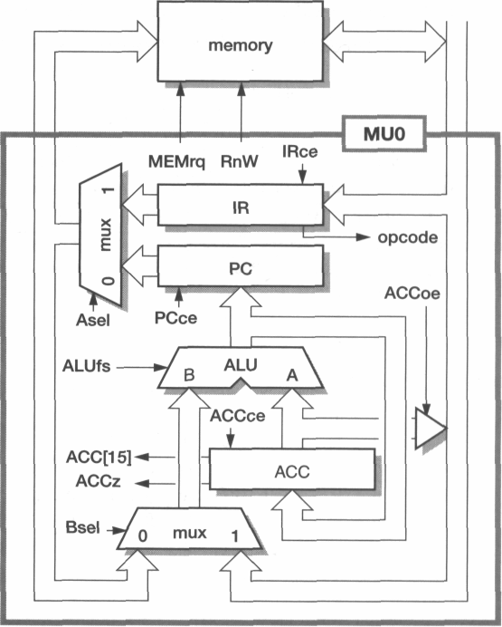
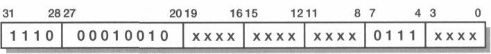
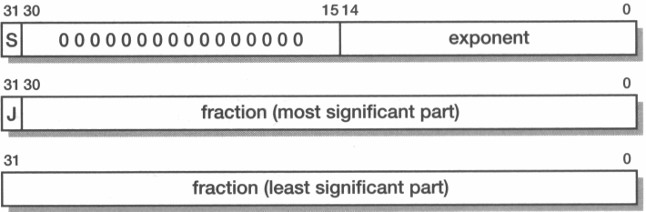
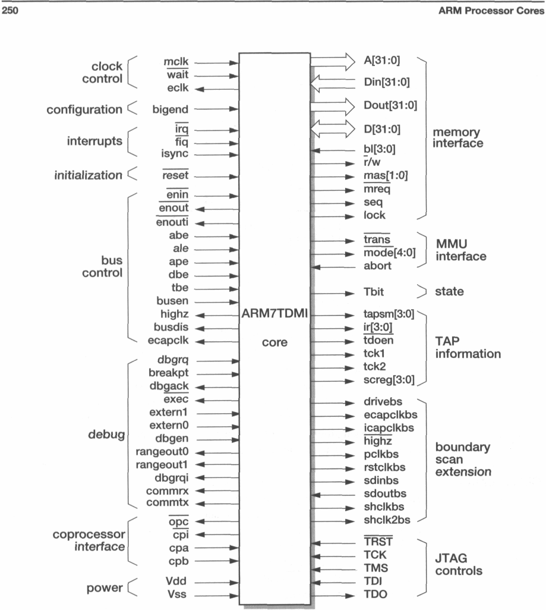
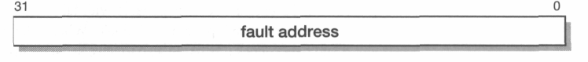
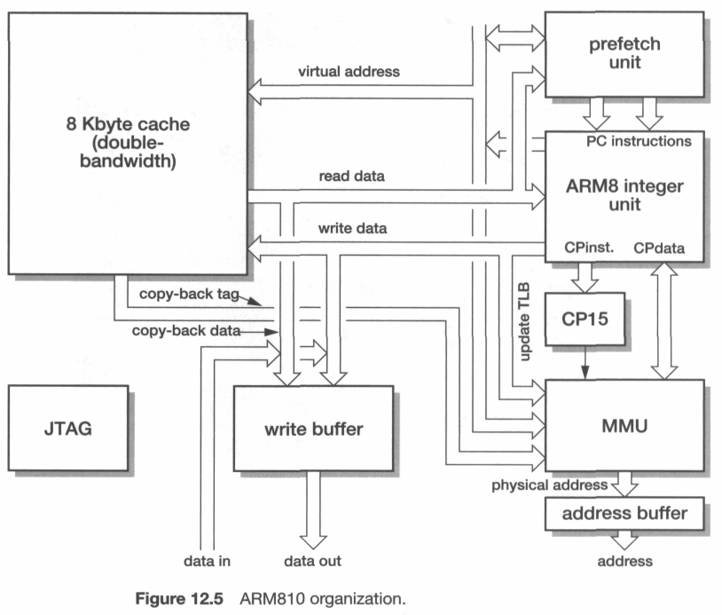
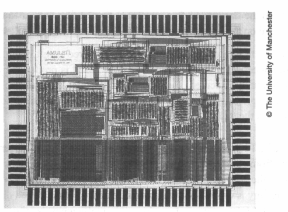

Preface
Aims
This book introduces the concepts and methodologies employed in designing a
system-on-chip (SoC) based around a microprocessor core and in designing the
microprocessor core itself. The principles of microprocessor design are made con-
crete by extensive illustrations based upon the ARM.
The aim of the book is to assist the reader in understanding how SoCs and micro-
processors are designed and used, and why a modern processor is designed the way
that it is. The reader who wishes to know only the general principles should find that
the ARM illustrations add substance to issues which can otherwise appear somewhat
ethereal; the reader who wishes to understand the design of the ARM should find that
the general principles illuminate the rationale for the ARM being as it is.
Other microprocessor architectures are not described in this book. The reader who
wishes to make a comparative study of architectures will find the required informa-
tion on the ARM here but must look elsewhere for information on other designs.
Audience
The book is intended to be of use to two distinct groups of readers:
• Professional hardware and software engineers who are tasked with designing an
SoC product which incorporates an ARM processor, or who are evaluating the
ARM for a product, should find the book helpful in their duties. Although there
is considerable overlap with ARM technical publications, this book provides a
broader context with more background. It is not a substitute for the manufac
turer's data, since much detail has had to be omitted, but it should be useful as an
introductory overview and adjunct to that data.
• Students of computer science, computer engineering and electrical engineering
should find the material of value at several stages in their courses. Some chapters
are closely based on course material previously used in undergraduate teaching;
some other material is drawn from a postgraduate course.
Prerequisite
This book is not intended to be an introductory text on computer architecture or
knowledge
computer logic design. Readers are assumed to have a level of familiarity with these
subjects equivalent to that of a second year undergraduate student in computer sci-
ence or computer engineering. Some first year material is presented, but this is more
by way of a refresher than as a first introduction to this material. No prior
familiarity with the ARM processor is assumed.
The ARM
On 26 April 1985, the first ARM prototypes arrived at Acorn Computers Limited in
Cambridge, England, having been fabricated by VLSI Technology, Inc., in San Jose,
iv
Preface
California. A few hours later they were running code, and a bottle of Moet &
Chan-don was opened in celebration. For the remainder of the 1980s the ARM was
quietly developed to underpin Acorn's desktop products which form the basis of
educational computing in the UK; over the 1990s, in the care of ARM Limited, the
ARM has sprung onto the world stage and has established a market-leading position
in high-performance low-power and low-cost embedded applications.
This prominent market position has increased ARM's resources and accelerated the
rate at which new ARM-based developments appear.
The highlights of the last decade of ARM development include:
• the introduction of the novel compressed instruction format called 'Thumb'
which reduces cost and power dissipation in small systems;
• significant steps upwards in performance with the ARM9, ARM 10 and 'Strong-
ARM' processor families;
• a state-of-the-art software development and debugging environment;
• a very wide range of embedded applications based around ARM processor cores.
Most of the principles of modern SoC and processor design are illustrated some-
where in the ARM family, and ARM has led the way in the introduction of some con-
cepts (such as dynamically decompressing the instruction stream). The inherent
simplicity of the basic 3-stage pipeline ARM core makes it a good pedagogical intro-
ductory example to real processor design, whereas the debugging of a system based
around an ARM core deeply embedded into a complex system chip represents the
cutting-edge of technological development today.
Book Structure Chapter 1 starts with a refresher on first year undergraduate processor design mate-
rial. It illustrates the principle of abstraction in hardware design by reviewing the
roles of logic and gate-level representations. It then introduces the important con-
cept of the Reduced Instruction Set Computer (RISC) as background for what fol-
lows, and closes with some comments on design for low power.
Chapter 2 describes the ARM processor architecture in terms of the concepts intro-
duced in the previous chapter, and Chapter 3 is a gentle introduction to user-level
assembly language programming and could be used in first year undergraduate teach-
ing for this purpose.
Chapter 4 describes the organization and implementation of the 3- and 5-stage
pipeline ARM processor cores at a level suitable for second year undergraduate teach-
ing, and covers some implementation issues.
Chapters 5 and 6 go into the ARM instruction set architecture in increasing depth.
Chapter 5 goes back over the instruction set in more detail than was presented in
Chapter 3, including the binary representation of each instruction, and it penetrates
more deeply into the comers of the instruction set. It is probably best read once and
then used for reference. Chapter 6 backs off a bit to consider what a high-level lan-
guage (in this case, C) really needs and how those needs are met by the ARM instruc-
tion set. This chapter is based on second year undergraduate material.
Preface
V
Chapter 7 introduces the 'Thumb' instruction set which is an ARM innovation to
address the code density and power requirements of small embedded systems. It is of
peripheral interest to a generic study of computer science, but adds an interesting lat-
eral perspective to a postgraduate course.
Chapter 8 raises the issues involved in debugging systems which use embedded
processor cores and in the production testing of board-level systems. These issues are
background to Chapter 9 which introduces a number of different ARM integer cores,
broadening the theme introduced in Chapter 4 to include cores with 'Thumb', debug
hardware, and more sophisticated pipeline operation.
Chapter 10 introduces the concept of memory hierarchy, discussing the principles
of memory management and caches. Chapter 11 reviews the requirements of a
modern operating system at a second year undergraduate level and describes the
approach adopted by the ARM to address these requirements. Chapter 12 introduces
the integrated ARM CPU cores (including StrongARM) that incorporate full support
for memory management.
Chapter 13 covers the issues of designing SoCs with embedded processor cores. Here,
the ARM is at the leading edge of technology. Several examples are presented of produc-
tion embedded system chips to show the solutions that have been developed to the many
problems inherent in committing a complex application-specific system to silicon.
Chapter 14 moves away from mainstream ARM developments to describe the asyn-
chronous ARM-compatible processors and systems developed at the University of
Manchester, England, during the 1990s. After a decade of research the AMULET
technology is, at the time of writing, about to take its first step into the commercial
domain. Chapter 14 concludes with a description of the DRACO SoC design, the first
commercial application of a 32-bit asynchronous microprocessor.
A short appendix presents the fundamentals of computer logic design and the ter-
minology which is used in Chapter 1.
A glossary of the terms used in the book and a bibliography for further reading are
appended at the end of the book, followed by a detailed index.
Course
The chapters are at an appropriate level for use on undergraduate courses as follows:
relevance
Year 1: Chapter 1 (basic processor design); Chapter 3 (assembly language program-
ming); Chapter 5 (instruction binaries and reference for assembly language
programming).
Year 2: Chapter 4 (simple pipeline processor design); Chapter 6 (architectural sup-
port for high-level languages); Chapters 10 and 11 (memory hierarchy and
architectural support for operating systems).
Year 3: Chapter 8 (embedded system debug and test); Chapter 9 (advanced pipe-
lined processor design); Chapter 12 (advanced CPUs); Chapter 13 (example
embedded systems).
A postgraduate course could follow a theme across several chapters, such as proc-
essor design (Chapters 1, 2, 4, 9, 10 and 12), instruction set design (Chapters 2, 3, 5,
6, 7 and 11) or embedded systems (Chapters 2,4, 5, 8, 9 and 13).
vi
Preface
Chapter 14 contains material relevant to a third year undergraduate or advanced
postgraduate course on asynchronous design, but a great deal of additional back-
ground material (not presented in this book) is also necessary.
Support material
Many of the figures and tables will be made freely available over the Internet for
non-commercial use. The only constraint on such use is that this book should be a
recommended text for any course which makes use of such material. Information
about this and other support material may be found on the World Wide Web at:
http://www.cs.man.ac.uk/amulet/publications/books/ARMsysArch
Any enquiries relating to commercial use must be referred to the publishers. The
assertion of the copyright for this book outlined on page iv remains unaffected.
Feedback
The author welcomes feedback on the style and content of this book, and details of
any errors that are found. Please email any such information to:
sfurber@cs.man.ac.uk
Acknowledgements
Many people have contributed to the success of the ARM over the past decade. As a
policy decision I have not named in the text the individuals with principal responsi-
bilities for the developments described therein since the lists would be long and
attempts to abridge them invidious. History has a habit of focusing credit on one or
two high-profile individuals, often at the expense of those who keep their heads
down to get the job done on time. However, it is not possible to write a book on the
ARM without mentioning Sophie Wilson whose original instruction set architecture
survives, extended but otherwise largely unscathed, to this day.
I would also like to acknowledge the support received from ARM Limited in giving
access to their staff and design documentation, and I am grateful for the help I have
received from ARM's semiconductor partners, particularly VLSI Technology, Inc.,
which is now wholly owned by Philips Semiconductors.
The book has been considerably enhanced by helpful comments from reviewers of
draft versions. I am grateful for the sympathetic reception the drafts received and the
direct suggestions for improvement that were returned. The publishers, Addison
Wesley Longman Limited, have been very helpful in guiding my responses to these
suggestions and in other aspects of authorship.
Lastly I would like to thank my wife, Valerie, and my daughters, Alison and Cather-
ine, who allowed me time off from family duties to write this book.
Steve Furber
March 2000
Contents
Preface in
An Introduction to Processor Design
1
1.1 Processor architecture and organization
2
1.2 Abstraction in hardware design
3
1.3 MU0 - a simple processor
7
1.4 Instruction set design
14
1.5 Processor design trade-offs
19
1.6 The Reduced Instruction Set Computer
24
1.7 Design for low power consumption
28
1.8 Examples and exercises
32
The ARM Architecture
35
2.1 The Acorn RISC Machine
36
2.2 Architectural inheritance
37
2.3 The ARM programmer's model
39
2.4 ARM development tools
43
2.5 Example and exercises
47
ARM Assembly Langua
ge Programming
49
3.1 Data processing instructions
50
3.2 Data transfer instructions
55
3.3 Control flow instructions
63
3.4 Writing simple assembly language programs
69
3.5 Examples and exercises
72
ARM Organization and Implementation
74
4.1 3-stage pipeline ARM organization
75
4.2 5-stage pipeline ARM organization
78
4.3 ARM instruction execution
82
4.4 ARM implementation
86
viii
Contents
4.5 The ARM coprocessor interface
101
4.6 Examples and exercises
103
The ARM Instruction Set
105
5.1
Introduction 106
5.2 Exceptions 108
5.3
Conditional execution
111
5.4 Branch and Branch with Link (B, BL)
113
5.5
Branch, Branch with Link and eXchange (BX, BLX)
115
5.6 Software Interrupt (SWI)
117
5.7 Data processing instructions
119
5.8 Multiply instructions
122
5.9 Count leading zeros (CLZ - architecture v5T only)
124
5.10 Single word and unsigned byte data transfer instructions
125
5.11 Half-word and signed byte data transfer instructions
128
5.12 Multiple register transfer instructions
130
5.13 Swap memory and register instructions (SWP)
132
5.14 Status register to general register transfer instructions
133
5.15 General register to status register transfer instructions
134
5.16 Coprocessor instructions
136
5.17 Coprocessor data operations
137
5.18 Coprocessor data transfers
138
5.19 Coprocessor register transfers
139
5.20 Breakpoint instruction (BRK - architecture v5T only)
141
5.21 Unused instruction space
142
5.22 Memory faults
143
5.23 ARM architecture variants
147
5.24 Example and exercises
149
Architectural Support for High-Level Languages
15
1
6.1
Abstraction in software design
152
6.2 Data types
153
6.3
Floating-point data types
158
6.4 The ARM floating-point architecture
163
6.5 Expressions 168
6.6 Conditional statements
170
6.7 Loops 173
6.8 Functions and procedures
175
Contents
ix
6.9 Use of memory
180
6.10 Run-time environment
185
6.11 Examples and exercises
186
The Thumb Instruction Set
188
7.1
The Thumb bit in the CPSR
189
7.2
The Thumb programmer's model
190
7.3
Thumb branch instructions
191
7.4 Thumb software interrupt instruction
194
7.5
Thumb data processing instructions
195
7.6 Thumb single register data transfer instructions
198
7.7 Thumb multiple register data transfer instructions
199
7.8 Thumb breakpoint instruction
200
7.9 Thumb implementation
201
7.10 Thumb applications
203
7.11 Example and exercises
204
Architectural Support for System Development
207
8.1
The ARM memory interface
208
8.2 The Advanced Microcontroller Bus Architecture (AMBA)
216
8.3
The ARM reference peripheral specification
220
8.4 Hardware system prototyping tools
223
8.5 The ARMulator
225
8.6 The JTAG boundary scan test architecture
226
8.7 The ARM debug architecture
232
8.8 Embedded Trace
237
8.9 Signal processing support
239
8.10 Example and exercises
245
ARM Processor Cores
247
9.1
ARM7TDMI 248
9.2 ARM8 256
9.3
ARM9TDMI 260
9.4 ARM10TDMI 263
9.5 Discussion 266
9.6 Example and exercises
267

X
Contents
Memory Hierarchy
269
10.1 Memory size and speed
270 271
10.2 On-chip memory
272 279
10.3 Caches
283 289
10.4 Cache design - an example
10.5 Memory management
290
10.6 Examples and exercises
Architectural Support for Operating Systems
11.1 An introduction to operating systems
291 293
11.2 The ARM system control coprocessor
294 297
11.3 CP15 protection unit registers
298 302
11.4 ARM protection unit
309 310
11.5 CP15 MMU registers
312 316
11.6 ARM MMU architecture
11.7 Synchronization
317
11.8 Context switching
11.9 Input/Output
11.10 Example and exercises
ARM CPU Cores
12.1 The ARM710T, ARM720T and
318 323
ARM740T
327 335
12.2 The ARM810
339 341
12.3 The StrongARM SA-110
344 346
12.4 The ARM920T and ARM940T
12.5 The ARM946E-S and ARM966E-S
347
12.6 The ARM1020E
12.7 Discussion
12.8 Example and exercises
Embedded ARM Applications
13.1 The VLSI Ruby II Advanced Communication Processor
348 349
13.2 The VLSI ISDN Subscriber Processor
352 355
13.3 The OneC™ VWS22100 GSM chip
360
13.4 The Ericsson-VLSI Bluetooth Baseband Controller
13.5 The ARM7500 and ARM7500FE
Contents
xi
13.6 The ARM7100
364
13.7 The SA-1100
368
13.8 Examples and exercises
371
The AMULET Asynchronous ARM Processors
374
14.1 Self-timed design
375
14.2 AMULET1 377
14.3 AMULET2 381
14.4 AMULET2e 384
14.5 AMULET3 387
14.6 The DRACO telecommunications controller
390
14.7 A self-timed future?
396
14.8 Example and exercises
397
Appendix: Computer Logic
399
Glossary
405
Bibliography
410
Index
413
An Introduction to
Processor Design
Summary of chapter contents
The design of a general-purpose processor, in common with most engineering
endeavours, requires the careful consideration of many trade-offs and compro-
mises. In this chapter we will look at the basic principles of processor instruction
set and logic design and the techniques available to the designer to help achieve
the design objectives.
Abstraction is fundamental to understanding complex computers. This chapter
introduces the abstractions which are employed by computer hardware designers,
of which the most important is the logic gate. The design of a simple processor is
presented, from the instruction set, through a register transfer level description,
down to logic gates.
The ideas behind the Reduced Instruction Set Computer (RISC) originated in proc-
essor research programmes at Stanford and Berkeley universities around 1980, though
some of the central ideas can be traced back to earlier machines. In this chapter we look
at the thinking that led to the RISC movement and consequently influenced the design of
the ARM processor which is the subject of the following chapters.
With the rapid development of markets for portable computer-based products,
the power consumption of digital circuits is of increasing importance. At the end of
the chapter we will look at the principles of low-power high-performance design.
1
2
An Introduction to Processor Design
1.1 Processor architecture and organization
All modern general-purpose computers employ the principles of the stored-program
digital computer. The stored-program concept originated from the Princeton Insti-
tute of Advanced Studies in the 1940s and was first implemented in the 'Baby'
machine which first ran in June 1948 at the University of Manchester in England.
Fifty years of development have resulted in a spectacular increase in the perform-
ance of processors and an equally spectacular reduction in their cost. Over this period
of relentless progress in the cost-effectiveness of computers, the principles of oper-
ation have changed remarkably little. Most of the improvements have resulted from
advances in the technology of electronics, moving from valves (vacuum tubes) to indi-
vidual transistors, to integrated circuits (ICs) incorporating several bipolar transistors
and then through generations of IC technology leading to today's very large scale inte-
grated (VLSI) circuits delivering millions of field-effect transistors on a single chip.
As transistors get smaller they get cheaper, faster, and consume less power. This
win-win scenario has carried the computer industry forward for the past three decades,
and will continue to do so at least for the next few years.
However, not all of the progress over the past 50 years has come from advances in
electronics technology. There have also been occasions when a new insight into the
way that technology is employed has made a significant contribution. These insights
are described under the headings of computer architecture and computer organization,
where we will work with the following interpretations of these terms:
Computer
• Computer architecture describes the user's view of the computer. The instruction
architecture
set, visible registers, memory management table structures and exception han
dling model are all part of the architecture.
Computer
• Computer organization describes the user-invisible implementation
organization
of the
architecture. The pipeline structure, transparent cache, table-walking
hardware
and translation look-aside buffer are all aspects of the organization.
Amongst the advances in these aspects of the design of computers, the introduction
of virtual memory in the early 1960s, of transparent cache memories, of pipelining
and so on, have all been milestones in the evolution of computers. The RISC idea
ranks amongst these advances, offering a significant shift in the balance of forces
What is a
which determines the cost-effectiveness of computer technology.
processor?
A general-purpose processor is a finite-state automaton that executes instructions held
in a memory. The state of the system is defined by the values held in the memory loca-
tions together with the values held in certain registers within the processor itself (see
Figure 1.1 on page 3; the hexadecimal notation for the memory addresses is explained
in Section 6.2 on page 153). Each instruction defines a particular way the total state
should change and it also defines which instruction should be executed next.
Abstraction in hardware design
3
Figure 1.1 The state in a stored-program digital computer.
The Stored-
The stored-program digital computer keeps its instructions and data in the same
program
memory system, allowing the instructions to be treated as data when necessary. This
Computer
enables the processor itself to generate instructions which it can subsequently execute.
Although programs that do this at a fine granularity (self-modifying code) are gener-
ally considered bad form these days since they are very difficult to debug, use at a
coarser granularity is fundamental to the way most computers operate. Whenever a
computer loads in a new program from disk (overwriting an old program) and then
executes it the computer is employing this ability to change its own program.
C o mp u t e r
Because of its programmability a stored-program digital computer is universal,
applications
which means that it can undertake any task that can be described by a suitable algo-
rithm. Sometimes this is reflected by its configuration as a desktop machine where
the user runs different programs at different times, but sometimes it is reflected by
the same processor being used in a range of different applications, each with a fixed
program. Such applications are characteristically embedded into products such as
mobile telephones, automotive engine-management systems, and so on.
1.2 Abstraction in hardware design
Computers are very complex pieces of equipment that operate at very high speeds. A
modern microprocessor may be built from several million transistors each of which
can switch a hundred million times a second. Watch a document scroll up the screen

4
An Introduction to Processor Design
on a desktop PC or workstation and try to imagine how a hundred million million
transistor switching actions are used in each second of that movement. Now consider
that every one of those switching actions is, in some sense, the consequence of a
deliberate design decision. None of them is random or uncontrolled; indeed, a single
error amongst those transitions is likely to cause the machine to collapse into a useless
state. How can such complex systems be designed to operate so reliably?
Transistors
A clue to the answer may be found in the question itself. We have described the oper-
ation of the computer in terms of transistors, but what is a transistor? It is a curious
structure composed from carefully chosen chemical substances with complex electri-
cal properties that can only be understood by reference to the theory of quantum
mechanics, where strange subatomic particles sometimes behave like waves and can
only be described in terms of probabilities. Yet the gross behaviour of a transistor can
be described, without reference to quantum mechanics, as a set of equations that relate
the voltages on its terminals to the current that flows though it. These equations
abstract the essential behaviour of the device from its underlying physics.
Logic gates
The equations that describe the behaviour of a transistor are still fairly complex.
When a group of transistors is wired together in a particular structure, such as the
CMOS (Complementary Metal Oxide Semiconductor) NAND gate shown in
Figure 1.2, the behaviour of the group has a particularly simple description.
If each of the input wires (A and B) is held at a voltage which is either near to Vdd
or near to Vss, the output will will also be near to Vdd or Vss according to the follow-
ing rules:
• If A and B are both near to Vdd, the output will be near to Vss.
• If either A or B (or both) is near to Vss, the output will be near to Vdd.
Figure 1.2 The transistor circuit of a static 2-input CMOS NAND gate.
Abstraction in hardware design
5
With a bit of care we can define what is meant by 'near to' in these rules, and then
associate the meaning true with a value near to Vdd and false with a value near to
Vss. The circuit is then an implementation of the NAND Boolean logic function:
output = —(A^B)
Equation 1
Although there is a lot of engineering design involved in turning four transistors
into a reliable implementation of this equation, it can be done with sufficient reliability
that the logic designer can think almost exclusively in terms of logic gates. The con-
cepts that the logic designer works with are illustrated in Figure 1.3, and consist of the
following 'views' of the logic gate:
Logic symbol
• A logic symbol.
This is a symbol that represents a NAND gate function in a circuit schematic;
there are similar symbols for other logic gates (for instance, removing the bubble
from the output leaves an AND gate which generates the opposite output func-
tion; further examples are given in 'Appendix: Computer Logic' on page 399).
Truth table
• A truth table.
This describes the logic function of the gate, and encompasses everything that the
logic designer needs to know about the gate for most purposes. The significance
here is that it is a lot simpler than four sets of transistor equations.
(In this truth table we have represented 'true' by '1' and 'false' by '0', as is
common practice when dealing with Boolean variables.)
The gate
The point about the gate abstraction is that not only does it greatly simplify the
abstraction
process of designing circuits with great numbers of transistors, but it actually
Figure 1.3 The logic symbol and truth table for a NAND gate.
6
An Introduction to Processor Design
removes the need to know that the gate is built from transistors. A logic circuit
should have the same logical behaviour whether the gates are implemented using
field-effect transistors (the transistors that are available on a CMOS process), bipo-
lar transistors, electrical relays, fluid logic or any other form of logic. The imple-
mentation technology will affect the performance of the circuit, but it should have
no effect on its function. It is the duty of the transistor-level circuit designer to sup-
port the gate abstraction as near perfectly as is possible in order to isolate the logic
circuit designer from the need to understand the transistor equations.
Levels of
It may appear that this point is being somewhat laboured, particularly to those read-
abstraction
ers who have worked with logic gates for many years. However, the principle that is
illustrated in the gate level abstraction is repeated many times at different levels in
computer science and is absolutely fundamental to the process which we began con-
sidering at the start of this section, which is the management of complexity.
The process of gathering together a few components at one level to extract their
essential joint behaviour and hide all the unnecessary detail at the next level enables
us to scale orders of complexity in a few steps. For instance, if each level encompasses
four components of the next lower level as our gate model does, we can get from a
transistor to a microprocessor comprising a million transistors in just ten steps. In
many cases we work with more than four components, so the number of steps is
greatly reduced.
A typical hierarchy of abstraction at the hardware level might be:
1. transistors;
2. logic gates, memory cells, special circuits;
3. single-bit adders, multiplexers, decoders, flip-flops;
4. word-wide adders, multiplexers, decoders, registers, buses;
5. ALUs (Arithmetic-Logic Units), barrel shifters, register banks, memory blocks;
6. processor, cache and memory management organizations;
7. processors, peripheral cells, cache memories, memory management units;
8. integrated system chips;
9. printed circuit boards;
10. mobile telephones, PCs, engine controllers.
The process of understanding a design in terms of levels of abstraction is reasona-
bly concrete when the design is expressed in hardware. But the process doesn't stop
with the hardware; if anything, it is even more fundamental to the understanding of
software and we will return to look at abstraction in software design in due course.
Gate-level
The next step up from the logic gate is to assemble a library of useful functions each
design
composed of several gates. Typical functions are, as listed above, adders, multiplex-
ers, decoders and flip-flops, each 1-bit wide. This book is not intended to be a gen-
MU0 - a simple processor
7
eral introduction to logic design since its principal subject material relates to the
design and use of processor cores and any reader who is considering applying this
information should already be familiar with conventional logic design.
For those who are not so familiar with logic design or who need their knowledge
refreshing, 'Appendix: Computer Logic' on page 399 describes the essentials which
will be assumed in the next section. It includes brief details on:
• Boolean algebra and notation;
• binary numbers;
• binary addition;
• multiplexers;
• clocks;
• sequential circuits;
• latches and flip-flops;
• registers.
If any of these terms is unfamiliar, a brief look at the appendix may yield sufficient
information for what follows.
Note that although the appendix describes these circuit functions in terms of simple
logic gates, there are often more efficient CMOS implementations based on alternative
transistor circuits. There are many ways to satisfy the basic requirements of logic
design using the complementary transistors available on a CMOS chip, and new tran-
sistor circuits are published regularly.
For further information consult a text on logic design; a suitable reference is sug-
gested in the 'Bibliography' on page 410.
1.3 MU0 - a simple processor
A simple form of processor can be built from a few basic components:
• a program counter (PC) register that is used to hold the address of the current
instruction;
• a single register called an accumulator (ACC) that holds a data value while it is
worked upon;
• an arithmetic-logic unit (ALU) that can perform a number of operations on
binary operands, such as add, subtract, increment, and so on;
• an instruction register (IR) that holds the current instruction while it is executed;
• instruction decode and control logic that employs the above components to
achieve the desired results from each instruction.

8
An Introduction to Processor Design
This limited set of components allows a restricted set of instructions to be imple-
mented. Such a design has been employed at the University of Manchester for many
years to illustrate the principles of processor design. Manchester-designed machines
are often referred to by the names MUn for 1 < n < 6, so this simple machine is
known as MU0. It is a design developed only for teaching and was not one of the
large-scale machines built at the university as research vehicles, though it is similar to
the very first Manchester machine and has been implemented in various forms by
undergraduate students.
The MU0
MU0 is a 16-bit machine with a 12-bit address space, so it can address up to 8
instruction set
Kbytes of memory arranged as 4,096 individually addressable 16-bit locations.
Instructions are 16 bits long, with a 4-bit operation code (or opcode) and a 12-bit
address field (S) as shown in Figure 1.4. The simplest instruction set uses only eight
of the 16 available opcodes and is summarized in Table 1.1.
An instruction such as 'ACC := ACC + mem16[S]' means 'add the contents of the
(16-bit wide) memory location whose address is S to the accumulator'. Instructions
are fetched from consecutive memory addresses, starting from address zero, until an
instruction which modifies the PC is executed, whereupon fetching starts from the new
address given in the 'jump' instruction.
Table 1.1 The MU0 instruction set.
MU0 logic
To understand how this instruction set might be implemented we will go through the
design
design process in a logical order. The approach taken here will be to separate the
design into two components:
Figure 1.4 The MU0 instruction format.

MU0 - a simple processor
9
• The datapath.
All the components carrying, storing or processing many bits in parallel will be
considered part of the datapath, including the accumulator, program counter,
ALU and instruction register. For these components we will use a register trans-
fer level (RTL) design style based on registers, multiplexers, and so on.
• The control logic.
Everything that does not fit comfortably into the datapath will be considered part
of the control logic and will be designed using a finite state machine (FSM)
approach.
Datapath design
There are many ways to connect the basic components needed to implement the
MU0 instruction set. Where there are choices to be made we need a guiding princi-
ple to help us make the right choices. Here we will follow the principle that the
memory will be the limiting factor in our design, and a memory access will always
take a clock cycle. Hence we will aim for an implementation where:
• Each instruction takes exactly the number of clock cycles defined by the number
of memory accesses it must make.
Referring back to Table 1.1 we can see that the first four instructions each require
two memory accesses (one to fetch the instruction itself and one to fetch or store the
operand) whereas the last four instructions can execute in one cycle since they do not
require an operand. (In practice we would probably not worry about the efficiency of
the STP instruction since it halts the processor for ever.) Therefore we need a datapath
design which has sufficient resource to allow these instructions to complete in two or
one clock cycles. A suitable datapath is shown in Figure 1.5.
Figure 1.5 MU0 datapath example.
10
An Introduction to Processor Design
(Readers who might expect to see a dedicated PC incrementer in this datapath
should note that all instructions that do not change the PC take two cycles, so the main
ALU is available during one of these cycles to increment the PC.)
Datapath
The design we will develop assumes that each instruction starts when it has arrived
operation
in the instruction register. After all, until it is in the instruction register we cannot
know which instruction we are dealing with. Therefore an instruction executes in
two stages, possibly omitting the first of these:
1. Access the memory operand and perform the desired operation.
The address in the instruction register is issued and either an operand is read
from memory, combined with the accumulator in the ALU and written back into
the accumulator, or the accumulator is stored out to memory.
2. Fetch the next instruction to be executed.
Either the PC or the address in the instruction register is issued to fetch the next
instruction, and in either case the address is incremented in the ALU and the
incremented value saved into the PC.
Initialization
The processor must start in a known state. Usually this requires a reset input to cause it
to start executing instructions from a known address. We will design MU0 to start exe-
cuting from address 00016. There are several ways to achieve this, one of which is to use
the reset signal to zero the ALU output and then clock this into the PC register.
Register transfer
The next step is to determine exactly the control signals that are required to cause
level design
the datapath to carry out the full set of operations. We assume that all the registers
change state on the falling edge of the input clock, and where necessary have con-
trol signals that may be used to prevent them from changing on a particular clock
edge. The PC, for example, will change at the end of a clock cycle where PCce
is ' 1' but will not change when PCce is '0'.
A suitable register organization is shown in Figure 1.6 on page 11. This shows enables
on all of the registers, function select lines to the ALU (the precise number and interpreta-
tion to be determined later), the select control lines for two multiplexers, the control for a
tri-state driver to send the ACC value to memory and memory request (MEMrq) and
read/write (RnW) control lines. The other signals shown are outputs from the datapath to
the control logic, including the opcode bits and signals indicating whether ACC is zero or
negative which control the respective conditional jump instructions.
Control logic
The control logic simply has to decode the current instruction and generate the appropri-
ate levels on the datapath control signals, using the control inputs from the datapath
where necessary. Although the control logic is a finite state machine, and therefore in
principle the design should start from a state transition diagram, in this case the FSM is
trivial and the diagram not worth drawing. The implementation requires only two states,
'fetch' and 'execute', and one bit of state (Ex/ft) is therefore sufficient.

MU0 - a simple processor
11
The control logic can be presented in tabular form as shown in Table 1.2 on page 12.
In this table an 'x' indicates a don't care condition. Once the ALU function select codes
have been assigned the table may be implemented directly as a PLA (programmable
logic array) or translated into combinatorial logic and implemented using standard gates.
A quick scrutiny of Table 1.2 reveals a few easy simplifications. The program
counter and instruction register clock enables (PCce and IRce) are always the same.
This makes sense, since whenever a new instruction is being fetched the ALU is com-
puting the next program counter value, and this should be latched too. Therefore these
control signals may be merged into one. Similarly, whenever the accumulator is driv-
ing the data bus (ACCoe is high) the memory should perform a write operation (Rn W
is low), so one of these signals can be generated from the other using an inverter.
After these simplifications the control logic design is almost complete. It only
remains to determine the encodings of the ALU functions.
Figure 1.6 MU0 register transfer level organization.

MU0 - a simple processor
11
The control logic can be presented in tabular form as shown in Table 1.2 on page 12.
In this table an 'x' indicates a don't care condition. Once the ALU function select codes
have been assigned the table may be implemented directly as a PLA (programmable
logic array) or translated into combinatorial logic and implemented using standard gates.
A quick scrutiny of Table 1.2 reveals a few easy simplifications. The program
counter and instruction register clock enables (PCce and IRce) are always the same.
This makes sense, since whenever a new instruction is being fetched the ALU is com-
puting the next program counter value, and this should be latched too. Therefore these
control signals may be merged into one. Similarly, whenever the accumulator is driv-
ing the data bus (ACCoe is high) the memory should perform a write operation (RnW
is low), so one of these signals can be generated from the other using an inverter.
After these simplifications the control logic design is almost complete. It only
remains to determine the encodings of the ALU functions.
Figure 1.6 MU0 register transfer level organization.
12
An Introduction to Processor Design
ALU design
Most of the register transfer level functions in Figure 1.6 have straightforward logic
implementations (readers who are in doubt should refer to 'Appendix: Computer
Logic' on page 399). The MU0 ALU is a little more complex than the simple adder
described in the appendix, however.
The ALU functions that are required are listed in Table 1.2. There are five of them
(A + B, A — B, B, B + 1,0), the last of which is only used while reset is active. There-
fore the reset signal can control this function directly and the control logic need only
generate a 2-bit function select code to choose between the other four. If the principal
ALU inputs are the A and B operands, all the functions may be produced by augment-
ing a conventional binary adder:
• A + B is the normal adder output (assuming that the carry-in is zero).
• A — B may be implemented as A + B + 1, requiring the B inputs to be inverted and
the carry-in to be forced to a one.
• B is implemented by forcing the A inputs and the carry-in to zero.
• B + 1 is implemented by forcing A to zero and the carry-in to one.
Table 1.2 MU0 control logic.

MU0 - a simple processor
13
The gate-level logic for the ALU is shown in Figure 1.7. Aen enables the A operand
or forces it to zero; Binv controls whether or not the B operand is inverted. The
carry-out (Cout) from one bit is connected to the carry-in (Cin) of the next; the
carry-in to the first bit is controlled by the ALU function selects (as are Aen and Binv),
and the carry-out from the last bit is unused Together with the multiplexers, registers,
control logic and a bus buffer (which is used to put the accumulator value onto the
data bus), the processor is complete. Add a standard memory and you have a workable
computer.
MU0 extensions
Although MU0 is a very simple processor and would not make a good target for a
high-level language compiler, it serves to illustrate the basic principles of processor
design. The design process used to develop the first ARM processors differed
mainly in complexity and not in principle. MU0 designs based on microcoded con-
trol logic have also been developed, as have extensions to incorporate indexed
addressing. Like any good processor, MU0 has spaces left in the instruction space
which allow future expansion of the instruction set.
To turn MU0 into a useful processor takes quite a lot of work. The following exten-
sions seem most important:
• Extending the address space.
• Adding more addressing modes.
• Allowing the PC to be saved in order to support a subroutine mechanism.
• Adding more registers, supporting interrupts, and so on...
Overall, this doesn't seem to be the place to start from if the objective is to design a
high-performance processor which is a good compiler target.
Figure 1.7 MU0 ALU logic for one bit.


14
An Introduction to Processor Design
1.4 Instruction set design
If the MU0 instruction set is not a good choice for a high-performance processor,
what other choices are there?
Starting from first principles, let us look at a basic machine operation such as an
instruction to add two numbers to produce a result.
4-addreSS
In its most general form, this instruction requires some bits to differentiate it from
instructions
other instructions, some bits to specify the operand addresses, some bits to specify
where the result should be placed (the destination), and some bits to specify the
address of the next instruction to be executed. An assembly language format for
such an instruction might be:
ADD
d, s1, s2, next_i ; d := s1 +
s2
Such an instruction might be represented in memory by a binary format such as
that shown in Figure 1.8. This format requires 4n +f bits per instruction where each
operand requires n bits and the opcode that specifies 'ADD' requires/bits.
Figure 1.8 A 4-address instruction format.
3-addresS
The first way to reduce the number of bits required for each instruction is to make
instructions
the address of the next instruction implicit (except for branch instructions, whose
role is to modify the instruction sequence explicitly). If we assume that the default
next instruction can be found by adding the size of the instruction to the PC, we get
a 3-address instruction with an assembly language format like this:
ADD
d, s1, s2
; d := s1 + s2
A binary representation of such an instruction is shown in Figure 1.9.
Figure 1.9 A 3-address instruction format.
2-addreSS
A further saving in the number of bits required to store an instruction can be
instructions
achieved by making the destination register the same as one of the source registers.
The assembly language format could be:


Instruction set design
15
ADD d, s1 ; d := d + s1
The binary representation now reduces to that shown in Figure 1.10.
Figure 1.10 A 2-address instruction format.
1-address
If the destination register is made implicit it is often called the accumulator (see,
instructions
for example, MU0 in the previous section); an instruction need only specify one
operand:
ADD s1 ; accumulator := accumulator + s1
The binary representation simplifies further to that shown in Figure 1.11.
Figure 1.11 A 1-address (accumulator) instruction format.
0-address
Finally, an architecture may make all operand references implicit by using an evalu-
instructions
ation stack. The assembly language format is:
ADD
; top_of_stack := top_of_stack +
next_on_stack
The binary representation is as shown in Figure 1.12.
Figure 1.12 A 0-address instruction format.
Examples of
All these forms of instruction have been used in processor instruction sets apart
n-address use
from the 4-address form which, although it is used internally in some microcode
designs, is unnecessarily expensive for a machine-level instruction set. For example:
• The Inmos transputer uses a 0-address evaluation stack architecture.
• The MU0 example in the previous section illustrates a simple 1 -address architecture.
16
An Introduction to Processor Design
• The Thumb instruction set used for high code density on some ARM processors uses
an architecture which is predominantly of the 2-address form (see Chapter 7).
• The standard ARM instruction set uses a 3-address architecture.
Addresses
An address in the MU0 architecture is the straightforward 'absolute' address of the
memory location which contains the desired operand. However, the three addresses
in the ARM 3-address instruction format are register specifiers, not memory
addresses. In general, the term '3-address architecture' refers to an instruction set
where the two source operands and the destination can be specified independently of
each other, but often only within a restricted set of possible values.
Instruction types We have just looked at a number of ways of specifying an 'ADD' instruction. A
complete instruction set needs to do more than perform arithmetic operations on
operands in memory. A general-purpose instruction set can be expected to include
instructions in the following categories:
• Data processing instructions such as add, subtract and multiply.
• Data movement instructions that copy data from one place in memory to another,
or from memory to the processor's registers, and so on.
• Control flow instructions that switch execution from one part of the program to
another, possibly depending on data values.
• Special instructions to control the processor's execution state, for instance to
switch into a privileged mode to carry out an operating system function.
Sometimes an instruction will fit into more than one of these categories. For exam-
ple, a 'decrement and branch if non-zero' instruction, which is useful for controlling
program loops, does some data processing on the loop variable and also performs a
control flow function. Similarly, a data processing instruction which fetches an oper-
and from an address in memory and places its result in a register can be viewed as per-
forming a data movement function.
Orthogonal
An instruction set is said to be orthogonal if each choice in the building of an
instructions
instruction is independent of the other choices. Since add and subtract are similar
operations, one would expect to be able to use them in similar contexts. If add uses
a 3-address format with register addresses, so should subtract, and in neither case
should there be any peculiar restrictions on the registers which may be used.
An orthogonal instruction set is easier for the assembly language programmer to
learn and easier for the compiler writer to target. The hardware implementation will
usually be more efficient too.

Instruction set design
17
Addressing
When accessing an operand for a data processing or movement instruction, there are
modes
several standard techniques used to specify the desired location. Most processors
support several of these addressing modes (though few support all of them):
1. Immediate addressing: the desired value is presented as a binary value in the
instruction.
2. Absolute addressing: the instruction contains the full binary address of the
desired value in memory.
3. Indirect addressing: the instruction contains the binary address of a memory
location that contains the binary address of the desired value.
4. Register addressing: the desired value is in a register, and the instruction contains
the register number.
5. Register indirect addressing: the instruction contains the number of a register
which contains the address of the value in memory.
6. Base plus offset addressing: the instruction specifies a register (the base) and a
binary offset to be added to the base to form the memory address.
7. Base plus index addressing: the instruction specifies a base register and another
register (the index) which is added to the base to form the memory address.
8. Base plus scaled index addressing: as above, but the index is multiplied by a con
stant (usually the size of the data item, and usually a power of two) before being
added to the base.
9. Stack addressing: an implicit or specified register (the stack pointer) points to an
area of memory (the stack) where data items are written (pushed) or read
(popped) on a last-in-first-out basis.
Note that the naming conventions used for these modes by different processor man-
ufacturers are not necessarily as above. The list can be extended almost indefinitely by
adding more levels of indirection, adding base plus index plus offset, and so on. How-
ever, most of the common addressing modes are covered in the list above.
Control flow
Where the program must deviate from the default (normally sequential) instruction
instructions
sequence, a control flow instruction is used to modify the program counter (PC)
explicitly. The simplest such instructions are usually called 'branches' or 'jumps'.
Since most branches require a relatively short range, a common form is the
'PC-relative' branch. A typical assembly language format is:
Here the assembler works out the displacement which must be added to the value
the PC has when the branch is executed in order to force the PC to point to LABEL.
The maximum range of the branch is determined by the number of bits allocated to
18
An Introduction to Processor Design
the displacement in the binary format; the assembler should report an error if the
required branch is out of range.
Conditional
A Digital Signal Processing (DSP) program may execute a fixed instruction
branches
sequence for ever, but a general-purpose processor is usually required to vary its
program in response to data values. Some processors (including MU0) allow the
values in the general registers to control whether or not a branch is taken through
instructions such as:
• Branch if a particular register is zero (or not zero, or negative, and so on).
• Branch if two specified registers are equal (or not equal).
Condition code However, the most frequently used mechanism is based on a condition code register,
register
which is a special-purpose register within the processor. Whenever a data process-
ing instruction is executed (or possibly only for special instructions, or instructions
that specifically enable the condition code register), the condition code register
records whether the result was zero, negative, overflowed, produced a carry output,
and so on. The conditional branch instructions are then controlled by the state of the
condition code register when they execute.
Subroutine calls
Sometimes a branch is executed to call a subprogram where the instruction
sequence should return to the calling sequence when the subprogram terminates.
Since the subprogram may be called from many different places, a record of the
calling address must be kept. There are many different ways to achieve this:
• The calling routine could compute a suitable return address and put it in a stand
ard memory location for use by the subprogram as a return address before exe
cuting the branch.
• The return address could be pushed onto a stack.
• The return address could be placed in a register.
Subprogram calls are sufficiently common that most architectures include specific
instructions to make them efficient. They typically require to jump further across
memory than simple branches, so it makes sense to treat them separately. Often they
are not conditional; a conditional subprogram call is programmed, when required, by
inserting an unconditional call and branching around it with the opposite condition.
Subprogram
The return instruction moves the return address from wherever it was stored (in
return
memory, possibly on a stack, or in a register) back into the PC.
System calls
Another category of control flow instruction is the system call. This is a branch to
an operating system routine, often associated with a change in the privilege level of
the executing program. Some functions in the processor, possibly including all the
Processor design trade-offs
19
input and output peripherals, are protected from access by user code. Therefore a
user program that needs to access these functions must make a system call.
System calls pass through protection barriers in a controlled way. A well-designed
processor will ensure that it is possible to write a multi-user operating system where
one user's program is protected from assaults from other, possibly malicious, users.
This requires that a malicious user cannot change the system code and, when access to
protected functions is required, the system code must make thorough checks that the
requested function is authorized.
This is a complex area of hardware and software design. Most embedded systems
(and many desktop systems) do not use the full protection capabilities of the hard-
ware, but a processor which does not support a protected system mode will be
excluded from consideration for those applications that demand this facility, so most
microprocessors now include such support. Whilst it is not necessary to understand
the full implications of supporting a secure operating system to appreciate the basic
design of an instruction set, even the less well-informed reader should have an aware-
ness of the issues since some features of commercial processor architectures make
little sense unless this objective of potentially secure protection is borne in mind.
Exceptions
The final category of control flow instruction comprises cases where the change in
the flow of control is not the primary intent of the programmer but is a consequence
of some unexpected (and possibly unwanted) side-effect of the program. An attempt
to access a memory location may fail, for instance, because a fault is detected in the
memory subsystem. The program must therefore deviate from its planned course in
order to attempt to recover from the problem.
These unplanned changes in the flow of control are termed exceptions.
1.5 Processor design trade-offs
The art of processor design is to define an instruction set that supports the functions
that are useful to the programmer whilst allowing an implementation that is as effi-
cient as possible. Preferably, the same instruction set should also allow future, more
sophisticated implementations to be equally efficient.
The programmer generally wants to express his or her program in as abstract a way
as possible, using a high-level language which supports ways of handling concepts
that are appropriate to the problem. Modern trends towards functional and object-ori-
ented languages move the level of abstraction higher than older imperative languages
such as C, and even the older languages were quite a long way removed from typical
machine instructions.
The semantic gap between a high-level language construct and a machine instruc-
tion is bridged by a compiler, which is a (usually complex) computer program that
20
An Introduction to Processor Design
translates a high-level language program into a sequence of machine instructions.
Therefore the processor designer should define his or her instruction set to be a good
compiler target rather than something that the programmer will use directly to solve
the problem by hand. So, what sort of instruction set makes a good compiler target?
Complex
Prior to 1980, the principal trend in instruction set design was towards increasing
Instruction Set
complexity in an attempt to reduce the semantic gap that the compiler had to bridge.
Computers
Single instruction procedure entries and exits were incorporated into the instruction
set, each performing a complex sequence of operations over many clock cycles.
Processors were sold on the sophistication and number of their addressing modes,
data types, and so on.
The origins of this trend were in the minicomputers developed during the 1970s.
These computers had relatively slow main memories coupled to processors built using
many simple integrated circuits. The processors were controlled by microcode ROMs
(Read Only Memories) that were faster than main memory, so it made sense to imple-
ment frequently used operations as microcode sequences rather than them requiring
several instructions to be fetched from main memory.
Throughout the 1970s microprocessors were advancing in their capabilities. These
single chip processors were dependent on state-of-the-art semiconductor technology
to achieve the highest possible number of transistors on a single chip, so their develop-
ment took place within the semiconductor industry rather than within the computer
industry. As a result, microprocessor designs displayed a lack of original thought at
the architectural level, particularly with respect to the demands of the technology that
was used in their implementation. Their designers, at best, took ideas from the mini-
computer industry where the implementation technology was very different. In partic-
ular, the microcode ROM which was needed for all the complex routines absorbed an
unreasonable proportion of the area of a single chip, leaving little room for other per-
formance-enhancing features.
This approach led to the single-chip Complex Instruction Set Computers (CISCs)
of the late 1970s, which were microprocessors with minicomputer instruction sets that
were severely compromised by the limited available silicon resource.
The RISC
Into this world of increasingly complex instruction sets the Reduced Instruction Set
revolution
Computer (RISC) was born. The RISC concept was a major influence on the design
of the ARM processor; indeed, RISC was the ARM's middle name. But before we
look at either RISC or the ARM in more detail we need a bit more background on
what processors do and how they can be designed to do it quickly.
If reducing the semantic gap between the processor instruction set and the
high-level language is not the right way to make an efficient computer, what other
options are open to the designer?

Processor design trade-offs
21
What processors If we want to make a processor go fast, we must first understand what it spends its
do
time doing. It is a common misconception that computers spend their time comput-
ing, that is, carrying out arithmetic operations on user data. In practice they spend
very little time 'computing' in this sense. Although they do a fair amount of arith-
metic, most of this is with addresses in order to locate the relevant data items and
program routines. Then, having found the user's data, most of the work is in moving
it around rather than processing it in any transformational sense.
At the instruction set level, it is possible to measure the frequency of use of the var-
ious different instructions. It is very important to obtain dynamic measurements, that
is, to measure the frequency of instructions that are executed, rather than the static
frequency, which is just a count of the various instruction types in the binary image. A
typical set of statistics is shown in Table 1.3; these statistics were gathered running a
print preview program on an ARM instruction emulator, but are broadly typical of
what may be expected from other programs and instruction sets.
Table 1.3 Typical dynamic instruction usage.
These sample statistics suggest that the most important instructions to optimise are
those concerned with data movement, either between the processor registers and
memory or from register to register. These account for almost half of all instructions
executed. Second most frequent are the control flow instructions such as branches and
procedure calls, which account for another quarter. Arithmetic operations are down at
15%, as are comparisons.
Now we have a feel for what processors spend their time doing, we can look at
ways of making them go faster. The most important of these is pipelining.
Another important technique is the use of a cache memory, which will be cov-
ered in Section 10.3 on page 272. A third technique, super-scalar instruction exe-
cution, is very complex, has not been used on ARM processors and is not
covered in this book.
Processor design trade-offs
21
What processors If we want to make a processor go fast, we must first understand what it spends its
do
time doing. It is a common misconception that computers spend their time comput-
ing, that is, carrying out arithmetic operations on user data. In practice they spend
very little time 'computing' in this sense. Although they do a fair amount of arith-
metic, most of this is with addresses in order to locate the relevant data items and
program routines. Then, having found the user's data, most of the work is in moving
it around rather than processing it in any transformational sense.
At the instruction set level, it is possible to measure the frequency of use of the var-
ious different instructions. It is very important to obtain dynamic measurements, that
is, to measure the frequency of instructions that are executed, rather than the static
frequency, which is just a count of the various instruction types in the binary image. A
typical set of statistics is shown in Table 1.3; these statistics were gathered running a
print preview program on an ARM instruction emulator, but are broadly typical of
what may be expected from other programs and instruction sets.
Table 1.3 Typical dynamic instruction usage.
These sample statistics suggest that the most important instructions to optimise are
those concerned with data movement, either between the processor registers and
memory or from register to register. These account for almost half of all instructions
executed. Second most frequent are the control flow instructions such as branches and
procedure calls, which account for another quarter. Arithmetic operations are down at
15%, as are comparisons.
Now we have a feel for what processors spend their time doing, we can look at
ways of making them go faster. The most important of these is pipelining.
Another important technique is the use of a cache memory, which will be cov-
ered in Section 10.3 on page 272. A third technique, super-scalar instruction exe-
cution, is very complex, has not been used on ARM processors and is not
covered in this book.
22
An Introduction to Processor Design
Pipelines
A processor executes an individual instruction in a sequence of steps. A typical
sequence might be:
1. Fetch the instruction from memory (fetch).
2. Decode it to see what sort of instruction it is (dec).
3. Access any operands that may be required from the register bank (reg).
4. Combine the operands to form the result or a memory address (ALU).
5. Access memory for a data operand, if necessary (mem).
6. Write the result back to the register bank (res).
Not all instructions will require every step, but most instructions will require most
of them. These steps tend to use different hardware functions, for instance the ALU is
probably only used in step 4. Therefore, if an instruction does not start before its pred-
ecessor has finished, only a small proportion of the processor hardware will be in use
in any step.
An obvious way to improve the utilization of the hardware resources, and also the
processor throughput, would be to start the next instruction before the current one has
finished. This technique is called pipelining, and is a very effective way of exploiting
concurrency in a general-purpose processor.
Taking the above sequence of operations, the processor is organized so that as soon
as one instruction has completed step 1 and moved on to step 2, the next instruction
begins step 1. This is illustrated in Figure 1.13. In principle such a pipeline should
deliver a six times speed-up compared with non-overlapped instruction execution; in
practice things do not work out quite so well for reasons we will see below.
Pipeline hazards
It is relatively frequent in typical computer programs that the result from one
instruction is used as an operand by the next instruction. When this occurs the pipe-
line operation shown in Figure 1.13 breaks down, since the result of instruction 1 is
not available at the time that instruction 2 collects its operands. Instruction 2 must
therefore stall until the result is available, giving the behaviour shown in Figure 1.14
on page 23. This is a read-after-write pipeline hazard.
Figure 1.13 Pipelined instruction execution.


Processor design trade-offs
23
Branch instructions result in even worse pipeline behaviour since the fetch step of
the following instruction is affected by the branch target computation and must there-
fore be deferred. Unfortunately, subsequent fetches will be taking place while the
branch is being decoded and before it has been recognized as a branch, so the fetched
instructions may have to be discarded. If, for example, the branch target calculation is
performed in the ALU stage of the pipeline in Figure 1.13, three instructions will have
been fetched from the old stream before the branch target is available (see
Figure 1.15). It is better to compute the branch target earlier in the pipeline if possible,
even though this will probably require dedicated hardware. If branch instructions have
a fixed format, the target may be computed speculatively (that is, before it has been
determined that the instruction is a branch) during the 'dec' stage, thereby reducing
the branch latency to a single cycle, though note that in this pipeline there may still be
hazards on a conditional branch due to dependencies on the condition code result of
the instruction preceding the branch. Some RISC architectures (though not the ARM)
Figure 1.14 Read-after-write pipeline hazard.
Figure 1.15 Pipelined branch behaviour.
24
An Introduction to Processor Design
define that the instruction following the branch is executed whether or not the branch
is taken. This technique is known as the delayed branch.
Pipeline
Though there are techniques which reduce the impact of these pipeline problems,
efficiency
they cannot remove the difficulties altogether. The deeper the pipeline (that is, the
more pipeline stages there are), the worse the problems get. For reasonably simple
processors, there are significant benefits in introducing pipelines from three to five
stages long, but beyond this the law of diminishing returns begins to apply and the
added costs and complexity outweigh the benefits.
Pipelines clearly benefit from all instructions going through a similar sequence of
steps. Processors with very complex instructions where every instruction behaves dif-
ferently from the next are hard to pipeline. In 1980 the complex instruction set micro-
processor of the day was not pipelined due to the limited silicon resource, the limited
design resource and the high complexity of designing a pipeline for a complex
instruction set.
1.6 The Reduced Instruction Set Computer
In 1980 Patterson and Ditzel published a paper entitled 'The Case for the Reduced
Instruction Set Computer' (a full reference is given in the bibliography on
page 410). In this seminal work they expounded the view that the optimal architec-
ture for a single-chip processor need not be the same as the optimal architecture for
a multi-chip processor. Their argument was subsequently supported by the results of
a processor design project undertaken by a postgraduate class at Berkeley which
incorporated a Reduced Instruction Set Computer (RISC) architecture. This design,
the Berkeley RISC I, was much simpler than the commercial CISC processors of
the day and had taken an order of magnitude less design effort to develop, but nev-
ertheless delivered a very similar performance.
The RISC I instruction set differed from the minicomputer-like CISC instruction
sets used on commercial microprocessors in a number of ways. It had the following
key features:
RISC
• A fixed (32-bit) instruction size with few formats; CISC processors typically had
architecture
variable length instruction sets with many formats.
• A load-store architecture where instructions that process data operate only on
registers and are separate from instructions that access memory; CISC processors
typically allowed values in memory to be used as operands in data processing
instructions.
The Reduced Instruction Set Computer
25
• A large register bank of thirty-two 32-bit registers, all of which could be used for
any purpose, to allow the load-store architecture to operate efficiently; CISC
register sets were getting larger, but none was this large and most had different
registers for different purposes (for example, the data and address registers on the
Motorola MC68000).
These differences greatly simplified the design of the processor and allowed the
designers to implement the architecture using organizational features that contributed
to the performance of the prototype devices:
RISC
• Hard-wired instruction decode logic; CISC processors used large microcode
organization
ROMs to decode their instructions.
• Pipelined execution; CISC processors allowed little, if any, overlap between con
secutive instructions (though they do now).
• Single-cycle execution; CISC processors typically took many clock cycles to
complete a single instruction.
By incorporating all these architectural and organizational changes at once, the
Berkeley RISC microprocessor effectively escaped from the problem that haunts
progress by incremental improvement, which is the risk of getting stuck in a local
maximum of the performance function.
RISC
Patterson and Ditzel argued that RISC offered three principal advantages:
advantages
• A smaller die size.
A simple processor should require fewer transistors and less silicon area. There-
fore a whole CPU will fit on a chip at an earlier stage in process technol-
ogy development, and once the technology has developed beyond the point
where either CPU will fit on a chip, a RISC CPU leaves more die area free for
performance-enhancing features such as cache memory, memory management
functions, floating-point hardware, and so on.
• A shorter development time.
A simple processor should take less design effort and therefore have a lower design
cost and be better matched to the process technology when it is launched (since proc-
ess technology developments need be predicted over a shorter development period).
• A higher performance.
This is the tricky one! The previous two advantages are easy to accept, but in a
world where higher performance had been sought through ever-increasing com-
plexity, this was a bit hard to swallow.
The argument goes something like this: smaller things have higher natural fre-
quencies (insects flap their wings faster than small birds, small birds faster than
26
An Introduction to Processor Design
large birds, and so on) so a simple processor ought to allow a high clock rate. So
let's design our complex processor by starting with a simple one, then add com-
plex instructions one at a time. When we add a complex instruction it will make
some high-level function more efficient, but it will also slow the clock down a bit
for all instructions. We can measure the overall benefit on typical programs, and
when we do, all complex instructions make the program run slower. Hence we
stick to the simple processor we started with.
These arguments were backed up by experimental results and the prototype proces-
sors (the Berkeley RISC II came shortly after RISC I). The commercial processor
companies were sceptical at first, but most new companies designing processors for
their own purposes saw an opportunity to reduce development costs and get ahead of
the game. These commercial RISC designs, of which the ARM was the first, showed
that the idea worked, and since 1980 all new general-purpose processor architectures
have embraced the concepts of the RISC to a greater or lesser degree.
RISC in
Since the RISC is now well established in commercial use it is possible to look back and
retrospect
see more clearly what its contribution to the evolution of the microprocessor really was.
Early RISCs achieved their performance through:
• Pipelining.
Pipelining is the simplest form of concurrency to implement in a processor and
delivers around two to three times speed-up. A simple instruction set greatly sim-
plifies the design of the pipeline.
• A high clock rate with single-cycle execution.
In 1980 standard semiconductor memories (DRAMs - Dynamic Random Access
Memories) could operate at around 3 MHz for random accesses and at 6 MHz for
sequential (page mode) accesses. The CISC microprocessors of the time could
access memory at most at 2 MHz, so memory bandwidth was not being exploited
to the full. RISC processors, being rather simpler, could be designed to operate at
clock rates that would use all the available memory bandwidth.
Neither of these properties is a feature of the architecture, but both depend on the
architecture being simple enough to allow the implementation to incorporate it. RISC
architectures succeeded because they were simple enough to enable the designers to
exploit these organizational techniques. It was entirely feasible to implement a
fixed-length instruction load-store architecture using microcode, multi-cycle
execution and no pipeline, but such an implementation would exhibit no advantage
over an off-the-shelf CISC. It was not possible, at that time, to implement a
hard-wired, single-cycle execution pipelined CISC. But it is now!
Clock rates
As footnotes to the above analysis, there are two aspects of the clock rate discussion
that require further explanation:
The Reduced Instruction Set Computer
27
• 1980s CISC processors often had higher clock rates than the early RISCs, but they
took several clock cycles to perform a single memory access, so they had a lower
memory access rate. Beware of evaluating processors on their clock rate alone!
• The mismatch between the CISC memory access rate and the available bandwidth
appears to conflict with the comments in 'Complex Instruction Set Computers' on
page 20 where microcode is justified in an early 1970s minicomputer on the
grounds of the slow main memory speed relative to the processor speed. The
resolution of the conflict lies in observing that in the intervening decade memory
technology had become significantly faster while early CISC microprocessors
were slower than typical minicomputer processors. This loss of processor speed
was due to the necessity to switch from fast bipolar technologies to much slower
NMOS technologies to achieve the logic density required to fit the complete
processor onto a single chip.
RISC drawbacks
RISC processors have clearly won the performance battle and should cost less to
design, so is a RISC all good news? With the passage of time, two drawbacks have
come to light:
• RISCs generally have poor code density compared with CISCs.
• RISCs don't execute x86 code.
The second of these is hard to fix, though PC emulation software is available for
many RISC platforms. It is only a problem, however, if you want to build an IBM PC
compatible; for other applications it can safely be ignored.
The poor code density is a consequence of the fixed-length instruction set and is
rather more serious for a wide range of applications. In the absence of a cache, poor
code density leads to more main memory bandwidth being used for instruction fetch-
ing, resulting in a higher memory power consumption. When the processor incorpo-
rates an on-chip cache of a particular size, poor code density results in a smaller
proportion of the working set being held in the cache at any time, increasing the cache
miss rate, resulting in an even greater increase in the main memory bandwidth
requirement and consequent power consumption.
ARM code
The ARM processor design is based on RISC principles, but for various reasons suf-
density and
fers less from poor code density than most other RISCs. Its code density is still,
Thumb
however, not as good as some CISC processors. Where code density is of prime
importance, ARM Limited has incorporated a novel mechanism, called the Thumb
architecture, into some versions of the ARM processor. The Thumb instruction set is
a 16-bit compressed form of the original 32-bit ARM instruction set, and employs
dynamic decompression hardware in the instruction pipeline. Thumb code density is
better than that achieved by most CISC processors. The Thumb architecture is
described in Chapter 7.
28
An Introduction to Processor Design
Beyond RISC
It seems unlikely that RISC represents the last word on computer architecture, so is
there any sign of another breakthrough which will render the RISC approach obsolete?
There is no development visible at the time of writing which suggests a change on
the same scale as RISC, but instruction sets continue to evolve to give better support
for efficient implementations and for new applications such as multimedia.
1.7 Design for low power consumption
Since the introduction of digital computers 50 years ago there has been sustained
improvement in their cost-effectiveness at a rate unparalleled in any other technical
endeavour. As a side-effect of the route taken to increased performance, the power
consumption of the machines has reduced equally dramatically. Only very recently,
however, has the drive for minimum power consumption become as important as,
and in some application areas more important than, the drive for increased perform-
ance. This change has come about as a result of the growing market for
battery-powered portable equipment, such as digital mobile telephones and lap-top
computers, which incorporate high-performance computing components.
Following the introduction of the integrated circuit the computer business has
been driven by the win-win scenario whereby smaller transistors yield lower cost,
higher performance and lower power consumption. Now, though, designers are
beginning to design specifically for low power, even, in some cases, sacrificing per-
formance to achieve it.
The ARM processor is at the centre of this drive for power-efficient processing. It
therefore seems appropriate to consider the issues around design for low power.
Where does the
The starting point for low-power design is to understand where the power goes in
power go?
existing circuits. CMOS is the dominant technology for modern high-performance
digital electronics, and has itself some good properties for low-power design, so we
start by looking at where the power goes in a CMOS circuit.
A typical CMOS circuit is the static NAND gate, illustrated in Figure 1.2 on
page 4. All signals swing between the voltages of the power and ground rails, Vdd and
Vss, Until recently a 5 volt supply was standard, but many modern CMOS processes
require a lower supply voltage of around 3 volts and the latest technologies operate
with supplies of between 1 and 2 volts, and this will reduce further in the future.
The gate operates by connecting the output either to Vdd through a pull-up network
of p-type transistors, or to Vss through a pull-down network of n-type transistors. When
the inputs are both close to one rail or the other, then one of these networks is conduct-
ing and the other is effectively not conducting, so there is no path through the gate from
Vdd to Vss. Furthermore, the output is normally connected to the inputs of similar gates
Design for low power consumption
29
and therefore sees only capacitive load. Once the output has been driven close to either
rail, it takes no current to hold it there. Therefore a short time after the gate has switched
the circuit reaches a stable condition and no further current is taken from the supply.
This characteristic of consuming power only when switching is not shared by many
other logic technologies and has been a major factor in making CMOS the technology
of choice for high-density integrated circuits.
CMOS power
The total power consumption of a CMOS circuit comprises three components:
components
• Switching power.
This is the power dissipated by charging and discharging the gate output capaci-
tance CL, and represents the useful work performed by the gate.
The energy per output transition is:
• Short-circuit
power.
When the gate inputs are at an intermediate level both the p- and n-type networks can
conduct. This results in a transitory conducting path from Vdd to Vss. With a correctly
designed circuit (which generally means one that avoids slow signal transitions) the
short-circuit power should be a small fraction of the switching power.
• Leakage current.
The transistor networks do conduct a very small current when they are in their
'off' state; though on a conventional process this current is very small (a small
fraction of a nanoamp per gate), it is the only dissipation in a circuit that is pow-
ered but inactive, and can drain a supply battery over a long period of time. It is
generally negligible in an active circuit.
In a well-designed active circuit the switching power dominates, with the
short-circuit power adding perhaps 10% to 20% to the total power, and the leakage
current being significant only when the circuit is inactive. However, the trend to lower
voltage operation does lead to a trade-off between performance and leakage current as
discussed further below, and leakage is an increasing concern for future low-power
high-performance designs.
CMOS circuit
The total power dissipation, Pc, of a CMOS circuit, neglecting the short-circuit and
power
leakage components, is therefore given by summing the dissipation of every gate g
in the circuit C:


30
An Introduction to Processor Design
where/is the clock frequency, Ag is the gate activity factor (reflecting the fact that
not all gates switch every clock cycle) and C/ is the gate load capacitance. Note
that within this summation clock lines, which make two transitions per clock cycle,
have an activity factor of 2.
Low-power
The typical gate load capacitance is a function of the process technology and there-
circuit design
fore not under the direct control of the designer. The remaining parameters in
Equation 3 suggest various approaches to low-power design. These are listed below
with the most important first:
1. Minimize the power supply voltage, Vdd.
The quadratic contribution of the supply voltage to the power dissipation makes
this an obvious target. This is discussed further below.
2. Minimize the circuit activity, A.
Techniques such as clock gating fall under this heading. Whenever a circuit
function is not needed, activity should be eliminated.
3. Minimize the number of gates.
Simple circuits use less power than complex ones, all other things being equal,
since the sum is over a smaller number of gate contributions.
4. Minimize the clock frequency, f.
Avoiding unnecessarily high clock rates is clearly desirable, but although a lower
clock rate reduces the power consumption it also reduces performance, having a neu-
tral effect on power-efficiency (measured, for example, in MIPS - Millions of
Instructions Per Second - per watt). If, however, a reduced clock frequency allows
operation at a reduced Vdd, this will be highly beneficial to the power-efficiency.
Reducing Vdd
As the feature size on CMOS processes gets smaller, there is pressure to reduce the
supply voltage. This is because the materials used to form the transistors cannot
withstand an electric field of unlimited strength, and as transistors get smaller the
field strength increases if the supply voltage is held constant.
However, with increasing interest in design specifically for low power, it may be
desirable for the supply voltage to be reduced faster than is necessary solely to prevent
electrical breakdown. What prevents very low supply voltages from being used now?
The problem with reducing Vdd is that this also reduces the performance of the cir-
cuit. The saturated transistor current is given by:


Design for low power consumption
31
where Vt is the transistor threshold. The charge on a circuit node is proportional to
Vdd, so the maximum operating frequency is given by:
Therefore the maximum operating frequency is reduced as Vdd is reduced. The per-
formance loss on a sub-micron process may not be as severe as Equation 5 suggests
since the current at high voltage may be limited by velocity saturation effects, but per-
formance will be lost to some extent. Equation 5 suggests that an obvious way to
ameliorate the performance loss would be to reduce Vt. However the leakage current
depends strongly on Vt:
Even a small reduction in Vt can significantly increase the leakage current,
increasing the battery drain through an inactive circuit. There is therefore a trade-off
to be struck between maximizing performance and minimizing standby power, and
this issue must be considered carefully by designers of systems where both charac-
teristics are important.
Even where standby power is not important designers must be aware that maximizing
performance by using very low threshold transistors can increase the leakage power to
Low-power
the point where is becomes comparable with the dynamic power, and therefore leakage
strategies
power must be taken into consideration when selecting packaging and cooling systems.
To conclude this introduction to design techniques for low power consumption, here
are some suggested strategies for low-power applications.
• Minimize
Vdd.
Choose the lowest clock frequency that delivers the required performance, then
set the power supply voltage as low as is practical given the clock frequency and
the requirements of the various system components. Be wary of reducing the
supply voltage so far that leakage compromises standby power.
• Minimize off-chip activity.
Off-chip capacitances are much higher than on-chip loads, so always minimize
off-chip activity. Avoid allowing transients to drive off-chip loads and use caches
to minimize accesses to off-chip memories.
• Minimize on-chip activity.
Lower priority than minimizing off-chip activity, it is still important to avoid
clocking unnecessary circuit functions (for example, by using gated clocks) and
to employ sleep modes where possible.

32
An Introduction to Processor Design
• Exploit parallelism.
Where the power supply voltage is a free variable parallelism can be exploited to
improve power-efficiency. Duplicating a circuit allows the two circuits to sustain
the same performance at half the clock frequency of the original circuit, which
allows the required performance to be delivered with a lower supply voltage.
Design for low power is an active research area and one where new ideas are being
generated at a high rate. It is expected that a combination of process and design tech-
nology improvements will yield considerable further improvement in the
power-efficiency of high-speed digital circuits over the next decade.
1.8 Examples and exercises
(The more practical exercises will require you to have access to some form of hard-
ware simulation environment.)
Example 1.1
Design a 4-bit binary counter using logic gates and a 4-bit register.
If the register inputs are denoted by D[0] to D[3] and its outputs are denoted by
Q[0] to Q[3], the counter may be implemented by building combinatorial logic that
generates D[3:0] = Q[3:0] + 1. The logic equations for a binary adder are given in
the Appendix (Equation 20 on page 401 gives the sum and Equation 21 the carry).
When the second operand is a constant these equations simplify to:
for 1 < i < 3 , and C[0] = 1. (C[3] is not needed.) These equations may be drawn as
the logic circuit shown on page 33, which also includes the register.
Exercise 1.1.1
Modify the binary counter to count from 0 to 9, and then, on the next clock edge, to
start again at zero. (This is a modulo 10 counter.)
Exercise 1.1.2
Modify the binary counter to include a synchronous clear function. This means
adding a new input ('clear') which, if active, causes the counter output to be zero
after the next clock edge whatever its current value is.
Exercise 1.1.3
Modify the binary counter to include an up/down input. When this input is high the
counter should behave as described in the example above; when it is low the counter
should count down (in the reverse sequence to the up mode).

Examples and exercises
33
Example 1.2
Add indexed addressing to the MU0 instruction set.
The minimum extension that is useful here is to introduce a new 12-bit index regis-
ter (X) and some new instructions that allow it to be initialized and used in load and
store instructions. Referring to Table 1.1 on page 8, there are eight unused opcodes
in the original design, so we could add up to eight new instructions before we run
out of space. The basic set of indexing operations is:
LDX S LDA
; X := mem16[S]
S, X STA S,
; ACC := mem16[S+X]
X
; mem16[S+X] := ACC
An index register is much more useful if there is some way to modify it, for
instance to step through a table:
INX DEX
; X := X
+ 1 ;
X := X -
1
This gives the basic functionality of an index register. It would increase the useful-
ness of X to include a way to store it in memory, then it could be used as a temporary
register, but for simplicity we will stop here.
Exercise 1.2.1
Modify the RTL organization shown in Figure 1.6 on page 11 to include the X reg-
ister, indicating the new control signals required.
34
An Introduction to Processor Design
Exercise 1.2.2
Modify the control logic in Table 1.2 on page 12 to support indexed addressing. If
you have access to a hardware simulator, test your design. (This is non-trivial!)
Example 1.3
Estimate the performance benefit of a single-cycle delayed branch.
A delayed branch allows the instruction following the branch to be executed
whether or not the branch is taken. The instruction after the branch is in the 'delay
slot'. Assume the dynamic instruction frequencies shown in Table 1.3 on page 21
and the pipeline structure shown in Figure 1.13 on page 22; ignore register hazards;
assume all delay slots can be filled (most single delay slots can be filled).
If there is a dedicated branch target adder in the decode stage, a branch has a
1-cycle delayed effect, so a single delay slot removes all wasted cycles. One instruc-
tion in four is a branch, so four instructions take five clock cycles without the delay
slot and four with it, giving 25% higher performance.
If there is no dedicated branch target adder and the main ALU stage is used to com-
pute the target, a branch will incur three wasted cycles. Therefore four instructions on
average include one branch and take seven clock cycles, or six with a single delay slot.
The delay slot therefore gives 17% higher performance (but the dedicated branch
adder does better even without the delay slot).
Exercise 1.3.1
Estimate the performance benefit of a 2-cycle delayed branch assuming that all the
first delay slots can be filled, but only 50% of the second delay slots can be filled.
Why is the 2-cycle delayed branch only relevant if there is no dedicated branch
target adder?
Exercise 1.3.2
What is the effect on code size of the 1- and 2-cycle delayed branches suggested
above? (All unfilled branch delay slots must be filled with no-ops.)

The ARM Architecture
Summary of chapter contents
The ARM processor is a Reduced Instruction Set Computer (RISC). The RISC con-
cept, as we saw in the previous chapter, originated in processor research pro-
grammes at Stanford and Berkeley universities around 1980.
In this chapter we see how the RISC ideas helped shape the ARM processors.
The ARM was originally developed at Acorn Computers Limited of Cambridge,
England, between 1983 and 1985. It was the first RISC microprocessor developed
for commercial use and has some significant differences from subsequent RISC
architectures. The principal features of the ARM architecture are presented here in
overview form; the details are postponed to subsequent chapters.
In 1990 ARM Limited was established as a separate company specifically to
widen the exploitation of ARM technology, since when the ARM has been licensed
to many semiconductor manufacturers around the world. It has become estab-
lished as a market-leader for low-power and cost-sensitive embedded applications.
No processor is particularly useful without the support of hardware and software
development tools. The ARM is supported by a toolkit which includes an instruction
set emulator for hardware model ing and software testing and benchmarking, an
assembler, C and C++ compilers, a linker and a symbolic debugger.
35
36
The ARM Architecture
2.1 The Acorn RISC Machine
The first ARM processor was developed at Acorn Computers Limited, of Cam-
bridge, England, between October 1983 and April 1985. At that time, and until the
formation of Advanced RISC Machines Limited (which later was renamed simply
ARM Limited) in 1990, ARM stood for Acorn RISC Machine.
Acorn had developed a strong position in the UK personal computer market due
to the success of the BBC (British Broadcasting Corporation) microcomputer. The
BBC micro was a machine powered by the 8-bit 6502 microprocessor and rapidly
became established as the dominant machine in UK schools following its introduc-
tion in January 1982 in support of a series of television programmes broadcast by
the BBC. It also enjoyed enthusiastic support in the hobbyist market and found its
way into a number of research laboratories and higher education establishments.
Following the success of the BBC micro, Acorn's engineers looked at various
microprocessors to build a successor machine around, but found all the commercial
offerings lacking. The 16-bit CISC microprocessors that were available in 1983
were slower than standard memory parts. They also had instructions that took many
clock cycles to complete (in some cases, many hundreds of clock cycles), giving
them very long interrupt latencies. The BBC micro benefited greatly from the
6502's rapid interrupt response, so Acorn's designers were unwilling to accept a ret-
rograde step in this aspect of the processor's performance.
As a result of these frustrations with the commercial microprocessor offerings,
the design of a proprietary microprocessor was considered. The major stumbling
block was that the Acorn team knew that commercial microprocessor projects had
absorbed hundreds of man-years of design effort. Acorn could not contemplate an
investment on that scale since it was a company of only just over 400 employees in
total. It had to produce a better design with a fraction of the design effort, and with
no experience in custom chip design beyond a few small gate arrays designed for
the BBC micro.
Into this apparently impossible scenario, the papers on the Berkeley RISC I fell
like a bolt from the blue. Here was a processor which had been designed by a few
postgraduate students in under a year, yet was competitive with the leading com-
mercial offerings. It was inherently simple, so there were no complex instructions to
ruin the interrupt latency. It also came with supporting arguments that suggested it
could point the way to the future, though technical merit, however well supported by
academic argument, is no guarantee of commercial success.
The ARM, then, was born through a serendipitous combination of factors, and
became the core component in Acorn's product line. Later, after a judicious mod-
ification of the acronym expansion to Advanced RISC Machine, it lent its name
to the company formed to broaden its market beyond Acorn's product range.
Despite the change of name, the architecture still remains close to the original
Acorn design.
Architectural inheritance
37
2.2 Architectural inheritance
At the time the first ARM chip was designed, the only examples of RISC architec-
tures were the Berkeley RISC I and II and the Stanford MIPS (which stands for
Microprocessor without Interlocking Pipeline Stages), although some earlier
machines such as the Digital PDP-8, the Cray-1 and the IBM 801, which predated
the RISC concept, shared many of the characteristics which later came to be associ-
ated with RISCs.
Features used
The ARM architecture incorporated a number of features from the Berkeley RISC
design, but a number of other features were rejected. Those that were used were:
• a load-store architecture;
• fixed-length 32-bit instructions;
• 3-address instruction formats.
Features
The features that were employed on the Berkeley RISC designs which were rejected
rejected
by the ARM designers were:
• Register windows.
The register banks on the Berkeley RISC processors incorporated a large number
of registers, 32 of which were visible at any time. Procedure entry and exit
instructions moved the visible 'window' to give each procedure access to new
registers, thereby reducing the data traffic between the processor and memory
resulting from register saving and restoring.
The principal problem with register windows is the large chip area occupied by
the large number of registers. This feature was therefore rejected on cost grounds,
although the shadow registers used to handle exceptions on the ARM are not too
different in concept.
In the early days of RISC the register window mechanism was strongly associ-
ated with the RISC idea due to its inclusion in the Berkeley prototypes, but sub-
sequently only the Sun SPARC architecture has adopted it in its original form
• Delayed branches.
Branches cause pipelines problems since they interrupt the smooth flow of instruc-
tions. Most RISC processors ameliorate the problem by using delayed branches
where the branch takes effect after the following instruction has executed.
The problem with delayed branches is that they remove the atomicity of individ-
ual instructions. They work well on single issue pipelined processors, but they do
not scale well to super-scalar implementations and can interact badly with branch
prediction mechanisms.
38
The ARM Architecture
On the original ARM delayed branches were not used because they made
exception handling more complex; in the long run this has turned out to be a
good decision since it simplifies re-implementing the architecture with a differ-
ent pipeline.
• Single-cycle execution of all instructions.
Although the ARM executes most data processing instructions in a single clock
cycle, many other instructions take multiple clock cycles.
The rationale here was based on the observation that with a single memory for
both data and instructions, even a simple load or store instruction requires at least
two memory accesses (one for the instruction and one for the data). Therefore
single cycle operation of all instructions is only possible with separate data and
instruction memories, which were considered too expensive for the intended
ARM application areas.
Instead of single-cycle execution of all instructions, the ARM was designed to
use the minimum number of cycles required for memory accesses. Where this
was greater than one, the extra cycles were used, where possible, to do something
useful, such as support auto-indexing addressing modes. This reduces the total
number of ARM instructions required to perform any sequence of operations,
improving performance and code density.
Simplicity
An overriding concern of the original ARM design team was the need to keep the
design simple. Before the first ARM chips, Acorn designers had experience only of
gate arrays with complexities up to around 2,000 gates, so the full-custom CMOS
design medium was approached with some respect. When venturing into unknown
territory it is advisable to minimize those risks which are under your control, since
this still leaves significant risks from those factors which are not well understood or
are fundamentally not controllable.
The simplicity of the ARM may be more apparent in the hardware organization and
implementation (described in Chapter 4) than it is in the instruction set architecture.
From the programmer's perspective it is perhaps more visible as a conservatism in the
ARM instruction set design which, while accepting the fundamental precepts of the
RISC approach, is less radical than many subsequent RISC designs.
The combination of the simple hardware with an instruction set that is grounded in
RISC ideas but retains a few key CISC features, and thereby achieves a significantly
better code density than a pure RISC, has given the ARM its power-efficiency and its
small core size.

The ARM programmer's model
39
2.3 The ARM programmer's model
A processor's instruction set defines the operations that the programmer can use to
change the state of the system incorporating the processor. This state usually com-
prises the values of the data items in the processor's visible registers and the sys-
tem's memory. Each instruction can be viewed as performing a defined
transformation from the state before the instruction is executed to the state after it
has completed. Note that although a processor will typically have many invisible
registers involved in executing an instruction, the values of these registers before
and after the instruction is executed are not significant; only the values in the visible
registers have any significance. The visible registers in an ARM processor are shown
in Figure 2.1.
When writing user-level programs, only the 15 general-purpose 32-bit registers (r0
to r!4), the program counter (r15) and the current program status register (CPSR)
need be considered. The remaining registers are used only for system-level program-
ming and for handling exceptions (for example, interrupts).
Figure 2.1 ARM's visible registers.

40
The ARM Architecture
Figure 2.2 ARM CPSR format.
The Current
The CPSR is used in user-level programs to store the condition code bits. These bits
Program Status
are used, for example, to record the result of a comparison operation and to control
Register (CPSR)
whether or not a conditional branch is taken. The user-level programmer need not
usually be concerned with how this register is configured, but for completeness the
register is illustrated in Figure 2.2. The bits at the bottom of the register control the
processor mode (see Section 5.1 on page 106), instruction set ('T', see Section 7.1
on page 189) and interrupt enables ('I' and 'F', see Section 5.2 on page 108) and
are protected from change by the user-level program. The condition code flags are in
the top four bits of the register and have the following meanings:
• N: Negative; the last ALU operation which changed the flags produced a negative
result (the top bit of the 32-bit result was a one).
• Z: Zero; the last ALU operation which changed the flags produced a zero result
(every bit of the 32-bit result was zero).
• C: Carry; the last ALU operation which changed the flags generated a carry-out,
either as a result of an arithmetic operation in the ALU or from the shifter.
• V: oVerflow; the last arithmetic ALU operation which changed the flags generated
an overflow into the sign bit.
Note that although the above definitions for C and V look quite complex, their use
does not require a detailed understanding of their operation. In most cases there is a
simple condition test which gives the desired result without the programmer having to
work out the precise values of the condition code bits.
The memory
In addition to the processor register state, an ARM system has memory state.
system
Memory may be viewed as a linear array of bytes numbered from zero up to 232-l.
Data items may be 8-bit bytes, 16-bit half-words or 32-bit words. Words are always
aligned on 4-byte boundaries (that is, the two least significant address bits are zero)
and half-words are aligned on even byte boundaries.
The memory organization is illustrated in Figure 2.3 on page 41. This shows a
small area of memory where each byte location has a unique number. A byte may
occupy any of these locations, and a few examples are shown in the figure. A
word-sized data item must occupy a group of four byte locations starting at a byte
address which is a multiple of four, and again the figure contains a couple of
examples. Half-words occupy two byte locations starting at an even byte address.
The ARM programmer's model
41
Figure 2.3 ARM memory organization.
(This is the standard, 'little-endian', memory organization used by the ARM. ARM
can also be configured to work with a 'big-endian' memory organization; we will
return to this issue in Chapter 5.)
Load-store
In common with most RISC processors, ARM employs a load-store architecture.
architecture
This means that the instruction set will only process (add, subtract, and so on)
values which are in registers (or specified directly within the instruction itself), and
will always place the results of such processing into a register. The only operations
which apply to memory state are ones which copy memory values into registers
(load instructions) or copy register values into memory (store instructions).
CISC processors typically allow a value from memory to be added to a value in a
register, and sometimes allow a value in a register to be added to a value in memory.
ARM does not support such 'memory-to-memory' operations. Therefore all ARM
instructions fall into one of the following three categories:
1. Data processing instructions. These use and change only register values. For
example, an instruction can add two registers and place the result in a register.
2. Data transfer instructions. These copy memory values into registers (load
instructions) or copy register values into memory (store instructions). An addi
tional form, useful only in systems code, exchanges a memory value with a reg
ister value.
3. Control flow instructions. Normal instruction execution uses instructions stored
at consecutive memory addresses. Control flow instructions cause execution to
switch to a different address, either permanently (branch instructions) or saving
a return address to resume the original sequence (branch and link instructions)
or trapping into system code (supervisor calls).
42
The ARM Architecture
Supervisor mode The ARM processor supports a protected supervisor mode. The protection mecha-
nism ensures that user code cannot gain supervisor privileges without appropriate
checks being carried out to ensure that the code is not attempting illegal operations.
The upshot of this for the user-level programmer is that system-level functions can
only be accessed through specified supervisor calls. These functions generally include
any accesses to hardware peripheral registers, and to widely used operations such as
character input and output. User-level programmers are principally concerned with
devising algorithms to operate on the data 'owned' by their programs, and rely on the
operating system to handle all transactions with the world outside their programs. The
instructions which request operating system functions are covered in 'Supervisor
calls' on page 67.
The ARM
All ARM instructions are 32 bits wide (except the compressed 16-bit Thumb
instruction set
instructions which are described in Chapter 7) and are aligned on 4-byte boundaries
in memory. Basic use of the instruction set is described in Chapter 3 and full details,
including the binary instruction formats, are given in Chapter 5. The most notable
features of the ARM instruction set are:
• The load-store architecture;
• 3-address data processing instructions (that is, the two source operand registers
and the result register are all independently specified);
• conditional execution of every instruction;
• the inclusion of very powerful load and store multiple register instructions;
• the ability to perform a general shift operation and a general ALU operation in a
single instruction that executes in a single clock cycle;
• open instruction set extension through the coprocessor instruction set, including
adding new registers and data types to the programmer's model;
• a very dense 16-bit compressed representation of the instruction set in the Thumb
architecture.
To those readers familiar with modern RISC instruction sets, the ARM instruction
set may appear to have rather more formats than other commercial RISC processors.
While this is certainly the case and it does lead to more complex instruction decoding,
it also leads to higher code density. For the small embedded systems that most ARM
processors are used in, this code density advantage outweighs the small performance
penalty incurred by the decode complexity. Thumb code extends this advantage to
give ARM better code density than most CISC processors.
The I/O system
The ARM handles I/O (input/output) peripherals (such as disk controllers, network
interfaces, and so on) as memory-mapped devices with interrupt support. The inter-
nal registers in these devices appear as addressable locations within the ARM's
ARM development tools
43
memory map and may be read and written using the same (load-store) instructions
as any other memory locations.
Peripherals may attract the processor's attention by making an interrupt request
using either the normal interrupt (IRQ) or the fast interrupt (FIQ) input. Both
interrupt inputs are level-sensitive and maskable. Normally most interrupt sources
share the IRQ input, with just one or two time-critical sources connected to the
higher-priority FIQ input.
Some systems may include direct memory access (DMA) hardware external to the
processor to handle high-bandwidth I/O traffic. This is discussed further in
Section 11.9 on page 312.
Interrupts are a form of exception and are handled as outlined below.
ARM exceptions
The ARM architecture supports a range of interrupts, traps and supervisor calls, all
grouped under the general heading of exceptions. The general way these are handled
is the same in all cases:
1. The current state is saved by copying the PC into rl4_exc and the CPSR into
SPSR_exc (where exc stands for the exception type).
2. The processor operating mode is changed to the appropriate exception mode.
3. The PC is forced to a value between 0016 and 1C16, the particular value depending
on the type of exception.
The instruction at the location the PC is forced to (the vector address) will usually
contain a branch to the exception handler. The exception handler will use rl3_exc,
which will normally have been initialized to point to a dedicated stack in memory, to
save some user registers for use as work registers.
The return to the user program is achieved by restoring the user registers and then
using an instruction to restore the PC and the CPSR atomically. This may involve
some adjustment of the PC value saved in rl4_exc to compensate for the state of the
pipeline when the exception arose. This is described in more detail in Section 5.2 on
page 108.
2.4 ARM development tools
Software development for the ARM is supported by a coherent range of tools devel-
oped by ARM Limited, and there are also many third party and public domain tools
available, such as an ARM back-end for the gcc C compiler.
Since the ARM is widely used as an embedded controller where the target hard-
ware will not make a good environment for software development, the tools are
intended for cross-development (that is, they run on a different architecture from the
44
The ARM Architecture
one for which they produce code) from a platform such as a PC running Windows or a
suitable UNIX workstation. The overall structure of the ARM cross-development
toolkit is shown in Figure 2.4. C or assembler source files are compiled or assembled
into ARM object format (.aof) files, which are then linked into ARM image format
(.aif) files. The image format files can be built to include the debug tables required by
the ARM symbolic debugger (ARMsd which can load, run and debug programs
either on hardware such as the ARM Development Board or using a software emula-
tion of the ARM (the ARMulator). The ARMulator has been designed to allow easy
extension of the software model to include system features such as caches, particular
memory timing characteristics, and so on.
The ARM C
The ARM C compiler is compliant with the ANSI (American National Standards
compiler
Institute) standard for C and is supported by the appropriate library of standard
functions. It uses the ARM Procedure Call Standard (see Section 6.8 on page 175)
for all externally available functions. It can be told to produce assembly source
output instead of ARM object format, so the code can be inspected, or even hand
optimized, and then assembled subsequently. The compiler can also produce Thumb
code.
Figure 2.4 The structure of the ARM cross-development toolkit.
ARM development tools
45
The ARM
The ARM assembler is a full macro assembler which produces ARM object format
assembler
output that can be linked with output from the C compiler.
Assembly source language is near machine-level, with most assembly instructions
translating into single ARM (or Thumb) instructions. ARM assembly language pro-
gramming is introduced in the next chapter, and the full details of the ARM instruc-
tion set, including assembly language formats, are given in Chapter 5. The Thumb
instruction set and assembly language formats are given in Chapter 7.
The linker
The linker takes one or more object files and combines them into an executable pro-
gram. It resolves symbolic references between the object files and extracts object
modules from libraries as needed by the program. It can assemble the various com-
ponents of the program in a number of different ways, depending on whether the
code is to run in RAM (Random Access Memory, which can be read and written) or
ROM (Read Only Memory), whether overlays are required, and so on.
Normally the linker includes debug tables in the output file. If the object files were
compiled with full debug information, this will include full symbolic debug tables (so
the program can be debugged using the variable names in the source program). The
linker can also produce object library modules that are not executable but are ready
for efficient linking with object files in the future.
ARMsd
The ARM symbolic debugger is a front-end interface to assist in debugging pro-
grams running either under emulation (on the ARMulator) or remotely on a target
system such as the ARM development board. The remote system must support the
appropriate remote debug protocols either via a serial line or through a JTAG test
interface (see Section 8.6 on page 226). Debugging a system where the processor
core is embedded within an application-specific system chip is a complex issue that
we will return to in Chapter 8.
At its most basic, ARMsd allows an executable program to be loaded into the
ARMulator or a development board and run. It allows the setting of breakpoints,
which are addresses in the code that, if executed, cause execution to halt so that the
processor state can be examined. In the ARMulator, or when running on hardware
with appropriate support, it also allows the setting of watchpoints. These are memory
addresses that, if accessed as data addresses, cause execution to halt in a similar way.
At a more sophisticated level ARMsd supports full source level debugging, allow-
ing the C programmer to debug a program using the source file to specify breakpoints
and using variable names from the original program.
ARMulator
The ARMulator (ARM emulator) is a suite of programs that models the behaviour of
various ARM processor cores in software on a host system. It can operate at various
levels of accuracy:
46
The ARM Architecture
• Instruction-accurate modelling gives the exact behaviour of the system state
without regard to the precise timing characteristics of the processor.
• Cycle-accurate modelling gives the exact behaviour of the processor on a cycle-
by-cycle basis, allowing the exact number of clock cycles that a program requires
to be established.
• Timing-accurate modelling presents signals at the correct time within a cycle,
allowing logic delays to be accounted for.
All these approaches run considerably slower than the real hardware, but the first
incurs the smallest speed penalty and is best suited to software development.
At its simplest, the ARMulator allows an ARM program developed using the C
compiler or assembler to be tested and debugged on a host machine with no ARM
processor connected. It allows the number of clock cycles the program takes to exe-
cute to be measured exactly, so the performance of the target system can be evaluated.
At its most complex, the ARMulator can be used as the centre of a complete,
timing-accurate, C model of the target system, with full details of the cache and
memory management functions added, running an operating system.
In between these two extremes the ARMulator comes with a set of model prototyp-
ing modules including a rapid prototype memory model and coprocessor interfacing
support. (There is more detail on this in Section 8.5 on page 225.)
The ARMulator can also be used as the core of a timing-accurate ARM behav-
ioural model in a hardware simulation environment based around a language such
as VHDL. (VHDL is a standard, widely supported hardware description language.)
A VHDL 'wrapper' must be generated to interface the ARMulator C code to the
VHDL environment.
ARM
The ARM Development Board is a circuit board incorporating a range of compo-
development
nents and interfaces to support the development of ARM-based systems. It includes
board
an ARM core (for example, an ARM7TDMI), memory components which can be
configured to match the performance and bus-width of the memory in the target sys-
tem, and electrically programmable devices which can be configured to emulate
application-specific peripherals. It can support both hardware and software develop-
ment before the final application-specific hardware is available.
Software Toolkit
ARM Limited supplies the complete set of tools described above, with some support
utility programs and documentation, as the 'ARM Software Development Toolkit'.
The Toolkit CD-ROM includes a PC version of the toolset that runs under most ver-
sions of the Windows operating system and includes a full Windows-based project
manager. The toolkit is updated as new versions of the ARM become available.
The ARM Project Manager is a graphical front-end for the tools described above. It
supports the building of a single library or executable image from a list of files that
make up a particular project. These files may be:
exercises
47
• source files (C, assembler, and so on);
• object files;
• library files.
The source files may be edited within the Project Manager, a dependency list cre-
ated and the output library or executable image built. There are many options which
may be chosen for the build, such as:
• Whether the output should be optimized for code size or execution time.
• Whether the output should be in debug or release form.
(Code compiled for source-level debugging cannot be fully optimized since the
mapping from the source to fully optimized output is too obscure for debugging
purposes.)
• Which ARM processor is the target (and, particularly, whether it supports the
Thumb instruction set).
The CD-ROM also contains versions of the tools that run on a Sun or HP UNIX
host, where a command-line interface is used. All versions have on-line help available.
JumpStart
The JumpStart tools from VLSI Technology, Inc., include the same basic set of
development tools but present a full X-windows interface on a suitable workstation
rather than the command-line interface of the standard ARM toolkit. There are many
other suppliers of tools that support ARM development.
2.5 Example and exercises
Example 2.1
Describe the principal features of the ARM architecture.
The main features of the ARM architecture are:
• a large set of registers, all of which can be used for most purposes;
• a load-store architecture;
• 3-address instructions (that is, the two source operand registers and the result reg
ister are all independently specified);
• conditional execution of every instruction;
• the inclusion of very powerful load and store multiple register instructions;
• the ability to perform a general shift operation and a general ALU operation in a
single instruction that executes in a single clock cycle;
• open instruction set extension through the coprocessor instruction set, including
adding new registers and data types to the programmer's model.
48
The ARM Architecture
If the Thumb instruction set is considered part of the ARM architecture, we could
also add:
• a very dense 16-bit compressed representation of the instruction set in the Thumb
architecture.
Exercise 2.1.1
Which features does ARM have in common with many other RISC architectures?
Exercise 2.1.2
Which features of the ARM architecture are not shared by most other RISCs? Which
Exercise 2.1.3
features of most other RISC architectures are not shared by the ARM?

ARM Assembly Language
Programming
Summary of chapter contents
The ARM processor is very easy to program at the assembly level, though for most
applications it is more appropriate to program in a high-level language such as C or
C++.
Assembly language programming requires the programmer to think at the level of
the individual machine instruction. An ARM instruction is 32 bits long, so there are
around 4 billion different binary machine instructions. Fortunately there is considerable
structure within the instruction space, so the programmer does not have to be familiar
with each of the 4 billion binary encodings on an individual basis. Even so, there is a
considerable amount of detail to be got right in each instruction. The assembler is a
computer program which handles most of this detail for the programmer.
In this chapter we will look at ARM assembly language programming at the user
level and see how to write simple programs which will run on an ARM development
board or an ARM emulator (for example, the ARMulator which comes as part of the
ARM development toolkit). Once the basic instruction set is familiar we will move
on, in Chapter 5, to look at system-level programming and at some of the finer
details of the ARM instruction set, including the binary-level instruction encoding.
Some ARM processors support a form of the instruction set that has been com-
pressed into 16-bit Thumb' instructions. These are discussed in Chapter 7.
49
50
ARM Assembly Language Programming
3.1 Data processing instructions
ARM data processing instructions enable the programmer to perform arithmetic and
logical operations on data values in registers. All other instructions just move data
around and control the sequence of program execution, so the data processing
instructions are the only instructions which modify data values. These instructions
typically require two operands and produce a single result, though there are excep-
tions to both of these rules. A characteristic operation is to add two values together
to produce a single result which is the sum.
Here are some rules which apply to ARM data processing instructions:
• All operands are 32 bits wide and come from registers or are specified as literals
in the instruction itself.
• The result, if there is one, is 32 bits wide and is placed in a register.
(There is an exception here: long multiply instructions produce a 64-bit result;
they are discussed in Section 5.8 on page 122.)
• Each of the operand registers and the result register are independently specified in
the instruction. That is, the ARM uses a '3-address' format for these instructions.
Simple register
A typical ARM data processing instruction is written in assembly language as
operands
shown below:
r0, r1, r2 ADD
r0, r1,
r2
; r0 : =
r1 + r2
The semicolon in this line indicates that everything to the right of it is a com-
ment and should be ignored by the assembler. Comments are put into the assem-
bly source code to make reading and understanding it easier.
This example simply takes the values in two registers (r1 and r2), adds them
together, and places the result in a third register (r0). The values in the source reg-
isters are 32 bits wide and may be considered to be either unsigned integers or
signed 2's-complement integers. The addition may produce a carry-out or, in the
case of signed 2's-complement values, an internal overflow into the sign bit, but in
either case this is ignored.
Note that in writing the assembly language source code, care must be taken to
write the operands in the correct order, which is result register first, then the first
operand and lastly the second operand (though for commutative operations the
order of the first and second operands is not significant when they are both regis-
ters). When this instruction is executed the only change to the system state is the
value of the destination register r0 (and, optionally, the N, Z, C and V flags in the
CPSR, as we shall see later).


Data processing instructions
51
The different instructions available in this form are listed below in their classes:
• Arithmetic operations.
These instructions perform binary arithmetic (addition, subtraction and reverse
subtraction, which is subtraction with the operand order reversed) on two 32-bit
operands. The operands may be unsigned or 2's-complement signed integers; the
carry-in, when used, is the current value of the C bit in the CPSR.
'ADD' is simple addition, 'ADC' is add with carry, 'SUB' is subtract, 'SBC' is sub-
tract with carry, 'RSB' is reverse subtraction and 'RSC' reverse subtract with carry.
• Bit-wise logical operations.
These instructions perform the specified Boolean logic operation on each bit pair
of the input operands, so in the first case r0[i]:= r1[i] AND r2[i] for each value
of i from 0 to 31 inclusive, where r0[i] is the ith bit of r0.
We have met AND, OR and XOR (here called EOR) logical operations at the
hardware gate level in Section 1.2 on page 3; the final mnemonic, BIC, stands for
'bit clear' where every ' 1' in the second operand clears the corresponding bit in
the first. (The 'not' operation in the assembly language comment inverts each bit
of the following operand.)
• Register movement operations.
These instructions ignore the first operand, which is omitted from the assembly
language format, and simply move the second operand (possibly bit-wise
inverted) to the destination.
The 'MVN' mnemonic stands for 'move negated'; it leaves the result register set to
the value obtained by inverting every bit in the source operand.
52
ARM Assembly Language Programming
• Comparison operations.
These instructions do not produce a result (which is therefore omitted from the
assembly language format) but just set the condition code bits (N, Z, C and V) in
the CPSR according to the selected operation.
CMP CMN r1, r2
,• set cc on r1 - r2
TST TEQ r1, r2
; set cc on r1 + r2
r1, r2
; set cc on r1 and r2
r1, r2
; set cc on r1 xor r2
The mnemonics stand for 'compare' (CMP), 'compare negated' (CMN), '(bit) test'
(TST) and 'test equal' (TEQ).
Immediate
If, instead of adding two registers, we simply wish to add a constant to a register we
operands
can replace the second source operand with an immediate value, which is a literal
constant, preceded by '#':
ADD
r3, r3,
; r3 := r3
#1
+ 1
AND
r8, r7,
; r8 :=
#&ff
r7[7:0]
The first example also illustrates that although the 3-address format allows source
and destination operands to be specified separately, they are not required to be distinct
registers. The second example shows that the immediate value may be specified in
hexadecimal (base 16) notation by putting '&' after the '#'.
Since the immediate value is coded within the 32 bits of the instruction, it is not
possible to enter every possible 32-bit value as an immediate. The values which can be
entered correspond to any 32-bit binary number where all the binary ones fall within a
group of eight adjacent bit positions on a 2-bit boundary. Most valid immediate values
are given by:
Equation 10
where 0 < n < 12 . The assembler will also replace MOV with MVN, ADD with SUB, and
so on, where this can bring the immediate within range.
This may appear a complex constraint on the immediate values, but it does, in
practice, cover all the most common cases such as a byte value at any of the four
byte positions within a 32-bit word, any power of 2, and so on. In any case the
assembler will report any value which is requested that it cannot encode.
(The reason for the constraint on immediate values is the way they are specified
at the binary instruction level. This is described in the Chapter 5, and the reader
who wishes to understand this issue fully should look there for the complete
explanation.)
Data processing instructions
53
Shifted register A third way to specify a data operation is similar to the first, but allows the second
operands
register operand to be subject to a shift operation before it is combined with the first
operand. For example:
ADD
r3, r2, r1, LSL #3 ; r3 := r2 + 8
x r1
Note that this is still a single ARM instruction, executed in a single clock cycle.
Most processors offer shift operations as separate instructions, but the ARM combines
them with a general ALU operation in a single instruction.
Here 'LSL' indicates 'logical shift left by the specified number of bits', which in
this example is 3. Any number from 0 to 31 may be specified, though using 0 is equiv-
alent to omitting the shift altogether. As before, '#' indicates an immediate quantity.
The available shift operations are:
• LSL: logical shift left by 0 to 31 places; fill the vacated bits at the least significant
end of the word with zeros.
• LSR: logical shift right by 0 to 32 places; fill the vacated bits at the most signifi
cant end of the word with zeros.
• ASL: arithmetic shift left; this is a synonym for LSL.
• ASR: arithmetic shift right by 0 to 32 places; fill the vacated bits at the most sig
nificant end of the word with zeros if the source operand was positive, or with
ones if the source operand was negative.
• ROR: rotate right by 0 to 32 places; the bits which fall off the least significant end
of the word are used, in order, to fill the vacated bits at the most significant end of
the word.
• RRX: rotate right extended by 1 place; the vacated bit (bit 31) is filled with the old
value of the C flag and the operand is shifted one place to the right. With
appropriate use of the condition codes (see below) a 33-bit rotate of the operand
and the C flag is performed.
These shift operations are illustrated in Figure 3.1 on page 54. It is also possible to
use a register value to specify the number of bits the second operand should be
shifted by:
ADD
r5, r5, r3, LSL r2 ; r5 : = r5 + r3
x 2r2
This is a 4-address instruction. Only the bottom eight bits of r2 are significant, but
since shifts by more than 32 bits are not very useful this limitation is not important for
most purposes.
Setting the
Any data processing instruction can set the condition codes (N, Z, C and V) if the
condition codes
programmer wishes it to. The comparison operations only set the condition codes,
so there is no option with them, but for all other data processing instructions a


54
ARM Assembly Language Programming
Figure 3.1 ARM shift operations
specific request must be made. At the assembly language level this request is indi-
cated by adding an 's' to the opcode, standing for 'Set condition codes'. As an
example, the following code performs a 64-bit addition of two numbers held in
r0-r1 and r2-r3, using the C condition code flag to store the intermediate carry:
Since the s opcode extension gives the programmer control over whether or not an
instruction modifies the condition codes, the codes can be preserved over long instruc-
tion sequences when it is appropriate to do so.
An arithmetic operation (which here includes CMP and CMN) sets all the flags
according to the arithmetic result. A logical or move operation does not produce a
meaningful value for C or V, so these operations set N and Z according to the result
but preserve V, and either preserve C when there is no shift operation, or set C to the
value of the last bit to fall off the end of the shift. This detail is not often significant.
Data transfer instructions
55
Use Of the
We have already seen the C flag used as an input to an arithmetic data processing
Condition codes instruction. However we have not yet seen the most important use of the condition
codes, which is to control the program flow through the conditional branch instruc-
tions. These will be described in Section 3.3 on page 63.
Multiplies
A special form of the data processing instruction supports multiplication:
MUL
r4, r3, r2
; r4 := (r3 x r 2 ) [ 31:0]
There are some important differences from the other arithmetic instructions:
• Immediate second operands are not supported.
• The result register must not be the same as the first source register.
• If the ' s' bit is set the V flag is preserved (as for a logical instruction) and the C
flag is rendered meaningless.
Multiplying two 32-bit integers gives a 64-bit result, the least significant 32 bits of
which are placed in the result register and the rest are ignored. This can be viewed as
multiplication in modulo 232 arithmetic and gives the correct result whether the oper-
ands are viewed as signed or unsigned integers. (ARMs also support long multiply
instructions which place the most significant 32 bits into a second result register; these
are described in Section 5.8 on page 122.)
An alternative form, subject to the same restrictions, adds the product to a running
total. This is the multiply-accumulate instruction:
MLA
r4, r3, r2, r1
; r4 := (r3 x r2 + r1)[31:0]
Multiplication by a constant can be implemented by loading the constant into a reg-
ister and then using one of these instructions, but it is usually more efficient to use a
short series of data processing instructions using shifts and adds or subtracts. For
example, to multiply r0 by 35:
ADD RSB r0, r0,
r0, r0,
r0, r0,
LSL
r0':= 5 x
#2; LSL r0 r0" := 7 ( = 3 5 x r 0 )
#3;
x r0'
3.2 Data transfer instructions
Data transfer instructions move data between ARM registers and memory. There are
three basic forms of data transfer instruction in the ARM instruction set:
• Single register load and store instructions.
These instructions provide the most flexible way to transfer single data items
between an ARM register and memory. The data item may be a byte, a 32-bit
word, or a 16-bit half-word. (Older ARM chips may not support half-words.)
56
ARM Assembly Language Programming
• Multiple register load and store instructions.
These instructions are less flexible than single register transfer instructions, but
enable large quantities of data to be transferred more efficiently. They are used
for procedure entry and exit, to save and restore workspace registers, and to copy
blocks of data around memory.
• Single register swap instructions.
These instructions allow a value in a register to be exchanged with a value in
memory, effectively doing both a load and a store operation in one instruction.
They are little used in user-level programs, so they will not be discussed further
in this section. Their principal use is to implement semaphores to ensure mutual
exclusion on accesses to shared data structures in multi-processor systems, but
don't worry if this explanation has little meaning for you at the moment.
It is quite possible to write any program for the ARM using only the single register
load and store instructions, but there are situations where the multiple register trans-
fers are much more efficient, so the programmer should be familiar with them.
Register-indirect
Towards the end of Section 1.4 on page 14 there was a discussion of memory
addressing
addressing mechanisms that are available to the processor instruction set designer.
The ARM data transfer instructions are all based around register-indirect address-
ing, with modes that include base-plus-offset and base-plus-index addressing.
Register-indirect addressing uses a value in one register (the base register) as a
memory address and either loads the value from that address into another register or
stores the value from another register into that memory address.
These instructions are written in assembly language as follows:
LDR r0, [r1]
; r0 := mem32[r1] ;
STR r0, [r1]
mem32[r1] := r0
Other forms of addressing all build on this form, adding immediate or register off-
sets to the base address. In all cases it is necessary to have an ARM register loaded
with an address which is near to the desired transfer address, so we will begin by look-
ing at ways of getting memory addresses into a register.
Initializing an
To load or store from or to a particular memory location, an ARM register must be
address pointer
initialized to contain the address of that location, or, in the case of single register
transfer instructions, an address within 4 Kbytes of that location (the 4 Kbyte range
will be explained later).
If the location is close to the code being executed it is often possible to exploit the
fact that the program counter, r15, is close to the desired address. A data processing
instruction can be employed to add a small offset to r15, but calculating the appropri-
ate offset may not be that straightforward. However, this is the sort of tricky calcula-
tion that assemblers are good at, and ARM assemblers have an inbuilt 'pseudo
instruction', ADR, which makes this easy. A pseudo instruction looks like a normal

Data transfer instructions
57
instruction in the assembly source code but does not correspond directly to a particu-
lar ARM instruction. Instead, the assembler has a set of rules which enable it to select
the most appropriate ARM instruction or short instruction sequence for the situation
in which the pseudo instruction is used. (In fact, ADR is always assembled into a single
ADD or SUB instruction.)
As an example, consider a program which must copy data from TABLE1 to
TABLE2, both of which are near to the code:
Here we have introduced labels (COPY, TABLE1 and TABLE2) which are simply
names given to particular points in the assembly code. The first ADR pseudo instruc-
tion causes r1 to contain the address of the data that follows TABLE1; the second ADR
likewise causes r2 to hold the address of the memory starting at TABLE2.
Of course any ARM instruction can be used to compute the address of a data item
in memory, but for the purposes of small programs the ADR pseudo instruction will do
what we require.
Single register
These instructions compute an address for the transfer using a base register, which
load and store
should contain an address near to the target address, and an offset which may be
instructions
another register or an immediate value.
We have just seen the simplest form of these instructions, which does not use
an offset:
LDR
r0,
; r0 := mem32 [r1] ;
[r1]
mem32[r1] := r0
STR
r0,
[r1]
The notation used here indicates that the data quantity is the 32-bit memory word
addressed by r1. The word address in r1 should be aligned on a 4-byte boundary, so
the two least significant bits of r1 should be zero. We can now copy the first word from
one table to the other:

58
ARM Assembly Language Programming
We could now use data processing instructions to modify both base registers ready
for the next transfer:
Note that the base registers are incremented by 4 (bytes), since this is the size of a
word. If the base register was word-aligned before the increment, it will be
word-aligned afterwards too.
All load and store instructions could use just this simple form of register-indirect
addressing. However, the ARM instruction set includes more addressing modes that
can make the code more efficient.
Base plus offset
If the base register does not contain exactly the right address, an offset of up to
addressing
4 Kbytes may be added (or subtracted) to the base to compute the transfer address:
LDR
r0,
; r0 := men32[r1
[r1,#4]
+ 4]
This is a pre-indexed addressing mode. It allows one base register to be used to
access a number of memory locations which are in the same area of memory.
Sometimes it is useful to modify the base register to point to the transfer address.
This can be achieved by using pre-indexed addressing with auto-indexing, and allows
the program to walk through a table of values:
LDR
r0,
; r0 := mem32[r1
[r1,#4]!
+ 4] ; r1 := r1
+ 4
The exclamation mark indicates that the instruction should update the base reg-
ister after initiating the data transfer. On the ARM this auto-indexing costs no
extra time since it is performed on the processor's datapath while the data is being
fetched from memory. It is exactly equivalent to preceding a simple
register-indirect load with a data processing instruction that adds the offset (4
bytes in this example) to the base register, but the time and code space cost of
the extra instruction are avoided.


Data transfer instructions
59
Another useful form of the instruction, called post-indexed addressing, allows
the base to be used without an offset as the transfer address, after which it is
auto-indexed:
LDR
r0, [r1], #4
r0 := mem32 [r1]
r1 := r1 + 4
Here the exclamation mark is not needed, since the only use of the immediate offset
is as a base register modifier. Again, this form of the instruction is exactly equivalent
to a simple register-indirect load followed by a data processing instruction, but it is
faster and occupies less code space.
Using the last of these forms we can now improve on the table copying program
example introduced earlier:
The load and store instructions are repeated until the required number of values has
been copied into TABLE2, then the loop is exited. Control flow instructions are
required to determine the loop exit; they will be introduced shortly.
In the above examples the address offset from the base register was always an
immediate value. It can equally be another register, optionally subject to a shift oper-
ation before being added to the base, but such forms of the instruction are less useful
than the immediate offset form. They are described fully in Section 5.10 on page 125.
As a final variation, the size of the data item which is transferred may be a single
unsigned 8-bit byte instead of a 32-bit word. This option is selected by adding a letter
B onto the opcode:
In this case the transfer address can have any alignment and is not restricted to a
4-byte boundary, since bytes may be stored at any byte address. The loaded byte is
placed in the bottom byte of r0 and the remaining bytes in r0 are filled with zeros.
(All but the oldest ARM processors also support signed bytes, where the top bit of
the byte indicates whether the value should be treated as positive or negative, and
signed and unsigned 16-bit half-words; these variants will be described when we
return to look at the instruction set in more detail in Section 5.11 on page 128.)

60
ARM Assembly Language Programming
Multiple register Where considerable quantities of data are to be transferred, it is preferable to move
data transfers
several registers at a time. These instructions allow any subset (or all) of the 16 reg-
isters to be transferred with a single instruction. The trade-off is that the available
addressing modes are more restricted than with a single register transfer instruction.
A simple example of this instruction class is:
Since the transferred data items are always 32-bit words, the base address (r1)
should be word-aligned.
The transfer list, within the curly brackets, may contain any or all of r0 to r15. The
order of the registers within the list is insignificant and does not affect the order of
transfer or the values in the registers after the instruction has executed. It is normal
practice, however, to specify the registers in increasing order within the list.
Note that including r15 in the list will cause a change in the control flow, since
r15 is the PC. We will return to this case when we discuss control flow instructions
and will not consider it further until then.
The above example illustrates a common feature of all forms of these instruc-
tions: the lowest register is transferred to or from the lowest address, and then the
other registers are transferred in order of register number to or from consecutive
word addresses above the first. However there are several variations on how the
first address is formed, and auto-indexing is also available (again by adding a '!'
after the base register).
Stack
The addressing variations stem from the fact that one use of these instructions is to
addressing
implement stacks within memory. A stack is a form of last-in-first-out store which
supports simple dynamic memory allocation, that is, memory allocation where the
address to be used to store a data value is not known at the time the program is
compiled or assembled. An example would be a recursive function, where the depth
of recursion depends on the value of the argument. A stack is usually implemented
as a linear data structure which grows up (an ascending stack) or down (a descend-
ing stack) memory as data is added to it and shrinks back as data is removed. A
stack pointer holds the address of the current top of the stack, either by pointing to
the last valid data item pushed onto the stack (a full stack), or by pointing to the
vacant slot where the next data item will be placed (an empty stack).
The above description suggests that there are four variations on a stack, represent-
ing all the combinations of ascending and descending full and empty stacks. The
ARM multiple register transfer instructions support all four forms of stack:
• Full ascending: the stack grows up through increasing memory addresses and the
base register points to the highest address containing a valid item.
Data transfer instructions
61
• Empty ascending: the stack grows up through increasing memory addresses and
the base register points to the first empty location above the stack.
• Full descending: the stack grows down through decreasing memory addresses
and the base register points to the lowest address containing a valid item.
• Empty descending: the stack grows down through decreasing memory addresses
and the base register points to the first empty location below the stack.
Block copy
Although the stack view of multiple register transfer instructions is useful, there are
addressing
occasions when a different view is easier to understand. For example, when these
instructions are used to copy a block of data from one place in memory to another a
mechanistic view of the addressing process is more useful. Therefore the ARM
assembler supports two different views of the addressing mechanism, both of which
map onto the same basic instructions, and which can be used interchangeably. The
block copy view is based on whether the data is to be stored above or below the
address held in the base register and whether the address incrementing or decre-
menting begins before or after storing the first value. The mapping between the two
views depends on whether the operation is a load or a store, and is detailed in
Table 3.1 on page 62.
The block copy views are illustrated in Figure 3.2 on page 62, which shows how
each variant stores three registers into memory and how the base register is modified if
auto-indexing is enabled. The base register value before the instruction is r9, and after
the auto-indexing it is r9'.
To illustrate the use of these instructions, here are two instructions which copy
eight words from the location r0 points to to the location r1 points to:
LDMIA r0!, {r2-r9}
STMIA r1, {r2-r9}
After executing these instructions r0 has increased by 32 since the '!' causes it to
auto-index across eight words, whereas r1 is unchanged. If r2 to r9 contained useful
values, we could preserve them across this operation by pushing them onto a stack:
STMFD r13!, {r2-r9}
save regs onto stack
LDMIA r0!, {r2-r9}
STMIA r1,
{r2-r9}
LDMFD r13!, {r2-r9}
; restore from
stack
Here the 'FD' postfix on the first and last instructions signifies the full descend-
ing stack address mode as described earlier. Note that auto-indexing is almost
always specified for stack operations in order to ensure that the stack pointer has a
consistent behaviour.
The load and store multiple register instructions are an efficient way to save and
restore processor state and to move blocks of data around in memory. They save code
space and operate up to four times faster than the equivalent sequence of single


62
ARM Assembly Language Programming
Figure 3.2 Multiple register transfer addressing modes.
Table 3.1 The mapping between the stack and block copy views of the load and store
multiple instructions.
Control flow instructions
63
register load or store instructions (a factor of two due to improved sequential behav-
iour and another factor of nearly two due to the reduced instruction count). This sig-
nificant advantage suggests that it is worth thinking carefully about how data is
organized in memory in order to maximize the potential for using multiple register
data transfer instructions to access it.
These instructions are, perhaps, not pure 'RISC' since they cannot be executed in a
single clock cycle even with separate instruction and data caches, but other RISC
architectures are beginning to adopt multiple register transfer instructions in order to
increase the data bandwidth between the processor's registers and the memory.
On the other side of the equation, load and store multiple instructions are complex
to implement, as we shall see later.
The ARM multiple register transfer instructions are uniquely flexible in being able
to transfer any subset of the 16 currently visible registers, and this feature is power-
fully exploited by the ARM procedure call mechanism which is described in
Section 6.8 on page 175.
3.3 Control flow instructions
This third category of instructions neither processes data nor moves it around; it
simply determines which instructions get executed next.
Branch
The most common way to switch program execution from one place to another is to
instructions
use the branch instruction:
LABEL
The processor normally executes instructions sequentially, but when it reaches the
branch instruction it proceeds directly to the instruction at LABEL instead of executing
the instruction immediately after the branch. In this example LABEL comes after the
branch instruction in the program, so the instructions in between are skipped. How-
ever, LABEL could equally well come before the branch, in which case the processor
goes back to it and possibly repeats some instructions it has already executed.
Conditional
branches
Sometimes you will want the processor to take a decision whether or not to branch.
For example, to implement a loop a branch back to the start of the loop is required,
but this branch should only be taken until the loop has been executed the required
number of times, then the branch should be skipped.
The mechanism used to control loop exit is conditional branching. Here the branch
has a condition associated with it and it is only executed if the condition codes have
the correct value. A typical loop control sequence might be:
64
ARM Assembly Language Programming
MOV
r0, #0
; initialize counter
LOOP
ADD
r0, r0, #1
; increment loop counter
CMP BNE r0, #10
; compare with limit
LOOP
; repeat if not equal
; else fall through
This example shows one sort of conditional branch, BNE, or 'branch if not equal'.
There are many forms of the condition. All the forms are listed in Table 3.2, along
with their normal interpretations. The pairs of conditions which are listed in the same
row of the table (for instance BCC and BLO) are synonyms which result in identical
binary code, but both are available because each makes the interpretation of the
assembly source code easier in particular circumstances. Where the table refers to
signed or unsigned comparisons this does not reflect a choice in the comparison
instruction itself but supports alternative interpretations of the operands.
Table 3.2 Branch conditions.
Branch Interpretation
Normal uses
B BAL
Unconditional
Always take this branch
Always
Always take this branch
BEQ
Equal
Comparison equal or zero result
BNE
Not equal
Comparison not equal or non-zero result
BPL
Plus
Result positive or zero
BMI
Minus
Result minus or negative
BCC
Carry clear
Arithmetic operation did not give carry-out
BLO
Lower
Unsigned comparison gave lower
BCS
Carry set Higher
Arithmetic operation gave carry-out
BHS
or same
Unsigned comparison gave higher or same
BVC
Overflow clear
Signed integer operation; no overflow occurred
BVS
Overflow set
Signed integer operation; overflow occurred
BGT
Greater than
Signed integer comparison gave greater than
BGE
Greater or equal Signed integer comparison gave greater or equal
BLT
Less than
Signed integer comparison gave less than
BLE
Less or equal
Signed integer comparison gave less than or equal
BHI
Higher
Unsigned comparison gave higher
BLS
Lower or same
Unsigned comparison gave lower or same


Control flow instructions
65
Conditional
An unusual feature of the ARM instruction set is that conditional execution applies
execution
not only to branches but to all ARM instructions. A branch which is used to skip a
small number of following instructions may be omitted altogether by giving those
instructions the opposite condition. For example, consider the following sequence:
This may be replaced by:
The new sequence is both smaller and faster than the old one. Whenever the condi-
tional sequence is three instructions or fewer it is better to exploit conditional execu-
tion than to use a branch, provided that the skipped sequence is not doing anything
complicated with the condition codes within itself.
(The three instruction guideline is based on the fact that ARM branch instructions
typically take three cycles to execute, and it is only a guideline. If the code is to be
fully optimized then the decision on whether to use conditional execution or a branch
must be based on measurements of the dynamic code behaviour.)
Conditional execution is invoked by adding the 2-letter condition after the 3-letter
opcode (and before any other instruction modifier letter such as the 's' that controls
setting the condition codes in a data processing instruction or the 'B' that specifies a
byte load or store).
Just to emphasize the scope of this technique, note that every ARM instruction,
including supervisor calls and coprocessor instructions, may have a condition
appended which causes it to be skipped if the condition is not met.
It is sometimes possible to write very compact code by cunning use of conditionals,
for example:
; if ((a==b) && (c==d)) e++;
CMP r0, r1 CMPEQ r2,
r3 ADDEQ r4, r4, #1
Note how if the first comparison finds unequal operands the second is skipped,
causing the increment to be skipped also. The logical 'and' in the if clause is imple-
mented by making the second comparison conditional.
66
ARM Assembly Language Programming
Branch and link A common requirement in a program is to be able to branch to a subroutine in a way
instructions
which makes it possible to resume the original code sequence when the subroutine
has completed. This requires that a record is kept of the value of the program coun-
ter just before the branch is taken.
ARM offers this functionality through the branch and link instruction which, as
well as performing a branch in exactly the same way as the branch instruction, also
saves the address of the instruction following the branch in the link register, r14:
Note that since the return address is held in a register, the subroutine should not call
a further, nested, subroutine without first saving r14, otherwise the new return address
will overwrite the old one and it will not be possible to find the way back to the origi-
nal caller. The normal mechanism used here is to push r14 onto a stack in memory.
Since the subroutine will often also require some work registers, the old values in
these registers can be saved at the same time using a store multiple instruction:
BL
SUB1
SUB1 STMFD r13!, {r0-r2,r14} BL
save work & link regs
SUB2
SUB2
A subroutine that does not call another subroutine (a leaf subroutine) need not save
r14 since it will not be overwritten.
Subroutine
To get back to the calling routine, the value saved by the branch and link instruction
return
in r14 must be copied back into the program counter. In the simplest case of a leaf
instructions
subroutine (a subroutine that does not call another subroutine) a MOV instruction suf-
fices, exploiting the visibility of the program counter as r15:
SUB2
MOV
pc, r14 ; copy r14 into r15 to return
In fact the availability of the program counter as r15 means that any of the data
processing instructions can be used to compute a return address, though the 'MOV'
form is by far the most commonly used.
Where the return address has been pushed onto a stack, it can be restored along
with any saved work registers using a load multiple instruction:
SUB1 STMFD r13!, {r0-r2,r14}; save work regs & link BL
SUB2
LDMFD
r13!, {r0-r2,pc} ; restore work regs & return
Control flow instructions
67
Note here how the return address is restored directly to the program counter, not to
the link register. This single restore and return instruction is very powerful. Note also
the use of the stack view of the multiple register transfer addressing modes. The same
stack model (in this case 'full descending', which is the most common stack type for
ARM code) is used for both the store and the load, ensuring that the correct values
will be collected. It is important that for any particular stack the same addressing
mode is used for every use of the stack, unless you really know what you are doing.
Supervisor calls
Whenever a program requires input or output, for instance to send some text to the dis-
play, it is normal to call a supervisor routine. The supervisor is a program which operates
at a privileged level, which means that it can do things that a user-level program cannot
do directly. The limitations on the capabilities of a user-level program vary from system
to system, but in many systems the user cannot access hardware facilities directly.
The supervisor provides trusted ways to access system resources which appear to
the user-level program rather like special subroutine accesses. The instruction set
includes a special instruction, SWI, to call these functions, (SWI stands for
'Software Interrupt', but is usually pronounced 'Supervisor Call'.)
Although the supervisor calls are implemented in system software, and could there-
fore be totally different from one ARM system to another, most ARM systems imple-
ment a common subset of calls in addition to any specific calls required by the
particular application. The most useful of these is a routine which sends the character
in the bottom byte of r0 to the user display device:
SWI
SWI_WriteC
; output r0[7:0]
Another useful call returns control from a user program back to the monitor program:
SWI SWI_Exit
; return to monitor
The operation of SWIs is described in more detail in Section 5.6 on page 117.
Jump tables
Jump tables are not normally used by less experienced programmers, so you can
ignore this section if you are relatively new to programming at the assembly level.
The idea of a jump table is that a programmer sometimes wants to call one of a set
of subroutines, the choice depending on a value computed by the program. It is clearly
possible to do this with the instructions we have seen already. Suppose the value is in
r0. We can then write:
BL
JUMPTAB
JUMPTAB CMP
r0, #0
BEQ
SUB0 r0,
CMP
#1 SUB1
BEQ
r0, #2
CMP
SUB2
BEQ

68
ARM Assembly Language Programming
However, this solution becomes very slow when the list of subroutines is long
unless there is some reason to think that the later choices will rarely be used. A
solution which is more efficient in this case exploits the visibility of the program
counter in the general register file:
BL JUMPTAB
JUMPTAB ADR
r1, SUBTAB
r1 -> SUBTAB
CMP r0,
#SUBMAX
check for overrun.. . . if OK,
LDRLS pc,
[r1,r0,LSL
#2]
table jump .. otherwise
B ERROR
signal error
SUBTAB DCD
SUB0
table of subroutine
DCD SUB1
entry points
DCD SUB2
The 'DCD' directive instructs the assembler to reserve a word of store and to initial-
ize it to the value of the expression to the right, which in these cases is just the address
of the label.
This approach has a constant performance however many subroutines are in the
table and independent of the distribution of frequency of use. Note, however, that the
consequences of reading beyond the end of the table are likely to be dire, so checking
for overrun is essential! Here, note how the overrun check is implemented by making
the load into the PC conditional, so the overrun case skips the load and falls into the
branch to the error handler. The only performance cost of checking for overrun is the
comparison with the maximum value. More obvious code might have been:
CMP
r0, #SUBMAX
; check for overrun..
BHI
ERROR
; .. if overrun call
error
LDR
pc, [r1,r0,LSL #2] ; .. else table
jump
but note that here the cost of conditionally skipping the branch is borne every time
the jump table is used. The original version is more efficient except when overrun is
detected, which should be infrequent and, since it represents an error, performance
in that case is not of great concern.
An alternative, less obvious way to implement a jump table is discussed in
'switches'on page 171.
Writing simple assembly language programs
69
3.4 Writing simple assembly language programs
We now have all the basic tools for writing simply assembly language programs. As
with any programming task, it is important to have a clear idea of your algorithm
before beginning to type instructions into the computer. Large programs are almost
certainly better written in C or C++, so we will only look at small examples of
assembly language programs.
Even the most experienced programmers begin by checking that they can get a very
simple program to run before moving on to whatever their real task is. There are so
many complexities to do with learning to use a text editor, working out how to get the
assembler to run, how to load the program into the machine, how to get it to start exe-
cuting and so on. This sort of simple test program is often referred to as a Hello World
program because all it does is print 'Hello World' on the display before terminating.
Here is an ARM assembly language version:
This program illustrates a number of the features of the ARM assembly language
and instruction set:
• The declaration of the code 'AREA', with appropriate attributes.
• The definitions of the system calls which will be used in the routine. (In a larger
program these would be defined in a file which other code files would reference.)
• The use of the ADR pseudo instruction to get an address into a base register.
• The use of auto-indexed addressing to move through a list of bytes.
• Conditional execution of the SWI instruction to avoid an extra branch.
Note also the use of a zero byte to mark the end of the string (following the line-
feed and carriage return special characters). Whenever you use a looping structure,
make sure it has a terminating condition.

70
ARM Assembly Language Programming
In order to run this program you will need the following tools, all of which are
available within the ARM software development toolkit:
• A text editor to type the program into.
• An assembler to turn the program into ARM binary code.
• An ARM system or emulator to execute the binary on. The ARM system must
have some text output capability. (The ARM development board, for example,
sends text output back up to the host for output onto the host's display.)
Once you have this program running you are ready to try something more useful.
From now on, the only thing that changes is the program text. The use of the editor,
the assembler, and the test system or emulator will remain pretty similar to what you
have done already, at least up to the point where your program refuses to do what you
want and you can't see why it refuses. Then you will need to use a debugger to see
what is happening inside your program. This means learning how to use another com-
plex tool, so we will put off that moment for as long as possible.
For the next example, we can now complete the block copy program developed par-
tially earlier in the text. To ensure that we know it has worked properly, we will use a
text source string so that we can output it from the destination address, and we will
initialize the destination area to something different:
Writing simple assembly language programs
71
This program uses word loads and stores to copy the table, which is why the tables
must be word-aligned. It then uses byte loads to print out the result using a routine
which is the same as that used in the 'Hello World' program.
Note the use of 'BLT' to control the loop termination. If TABLE1 contains a
number of bytes which is not a multiple of four, there is a danger that r1 would
step past T1END without ever exactly equalling it, so a termination condition based
on 'BNE' might fail.
If you have succeeded in getting this program running, you are well on the way to
understanding the basic operation of the ARM instruction set. The examples and exer-
cises which follow should be studied to reinforce this understanding. As you attempt
more complex programming tasks, questions of detail will arise. These should be
answered by the full instruction set description given in Chapter 5.
Program design
With a basic understanding of the instruction set, small programs can be written and
debugged without too much trouble by just typing them into an editor and seeing if
they work. However, it is dangerous to assume that this simple approach will scale to
the successful development of complex programs which may be expected to work for
many years, which may be changed by other programmers in the future, and which
may end up in the hands of customers who will use use them in unexpected ways.
This book is not a text on program design, but having offered an introduction to
programming it would be a serious omission not to point out that there is a lot more to
writing a useful program than just sitting down and typing code.
Serious programming should start not with coding, but with careful design. The
first step of the development process is to understand the requirements; it is surprising
how often programs do not behave as expected because the requirements were not
well understood by the programmer! Then the (often informal) requirements should be
translated into an unambiguous specification. Now the design can begin, defining a
program structure, the data structures that the program works with and the algorithms
that are used to perform the required operations on the data. The algorithms may be
expressed in pseudo-code, a program-like notation which does not follow the syntax
of a particular programming language but which makes the meaning clear.
Only when the design is developed should the coding begin. Individual modules
should be coded, tested thoroughly (which may require special programs to be
designed as 'test-harnesses') and documented, and the program built piece by piece.
Today nearly all programming is based on high-level languages, so it is rare for
large programs to be built using assembly programming as described here. Some-
times, however, it may be necessary to develop small software components in assem-
bly language to get the best performance for a critical application, so it is useful to
know how to write assembly code for these purposes.
72
ARM Assembly Language Programming
3.5 Examples and exercises
Once you have the basic flavour of an instruction set the easiest way to learn to write
programs is to look at some examples, then attempt to write your own program to do
something slightly different. To see whether or not your program works you will need
an ARM assembler and either an ARM emulator or hardware with an ARM processor
in it. The following sections contain example ARM programs and suggestions for
modifications to them. You should get the original program working first, then see if
you can edit it to perform the modified function suggested in the exercises.
Example 3.1
Print out r1 in hexadecimal.
This is a useful little routine which dumps a register to the display in hexadecimal (base
16) notation; it can be used to help debug a program by writing out register values and
checking that algorithms are producing the expected results, though in most cases using
a debugger is a better way of seeing what is going on inside a program.
AREA
Hex_Out,CODE,READONLY
SWI_WriteC
EQU &0
output character in r0
SWI_Exit
EQU &11
finish program
ENTRY
code entry point
LDR r1,
VALUE
get value to print
BL
HexOut
call hexadecimal output
SWI SWI_Exit
finish
VALUE DCD
&12345678
test value
HexOut MOV
r2, #8
nibble count = 8
LOOP MOV
r0, r1, LSR #28
get top nibble
CMP r0,
#9
0-9 or A-F?
ADDGT r0, r0, #"A"-10
ASCII alphabetic
ADDLE r0,
r0,
#"0"
ASCII numeric
SWI SWI_WriteC
print
character
MOV
r1, r1, LSL #4
shift left one nibble
SUBS
r2, r2, #1
decrement nibble count
BNE LOOP
if
more do next nibble
MOV
pc, r14
return
END
Exercise 3.1.1
Modify the above program to output r1 in binary format. For the value loaded into
r1 in the example program you should get:
00010010001101000101011001111000 Use HEXOUT as the basis of
Exercise 3.1.2
a program to display the contents of an area of memory.

Examples and exercises
73
Example 3.2
Write a subroutine to output a text string immediately following the call.
It is often useful to be able to output a text string without having to set up a separate
data area for the text (though this is inefficient if the processor has separate data and
instruction caches, as does the StrongARM; in this case it is better to set up a sepa-
rate data area). A call should look like:
The issue here is that the return from the subroutine must not go directly to the
value put in the link register by the call, since this would land the program in the text
string. Here is a suitable subroutine and test harness:
This example shows r14 incrementing along the text string and then being adjusted
to the next word boundary prior to the return. If the adjustment (add 3, then clear the
bottom two bits) looks like slight of hand, check it; there are only four cases.
Exercise 3.2.1
Using code from this and the previous examples, write a program to dump the ARM
registers in hexadecimal with formatting such as:
r0 = 12345678 r1
= 9ABCDEF0
Exercise 3.2.2
Now try to save the registers you need to work with before they are changed, for
instance by saving them near the code using PC-relative addressing.

ARM Organization and
Implementation
Summary of chapter contents
The organization of the ARM integer processor core changed very little from the
first 3 micron devices developed at Acorn Computers between 1983 and 1985 to
the ARM6 and ARM7 developed by ARM Limited between 1990 and 1995. The
3-stage pipeline used by these processors was steadily tightened up, and CMOS
process technology reduced in feature size by almost an order of magnitude over
this period, so the performance of the cores improved dramatically, but the basic
principles of operation remained largely the same.
Since 1995 several new ARM cores have been introduced which deliver signifi-
cantly higher performance through the use of 5-stage pipelines and separate
instruction and data memories (usually in the form of separate caches which are
connected to a shared instruction and data main memory system).
This chapter includes descriptions of the internal structures of these two basic
styles of processor core and covers the general principles of operation of the
3-stage and 5-stage pipelines and a number of implementation details. Details on
particular cores are presented in Chapter 9.
74
3-stage pipeline ARM organization
75
4.1 3-stage pipeline ARM organization
The organization of an ARM with a 3-stage pipeline is illustrated in Figure 4.1 on
page 76. The principal components are:
• The register bank, which stores the processor state. It has two read ports and one
write port which can each be used to access any register, plus an additional read
port and an additional write port that give special access to r15, the program
counter. (The additional write port on r15 allows it to be updated as the instruc
tion fetch address is incremented and the read port allows instruction fetch to
resume after a data address has been issued.)
• The barrel shifter, which can shift or rotate one operand by any number of bits.
• The ALU, which performs the arithmetic and logic functions required by the
instruction set.
• The address register and incrementer, which select and hold all memory
addresses and generate sequential addresses when required.
• The data registers, which hold data passing to and from memory.
• The instruction decoder and associated control logic.
In a single-cycle data processing instruction, two register operands are accessed,
the value on the B bus is shifted and combined with the value on the A bus in the
ALU, then the result is written back into the register bank. The program counter value
is in the address register, from where it is fed into the incrementer, then the incre-
mented value is copied back into rl5 in the register bank and also into the address reg-
ister to be used as the address for the next instruction fetch.
The 3-stage
ARM processors up to the ARM? employ a simple 3-stage pipeline with the follow-
pipeline
ing pipeline stages:
• Fetch;
the instruction is fetched from memory and placed in the instruction pipeline.
• Decode;
the instruction is decoded and the datapath control signals prepared for the next
cycle. In this stage the instruction 'owns' the decode logic but not the datapath.
• Execute;
the instruction 'owns' the datapath; the register bank is read, an operand shifted,
the ALU result generated and written back into a destination register.
At any one time, three different instructions may occupy each of these stages, so
the hardware in each stage has to be capable of independent operation.

76
ARM Organization and Implementation
D[31: Figure
4.1 3-stage pipeline ARM organization.
When the processor is executing simple data processing instructions the pipeline
enables one instruction to be completed every clock cycle. An individual instruction
takes three clock cycles to complete, so it has a three-cycle latency, but the through-
put is one instruction per cycle. The 3-stage pipeline operation for single-cycle
instructions is shown in Figure 4.2 on page 77.


3-stage pipeline ARM organization
77
Figure 4.2 ARM single-cycle instruction 3-stage pipeline operation.
When a multi-cycle instruction is executed the flow is less regular, as illustrated in
Figure 4.3. This shows a sequence of single-cycle ADD instructions with a data store
instruction, STR, occurring after the first ADD. The cycles that access main memory
are shown with light shading so it can be seen that memory is used in every cycle. The
datapath is likewise used in every cycle, being involved in all the execute cycles, the
address calculation and the data transfer. The decode logic is always generating the
control signals for the datapath to use in the next cycle, so in addition to the explicit
decode cycles it is also generating the control for the data transfer during the address
calculation cycle of the STR.
Figure 4.3 ARM multi-cycle instruction 3-stage pipeline operation.

78
ARM Organization and Implementation
Thus, in this instruction sequence, all parts of the processor are active in every
cycle and the memory is the limiting factor, denning the number of cycles the
sequence must take.
The simplest way to view breaks in the ARM pipeline is to observe that:
• All instructions occupy the datapath for one or more adjacent cycles.
• For each cycle that an instruction occupies the datapath, it occupies the decode
logic in the immediately preceding cycle.
• During the first datapath cycle each instruction issues a fetch for the next instruc
tion but one.
• Branch instructions flush and refill the instruction pipeline.
PC behaviour
One consequence of the pipelined execution model used on the ARM is that the pro-
gram counter, which is visible to the user as r!5, must run ahead of the current
instruction. If, as noted above, instructions fetch the next instruction but one during
their first cycle, this suggests that the PC must point eight bytes (two instructions)
ahead of the current instruction.
This is, indeed, what happens, and the programmer who attempts to access the PC
directly through r!5 must take account of the exposure of the pipeline here. However,
for most normal purposes the assembler or compiler handles all the details.
Even more complex behaviour is exposed if r!5 is used later than the first cycle of
an instruction, since the instruction will itself have incremented the PC during its first
cycle. Such use of the PC is not often beneficial so the ARM architecture definition
specifies the result as 'unpredictable' and it should be avoided, especially since later
ARMs do not have the same behaviour in these cases.
4.2 5-stage pipeline ARM organization
All processors have to develop to meet the demand for higher performance. The
3-stage pipeline used in the ARM cores up to the ARM? is very cost-effective, but
higher performance requires the processor organization to be rethought. The time,
T , required to execute a given program is given by:
where Ninst is the number of ARM instructions executed in the course of the pro-
gram, CPI is the average number of clock cycles per instruction and fclk is the
processor's clock frequency. Since Ninst is constant for a given program (compiled
5-stage pipeline ARM organization
79
with a given compiler using a given set of optimizations, and so on) there are only
two ways to increase performance:
• Increase the clock rate, fclk.
This requires the logic in each pipeline stage to be simplified and, therefore, the
number of pipeline stages to be increased.
• Reduce the average number of clock cycles per instruction, CPI.
This requires either that instructions which occupy more than one pipeline slot in
a 3-stage pipeline ARM are re-implemented to occupy fewer slots, or that pipe-
line stalls caused by dependencies between instructions are reduced, or a combi-
nation of both.
Memory
The fundamental problem with reducing the CPI relative to a 3-stage core is related
bottleneck
to the von Neumann bottleneck - any stored-program computer with a single
instruction and data memory will have its performance limited by the available
memory bandwidth. A 3-stage ARM core accesses memory on (almost) every clock
cycle either to fetch an instruction or to transfer data. Simply tightening up on the
few cycles where the memory is not used will yield only a small performance gain.
To get a significantly better CPI the memory system must deliver more than one
value in each clock cycle either by delivering more than 32 bits per cycle from a
single memory or by having separate memories for instruction and data accesses.
As a result of the above issues, higher performance ARM cores employ a 5-stage
pipeline and have separate instruction and data memories. Breaking instruction execu-
tion down into five components rather than three reduces the maximum work which
must be completed in a clock cycle, and hence allows a higher clock frequency to be
used (provided that other system components, and particularly the instruction mem-
ory, are also redesigned to operate at this higher clock rate). The separate instruction
and data memories (which may be separate caches connected to a unified instruction
and data main memory) allow a significant reduction in the core's CPI.
A typical 5-stage ARM pipeline is that employed in the ARM9TDMI. The organi-
zation of the ARM9TDMI is illustrated in Figure 4.4 on page 81.
The 5-stage
The ARM processors which use a 5-stage pipeline have the following pipeline
pipeline
stages:
• Fetch;
the instruction is fetched from memory and placed in the instruction pipeline.
• Decode;
the instruction is decoded and register operands read from the register file. There
are three operand read ports in the register file, so most ARM instructions can
source all their operands in one cycle.
80
ARM Organization and Implementation
• Execute;
an operand is shifted and the ALU result generated. If the instruction is a load or
store the memory address is computed in the ALU.
• Buffer/data;
data memory is accessed if required. Otherwise the ALU result is simply buf-
fered for one clock cycle to give the same pipeline flow for all instructions.
• Write-back;
the results generated by the instruction are written back to the register file,
including any data loaded from memory.
This 5-stage pipeline has been used for many RISC processors and is considered to
be the 'classic' way to design such a processor. Although the ARM instruction set was
not designed with such a pipeline in mind, it maps onto it relatively simply. The princi-
pal concessions to the ARM instruction set architecture in the organization shown in
Figure 4.4 on page 81 are the three source operand read ports and two write ports in
the register file (where a 'classic' RISC has two read ports and one write port), and the
inclusion of address incrementing hardware in the execute stage to support load and
store multiple instructions.
Data forwarding A major source of complexity in the 5-stage pipeline (compared to the 3-stage pipe-
line) is that, because instruction execution is spread across three pipeline stages, the
only way to resolve data dependencies without stalling the pipeline is to introduce
forwarding paths.
Data dependencies arise when an instruction needs to use the result of one of its
predecessors before that result has returned to the register file. (This issue was dis-
cussed previously under 'Pipeline hazards' on page 22.) Forwarding paths allow
results to be passed between stages as soon as they are available, and the 5-stage ARM
pipeline requires each of the three source operands to be forwarded from any of three
intermediate result registers as shown in Figure 4.4 on page 81.
There is one case where, even with forwarding, it is not possible to avoid a pipeline
stall. Consider the following code sequence:
LDR rN, [ . . ]
; load rN from somewhere
ADD r2, r1, rN ; and use it immediately
The processor cannot avoid a one-cycle stall as the value loaded into rN only enters
the processor at the end of the buffer/data stage and it is needed by the following
instruction at the start of the execute stage. The only way to avoid this stall is to
encourage the compiler (or assembly language programmer) not to put a dependent
instruction immediately after a load instruction.
Since the 3-stage pipeline ARM cores are not adversely affected by this code
sequence, existing ARM programs will often use it. Such programs will run correctly

5-stage pipeline ARM organization
81
Figure 4.4 ARM9TDMI 5-stage pipeline organization.
on 5-stage ARM cores, but could probably be rewritten to run faster by simply reor-
dering the instructions to remove these dependencies.
PC generation
The behaviour of r15, as seen by the programmer and described in 'PC behaviour'
on page 78, is based on the operational characteristics of the 3-stage ARM pipeline.
The 5-stage pipeline reads the instruction operands one stage earlier in the pipeline,
and would naturally get a different value (PC+4 rather than PC+8). As this would
82
ARM Organization and Implementation
lead to unacceptable code incompatibilities, however, the 5-stage pipeline ARMs all
'emulate' the behaviour of the older 3-stage designs. Referring to Figure 4.4, the
incremented PC value from the fetch stage is fed directly to the register file in the
decode stage, bypassing the pipeline register between the two stages. PC+4 for the
next instruction is equal to PC+8 for the current instruction, so the correct r15 value
is obtained without additional hardware.
4.3 ARM instruction execution
The execution of an ARM instruction can best be understood by reference to the
datapath organization as presented in Figure 4.1 on page 76. We will use an anno-
tated version of this diagram, omitting the control logic section, and highlighting the
active buses to show the movement of operands around the various units in the pro-
cessor. We start with a simple data processing instruction.
Data processing
A data processing instruction requires two operands, one of which is always a regis-
instructions
ter and the other is either a second register or an immediate value. The second oper-
and is passed through the barrel shifter where it is subject to a general shift
operation, then it is combined with the first operand in the ALU using a general
ALU operation. Finally, the result from the ALU is written back into the destination
register (and the condition code register may be updated).
All these operations take place in a single clock cycle as shown in Figure 4.5 on
page 83. Note also how the PC value in the address register is incremented and copied
back into both the address register and r15 in the register bank, and the next instruc-
tion but one is loaded into the bottom of the instruction pipeline (i. pipe). The imme-
diate value, when required, is extracted from the current instruction at the top of the
instruction pipeline. For data processing instructions only the bottom eight bits (bits
[7:0]) of the instruction are used in the immediate value.
Data transfer
A data transfer (load or store) instruction computes a memory address in a manner
instructions
very similar to the way a data processing instruction computes its result. A register
is used as the base address, to which is added (or from which is subtracted) an offset
which again may be another register or an immediate value. This time, however, a
12-bit immediate value is used without a shift operation rather than a shifted 8-bit
value. The address is sent to the address register, and in a second cycle the data
transfer takes place. Rather than leave the datapath largely idle during the data trans-
fer cycle, the ALU holds the address components from the first cycle and is availa-
ble to compute an auto-indexing modification to the base register if this is required.
(If auto-indexing is not required the computed value is not written back to the base
register in the second cycle.)

ARM instruction execution
83
Figure 4.5 Data processing instruction datapath activity.
The datapath operation for the two cycles of a data store instruction (SIR) with an
immediate offset are shown in Figure 4.6 on page 84. Note how the incremented PC
value is stored in the register bank at the end of the first cycle so that the address regis-
ter is free to accept the data transfer address for the second cycle, then at the end of
the second cycle the PC is fed back to the address register to allow instruction
prefetching to continue.
It should, perhaps, be noted at this stage that the value sent to the address register in
a cycle is the value used for the memory access in the following cycle. The address
register is, in effect, a pipeline register between the processor datapath and the exter-
nal memory.
(The address register can produce the memory address for the next cycle a little
before the end of the current cycle, moving responsibility for the pipeline delay out
into the memory when this is desired. This can enable some memory devices to oper-
ate at higher performance, but this detail can be postponed for the time being. For now
we will view the address register as a pipeline register to memory.)

84
ARM Organization and Implementation
Figure 4.6 SIR (store register) datapath activity.
When the instruction specifies the store of a byte data type, the 'data out' block
extracts the bottom byte from the register and replicates it four times across the 32-bit
data bus. External memory control logic can then use the bottom two bits of the
address bus to activate the appropriate byte within the memory system.
Load instructions follow a similar pattern except that the data from memory only
gets as far as the 'data in' register on the second cycle and a third cycle is needed to
transfer the data from there to the destination register.
Branch
Branch instructions compute the target address in the first cycle as shown in
instructions
Figure 4.7 on page 85. A 24-bit immediate field is extracted from the instruction and
then shifted left two bit positions to give a word-aligned offset which is added to the
PC. The result is issued as an instruction fetch address, and while the instruction
pipeline refills the return address is copied into the link register (r14) if this is
required (that is, if the instruction is a 'branch with link').
ARM instruction execution
85
Figure 4.7 The first two (of three) cycles of a branch instruction.
The third cycle, which is required to complete the pipeline refilling, is also used to
make a small correction to the value stored in the link register in order that it points
directly at the instruction which follows the branch. This is necessary because r15
contains pc + 8 whereas the address of the next instruction is pc + 4 (see 'PC behav-
iour' on page 78).
Other ARM instructions operate in a similar manner to those described
above. We will now move on to look in more detail at how the datapath carries
out these operations.

86
ARM Organization and Implementation
4.4 ARM implementation
The ARM implementation follows a similar approach to that outlined in Chapter 1
for MU0; the design is divided into a datapath section that is described in register
transfer level (RTL) notation and a control section that is viewed as a finite state
machine (FSM).
Clocking
Unlike the MU0 example presented in Section 1.3 on page 7, most ARMs do not
scheme
operate with edge-sensitive registers; instead the design is based around 2-phase
non-overlapping clocks, as shown in Figure 4.8, which are generated internally from
a single input clock signal. This scheme allows the use of level-sensitive transparent
latches. Data movement is controlled by passing the data alternately through latches
which are open during phase 1 and latches which are open during phase 2. The
non-overlapping property of the phase 1 and phase 2 clocks ensures that there are
no race conditions in the circuit.
Datapath timing
The normal timing of the datapath components in a 3-stage pipeline is illustrated in
Figure 4.9 on page 87. The register read buses are dynamic and are precharged during
phase 2 (here 'dynamic' means that they are sometimes undriven and retain their logic
values as electrical charge; charge-retention circuits are used to give pseudo-static
behaviour so that data is not lost if the clock is stopped at any point in its cycle). When
phase 1 goes high, the selected registers discharge the read buses which become valid
early in phase 1. One operand is passed through the barrel shifter, which also uses
dynamic techniques, and the shifter output becomes valid a little later in phase 1.
The ALU has input latches which are open during phase 1, allowing the operands
to begin combining in the ALU as soon as they are valid, but they close at the end of
phase 1 so that the phase 2 precharge does not get through to the ALU. The ALU then
continues to process the operands through phase 2, producing a valid output towards
the end of the phase which is latched in the destination register at the end of phase 2.
Figure 4.8 2-phase non-overlapping clock
scheme.
ARM implementation
87
Figure 4.9 ARM datapath timing (3-stage pipeline).
Note how, though the data passes through the ALU input latches, these do not
affect the datapath timing since they are open when valid data arrives. This property of
transparent latches is exploited in many places in the design of the ARM to ensure that
clocks do not slow critical signals.
The minimum datapath cycle time is therefore the sum of:
• the register read time;
• the shifter delay;
• the ALU delay;
• the register write set-up time;
• the phase 2 to phase 1 non-overlap time.
Of these, the ALU delay dominates. The ALU delay is highly variable, depending
on the operation it is performing. Logical operations are relatively fast, since they
involve no carry propagation. Arithmetic operations (addition, subtraction and com-
parisons) involve longer logic paths as the carry can propagate across the word width.
Adder design
Since the 32-bit addition time has a significant effect on the datapath cycle time, and
hence the maximum clock rate and the processor's performance, it has been the
focus of considerable attention during the development of successive versions of the
ARM processor.

88
ARM Organization and Implementation
Figure 4.10 The original ARM1 ripple-carry adder circuit.
The first ARM processor prototype used a simple ripple-carry adder as shown in
Figure 4.10. Using a CMOS AND-OR-INVERT gate for the carry logic and alternat-
ing AND/OR logic so that even bits use the circuit shown and odd bits use the dual
circuit with inverted inputs and outputs and AND and OR gates swapped around, the
worst-case carry path is 32 gates long.
In order to allow a higher clock rate, ARM2 used a 4-bit carry look-ahead scheme
to reduce the worst-case carry path length. The circuit is shown in Figure 4.11 on
page 89. The logic produces carry generate (G) and propagate (P) signals which con-
trol the 4-bit carry-out. The carry propagate path length is reduced to eight gate
delays, again using merged AND-OR-INVERT gates and alternating AND/OR logic.
ALU functions
The ALU does not only add its two inputs. It must perform the full set of data oper-
ations defined by the instruction set, including address computations for memory
transfers, branch calculations, bit-wise logical functions, and so on.
The full ARM2 ALU logic is illustrated in Figure 4.12 on page 89. The set of func-
tions generated by this ALU and the associated values of the ALU function selects are
listed in Table 4.1 on page 90.
The ARM6
A further improvement in the worst-case add time was introduced on the ARM6 by
carry-select
using a carry-select adder. This form of adder computes the sums of various fields
adder
of the word for a carry-in of both zero and one, and then the final result is selected
by using the correct carry-in value to control a multiplexer. The overall scheme is
illustrated in Figure 4.13 on page 90.

ARM implementation
89
Figure 4.11 The ARM2 4-bit carry look-ahead scheme.
Figure 4.12 The ARM2 ALU logic for one result bit.
The critical path is now O(log2[word width]) gates long, though direct comparison
with previous schemes is difficult since the fan-out on some of these gates is high.
However, the worst-case addition time is significantly faster than the 4-bit carry
look-ahead adder at the cost of significantly increased silicon area.

90
ARM Organization and Implementation
Table 4.1 ARM2 ALU function codes.
ARM6 ALU
The ARM6 carry-select adder does not easily lead to a merging of the arithmetic
structure
and logic functions into a single structure as was used on ARM2. Instead, a separate
logic unit runs in parallel with the adder, and a multiplexer selects the output from
the adder or from the logic unit as required.
The overall ALU structure is shown in Figure 4.14 on page 91. The input operands
are each selectively inverted, then added and combined in the logic unit, and finally
the required result is selected and issued on the ALU result bus.
Figure 4.13 The ARM6 carry-select adder scheme.


ARM implementation
91
Figure 4.14 The ARM6 ALU organization.
The C and V flags are generated in the adder (they have no meaning for logical
operations), the N flag is copied from bit 31 of the result and the Z flag is evaluated
from the whole result bus. Note that producing the Z flag requires a 32-input NOR
gate and this can easily become a critical path signal.
Carry arbitration
The adder logic was further improved on the ARM9TDMI, where a 'carry arbitra-
adder
tion' adder is used. This adder computes all intermediate carry values using a
'parallel-prefix' tree, which is a very fast parallel logic structure.
The carry arbitration scheme recedes the conventional propagate-generate informa-
tion in terms of two new variables, u and v. Consider the computation of the carry out,
C, from a particular bit position in the adder with inputs A and B. Before the carry in
is known, the information available is as shown in Table 4.2, which also shows how
Table 4.2 ARM9 carry arbitration encoding.

92
ARM Organization and Implementation
this information is encoded by u and v. This information can be combined with that
from a neighbouring bit position using the formula:
(u,v) • (w',v') = (v + u • u',v + u • v')
Equation 12
It can be shown that this combinational operator is associative and hence u and v can
be computed for all the bits in the sum using a regular parallel prefix tree. The logic
required to implement Equation 12 can combine up to 4 pairs of inputs in a single
CMOS gate, producing the new u and v outputs from a single transistor structure.
Furthermore, it can be seen that u gives the carry-out if the carry-in is one, and v
gives the carry-out if the carry-in is zero, u and v can therefore be used to generate the
(Sum, Sum+1) values required for a hybrid carry arbitration/carry select adder, result-
ing in a number of possible designs which allow a trade-off between performance,
area and power consumption.
The barrel shifter The ARM architecture supports instructions which perform a shift operation in
series with an ALU operation, leading to the organization shown in Figure 4.1 on
page 76. The shifter performance is therefore critical since the shift time contributes
directly to the datapath cycle time as shown in the datapath timing diagram in
Figure 4.9 on page 87.
(Other processor architectures tend to have the shifter in parallel with the ALU,
so as long as the shifter is no slower than the ALU it does not affect the datapath
cycle time.)
In order to minimize the delay through the shifter, a cross-bar switch matrix is used
to steer each input to the appropriate output. The principle of the cross-bar switch is
illustrated in Figure 4.15, where a 4 x 4 matrix is shown. (The ARM processors use a
Figure 4.15 The cross-bar switch barrel shifter principle.
ARM implementation
93
32 x 32 matrix.) Each input is connected to each output through a switch. If
pre-charged dynamic logic is used, as it is on the ARM datapaths, each switch can be
implemented as a single NMOS transistor.
The shifting functions are implemented by wiring switches along diagonals to a
common control input:
• For a left or right shift function, one diagonal is turned on. This connects all the
input bits to their respective outputs where they are used. (Not all are used, since
some bits 'fall off the end'.) In the ARM the barrel shifter operates in negative
logic where a ' 1' is represented as a potential near ground and a '0' by a potential
near the supply. Precharging sets all the outputs to a logic '0', so those outputs
that are not connected to any input during a particular switching operation remain
at '0' giving the zero filling required by the shift semantics.
• For a rotate right function, the right shift diagonal is enabled together with the
complementary left shift diagonal. For example, on the 4-bit matrix rotate right
one bit is implemented using the 'right 1' and the 'left 3' (3 = 4 - 1) diagonals.
• Arithmetic shift right uses sign-extension rather than zero-fill for the unconnected
output bits. Separate logic is used to decode the shift amount and discharge those
outputs appropriately.
Multiplier design
All ARM processors apart from the first prototype have included hardware support
for integer multiplication. Two styles of multiplier have been used:
• Older ARM cores include low-cost multiplication hardware that supports only
the 32-bit result multiply and multiply-accumulate instructions.
• Recent ARM cores have high-performance multiplication hardware and support
the 64-bit result multiply and multiply-accumulate instructions.
The low-cost support uses the main datapath iteratively, employing the barrel
shifter and ALU to generate a 2-bit product in each clock cycle. Early-termination
logic stops the iterations when there are no more ones in the multiply register.
The multiplier employs a modified Booth's algorithm to produce the 2-bit product,
exploiting the fact that x3 can be implemented as x(-l)+ x4 . This allows all
four values of the 2-bit multiplier to be implemented by a simple shift and add or sub-
tract, possibly carrying the x 4 over to the next cycle.
The control settings for the Nth cycle of the multiplication are shown in Table 4.3
on page 94. (Note that the x 2 case is also implemented with a subtract and carry; it
could equally well use an add with no carry, but the control logic is slightly simplified
with this choice.)
Since this multiplication uses the existing shifter and ALU, the additional hardware
it requires is limited to a dedicated two-bits-per-cycle shift register for the multiplier
and a few gates for the Booth's algorithm control logic. In total this amounts to an
overhead of a few per cent on the area of the ARM core.
94
ARM Organization and Implementation
Table 4.3 The 2-bit multiplication algorithm, Nth cycle.
High-speed
Where multiplication performance is very important, more hardware resource must
multiplier
be dedicated to it. In some embedded systems the ARM core is used to perform
real-time digital signal processing (DSP) in addition to general control functions.
DSP programs are typically multiplication intensive and the performance of the
multiplication hardware can be critical to meeting the real-time constraints.
The high-performance multiplication used in some ARM cores employs a
widely-used redundant binary representation to avoid the carry-propagate delays
associated with adding partial products together. Intermediate results are held as partial
sums and partial carries where the true binary result is obtained by adding these two
together in a carry-propagate adder such as the adder in the main ALU, but this is
only done once at the end of the multiplication. During the multiplication the partial
sums and carries are combined in carry-save adders where the carries only
propagate across one bit per addition stage. This gives the carry-save adder a much
shorter logic path than the carry-propagate adder, which may have to propagate a carry
across all 32 bits. Therefore several carry-save operations may be performed in a single
clock cycle which can only accommodate one carry-propagate operation.
There are many ways to construct carry-save adders, but the simplest is the 3-input
2-output form. This accepts as inputs a partial sum, a partial carry and a partial prod-
uct, all of the same binary weight, and produces as outputs a new partial sum and a
new partial carry where the carry has twice the weight of the sum. The logic function
for each bit is identical to a conventional full adder as used in a ripple-carry
carry-propagate adder (see Figure 4.10 on page 88), but the structure is
different. Figure 4.16 on page 95 illustrates the two structures. The carry-propagate
adder takes two conventional (irredundant) binary numbers as inputs and produces a
binary sum; the carry-save adder takes one binary and one redundant (partial sum
and partial carry) input and produces a sum in redundant binary representation.

ARM implementation
95
Figure 4.16 Carry-propagate (a) and carry-save (b) adder structures.
During the iterative multiplication stages, the sum is fed back and combined with
one new partial product in each iteration. When all the partial products have been
added, the redundant representation is converted into a conventional binary number by
adding the partial sum and partial carry in the carry-propagate adder in the ALU.
High-speed multipliers have several layers of carry-save adder in series, each han-
dling one partial product. If the partial product is produced following a modified
Booth's algorithm similar to the one described in Table 4.3 on page 94, each stage of
carry-save adder handles two bits of the multiplier in each cycle.
The overall structure of the high-performance multiplier used on some ARM cores
is shown in Figure 4.17 on page 96. The register names refer to the instruction fields
described in Section 5.8 on page 122. The carry-save array has four layers of adders,
each handling two multiplier bits, so the array can multiply eight bits per clock cycle.
The partial sum and carry registers are cleared at the start of the instruction, or the
partial sum register may be initialized to the accumulate value. As the multiplier is
shifted right eight bits per cycle in the 'Rs' register, the partial sum and carry are
rotated right eight bits per cycle. The array is cycled up to four times, using early ter-
mination to complete the instruction in fewer cycles where the multiplier has sufficient
zeros in the top bits, and the partial sum and carry are combined 32 bits at a time and
written back into the register bank. (When the multiply terminates early some realign-
ment of the partial sum and carry is required; this is not shown in Figure 4.17.)
The high-speed multiplier requires considerably more dedicated hardware than the
low-cost solution employed on other ARM cores. There are 160 bits of shift register
and 128 bits of carry-save adder logic. The incremental area cost is around 10% of the
simpler processor cores, though a rather smaller proportion of the higher-performance
cores such as ARMS and StrongARM. Its benefits are that it speeds up multiplication

96
ARM Organization and Implementation
Figure 4.17 ARM high-speed multiplier organization.
by a factor of around 3 and it supports the added functionality of the 64-bit result
forms of the multiply instruction.
The
The last major block on the ARM datapath is the register bank. This is where all the
register
user-visible state is stored in 31 general-purpose 32-bit registers, amounting to around
bank
1 Kbits of data altogether. Since the basic 1-bit register cell is repeated so many times
in the design, it is worth putting considerable effort into minimizing its size.
The transistor circuit of the register cell used in ARM cores up to the ARM6 is
shown in Figure 4.18 on page 97. The storage cell is an asymmetric cross-coupled pair
of CMOS inverters which is overdriven by a strong signal from the ALU bus when the
register contents are changed. The feedback inverter is made weak in order to mini-
mize the cell's resistance to the new value. The A and B read buses are precharged to
Vdd during phase 2 of the clock cycle, so the register cell need only discharge the read
buses, which it does through n-type pass transistors when the read-lines are enabled.
This register cell design works well with a 5 volt supply, but writing a ' 1' through
the n-type pass transistor becomes difficult at lower supply voltages. Since a low
supply voltage gives good power-efficiency, ARM cores since the ARM6 have either
used a full CMOS transmission gate (with a p-type transistor in parallel with the
n-type pass transistor in the write circuit, requiring complementary write enable control
lines) or a more sophisticated register circuit.
These register cells are arranged in columns to form a 32-bit register, and the col-
umns are packed together to form the complete register bank. The decoders for the


ARM implementation
97
Figure 4.18 ARM6 register cell circuit.
read and write enable lines are then packed above the columns as shown in
Figure 4.19, so the enables run vertically and the data buses horizontally across the
array of register cells. Since a decoder is logically more complex than the register cell
itself, but the horizontal pitch is chosen to suit the cell, the decoder layout can become
very tight and the decoders themselves have to be tall and thin.
Figure 4.19 ARM register bank floorplan.

98
ARM Organization and Implementation
The ARM program counter register is physically part of the register bank in the
simpler cores, but it has two write and three read ports whereas the other registers
have one write and two read ports. The symmetry of the register array is preserved by
putting the PC at one end where it is accessible to the additional ports and it can be
allowed to have a 'fatter' profile.
The register bank accounts for around one-third of the total transistor count of the
simpler ARM cores, but takes a proportionately much smaller share of the silicon area
by virtue of its very dense, memory-like structure. It does not match the transistor
density of a block of SRAM since it has two read ports and fits on a datapath pitch
that is optimized for more complex logic functions such as the ALU. However, it is
much denser than those logic functions due to its higher regularity.
Datapath layout
The ARM datapath is laid out to a constant pitch per bit. The pitch will be a com-
promise between the optimum for the complex functions (such as the ALU) which
are best suited to a wide pitch and the simple functions (such as the barrel shifter)
which are most efficient when laid out on a narrow pitch.
Each function is then laid out to this pitch, remembering that there may also be
buses passing over a function (for example the B bus passes through the ALU but is
not used by it); space must be allowed for these. It is a good idea to produce a
floor-plan for the datapath noting the 'passenger' buses through each block, as
illustrated in Figure 4.20. The order of the function blocks is chosen to minimize the
number of additional buses passing over the more complex functions.
Figure 4.20 ARM core datapath buses.

ARM implementation
99
Modern CMOS processes allow wiring in several metal layers (the early ARM
cores used two metal layers). The wiring layers used for power and ground, bus signals
along the datapath and control signals across the datapath must be chosen carefully
(for example on ARM2 Vdd and Vss run along both sides of the datapath in metal 2,
control wires pass across the datapath in metal 1 and buses run along it in metal 2).
Control
The control logic on the simpler ARM cores has three structural components which
structures
relate to each other as shown in Figure 4.21.
1. An instruction decoder PLA (programmable logic array). This unit uses some of
the instruction bits and an internal cycle counter to define the class of operation
to be performed on the datapath in the next cycle.
2. Distributed secondary control associated with each of the major datapath func
tion blocks. This logic uses the class information from the main decoder PLA
to select other instruction bits and/or processor state information to control the
datapath.
3. Decentralized control units for specific instructions that take a variable number
of cycles to complete (load and store multiple, multiply and coprocessor opera
tions). Here the main decoder PLA locks into a fixed state until the remote con
trol unit indicates completion.
The main decoder PLA has around 14 inputs, 40 product terms and 40 outputs, the
precise number varying slightly between the different cores. On recent ARM cores it
Figure 4.21 ARM control logic structure.
100
ARM Organization and Implementation
is implemented as two PLAs: a small, fast PLA which generates the time critical out-
puts and a larger, slower PLA which generates all the other outputs. Functionally,
however, it can be viewed as a single PLA unit.
The 'cycle count' block distinguishes the different cycles of multi-cycle instruc-
tions so that the decode PLA can generate different control outputs for each cycle. It
is, in fact, not simply a counter but a more general finite state machine capable of
skipping unneeded cycles and of locking into a fixed state. It determines when the
current instruction is about to complete and initiates the transfer of the next instruc-
tion from the instruction pipeline, including aborting instructions at the end of their
first cycle if they fail their condition test. However, much of the time its behaviour is
like that of a simple counter so it is not too misleading to think of it as an instruc-
tion cycle counter.
Physical design
So far we have been concerned principally with the logic design of an ARM core
and said little about its physical implementation on a particular CMOS process.
There are two principal mechanisms used to implement an ARM processor core (or
any other core, for than matter) on a particular process:
• a hard macrocell is delivered as physical layout ready to be incorporated into the
final design;
• a soft macrocell is delivered as a synthesizable design expressed in a hardware
description language such as VHDL.
A hard macrocell can be fully characterized on the target process and can exploit
the area advantages of full-custom hand-tuned layout, but it can be used only on the
particular process for which it has been designed. The layout must be modified and
recharacterized for every new process. A soft macrocell can readily be ported to a new
process technology, but after each process change it must still be recharacterized.
Early ARM cores were delivered only as hard macrocells. Their design was based
upon full-custom datapaths, with control logic designed at the logic schematic level
and converted to layout using automatic place and route tools and a standard cell
library. To ease process portability the cores were designed using generic design rules
(for both the cell library and the full-custom datapath) that allowed geometrical trans-
formations of the same physical layout to be used to map the same physical layout
onto a range of individual processes with similar but not identical design rules.
Recent ARM cores have been available in both hard and soft forms. The hard mac-
rocells increasingly use synthesis for their control logic while retaining hand-drawn
full-custom datapaths. The soft macrocells are fully synthesizable from a register
transfer level (RTL) description.
Some ARM partners have adopted a middle course, using a gate-level netlist
description of an ARM core as their basis for porting to new processes. The porting
procedure no longer involves resynthesis, but simply mapping the same netlist
(using automatic place and route tools) onto a standard cell library implemented on
the new process.
The ARM coprocessor interface
101
The choice between hard and soft macrocells (or gate-level netlists) is a complex
decision. Hard macrocells can clearly give the best area, performance and
power-efficiency on a process, but it takes significant time, effort and cost to port
them to each process. Soft macrocells and portable netlists are more flexible, and
automated tools are now of a quality that means that they come close to hand layout
in performance. The portablility of the soft macrocell may mean that the choice is
between a soft macrocell on the latest process or a hard macrocell on an older process,
and the process technology advantage could easily outweigh the slight loss of
optimization.
4.5 The ARM coprocessor interface
The ARM supports a general-purpose extension of its instruction set through the
addition of hardware coprocessors, and it also supports the software emulation of
these coprocessors through the undefined instruction trap.
Coprocessor
The coprocessor architecture is described in Section 5.16 on page 136. Its most
architecture
important features are:
• Support for up to 16 logical coprocessors.
• Each coprocessor can have up to 16 private registers of any reasonable size; they
are not limited to 32 bits.
• Coprocessors use a load-store architecture, with instructions to perform internal
operations on registers, instructions to load and save registers from and to
memory, and instructions to move data to or from an ARM register.
The simpler ARM cores offer the coprocessor interface at board level, so a co-
processor may be introduced as a separate component. High clock speeds make
board-level interfacing very difficult, so the higher-performance ARMs restrict the
coprocessor interface to on-chip use, in particular for cache and memory manage-
ment control functions, but other on-chip coprocessors may also be supported.
ARM7TDMI
The ARM7TDMI coprocessor interface is based on 'bus watching' (other ARM
coprocessor
cores use different techniques). The coprocessor is attached to a bus where the ARM
interface
instruction stream flows into the ARM, and the coprocessor copies the instructions
into an internal pipeline that mimics the behaviour of the ARM instruction pipeline.
As each coprocessor instruction begins execution there is a 'hand-shake' between the
ARM and the coprocessor to confirm that they are both ready to execute it. The
handshake uses three signals:
1. cpi (from ARM to all coprocessors).
This signal, which stands for 'Coprocessor Instruction', indicates that the ARM
has identified a coprocessor instruction and wishes to execute it.
102
ARM Organization and Implementation
2. cpa (from the coprocessors to ARM).
This is the 'Coprocessor Absent' signal which tells the ARM that there is no
coprocessor present that is able to execute the current instruction.
3. cpb (from the coprocessors to ARM).
This is the 'CoProcessor Busy' signal which tells the ARM that the coprocessor
cannot begin executing the instruction yet.
The timing is such that both the ARM and the coprocessor must generate their
respective signals autonomously. The coprocessor cannot wait until it sees cpi
before generating cpa and cpb.
Handshake
Once a coprocessor instruction has entered the ARM7TDMI and coprocessor pipe-
outcomes
lines, there are four possible ways it may be handled depending on the handshake
signals:
1. The ARM may decide not to execute it, either because it falls in a branch
shadow or because it fails its condition code test. (All ARM instructions are con
ditionally executed, including coprocessor instructions.) ARM will not assert
cpi, and the instruction will be discarded by all parties.
2. The ARM may decide to execute it (and signal this by asserting cpi), but no
present coprocessor can take it so cpa stays active. ARM will take the unde
fined instruction trap and use software to recover, possibly by emulating the
trapped instruction.
3. ARM decides to execute the instruction and a coprocessor accepts it, but cannot
execute it yet. The coprocessor takes cpa low but leaves cpb high. The ARM will
'busy-wait' until the coprocessor takes cpb low, stalling the instruction stream at
this point. If an enabled interrupt request arrives while the coprocessor is busy,
ARM will break off to handle the interrupt, probably returning to retry the
coprocessor instruction later.
4. ARM decides to execute the instruction and a coprocessor accepts it for immedi
ate execution, cpi, cpa and cpb are all taken low and both sides commit to com
plete the instruction.
Data transfers
If the instruction is a coprocessor data transfer instruction the ARM is responsible
for generating an initial memory address (the coprocessor does not require any con-
nection to the address bus) but the coprocessor determines the length of the transfer;
ARM will continue incrementing the address until the coprocessor signals comple-
tion. The cpa and cpb handshake signals are also used for this purpose.
Since the data transfer is not interruptible once it has started, coprocessors
should limit the maximum transfer length to 16 words (the same as a maximum
length load or store multiple instruction) so as not to compromise the ARM's
interrupt response.
Examples and exercises
103
Pre-emptive
A coprocessor may begin executing an instruction as soon as it enters its pipeline so long
execution
as it can recover its state if the handshake does not ultimately complete. All activity must
be id em potent (repeatable with identical results) up to the point of commitment.
4.6 Examples and exercises
Example 4.1
Why does r15 give pc + 8 in the first cycle of an instruction and pc + 12
in subsequent cycles on an ARM7?
This is the ARM pipeline being exposed to the programmer. Referring back to
Figure 4.2 on page 77, we can see that the pc value was incremented once when the
current instruction (' 1' in the figure below) was fetched and once when its successor
('2') was fetched, giving pc + 8 at the start of the first execute cycle. During the first
execute cycle a third instruction ('3') is fetched, giving pc + 12 in all subsequent
execute cycles.
While multi-cycle instructions interrupt the pipeline flow they do not affect this
aspect of the behaviour. An instruction always fetches the next-instruction-but-one
during its first execute cycle, so r15 always progresses from pc + 8 at the start of the first
execute cycle to pc + 12 at the start of the second (and subsequent) execute cycle(s).
(Note that other ARM processors do not share this behaviour, so it should never be
relied upon when writing ARM programs.)
Exercise 4.1.1
Draw a pipeline flow diagram along the lines of the one above to illustrate the
timing of an ARM branch instruction. (The branch target is computed in the first
execute cycle of the instruction and issued to memory in the following cycle.)
Exercise 4.1.2
How many execute cycles are there after the branch target calculation and before the
instruction at the branch target is ready to execute? What does the processor use
these execute cycles for?
104
ARM Organization and Implementation
Example 4.2
Complete the ARM2 4-bit carry logic circuit outlined in Figures 4.1 1 and
4. 12 on page 89.
The 4-bit carry look-ahead scheme uses the individual bit carry generate and propa-
gate signals produced by the logic shown in Figure 4.12. Denoting these by G[3:0]
and P[3:0], the carry-out from the top bit of a 4-bit group is given by:
Cout = G[3] + P[3].(G[2] + P[2].(G[1] + P[1].(G[0] + P[0].Cin)))
Therefore the group generate and propagate signals, G4 and P4, as used in
Figure 4. 1 1 are given by:
G4 = G[3] + P[3].(G[2] + P[2].(G[1] + P[1].G[0]))
P4 =P[3].P[2].P[1].P[0]
These two signals are independent of the carry-in signal and therefore can be set up
ready for its arrival, allowing the carry to propagate across the 4-bit group in just one
AND-OR-INVERT gate delay.
Exercise 4.2.1
Write a logic expression for one bit of the ALU output generated by the circuit
shown in Figure 4.12 in terms of the inputs and the function select lines, and hence
show how all the ALU functions listed in Table 4. 1 on page 90 are generated.
Exercise 4.2.2
Estimate the gate count for the ripple-carry adder and for the 4-bit carry look-ahead
adder, basing both designs on the circuit in Figure 4.12 and varying only the carry
scheme.
How much does the extra speed of the carry look-ahead scheme cost in terms of
gate count? How does it affect the regularity, and hence the design cost, of the adder?

The ARM Instruction Set
Summary of chapter contents
In Chapter 3 we looked at user-level ARM assembly language programming and
got the general flavour of the ARM instruction set. In this chapter we will look in
finer detail at the instruction set to see the full range of instructions that are availa-
ble in the standard ARM instruction set.
Some ARM cores will also execute a compressed form of the instruction set
where a subset of the full ARM instruction set is encoded into 16-bit instructions.
These instructions are Thumb' instructions, and are discussed in Chapter 7. The
only aspects of the Thumb architecture we will see in this chapter are the instruc-
tions available in the ARM instruction set which cause the processor to switch to
executing Thumb instructions. Likewise, some ARM cores support instruction set
extensions to enhance their signal processing capabilities, discussion of which is
deferred to Section 8.9 on page 239.
As with any processor's full instruction set, the ARM instruction set has corners
which conceal complex behaviour. Often these corners are not at all useful to pro-
grammers, in which case ARM Limited does not define the behaviour of the proces-
sor in the corner cases and the corresponding instructions should not be used. The
fact that a particular implementation of the ARM behaves in a particular way in such a
case should not be taken as meaning that future implementations will behave the
same way. Programs should only use instructions with defined semantics!
Some ARM instructions are not available on all ARM chips; these will be high-
lighted as they arise.
105
106
The ARM Instruction Set
5.1 Introduction
The ARM programmers' model was introduced in Figure 2.1 on page 39. In this
chapter we will consider the supervisor and exception modes, so now the shaded
registers will also come into play.
Data types
ARM processors support six data types:
• 8-bit signed and unsigned bytes.
• 16-bit signed and unsigned half-words; these are aligned on 2-byte boundaries.
• 32-bit signed and unsigned words; these are aligned on 4-byte boundaries.
(Some older ARM processors do not have half-word and signed byte support.)
ARM instructions are all 32-bit words and must be word-aligned. Thumb instruc-
tions are half-words and must be aligned on 2-byte boundaries.
Internally all ARM operations are on 32-bit operands; the shorter data types are
only supported by data transfer instructions. When a byte is loaded from memory
it is zero- or sign-extended to 32 bits and then treated as a 32-bit value for internal
processing.
ARM coprocessors may support other data types, and in particular there is a
defined set of types to represent floating-point values. There is no explicit support for
these types within the ARM core, however, and in the absence of a floating-point
coprocessor these types are interpreted by software which uses the standard types
listed above.
Memory
There are two ways to store words in a byte-addressed memory, depending on
organization
whether the least significant byte is stored at a lower or higher address than the next
most significant byte. Since there is no good reason for choosing one approach over
the other the argument as to which is better is more a matter of religion than reason.
The two schemes are illustrated in Figure 5.1 on page 107, which shows how an
assortment of data types would be stored under the two schemes. ('half-word!2' is
found at address 12, and so on.)
The 'little-endian' and 'big-endian' terminology which is used to denote the two
approaches is derived from Swift's Gulliver s Travels. The inhabitants of Lilliput, who
are well known for being rather small are, in addition, constrained by law to break
their eggs only at the little end. When this law is imposed, those of their fellow citizens
who prefer to break their eggs at the big end take exception to the new rule and civil
war breaks out. The big-endians eventually take refuge on a nearby island, which is the
kingdom of Blefuscu. The civil war results in many casualties.
The application of the 'big-endian' and 'little-endian' terms to the two ways to
organize computer memory comes from 'On Holy Wars and a Plea for Peace' by
Danny Cohen in the October 1981 issue of Computer.
Introduction
107
Figure 5.1 Little- and big-endian memory organizations.
To my knowledge, no one has yet been mortally wounded in an argument over byte
ordering. However the issue causes significant practical difficulties when datasets are
transferred between machines of opposite orderings.
Most ARM chips remain strictly neutral in the dispute and can be configured
to work with either memory arrangement, though they default to little-endian.
Throughout this book we will assume a little-endian ordering, where bytes of
increasing significance are stored at increasing addresses in memory. ARM may
be neutral, but I am not!
Privileged
Most programs operate in user mode as described in Chapter 3. However, ARM has
modes
other privileged operating modes which are used to handle exceptions and supervi-
sor calls (which are sometimes called software interrupts).
The current operating mode is defined by the bottom five bits of the CPSR (see
Figure 2.2 on page 40). The interpretation of these bits is summarized in Table 5.1 on
page 108. Where the register set is not the user registers, the relevant shaded registers
shown in Figure 2.1 on page 39 replace the corresponding user registers and the cur-
rent SPSR (Saved Program Status Register; see below) also becomes accessible.
Some ARM processors do not support all of the above operating modes, and some
also support '26-bit' modes for backwards compatibility with older ARMs; these will
be discussed further in Section 5.23 on page 147.
The privileged modes can only be entered through controlled mechanisms; with
suitable memory protection they allow a fully protected operating system to be built.
This issue will be discussed further in Chapter 11.
Most ARMs are used in embedded systems where such protection is inappropriate,
but the privileged modes can still be used to give a weaker level of protection that is
useful for trapping errant software.

108
The ARM Instruction Set
Table 5.1 ARM operating modes and register usage.
The SPSRs
Each privileged mode (except system mode) has associated with it a Saved Program
Status Register, or SPSR. This register is used to save the state of the CPSR (Current Pro-
gram Status Register) when the privileged mode is entered in order that the user state can
be fully restored when the user process is resumed. Often the SPSR may be untouched
from the time the privileged mode is entered to the time it is used to restore the CPSR, but
if the privileged software is to be re-entrant (for example, if supervisor code makes super-
visor calls to itself) then the SPSR must be copied into a general register and saved.
5.2
Exceptions
Exceptions are usually used to handle unexpected events which arise during the execu-
tion of a program, such as interrupts or memory faults. In the ARM architecture the
term is also used to cover software interrupts and undefined instruction traps (which
do not really qualify as 'unexpected') and the system reset function which logically
arises before rather than during the execution of a program (although the processor
may be reset again while running). These events are all grouped under the 'exception'
heading because they all use the same basic mechanism within the processor. ARM
exceptions may be considered in three groups:
1. Exceptions generated as the direct effect of executing an instruction.
Software interrupts, undefined instructions (including coprocessor instructions
where the requested coprocessor is absent) and prefetch aborts (instructions that are
invalid due to a memory fault occurring during fetch) come under this heading.
2. Exceptions generated as a side-effect of an instruction.
Data aborts (a memory fault during a load or store data access) are in this class.
3. Exceptions generated externally, unrelated to the instruction flow.
Reset, IRQ and FIQ fall into this category.
Exceptions
109
Exception entry When an exception arises, ARM completes the current instruction as best it can
(except that reset exceptions terminate the current instruction immediately) and then
departs from the current instruction sequence to handle the exception. Exception
entry caused by a side-effect or an external event usurps the next instruction in the
current sequence; direct-effect exceptions are handled in sequence as they arise. The
processor performs the following sequence of actions:
• It changes to the operating mode corresponding to the particular exception.
• It saves the address of the instruction following the exception entry instruction in
r14 of the new mode.
• It saves the old value of the CPSR in the SPSR of the new mode.
• It disables IRQs by setting bit 7 of the CPSR and, if the exception is a fast inter
rupt, disables further fast interrupts by setting bit 6 of the CPSR.
• It forces the PC to begin executing at the relevant vector address given in Table 5.2.
Table 5.2 Exception vector addresses.
Normally the vector address will contain a branch to the relevant routine, though
the FIQ code can start immediately since it occupies the highest vector address.
The two banked registers in each of the privileged modes are used to hold the
return address and a stack pointer; the stack pointer may be used to save other user
registers so that they can be used by the exception handler. FIQ mode has additional
private registers to give better performance by avoiding the need to save user registers
in most cases where it is used.
Exception return
Once the exception has been handled the user task is normally resumed. This
requires the handler code to restore the user state exactly as it was when the excep-
tion first arose:
• Any modified user registers must be restored from the handler's stack.
• The CPSR must be restored from the appropriate SPSR.
• The PC must be changed back to the relevant instruction address in the user
instruction stream.
110
The ARM Instruction Set
Note that the last two of these steps cannot be carried out independently. If the
CPSR is restored first, the banked r14 holding the return address is no longer access-
ible; if the PC is restored first, the exception handler loses control of the instruction
stream and cannot cause the restoration of the CPSR to take place. There are also
more subtle difficulties to do with ensuring that instructions are always fetched in the
correct operating mode to ensure that memory protection schemes are not bypassed.
Therefore ARM provides two mechanisms which cause both steps to happen
atomically as part of a single instruction. One of these is used when the return address
has been kept in the banked r14 and the other when the return address has been saved
onto a stack. First we look at the case where the return address is in r14.
• To return from a SWI or undefined instruction trap use:
MOVS pc, r14
• To return from an IRQ, FIQ or prefetch abort use:
SUBS pc, r14, #4
• To return from a data abort to retry the data access use:
SUBS pc, r14, #8
The 's' modifier after the opcode signifies the special form of the instruction when
the destination register is the PC. Note how the return instruction incorporates an
adjustment to the return address where necessary:
• IRQ and FIQ must return one instruction early in order to execute the instruction
that was 'usurped' for the exception entry.
• Prefetch abort must return one instruction early to execute the instruction that
had caused a memory fault when first requested.
• Data abort must return two instructions early to retry the data transfer instruction,
which was the instruction before the one usurped for exception entry.
If the handler has copied the return address out onto a stack (in order, for example,
to allow re-entrant behaviour, though note that in this case the SPSR must be saved as
well as the PC) the restoration of the user registers and the return may be implemented
with a single multiple register transfer instruction such as:
LDMFD r13!, {r0-r3,pc}" ; restore and return
Here the '*' after the register list (which must include the PC) indicates that this is
a special form of the instruction. The CPSR is restored at the same time that the PC is
loaded from memory, which will always be the last item transferred from memory
since the registers are loaded in increasing order.
The stack pointer (r13) used here is the banked register belonging to the privileged
operating mode; each privileged mode can have its own stack pointer which must be
initialized during system start-up.
Clearly the stack return mechanism can only be employed if the value in r14 was
adjusted, where necessary, before being saved onto the stack.
Conditional execution
111
Exception
Since multiple exceptions can arise at the same time it is necessary to define a priority
priorities
order to determine the order in which the exceptions are handled. On ARM this is:
1. reset (highest priority);
2. data abort;
3. FIQ;
4. IRQ;
5. prefetch abort;
6. SWI, undefined instruction (including absent coprocessor). These are mutually
exclusive instruction encodings and therefore cannot occur simultaneously.
Reset starts the processor from a known state and renders all other pending excep-
tions irrelevant.
The most complex exception scenario is where an FIQ, an IRQ and a third excep-
tion (which is not Reset) happen simultaneously. FIQ has higher priority than IRQ and
also masks it out, so the IRQ will be ignored until the FIQ handler explicitly enables
IRQ or returns to the user code.
If the third exception is a data abort, the processor will enter the data abort handler
and then immediately enter the FIQ handler, since data abort entry does not mask
FIQs out. The data abort is 'remembered' in the return path and will be processed
when the FIQ handler returns.
If the third exception is not a data abort, the FIQ handler will be entered immedi-
ately. When FIQ and IRQ have both completed, the program returns to the instruction
which generated the third exception, and in all the remaining cases the exception will
recur and be handled accordingly.
Address
The observant reader will have noticed that Table 5.2 on page 109 shows the use of
exceptions
all of the first eight word locations in memory as exception vector addresses apart
from address 0x00000014. This location was used on earlier ARM processors which
operated within a 26-bit address space to trap load or store addresses which fell out-
side the address space. These traps were referred to as 'address exceptions'.
Since 32-bit ARMs are unable to generate addresses which fall outside their 32-bit
address space, address exceptions have no role in the current architecture and the
vector address at 0x00000014 is unused.
5.3 Conditional execution
An unusual feature of the ARM instruction set is that every instruction (with the
exception of certain v5T instructions) is conditionally executed. Conditional
branches are a standard feature of most instruction sets, but ARM extends the
112
The ARM Instruction Set
conditional execution to all of its instructions, including supervisor calls and
coprocessor instructions. The condition field occupies the top four bits of the 32-bit
instruction field:
Figure 5.2 The ARM condition code field.
Each of the 16 values of the condition field causes the instruction to be executed or
skipped according to the values of the N, Z, C and V flags in the CPSR. The condi-
tions are given in Table 5.3 on page 113. Every ARM instruction mnemonic may be
extended by appending the two letters defined in this table, though the 'always' condi-
tion (AL) may be omitted since it is the default condition that is assumed if no other
condition is specified.
The 'never'
The 'never' condition (NV) should not be used - there are plenty of other ways to
condition
write no-ops (instructions that have no effect on the processor state) in ARM code.
The reason to avoid the 'never' condition is that ARM Limited have indicated that
they may use this area of the instruction space for other purposes in the future (and
have done so in architecture v5T), so although current ARMs may behave as
expected, there is no guarantee that future variants will behave the same way.
Alternative
Where alternative mnemonics are shown in the same row in the condition table this
mnemonics
indicates that there is more than one way to interpret the condition field. For instance,
in row 3 the same condition field value can be invoked by the mnemonic extension CS
or HS. Both cause the instruction to be executed only if the C bit in the CPSR is set.
The alternatives are available because the same test is used in different circumstances.
If you have previously added two unsigned integers and want to test whether there was
a carry-out from the addition, you should use CS. If you have compared two unsigned
integers and want to test whether the first was higher or the same as the second, use
HS. The alternative mnemonic removes the need for the programmer to remember that
an unsigned comparison sets the carry on higher or the same.
The observant reader will note that the conditions are in pairs where the second
condition is the inverse of the first, so for any condition the opposite condition is also
available (with the exception of 'always', since 'never' should not be used). Therefore
whenever if...then... can be implemented with conditional instructions, ...else... can be
added using instructions with the opposite condition.
Branch and Branch with Link (B, BL)
113
Table 5.3 ARM condition codes.
Opcode
Mnemonic
Status flag state for
[31:28] extension Interpretation
execution
0000
EQ
Equal / equals zero
Zset
0001
NE
Not equal
Z clear
0010
CS/HS
Carry set / unsigned higher or same
Cset
0011
CC/LO
Carry clear / unsigned lower
C clear
0100
Ml
Minus / negative
Nset
0101
PL
Plus / positive or zero
N clear
0110
VS
Overflow
Vset
0111
vc
No overflow
V clear
1000
HI
Unsigned higher
C set and Z clear
1001
LS
Unsigned lower or same
C clear or Z set
1010
GE
Signed greater than or equal
N equals V
1011
LT
Signed less than
N is not equal to V
1100
GT
Signed greater than
Z clear and N equals V
1101
LE-
Signed less than or equal
Z set or N is not equal to V
1110
AL
Always
any
1111
NV
Never (do not use!)
none
5.4 Branch and Branch with Link (B, BL)
Branch and Branch with Link instructions are the standard way to cause a switch in
the sequence of instruction execution. The ARM normally executes instructions
from sequential word addresses in memory, using conditional execution to skip over
individual instructions where required. Whenever the program must deviate from
sequential execution a control flow instruction is used to modify the program counter.
Although there are several ways to achieve this in special circumstances, Branch and
Branch with Link instructions are the standard way.
Binary encoding
Figure 5.3 Branch and Branch with Link binary encoding.
114
The ARM Instruction Set
Description
Branch and Branch with Link instructions cause the processor to begin executing
instructions from an address computed by sign extending the 24-bit offset specified
in the instruction, shifting it left two places to form a word offset, then adding it to
the program counter which contains the address of the branch instruction plus eight
bytes. (See 'PC behaviour' on page 78. for an explanation of the PC offset.) The
assembler will compute the correct offset under normal circumstances.
The range of the branch instruction is +/- 32 Mbytes.
The Branch with Link variant, which has the L bit (bit 24) set, also moves the
address of the instruction following the branch into the link register (r14) of the cur-
rent processor mode. This is normally used to perform a subroutine call, with the
return being caused by copying the link register back into the PC.
Both forms of the instruction may be executed conditionally or unconditionally.
Assembler
B{L}{<cond>}
format
<target address>
'L' specifies the branch and link variant; if 'L' is not included a branch without link is
generated.'<cond>' should be one of the mnemonic extensions given in Table 5.3 on
page 113 or, if omitted, 'AL' is assumed.'<target address>' is normally a label in
the assembler code; the assembler will generate the offset (which will be the difference
between the address of the target and the address of the branch instruction plus 8).
Examples
An unconditional jump:
B LABEL

Branch, Branch with Link and exchange (BX, BLX)
115
Conditional subroutine call:
(Note that this example will only work correctly if SUB1 does not change the con-
dition codes, since if the BLLT is taken it will return to the BLGE. If the condition
codes are changed by SUB1, SUB2 may be executed as well.)
Notes
1. If you are familiar with other RISC processors you might expect ARM to execute
the instruction after the branch before moving to LABEL in the first example
above, following the delayed branch model employed by many other RISCs. This
expectation will not be fulfilled, however, since ARM does not employ a delayed
branch mechanism.
2. Branches which attempt to go past the beginning or the end of the 32-bit address
space should be avoided since they may have unpredictable results.
5.5 Branch, Branch with Link and exchange (BX, BLX)
These instructions are available on ARM chips which support the Thumb (16-bit)
instruction set, and are a mechanism for switching the processor to execute Thumb
instructions or for returning symmetrically to ARM and Thumb calling routines. A
similar Thumb instruction causes the processor to switch back to 32-bit ARM
instructions. The Thumb instruction set is described in Chapter 7.
BLX is available only on ARM processors that support architecture v5T.
Binary encoding
Figure 5.4 Branch (with optional link) and exchange instruction binary encodings.

116
The ARM Instruction Set
Description
In the first format the branch target is specified in a register, Rm. Bit[0] of Rm is
copied into the T bit in the CPSR and bits[31:1] are moved into the PC:
• If Rm[0] is 1, the processor switches to execute Thumb instructions and begins
executing at the address in Rm aligned to a half-word boundary by clearing the
bottom bit.
• If Rm[0] is 0, the processor continues executing ARM instructions and begins
executing at the address in Rm aligned to a word boundary by clearing Rm[l].
In the second format the branch target is an address computed by sign extending
the 24-bit offset specified in the instruction, shifting it left two places to form a
word offset, then adding it to the program counter which contains the address of the
BX instruction plus eight bytes. (See 'PC behaviour' on page 78. for an explanation
of the PC offset.) The H bit (bit 24) is also added into bit 1 of the resulting address,
allowing an odd half-word address to be selected for the target instruction which
will always be a Thumb instruction (BL is used to target an ARM instruction). The
assembler will compute the correct offset under normal circumstances. The range of
the branch instruction is +/- 32 Mbytes.
The Branch with Link variants (BLX, available only on v5T processors) of both
formats, which have the L bit (bit 5) set in the first format, also move the address of
the instruction following the branch into the link register (r14) of the current processor
mode. This is normally used to save the return address when calling a Thumb subrou-
tine. If BX is used as the subroutine return mechanism the instruction set of the call-
ing routine can be saved along with the return address, so the same return mechanism
can be used to return symmetrically to either an ARM or a Thumb caller from an
ARM or Thumb subroutine.
Format (1) instructions may be executed conditionally or unconditionally, but
format (2) instructions are executed unconditionally.
Assembler
1: B{L}X{<cond>} Rm
format
2: BLX <target address>
'<target address>' is normally a label in the assembler code; the assembler
will generate the offset (which will be the difference between the word address of the
target and the address of the branch instruction plus 8) and set the H bit if appropriate.
Examples


Software Interrupt (SWI)
117
Notes
1. Some ARM processors which do not support the Thumb instruction set will trap
these instructions, allowing software emulation of Thumb.
2. Only processors that implement ARM architecture v5T support either format of
the BLX instruction (see Section 5.23 on page 147).
5.6 Software Interrupt (SWI)
The software interrupt instruction is used for calls to the operating system and is
often called a 'supervisor call'. It puts the processor into supervisor mode and
begins executing instructions from address 0x08.
If this area of memory is suitably protected it is possible to build an operating
system on the ARM that is fully protected from a malicious user, though since ARM is
rarely used in multi-user applications this level of protection is not often sought.
Binary encoding
Figure 5.5 Software interrupt binary encoding.
Description
The 24-bit immediate field does not influence the operation of the instruction but
may be interpreted by the system code.
If the condition is passed the instruction enters supervisor mode using the standard
ARM exception entry sequence. In detail, the processor actions are:
1. Save the address of the instruction after the SWI in r14_svc.
2. Save the CPSR in SPSR_svc.
3. Enter supervisor mode and disable IRQs (but not FIQs) by setting CPSR[4:0] to
100112andCPSR[7]tol.
4. Set the PC to 08 ]6 and begin executing the instructions there.
To return to the instruction after the SWI the system routine must not only copy
r14_svc back into the PC, but it must also restore the CPSR from SPSR_svc. This
requires the use of one of the special forms of the data processing instruction
described in the next section.
118
The ARM Instruction Set
Assembler
format
Examples
Notes
1. An SWI may be executed when the processor is already in supervisor mode pro
vided the original return address (in r14_svc) and SPSR_svc have been saved;
otherwise these registers will be overwritten when the SWI is executed.
2. The interpretation of the 24-bit immediate is system dependent, but most systems
support a standard subset for character I/O and similar basic functions.
The immediates can be specified as constant expressions, but it is usually better
to declare names for the required calls (and set their values) at the start of the
program (or import a file which declares their values for the local operating sys-
tem) and then use these names in the code.
To see how to declare names and give them values look at the 'Examples and
exercises' on page 72.
3. The first instruction executed in supervisor mode, which is at 08jg, is normally a
branch to the SWI handler which resides somewhere nearby in memory. Writing
the SWI handler to start at OSjg is not possible because the next memory word, at
OC16, is the entry point for the prefetch abort handler.
Data processing instructions
119
5.7 Data processing instructions
The ARM data processing instructions are used to modify data values in registers.
The operations that are supported include arithmetic and bit-wise logical combina-
tions of 32-bit data types. One operand may be shifted or rotated en route to the
ALU, allowing, for example, shift and add in a single instruction.
Multiply instructions use different formats, so these are considered separately in
the next section.
Binary encoding
register shift length -Figure 5.6
Data processing instruction binary encoding.
Description
The ARM data processing instructions employ a 3-address format, which means that
the two source operands and the destination register are specified independently. One
source operand is always a register; the second may be a register, a shifted register or
an immediate value. The shift applied to the second operand, if it is a register, may be
a logical or arithmetic shift or a rotate (see Figure 3.1 on page 54), and it may be by an
amount specified either as an immediate quantity or by a fourth register.
The operations that may be specified are listed in Table 5.4 on page 120.
When the instruction does not require all the available operands (for instance
MOV ignores Rn and CMP ignores Rd) the unused register field should be set to zero.
The assembler will do this automatically.
120
The ARM Instruction Set
Table 5.4 ARM data processing instructions.
Opcode
124:21) Mnemonic Meaning
Effect
0000
AND
Logical bit-wise AND
Rd:=RnANDOp2
0001
EOR
Logical bit-wise exclusive OR
Rd := Rn EOR Op2
0010
SUB
Subtract
Rd := Rn - Op2
0011
RSB
Reverse subtract
Rd := Op2 - Rn
0100
ADD
Add
Rd := Rn + Op2
0101
ADC
Add with carry
Rd := Rn + Op2 + C
0110
SBC
Subtract with carry
Rd := Rn - Op2 + C - 1
0111
RSC
Reverse subtract with carry
Rd := Op2 - Rn + C - 1
1000
TST
Test
ScconRnANDOp2
1001
TEQ
Test equivalence
Sec on Rn EOR Op2
1010
CMP
Compare
Sec on Rn - Op2
1011
CMN
Compare negated
Sec on Rn + Op2
1100
ORR
Logical bit-wise OR
Rd := Rn OR Op2
1101
MOV
Move
Rd := Op2
1110
BIC
Bit clear
Rd:=RnANDNOTOp2
1111
MVN
Move negated
Rd:=NOTOp2
These instructions allow direct control of whether or not the processor's condition
codes are affected by their execution through the S bit (bit 20). When clear, the condi-
tion codes will be unchanged; when set (and Rd is not r15; see below):
• The N flag is set if the result is negative, otherwise it is cleared (that is, N equals
bit 31 of the result).
• The Z flag is set if the result is zero, otherwise it is cleared.
• The C flag is set to the carry-out from the ALU when the operation is arithmetic
(ADD, ADC, SUB, SBC, RSB, RSC, CMP, CMN) or to the carry-out from the
shifter
otherwise. If no shift is required, C is preserved.
• The V flag is preserved in non-arithmetic operations. It is set in an arithmetic
operation if there is an overflow from bit 30 to bit 31 and cleared if no overflow
occurs. It has significance only when an arithmetic operation has operands that are
viewed as 2's complement signed values, and indicates a result that is out of range.
Multiply by a
constant
These instructions may be used to multiply a register by a small constant much
more efficiently than can be achieved using the multiply instructions described in
the next section. Examples are given below.


122
The ARM Instruction Set
Notes
1. Since the immediate field must be encoded within a subset of a 32-bit instruction,
not all 32-bit immediate values can be represented. The binary encoding shown
in Figure 5.6 on page 119 shows how the immediate values are encoded. The
immediate value is generated by rotating an 8-bit immediate field through an
even number of bit positions.
5.8 Multiply instructions
ARM multiply instructions produce the product of two 32-bit binary numbers held
in registers. The result of multiplying two 32-bit binary numbers is a 64-bit product.
Some forms of the instruction, available only on certain versions of the processor,
store the full result into two independently specified registers; other forms store only
the least significant 32 bits into a single register.
In all cases there is a multiply-accumulate variant that adds the product to a run-
ning total and both signed and unsigned operands may be used. The least significant
32 bits of the result are the same for signed and unsigned operands, so there is no need
for separate signed and unsigned versions of the 32-bit result instructions.
Binary encoding
Figure 5.7 Multiply instruction binary encoding.
Multiply instructions
123
Table 5.5 Multiply instructions.
Opcode
[23:21] Mnemonic Meaning
Effect
000
MUL
Multiply (32-bit result)
Rd:=(Rm*Rs)[31:0]
001
MLA
Multiply-accumulate (32-bit result) Rd:=(Rm*Rs + Rn)[31:0]
100
UMULL
Unsigned multiply long
RdHirRdLo := Rm * Rs
101
UMLAL
Unsigned multiply-accumulate long
RdHi: RdLo += Rm * Rs
110
SMULL
Signed multiply long
RdHi:RdLo := Rm * Rs
111 SMLAL
Signed multiply-accumulate long
RdHi:RdLo+=Rm*Rs
Description
The functions of the various forms of multiply are listed in Table 5.5. The notation
used in the table is as follows:
• 'RdHi:RdLo' is the 64-bit number formed by concatenating RdHi (the most sig
nificant 32 bits) and RdLo (the least significant 32 bits).'[31:0]' selects only the
least significant 32 bits of the result.
• Simple assignment is denoted by ':='.
• Accumulation (adding the right-hand side to the left) is denoted by'+='.
The S bit controls the setting of the condition codes as with the other data process-
ing instructions. When it is set in the instruction:
• The N flag is set to the value of bit 31 of Rd for the variants which produce a 32-
bit result, and bit 31 of RdHi for the long forms.
• The Z flag is set if Rd or RdHi and RdLo are zero.
• The C flag is set to a meaningless value.
• The V flag is unchanged.
Assembler
Instructions that produce the least significant 32 bits of the product:
formats
MUL{<cond>}{S} Rd, Rm, Rs
MLA{<cond>}{S} Rd, Rm, Rs, Rn
The following instructions produce the full 64-bit result:
<mul>{<cond>}{S}RdHi, RdLo, Rm, Rs where <mul> is
one of the 64-bit multiply types (UMULL, UMLAL, SMULL, SMLAL).

124
The ARM Instruction Set
Examples
To form a scalar product of two vectors:
MOV
rll, #20 initialize loop counter
MOV
rlO, #0
initialize total
LOOP LDR
r0, [r8], #4
get first component..
LDR
r1, [r9], #4
. .and second
MLA
rlO, r0, r1, rlO
accumulate product
SUBS
rll, rll, #1
decrement loop counter
BNE
LOOP
Notes
1. Specifying r15 for any of the operand or result registers should be avoided as it
produces unpredictable results.
2. Rd, RdHi and RdLo should be distinct from Rm, and RdHi and RdLo should not
be the same register.
3. Early ARM processors only supported the 32-bit multiply instructions (MUL and
MLA). The 64-bit multiplies are available only on ARM? versions with an 'M' in
their name (ARM7DM, ARM7TM, and so on) and subsequent processors.
5.9 Count leading zeros (CLZ - architecture v5T only)
This instruction is only available on ARM processors that support architecture v5T.
It is useful for renormalizing numbers, and performs its functions far more effi-
ciently than can be achieved using other ARM instructions.
Binary encoding
Figure 5.8 Count leading zeros instruction binary encoding.

Single word and unsigned byte data transfer instructions
125
Description
The instruction sets Rd to the number of the bit position of the most significant 1 in
Rm. If Rm is zero Rd will be set to 32.
Assembler
format
Example
Notes
1. Only processors that implement ARM architecture v5T support the CLZ instruc-
tion (see Section 5.23 on page 147).
5.10 Single word and unsigned byte data transfer instructions
These instructions are the most flexible way to transfer single bytes or words of data
between ARM's registers and memory. Transferring large blocks of data is usually
better done using the multiple register transfer instructions, and recent ARM proces-
sors also support instructions for transferring half-words and signed bytes.
Provided that a register has been initialized to point somewhere near (usually
within 4 Kbytes of) the required memory address, these instructions provide an effi-
cient load and store mechanism with a relatively rich set of addressing modes which
includes immediate and register offsets, auto-indexing and PC-relative.
Description
These instructions construct an address starting from a base register (Rn), then
adding (U = 1) or subtracting (U = 0) an unsigned immediate or (possibly scaled)
register offset. The base or computed address is used to load (L = 1) or store (L = 0)
an unsigned byte (B = 1) or word (B = 0) quantity to or from a register (Rd), from or
to memory. When a byte is loaded into a register it is zero extended to 32 bits. When
a byte is stored into memory, the bottom eight bits of the register are stored into the
addressed location.
A pre-indexed (P = 1) addressing mode uses the computed address for the load or
store operation, and then, when write-back is requested (W =1), updates the base reg-
ister to the computed value.

126
The ARM Instruction Set
Binary encoding
Figure 5.9 Single word and unsigned byte data transfer instruction binary encoding.
A post-indexed (P = 0) addressing mode uses the unmodified base register for the
transfer and then updates the base register to the computed address irrespective of the
W bit (since the offset has no significance other than as a base register modifier, and
can always be set to immediate zero if no change is desired). Since the W bit is unused
in this case, it has an alternative function which is only relevant in code which is not
running in user mode: setting W = 1 causes the processor to request a user mode
access to memory, allowing the operating system to adopt a user view of the memory
translation and protection scheme.
Single word and unsigned byte data transfer instructions
127
Assembler
The pre-indexed form of the instruction:
format
LDRlSTR{<cond>}{B} Rd, [Rn, <offset>]{!} The
post-indexed form:
LDRlSTR{<cond>}{B}{T} Rd, [Rn], <offset> A
useful PC-relative form that leaves the assembler to do all the work:
LDRlSTR{<COnd>}{B} Rd, LABEL
LDR is 'load register', STR is 'store register'; the optional 'B' selects an unsigned
byte transfer, the default is word; <of f set> may be # + /-<l2-bit immediate> or
+ /-Rm {, shift} where the shift specifier is the same as for data processing
instructions except that register specified shift amounts are not available; ! selects
write-back (auto-indexing) in the pre-indexed form.
The T flag selects the user view of the memory translation and protection system
and should only be used in non-user modes. The user should fully understand the
memory management environment in which the processor is being used, so this is
really only a facility for operating system experts.
Examples
To store a byte in r0 to a peripheral:
The assembler will use a pre-indexed, PC-relative addressing mode to load the
address into rl. The literal must be within range (that is, within 4 Kbytes of the load
instruction) for this to be possible.
Notes
1. Using the PC as the base address delivers the address of the instruction plus eight
bytes; it should not be used as the offset register, nor with any auto-indexing
addressing mode (including any post-indexed mode).
2. Loading a word into the PC causes a branch to the loaded address and is a recognized
way of implementing jump tables. Loading a byte into the PC should be avoided.
3. Storing the PC to memory gives different results on different implementations of
the processor and should therefore be avoided if possible.
4. In general Rd, Rn and Rm should be distinct registers, though loading into the
base register (Rd = Rn) is acceptable provided auto-indexing is not used in the
same instruction.
5. When a word is loaded from a non-word-aligned address the loaded data is the
word-aligned word containing the addressed byte, rotated so that the addressed
byte is in the least significant byte of the destination register. Some ARM systems

128
The ARM Instruction Set
may raise an exception under these circumstances (controlled by the A flag in bit 1
of CP15 register 1, described in Section 11.2 on page 293).
6. When a word is stored to a non-word-aligned address the bottom two bits of the
address are ignored and the word is stored as though they had been zero. Some
ARM systems may raise an exception under these circumstances (again controlled
by the A flag in CP15 register 1).
5.11 Half-word and signed byte data transfer instructions
These instructions are not supported by some early ARM processors. As a result of
their late addition to the architecture they are somewhat 'shoe-horned' into the
instruction space as indicated by the split immediate field.
The addressing modes available with these instructions are a subset of those availa-
ble with the unsigned byte and word forms.
Binary encoding
31
Figure 5.10 Half-word and signed byte data transfer instruction binary encoding.

Half-word and signed byte data transfer instructions
129
Description
These instructions are very similar to the word and unsigned byte forms described
in the previous section, but here the immediate offset is limited to eight bits and the
scaled register offset is no longer available.
Table 5.6 Data type encoding.
The S and H bits define the type of the operand to be transferred as listed in
Table 5.6. Note that the fourth combination of these bits, corresponding to an
unsigned byte type, is not available in this format. The format described in the previ-
ous section should be used instead. Since there is no difference between storing signed
and unsigned data, the only relevant forms of this instruction format are:
• Load signed byte, signed half-word or unsigned half-word.
• Store half-word.
An unsigned value is zero-extended to 32 bits when loaded; a signed value is
extended to 32 bits by replicating the most significant bit of the data.
Assembler
The pre-indexed form:
formats
LDR|STR{<cond>}H|SHI SB Rd, [Rn, <offset>] { ! }
The post-indexed form:
LDRlSTR{<cond>}H|SHlSB Rd, [Rn], <offset>
where <of fset> is # + /-<8-bit immediate> or +/-Rm and HI SHI SB selects
the data type; otherwise the assembler format is as for words and unsigned byte
transfers.

130
The ARM Instruction Set
Examples
To expand an array of signed half-words into an array of words:
ADR r1,
ARRAYl
; half-word array start
ADR r2,
ARRAY2
; word array start
ADR r3,
ENDARR1
; ARRAYl end + 2
LOOP LDRSH
r0, [r1], #2
; get signed half-word
STR
r0, [r2], #4
; save word
CMP r1,
r3
; check for end of array
BLT LOOP
; if not finished, loop
Notes
1. Similar limitations to those on the word and unsigned byte transfers described in
the previous section apply on the use of r15 and the register operands.
2. All half-word transfers should use half-word aligned addresses.
5.12 Multiple register transfer instructions
The ARM multiple register transfer instructions allow any subset (or all) of the
16 registers visible in the current operating mode to be loaded from or stored to
memory. A form of the instruction also allows the operating system to load or
store the user-mode registers to save or restore the user process state, and
another form allows the CPSR to be restored from the SPSR as part of a return
from an exception handler.
These instructions are used on procedure entry and return to save and restore work-
space registers and are useful for high-bandwidth memory block copy routines.
Figure 5.11 Multiple register data transfer instruction binary encoding.
Binary encoding
Multiple register transfer instructions
131
Description
The register list in the bottom 16 bits of the instruction includes a bit for each visi-
ble register, with bit 0 controlling whether or not r0 is transferred, bit 1 controls r1,
and so on up to bit 15 which controls the transfer of the PC.
The registers are loaded from or stored to a contiguous block of memory words
defined by the base register and the addressing mode. The base address will be incre-
mented (U = 1) or decremented (U = 0) before (P = 1) or after (P = 0) each word trans-
fer. Auto-indexing is supported; if W = 1 the base register will be increased (U = 1) or
decreased (U = 0) by the number of bytes transferred when the instruction completes.
Special forms of the instruction allow it to be used to restore the CPSR: if the PC is
in the register list of a load multiple and the S bit is set, the SPSR of the current mode
will be copied into the CPSR, giving an atomic return and restore state instruction.
This form should not be used in user mode code since there is no SPSR in user mode.
If the PC is not in the register list and the S bit is set, both load and store multiple
instructions executed in non-user modes will transfer the user mode registers (while
using the current mode base register). This allows an operating system to save and
restore user process state.
Assembler
The normal form of the instruction is:
format
LDMISTM{<cond>}<add mode> Rn{!}, <registers>
where odd mode> specifies one of the addressing modes detailed in Table 3.1 on
page 62. The instruction bits correspond closely to the mechanistic view described
in this table, with 'increment' corresponding to U = 1 and 'before' corresponding to
P = 1. '!' specifies auto-indexing (W = 1), and <registers> is a list of registers
and register ranges enclosed in curly brackets, for example: {r0, r3-r7, pc}.
In a non-user mode, the CPSR may be restored by:
LDM{<cond>}<add mode> R n { ! } , <registers + pc>^
The register list must contain the PC. In a non-user mode, the user registers may be
saved or restored by:
LDM I STM{<cond>}<add mode> Rn, <registers -
pc>~ Here the register list must not contain the PC and write-back is not
allowed.
Examples
To save three work registers and the return address upon entering a subroutine:
STMFD r13!, {r0-r2, r14}
This assumes that r13 has been initialized for use as a stack pointer. To restore the
work registers and return:
LDMFD r13!, {r0-r2,
pc}
132
The ARM Instruction Set
Notes
1. If the PC is specified in the register list in a store multiple instruction, the value
saved is implementation dependent. Normally, therefore, specifying the PC in an
STM should be avoided. (Loading the PC has the expected result and is a stand
ard way of returning from a procedure.)
2. The base register may be specified in the transfer list of either a load or store mul
tiple, but write-back should not be specified in the same instruction since the
result of doing so is unpredictable.
3. If the base register contains an address that is not word-aligned, the bottom two
bits will be ignored. Some ARM systems may generate an exception.
4. In architecture v5T only, the bottom bit of a loaded PC updates the Thumb bit.
5.13 Swap memory and register instructions (SWP)
Swap instructions combine a load and a store of a word or an unsigned byte in a single
instruction. Normally the two transfers are combined into an atomic memory opera-
tion that cannot be split by an external memory access (for instance from a DMA con-
troller), and therefore the instruction can be used as the basis of a semaphore
mechanism to give mutually exclusive access to data structures that are shared
between multiple processes, processors, or a processor and a DMA controller. These
instructions are little used outside their role in the construction of semaphores.
Binary encoding
Figure 5.12 Swap memory and register instruction binary encoding.
Description
The instruction loads the word (B = 0) or unsigned byte (B = 1) at the memory loca-
tion addressed by Rn into Rd, and stores the same data type from Rm into the same
memory location. Rd and Rm may be the same register (but should both be distinct
from Rn), in which case the register and memory values are exchanged. The ARM
executes separate memory read and then memory write cycles, but asserts a 'lock'
signal to indicate to the memory system that the two cycles should not be separated.

Status register to general register transfer instructions
133
Assembler
SWP{<cond>}{B} Rd, Rm,
format
[Rn]
Example
ADR r0, SEMAPHORE
SWPB r1, r1, [r0]
; exchange byte
Notes
1. The PC should not be used as any of the registers in this instruction.
2. The base register (Rn) should not be the same as either the source (Rm) or the
destination (Rd) register.
5.14 Status register to general register transfer instructions
When it is necessary to save or modify the contents of the CPSR or the SPSR of the
current mode, those contents must first be transferred into a general register, the
selected bits modified and then the value returned to the status register. These
instructions perform the first step in this sequence.
Binary encoding
Figure 5.13 Status register to general register transfer instruction binary encoding.
Description
The CPSR (R = 0) or the current mode SPSR (R = 1) is copied into the destination
register (Rd). All 32 bits are copied.
Assembler
MRS{<cond>} Rd,
format
CPSRISPSR
Examples
MRS
r0,
; move the CPSR to r0 ;
CPSR
move the SPSR to r3
MRS
r3,
SPSR

134
The ARM Instruction Set
Notes
1. The SPSR form should not be used in user or system mode since there is no
accessible SPSR in those modes.
2. When modifying the CPSR or SPSR care should be taken to preserve the values
of all the unused bits; this will maximize the probability of compatibility with
future uses of those bits. This is best achieved by moving the status register to a
general register (using these instructions), modifying only the necessary bits and
then moving the result back to the status register.
5.15 General register to status register transfer instructions
When it is necessary to save or modify the contents of the CPSR or the SPSR of the
current mode, those contents must first be transferred into a general register, the
selected bits modified and then the value returned to the status register. These
instructions perform the last step in this sequence.
Binary encoding
Figure 5.14 Transfer to status register instruction binary encoding.
General register to status register transfer instructions
135
Description
The operand, which may be a register (Rm) or a rotated 8-bit immediate (specified in the
same way as the immediate form of operand2 in the data processing instructions), is
moved under a field mask to the CPSR (R = 0) or current mode SPSR (R = I).
The field mask controls the update of the four byte fields within the PSR register.
Instruction bit 16 determines whether PSR[7:0] is updated, bit 17 controls PSR[15:8],
bit 18 controls PSR[23:16] and bit 19 controls PSR[31:24].
When an immediate operand is used only the flags (PSR[31:24]) may be selected
for update. (These are the only bits that may be updated by user-mode code.)
Assembler
MSR{<cond>} CPSR_fISPSR_f, #<32-bit immediate>
format
MSR{<cond>} CPSR_<field>ISPSR_<field>, Rm
where <f ield> is one of:
• c - the control field - PSR[7:0].
• x - the extension field - PSR[15:8] (unused on current ARMs).
• s - the status field - PSR[23:16] (unused on current ARMs).
• f- the flags field -PSR[31:24].
Examples
To set the N, Z, C and V flags:
MSR
CPSR_f, #&f0000000; set all the flags
To set just the C flag, preserving N, Z and V:
MRS
r0, CPSR
move the CPSR to r0 set
ORR
r0, r0,
bit 29 of r0 move back
#&20000000
to CPSR
MSR CPSR_f, r0
To switch from supervisor mode into IRQ mode (for instance, to initialize the IRQ
stack pointer at start up):
MRS
r0, CPSR
; move the CPSR to r0
BIC
r0, r0, #&lf
; clear the bottom 5 bits
ORR
r0, r0, #&12
; set the bits to IRQ mode
MSR CPSR
c,
r0
;
move back to CPSR
In this case it is necessary to copy the original CPSR value in order not to change
the interrupt enable settings. The particular case illustrated could be simplified since
IRQ mode just requires one bit cleared from supervisor mode (see Table 5.1 on
page 108), but the code above can be used to move between any two non-user modes
or from a non-user mode into user mode.
The mode change takes effect only after the MSR has been executed; the intermedi-
ate working has no effect on the mode until the result is copied back into the CPSR.
136
The ARM Instruction Set
Notes
1. Attempts to modify any of CPSR[23:0] whilst in user mode have no effect.
2. Attempts to access the SPSR whilst in user or system mode should be avoided,
since they have unpredictable results as there is no SPSR in these modes.
5.16 Coprocessor instructions
The ARM architecture supports a general mechanism for extending the instruction
set through the addition of coprocessors. The most common use of a coprocessor is
the system coprocessor used to control on-chip functions such as the cache and
memory management unit on the ARM720. A floating-point ARM coprocessor has
also been developed, and application-specific coprocessors are a possibility.
Coprocessor
ARM coprocessors have their own private register sets and their state is controlled
registers
by instructions that mirror the instructions that control ARM registers.
The ARM has sole responsibility for control flow, so the coprocessor instructions
are concerned with data processing and data transfer. Following RISC load-store
architectural principles, these categories are cleanly separated. The instruction formats
reflect this:
Coprocessor
• Coprocessor data operations are completely internal to the coprocessor and cause
data operations
a state change in the coprocessor registers. An example would be floating-point
addition, where two registers in the floating-point coprocessor are added together
and the result placed into a third register.
Coprocessor
• Coprocessor data transfer instructions load or store the values in coprocessor reg
data transfers
isters from or to memory. Since coprocessors may support their own data types,
the number of words transferred for each register is coprocessor dependent. The
ARM generates the memory address, but the coprocessor controls the number of
words transferred. A coprocessor may perform some type conversion as part of
the transfer (for instance the floating-point coprocessor converts all loaded values
into its 80-bit internal representation).
Coprocessor
• In addition to the above, it is sometimes useful to move values between ARM and
register transfers
coprocessor registers. Again taking the floating-point coprocessor
as an
illustration, a 'FIX' instruction takes a floating-point value from a coprocessor
register, converts it to an integer, and moves the integer into an ARM register. A
floating-point comparison produces a result which is often needed to affect
control flow, so the result of the compare must be moved to the ARM CPSR.
Coprocessor data operations
137
Taken together these instructions support a generalized extension of the ARM
instruction set to support application-specific data types and functions.
5.17 Coprocessor data operations
These instructions are used to control internal operations on data in coprocessor regis-
ters. The standard format follows the 3-address form of ARM's integer data processing
instructions, but other interpretations of all the coprocessor fields are possible.
Binary encoding
31
Figure 5.15 Coprocessor data processing instruction binary encoding.
Description
The ARM offers this instruction to any coprocessors that may be present. If it is
accepted by one of them the ARM proceeds to the next instruction; if it is not
accepted the ARM takes the undefined instruction trap (which may be used to
implement a software emulation of the missing coprocessor).
Normally the coprocessor identified with the coprocessor number CP# will accept
the instruction and perform the operation denned by the Copl and Cop2 fields, using
CRn and CRm as the source operands and placing the result in CRd.
Assembler
CDP{<cond>} <CP#>, <Copl>, CRd, CRn, CRm{, <Cop2>}
format
Examples
CDP p2, 3, CO, Cl, C2 CDPEQ
p3, 6, Cl, C5, C7, 4
Notes
1. The interpretation of the Copl, CRn, CRd, Cop2 and CRm fields is
coprocessor-dependent. The above interpretation is recommended and will
maximize compatibility with ARM development tools.
138
The ARM Instruction Set
5.18 Coprocessor data transfers
The coprocessor data transfer instructions are similar to the immediate offset forms
of the word and unsigned byte data transfer instructions described earlier, but with
the offset limited to eight bits rather than 12.
Auto-indexed forms are available, with pre- and post-indexed addressing.
Binary encoding
31
Figure 5.16 Coprocessor data transfer instruction binary encoding.
Description
The instruction is offered to any coprocessors which may be present; if none accepts
it ARM takes the undefined instruction trap and may use software to emulate the
coprocessor. Normally the coprocessor with coprocessor number CP#, if present,
will accept the instruction.
The address calculation takes place within the ARM, using an ARM base register
(Rn) and an 8-bit immediate offset which is scaled to a word offset by shifting it left two
bit positions. The addressing mode and auto-indexing are controlled in the same way as
the ARM word and unsigned byte transfer instructions. This defines the first transfer
address; subsequent words are transferred to or from incrementing word addresses.
The data is supplied by or received into a coprocessor register (CRd), with the
number of words transferred being controlled by the coprocessor and the N bit select-
ing one of two possible lengths.
Assembler
The pre-indexed form:
format
LDCISTC{<cond>}{L} <CP#>, CRd, [Rn, <offset>]
{ ! } The post-indexed form:
LDCISTC{<cond>}{L} <CP#>, CRd, [Rn], <offset>
Coprocessor register transfers
139
In both cases LDC selects a load from memory into the coprocessor register, STC
selects a store from the coprocessor register into memory. The L flag, if present,
selects the long data type (N= 1). <of fset> is # + /-<8-bit immediate;-.
Examples
LDC
p6, CO, [r1]
STCEQL p5, Cl, [ r 0 ] , #4
Notes
1. The interpretation of the N and CRd fields is coprocessor-dependent. The use
shown above is recommended and will maximize compatibility with ARM devel
opment tools.
2. If the address is not word-aligned the two least significant bits will be ignored,
though some ARM systems may raise an exception.
3. The number of words transferred is controlled by the coprocessor and the ARM
will continue to generate sequential addresses until the coprocessor indicates that
the transfer should complete (see 'Data transfers' on page 102). During the data
transfer the ARM will not respond to interrupt requests, so coprocessor designers
should be careful not to compromise the system interrupt response time by allow
ing very long data transfers.
Limiting the maximum transfer length to 16 words will ensure that coprocessor
data transfers take no longer than worst-case load and store multiple register
instructions.
5.19 Coprocessor register transfers
These instructions allow an integer generated in a coprocessor to be transferred
directly into a ARM register or the ARM condition code flags. Typical uses are:
• A floating-point FIX operation which returns the integer to an ARM register;
• A floating-point comparison which returns the result of the comparison directly
to the ARM condition code flags where it can determine the control flow;
• A FLOAT operation which takes an integer value from an ARM register and sends
it to the coprocessor where it is converted to floating-point representation and
placed in a coprocessor register.
The system control coprocessors used to control the cache and memory manage-
ment functions on the more complex ARM CPUs (Central Processing Units) generally
use these instructions to access and modify the on-chip control registers.

140
The ARM Instruction Set
Binary encoding
31
Figure 5.17 Coprocessor register transfer instruction binary encoding.
Description
The instruction is offered to any coprocessors present; normally the coprocessor
with coprocessor number CP# will accept the instruction. If no coprocessor accepts
the instruction ARM raises an undefined instruction trap.
If a coprocessor accepts a load from coprocessor instruction, it will normally per-
form an operation defined by Copl and Cop2 on source operands CRn and CRm and
return a 32-bit integer result to the ARM which will place it in Rd.
If a coprocessor accepts a store to coprocessor instruction, it will accept a 32-bit
integer from the ARM register Rd and do something with it.
If the PC is specified as the destination register Rd in a load from coprocessor
instruction, the top four bits of the 32-bit integer generated by the coprocessor are
placed into the N, Z, C and V flags in the CPSR.
Assembler
Move to ARM register from coprocessor:
format
MRC{<cond>} <CP#>, <Copl>, Rd, CRn, CRm{,
<Cop2>} Move to coprocessor from ARM register:
MCR{<cond>} <CP#>, <Copl>, Rd, CRn, CRm{,
<Cop2>}
Examples
MCR
p14, 3, r0, Cl, C2
MRCCS p2, 4, r3, C3, C4, 6
Notes
1. The Copl, CRn, Cop2 and CRm fields are interpreted by the coprocessor. The
above interpretations are recommended to maximize compatibility with ARM
development tools.
2. Where the coprocessor must perform some internal work to prepare a 32-bit value
for transfer to the ARM (for example, a floating-point FIX operation has to con
vert the floating-point value into its equivalent fixed-point value), this must take
place before the coprocessor commits to the transfer. Therefore it will often be
necessary for the coprocessor handshake to 'busy-wait' while the data is prepared.
The ARM can take interrupts during the busy-wait period, and if it does get inter-
rupted it will break off from the handshake to service the interrupt. It will proba-
bly retry the coprocessor instruction when it returns from the interrupt service
routine, but it may not; the interrupt may cause a task switch, for example.

Breakpoint instruction (BKPT - architecture v5T only)
141
In either case, the coprocessor must give consistent results. Therefore the prepa-
ration work carried out before the handshake commit phase must not change the
coprocessor's visible state.
3. Transfers from the ARM to the coprocessor are generally simpler since any data con-
version work can take place in the coprocessor after the transfer has completed.
5.20 Breakpoint instruction (BKPT - architecture v5T only)
Breakpoint instructions are used for software debugging purposes; they cause the
processor to break from normal instruction execution and enter appropriate debug-
ging procedures.
Binary encoding
Figure 5.18 Breakpoint instruction binary encoding.
Description
This instruction causes the processor to take a prefetch abort when the debug hard-
ware unit is configured appropriately.
Assembler
BKPT
format
Example
BKPT
; !
Notes
1. Only processors that implement ARM architecture v5T support the BRK instruc
tion (see Section 5.23 on page 147).
2. BRK instructions are unconditional - the condition field must contain the
'ALWAYS' code.

142
The ARM Instruction Set
5.21 Unused instruction space
Not all of the 232 instruction bit encodings have been assigned meanings; the encod-
ings that have not been used so far are available for future instruction set extensions.
The unused instruction encodings each fall into particular gaps left in the used
encodings, and their likely future use can be inferred from where they lie.
Unused
These instructions look very like the multiply instructions described in Section 5.8
arithmetic
on page 122. This would be a likely encoding, for example, for an integer divide
instructions
instruction.
31
Figure 5.19 Arithmetic instruction extension space.
Unused control
These instructions include the branch and exchange instructions described in
instructions
Section 5.5 on page 115 and the status register transfer instructions described in
Sections 5.14 and 5.15 on pages 133 and 134. The gaps here could be used to
encode other instructions that affect the processor operating mode.
31
Figure 5.20 Control instruction extension space.
Unused load/
There are unused encodings in the areas occupied by the swap instructions described in
store
Section 5.13 on page 132 and the load and store half-word and signed byte instructions
instructions
described in Section 5.11 on page 128. These are likely to be used to support additional
data transfer instructions, should these be required in the future.
Figure 5.21 Data transfer instruction extension space.

Memory faults
143
Unused
The following instruction format is similar to the coprocessor data transfer instruc-
Coprocessor
tion described in Section 5.18 on page 138, and is likely to be used to support any
instructions
additional coprocessor instructions that may be required:
Figure 5.22 Coprocessor instruction extension space.
Undefined
The largest area of undefined instructions looks like the word and unsigned byte
instruction
data transfer instruction described in Section 5.10 on page 125. However the future
space
options on this space are being kept completely open.
Figure 5.23 Undefined instruction space.
Behaviour Of
All current ARM processors will take the undefined instruction trap if an attempt is
unused
made to execute an instruction that matches the encoding shown in Figure 5.23, in
instructions
the undefined instruction space.
The latest ARM processors should take the undefined instruction trap if any unused
opcode is executed, but previous versions (including ARM6 and ARM?) will behave
unpredictably. Therefore these instructions should be avoided!
5.22 Memory faults
ARM processors allow the memory system (or, more usually, the memory manage-
ment unit) to fault on any memory access. What this means is that instead of return-
ing the requested value from memory, the memory system returns a signal that
indicates that the memory access has failed to complete correctly. The processor
will then enter an exception handler and the system software will attempt to recover
from the problem. The most common sources of a memory fault in a
general-purpose machine are:
144
The ARM Instruction Set
Page absent
• The addressed memory location has been paged out to disk.
In a virtual memory system infrequently used pages are held on disk. An attempt
to access instructions or data on such a page will fail, causing the MMU to abort
the access. The system software must identify the cause of the abort, fetch the
required page into memory from disk, change the translation tables in the MMU
accordingly and retry the aborted access.
Since fetching a page from disk is a slow process, the operating system will often
switch out the faulted process and schedule another task while the transfer takes place.
Page protected
The addressed memory location is temporarily inaccessible.
When a page is loaded into memory, the operating system may initially make it
read only. An attempt to write the page will fault, alerting the operating system to
the fact that the page has been modified and must be saved when it is swapped
out to disk again. (An unmodified page need not be written to disk again if the
old copy is still there.)
Some operating systems will periodically make pages inaccessible in order to
generate statistics about their use for the paging algorithm.
Soft memory
A soft error has been detected in the memory.
errors
A large memory system has a not-insignificant error rate due to alpha particle
radiation changing the state of a dynamic RAM storage cell. Where the memory
system has simple error detection (such as a parity check) the fault is not recover-
able so the faulting process must be terminated. Where the memory system has
full error check and correct (ECC) hardware the processor will usually be una-
ware of the error, though a fault could still be generated in order that the operat-
ing system can accumulate statistics on the memory error rate. In the
intermediate case, where the memory has a hardware error detector but relies on
software error correction, the fault, correct and retry sequence is followed.
Embedded
In a typical small embedded ARM application, a hard disk is usually unavailable,
systems
and in any case paging to disk is usually incompatible with the real-time constraints
that the system must meet. Furthermore the memory system is usually small (a few
megabytes at most, comprising a handful of memory chips) so the soft error rate is
negligible and error detection is rarely incorporated. Therefore many embedded sys-
tems will not use memory faults at all.
A typical use in an embedded system might be to store a library of routines in com-
pressed form in ROM and to use the virtual memory technique to trap calls to individ-
ual routines, expanding them as required into RAM for execution. The benefit of
storing them in compressed form is the reduction in the size and cost of the ROM; the
penalty is the time taken for decompression.
Memory faults
145
An additional use in an embedded system might be to offer some protection for
processes running under a real-time operating system.
Memory faults
The ARM handles memory faults detected during instruction fetches (prefetch
aborts) and those detected during data transfers (data aborts) separately.
Prefetch aborts If an instruction fetch faults, the memory system raises the abort signal (a dedicated
input to the processor) and returns a meaningless instruction word. Internally ARM
puts the meaningless instruction into the instruction pipeline along with the abort
flag, and then continues with business as usual until the instruction enters the
decode stage, whereupon the abort flag overrides the instruction and causes the
decoder to generate an exception entry sequence using the prefetch abort vector.
If the aborted instruction does not get executed, for instance because it was fetched
immediately after a branch instruction that was ultimately taken, then no exception is
raised and the fault is ignored.
Data aborts
Memory faults which arise during an access to memory for a data value are far
more complex to handle. The memory system need not differentiate the instruction
and data cases; it simply raises the abort input when it sees an address that it can't
handle. The processor has to work much harder in response to a data abort, however,
since this is a problem with the instruction that is currently executing whereas a
prefetch abort is a problem with an instruction that has not yet entered decode.
Since the objective, in some cases, is to retry the instruction when the cause of the
fault has been resolved, the instruction should do its best to ensure that its state (that
is, its register values) after an abort is unchanged from its state before it started exe-
cuting. Failing that, it should at least ensure that enough state can be recovered so that
after the instruction has been executed a second time its state is the same as it would
have been had the instruction completed the first time.
LDM data abort
To see just how hard this can get, consider a load multiple instruction with 16 registers
in the register list using r0 as the base register. Initially the addresses are fine, so the
loading begins. The first data value to arrive overwrites r0, then successive registers
get written until the final address (destined for the PC) crosses a page boundary and
faults. Most of the processor state has been lost. How can the processor recover?
The abort signal is just in time to prevent the PC from being overwritten, so at least
we have an address for the instruction that caused the fault. But we appear to have lost
the base register a long time back, so how can the instruction be retried? Fortunately
the processor has kept a copy of the base register value (possibly after auto-indexing)
in a dark corner while the instruction was proceeding, so the last act of the instruction,
when it should have been changing the PC to the new value had the PC access not
faulted, is instead to copy this preserved value back into the base register.
146
The ARM Instruction Set
So we have preserved the PC and the (modified) base register, but we have over-
written several other registers in the meantime. The base register modification can be
reversed by software, since we can inspect the instruction and determine the number
of registers in the list and the addressing mode. The overwritten registers are exactly
those that we will load again with the correct values when we retry the instruction, so
all is well (just!).
An historical
The requirement to recover from data aborts was added fairly late in the develop-
note
ment of the first ARM processor chip. Up to that point, the various load and store
multiple addressing modes had been implemented starting from the base address
and incrementing up or decrementing down memory according to the mode. The
chip was therefore designed with an address incrementer/decrementer unit.
When it became clear that support for virtual memory was needed it was rapidly
seen that the decrementing mode made abort recovery much harder, since the PC
could be overwritten before the abort was signalled. Therefore the implementation
was changed always to increment the address. The memory addresses used were the
same, and the mapping of register to memory was unchanged (see Figure 3.2 on
page 62); just the order of the transfer was changed to lowest address first, PC last.
This change was implemented too late to affect the layout of the address generating
logic, so the first ARM silicon has an address incrementer/decrementer hard-wired
always to increment. Needless to say, this redundancy was not carried forward to sub-
sequent implementations.
Abort timing
The earlier a processor gets an indication of a fault from the memory system, the
better placed it is to preserve state. The earlier a processor requires the fault signal,
the harder the memory system is to design. There is therefore a tension between the
architectural simplicity of the processor's fault handling and the engineering effi-
ciency of the memory system.
This tension doesn't affect just the memory management unit. Where the processor
has a cache memory, the cache design can also be affected by the abort timing.
Early ARM processors required the abort signal by the end of phase 1 of the clock
cycle (see Figure 4.8 on page 86), before half-way through the memory access. A fully
associative cache with a CAM-RAM (CAM is Content Addressable Memory) organi-
zation can be designed to generate its hit/miss signal from the CAM access only, in
time either to confirm a satisfactory access or to halt the processor in phase 1. Once the
processor is halted, the MMU has time to control the generation of the abort signal. A
set-associative cache, on the other hand, will usually produce its hit/miss signal at the
end of the cycle, too late to defer a miss to the MMU (which may generate an abort)
without a significant performance loss. (The ARM? 10, which has a set-associative
RAM-RAM cache, does not follow this rule, and the cache still generates its hit/miss
signal and the MMU its protection information before the end of phase 1.)
In order to ease the constraints on the cache and MMU designs, later ARMs were
redesigned to allow aborts to be flagged at the end of the cycle, with a similar timing to
ARM architecture variants
147
the read data. The compromise that had to be accepted was that now the processor state
has changed further so there is more work for the abort recovery software to do.
Some ARM processors may be configured (by external hard-wiring or using the L
bit, bit 6 of CP15 register 1, see Section 11.2 on page 293) to work with either early or
late abort timing.
ARM data aborts The state of the ARM after a data abort depends on the particular processor and,
with some processors, on the early/late abort configuration:
• In all cases the PC is preserved (so on data abort exception entry r14_abt con
tains the address of the faulting instruction plus eight bytes).
• The base register will either be unmodified, or will contain a value modified by
auto-indexing (it will not be overwritten by a loaded value).
• Other load destination registers may have been overwritten, but the correct value
will be loaded when the instruction is retried.
Because the base register may be modified by auto-indexing, certain (not very use-
ful) auto-indexing modes should be avoided. For example:
LDR
r0, [r1], rl
This instruction uses r1 as the address for the load, then uses post-indexing to add
r1 to itself, losing the top bit in the process. If, following a data abort, only the mod-
ified value of r1 is available, it is not possible to recover the original transfer
address. In general, using the same register for the base and the index in an address-
ing mode should be avoided.
5.23 ARM architecture variants
The ARM architecture has undergone a number of revisions in the course of its
development. The various architecture versions are described below.
Version 1
ARM architecture version 1 describes the first ARM processor, developed at Acorn
Computers Limited between 1983 and 1985. These first ARM chips supported only
26-bit addressing and had no multiply or coprocessor support. Their only use in a
product was in the ARM second processor attachments to the BBC microcomputer;
these were made in very small numbers, but established the ARM as the first com-
mercially exploited single-chip RISC microprocessor. They were also used intern-
ally within Acorn in prototypes of the Archimedes personal workstation.
148
The ARM Instruction Set
Version 2
The ARM2 chip was sold in volume in the Acorn Archimedes and A3000 products.
It was still a 26-bit address machine, but included the 32-bit result multiply instruc-
tions and coprocessor support. ARM2 employs the architecture that ARM Limited
now calls ARM architecture version 2.
Version 2a
The ARM3 chip was the first ARM with an on-chip cache. The architecture was
very similar to version 2, but added the atomic load and store (SWP) instruction
and introduced the use of coprocessor 15 as the system control coprocessor to
manage the cache.
Version 3
The first ARM processor designed by ARM Limited following their establishment
as a separate company in 1990 was the ARM6, sold as a macrocell, a stand-alone
processor (the ARM60) and as an integrated CPU with an on-chip cache, MMU and
write buffer (the ARM600, and the ARM610 used in the Apple Newton). The
ARM6 introduced ARM architecture version 3, which had 32-bit addressing, sepa-
rate CPSR and SPSRs, and added the undefined and abort modes to allow coproces-
sor emulation and virtual memory support in supervisor mode.
ARM architecture version 3 is backwards compatible with version 2a, allowing either
hard-wired 26-bit operation or process-by-process mixed 26- and 32-bit operation.
Version 3G
ARM architecture version 3G is version 3 without backwards compatibility to ver-
sion 2a.
Version 3M
ARM architecture version 3M introduces the signed and unsigned multiply and
multiply-accumulate instructions that generate the full 64-bit result.
Version 4
Version 4 of the architecture adds the signed and unsigned half-word and signed
byte load and store instructions and reserves some of the S WI space for architectur-
ally defined operations. The system mode (a privileged mode that uses the user reg-
isters) is introduced, and several unused corners of the instruction space are trapped
as undefined instructions.
At this stage those uses of r15 which yielded 'pc + 12' in earlier ARMs are
declared to give unpredictable results (so architecture version 4 compliant implemen-
tations need not reproduce the 'pc + 12' behaviour). This is the first architecture ver-
sion to have a full formal definition.
Example and exercises
149
Version 4T
The 16-bit Thumb compressed form of the instruction set is introduced in version
4T of the architecture.
Version 5T
Version 5T of the ARM architecture has been introduced recently, and at the time of
writing is supported only by ARM10 processors (and these will soon support v5TE). It
is a superset of architecture version 4T, adding the BLX, CLZ and BRK instructions.
Version 5TE
Version 5TE adds the signal processing instruction set extensions described in
Section 8.9 on page 239 to architecture version 5T.
Summary
Table 5.7 summarizes the use of the ARM architecture versions by each core.
Table 5.7 Summary of ARM architectures.
5.24 Example and exercises
(See also Sections 3.4 and 3.5 on pages 69 and 72.)
Example 5.1
Write a scalar product program which is significantly faster than that
given in Section 5.8 on page 122.
The original program takes ten cycles plus the (data dependent) multiply time for
each pair of data values. Each data value costs three cycles to load and the branch
costs three cycles per loop.

150
The ARM Instruction Set
The load costs may be reduced by using multiple register loads and the branch cost
by 'loop unrolling'. Combining these two techniques gives a program such as:
Now the loop overhead is 16 cycles plus the multiply time for four pairs of data
values, or four cycles for each pair.
Exercise 5.1.1
Write a subprogram which copies a string of bytes from one memory location to
another. The start of the source string will be passed in r1, the length (in bytes) in r2
and the start of the destination string in r3.
Exercise 5.1.2
Repeat the previous exercise using the technique demonstrated in the above example
to improve the performance. Assume that both source and destination strings are
word-aligned and the string is a multiple of 16 bytes long.
Exercise 5.1.3
Now assume that the source string is word-aligned but the destination string may
have any byte alignment. The string is still a multiple of 16 bytes long. Write a pro-
gram which handles 16 byte blocks at a time, using multiple register transfers for
the bulk of the storing but byte stores for the end conditions.

Architectural Support for
High-level Languages
Summary of chapter contents
High-level languages allow a program to be expressed in terms of abstractions
such as data types, structures, procedures, functions, and so on. Since the RISC
approach represents a movement away from instruction sets that attempt to sup-
port these high-level concepts directly, we need to be satisfied that the more primi-
tive RISC instruction set still offers building blocks that can be assembled to give
the necessary support.
In this chapter we will look at the requirements that a high-level language
imposes on an architecture and see how those requirements may be met. We will
use C as the example high-level language (though some might debate its qualifica-
tion for this role!) and the ARM instruction set as the architecture that the language
is compiled onto.
In the course of this analysis, it will become apparent that a RISC architecture
such as that of the ARM has a vanilla flavour and leaves a number of important
decisions open for the compiler writer to take according to taste. Some of these
decisions wil affect the ease with which a program can be built up from routines
generated from different source languages. Since this is an important issue, there is
a defined ARM Procedure Call Standard that compiler writers should use to ensure
the consistency of entry and exit conditions.
Another area that benefits from agreement across compilers is the support for
floating-point operations, which use data types that are not defined in the ARM
hardware instruction set.
151
152
Architectural Support for High-Level Languages
6.1 Abstraction in software design
We have already met a level of abstraction that is important to software design. The
essence of an ARM processor is captured in the ARM instruction set which was
described in Chapter 5. We shall see in Chapter 9 that there are many ways to imple-
ment the ARM architecture, but the whole point of an architecture is to ensure that
the programmer need not be concerned with particular implementation details. If a
program works correctly on one implementation it should work correctly on them
all (with certain provisos).
Assembly-level
A programmer who writes at the assembly programming level works (almost)
abstraction
directly with the raw machine instruction set, expressing the program in terms of
instructions, addresses, registers, bytes and words.
A good programmer, faced with a non-trivial task, will begin by determining
higher levels of abstraction that simplify the program design; for instance a graphics
program may do a lot of line drawing, so a subroutine that will draw a line given the
end coordinates will be useful. The rest of the program can then work just in terms of
these end coordinates.
Abstraction is important, then, at the assembly programming level, but all the
responsibility for supporting the abstraction and expressing it in terms of the
machine primitives rests with the programmer, who must therefore have a good
understanding of those primitives and be prepared to return frequently to think at
the level of the machine.
High-level
A high-level language allows the programmer to think in terms of abstractions that
languages
are above the machine level; indeed, the programmer may not even know on which
machine the program will ultimately run. Parameters such as the number of registers
vary from architecture to architecture, so clearly these must not be reflected in the
design of the language.
The job of supporting the abstractions used in the high-level language on the
target architecture falls upon the compiler. Compilers are themselves extremely
complex pieces of software, and the efficiency of the code they produce depends
to a considerable extent on the support that the target architecture offers them to
do their job.
At one time, the conventional wisdom was that the best way to support a com-
piler was to raise the complexity of the instruction set to implement the high-level
operations of the language directly. The introduction of the RISC philosophy
reversed that approach, focusing instruction set design on flexible primitive oper-
ations from which the compiler can build its high-level operations.
This chapter describes the requirements of high-level languages and shows how
they are met by the ARM architecture, which is based on this RISC philosophy.
Data types
153
6.2 Data types
It is possible, though not very convenient, to express any computer program in
terms of the basic Boolean logic variables 'true' (1) and 'false' (0). We can see that
this is possible, since at the gate level that is all that the hardware can handle.
The definition of the ARM instruction set already introduces an abstraction away
from logic variables when it expresses the functions of the processor in terms of
instructions, bytes, words, addresses, and so on. Each of these terms describes a col-
lection of logic variables viewed in a particular way. Note, for example, that an
instruction, a data word and an address are all 32 bits long and a 32-bit memory loca-
tion which contains one of these is indistinguishable from one that contains another of
a different type. The difference is not in the way the information is stored but in the
way it is used. A computer data type can therefore be characterized by:
• the number of bits it requires;
• the ordering of those bits;
• the uses to which the group of bits is put.
Some data types, such as addresses and instructions, exist principally to serve the
purposes of the computer, whereas others exist to represent information in a way that
is accessible to human users. The most basic of the latter category, in the context of
computation, is the number.
Numbers
What started as a simple concept, presumably as a means of checking that no sheep
had been stolen overnight, has evolved over the ages into a very complex mecha-
nism capable of computing the behaviour of transistors a thousandth of a millimetre
wide switching a hundred million times a second.
Roman numerals Here is a number written by a human:
MCMXCV
Decimal
The interpretation of this Roman numeral is complex; the value of a symbol
numbers
depends on the symbol and its positional relationship to its neighbours. This way of
writing a number has largely (but not entirely; see the page numbers in the front
matter of this book) been replaced by the decimal scheme where the same number
appears as:
1995
Here we understand that the right-hand digit represents the number of units, the
digit to its left the number of tens, then hundreds, thousands, and so on. Each time we
move left one place the value of the digit is increased by a factor of 10.
154
Architectural Support for High-Level Languages
Binary coded
To represent such a number as a group of Boolean variables, the simplest thing
decimal
appears to be to find a representation for each digit and then use four of these to rep-
resent the whole number. We need four Boolean variables to be able to represent
each digit from 0 to 9 differently, so the first form of this number that could easily
be handled by logic gates is:
0001 1001 1001 0101
This is the binary coded decimal scheme which is supported by some computers
and is commonly used in pocket calculators.
Binary notation
Most computers, most of the time, abandon the human-oriented decimal scheme
altogether in favour of a pure binary notation where the same number becomes:
11111001011
Here the right-hand digit represents units, the next one 2, then 4, and so on. Each
time we move left one place the value of the digit doubles. Since a value of 2 in one
column can be represented by a value of 1 in the next column left, we never need a
digit to have any value other than 0 or 1, and hence each binary digit (bit) can be rep-
resented by a single Boolean variable.
Hexadecimal
Although machines use binary numbers extensively internally, a typical 32-bit
notation
binary number is fairly unmemorable, but rather than convert it to the familiar deci-
mal form (which is quite hard work and error-prone), computer users often describe
the number in hexadecimal (base 16) notation. This is easy because the binary
number can be split into groups of four binary digits and each group replaced by a
hexadecimal number. Because, in base 16, we need symbols for numbers from 0 to
15, the early letters of the alphabet have been pressed into service where the decimal
symbols run out: we use 0 to 9 as themselves and A to F to represent 10 to 15. Our
number becomes:
7CB
(At one time it was common to use octal, base 8, notation in a similar role. This
avoids the need to use alphabetic characters, but groups of three bits are less conven-
ient to work with than groups of four, so the use of octal has largely been abandoned.)
Number ranges
When writing on paper, we use the number of decimal digits that are required to
represent the number we want to write. A computer usually reserves a fixed number
of bits for a number, so if the number gets too big it cannot be represented. The
ARM deals efficiently with 32-bit quantities, so the first data type that the architec-
ture supports is the 32-bit (unsigned) integer, which has a value in the range:
0 to 4 294 967 29510 = 0 to FFFFFFFF16
Data types
155
(The subscript indicates the number base, so the range above is expressed in deci-
mal first and in hexadecimal second. Note how the hexadecimal value 'F' represents a
binary number of all' 1 's.)
This looks like a large range, and indeed is adequate for most purposes, though the
programmer must be aware of its limitations. Adding two unsigned numbers near the
maximum value within the range will give the wrong answer, since the correct answer
cannot be represented within 32 bits. The C flag in the program status register gives
the only indication that something has gone wrong and the answer is not to be trusted.
If a large number is subtracted from a small number, the result will be negative and
cannot be represented by an unsigned integer of any size.
Signed integers
In many cases it is useful to be able to represent negative numbers as well as posi-
tive ones. Here the ARM supports a 2's complement binary notation where the value
of the top bit is made negative; in a 32-bit signed integer all the bits have the same
value as they have in the unsigned case apart from bit 31, which has the value -231
instead of+231. Now the range of numbers is:
-2 147 483 64810 to +2 147 483 64710 = 8000000016 to 7FFFFFFF,6
Note that the sign of the number is determined by bit 31 alone, and the positive
integer values have exactly the same representation as their unsigned equivalents.
The ARM, in common with most processors, uses the 2's complement notation for
signed integers because adding or subtracting them requires exactly the same Boolean
logic functions as are needed for unsigned integers, so there is no need to have sepa-
rate instructions (the exception being multiplication with a full 64-bit result; here
ARM does have separate signed and unsigned instructions).
The 'architectural support' for signed integers is the V flag in the program status
registers which has no use when the operands are unsigned but indicates an over-
flow (out of range) error when signed operands are combined. The source operands
cannot be out of range since they are represented as 32-bit values, but when two
numbers near the extremes of the range are added or subtracted, the result could fall
outside the range; its 32-bit representation will be an in-range number of the wrong
value and sign.
Other number
The natural representation of a number in the ARM is as a signed or unsigned 32-bit
sizes
integer; indeed, internally to the processor that is all that there is. However, all ARM
processors will perform unsigned 8-bit (byte) loads and stores, allowing small posi-
tive numbers to occupy a smaller space in memory than a 32-bit word, and all but
the earliest versions of the processor also support signed byte and signed and
unsigned 16-bit transfers, also principally to reduce the memory required to store
small values.
Where a 32-bit integer is too small, larger numbers can be handled using multiple
words and multiple registers. A 64-bit addition can be performed with two 32-bit
156
Architectural Support for High-Level Languages
additions, using the C flag in the status register to propagate the carry from the lower
word to the higher word:
; 64-bit addition of [r1,r0] to [r3,r2]
ADDS r2, r2, r0 ; add low, save carry
ADC r3, r3, r1 ; add high with carry
Real numbers
So far we have just considered integers, or whole numbers. 'Real' numbers are used
to represent fractions and transcendental values that are useful when dealing with
physical quantities.
The representation of real numbers in computers is a big issue that is deferred to
the next section. An ARM core has no support for real data types, though ARM Lim-
ited has defined a set of types and instructions that operate on them. These instructions
are either executed on a floating-point coprocessor or emulated in software.
Printable
After the number, the next most basic data type is the printable character. To control
characters
a standard printer we need a way to represent all the normal characters such as the
upper and lower case alphabet, decimal digits from 0 to 9, punctuation marks and a
number of special characters such as £, $, %, and so on.
ASCII
Counting all these different characters, the total rapidly approaches a hundred or so.
Some time ago the binary representation of these characters was standardized in the
7-bit ASCII (American Standard for Computer Information Interchange) code, which
includes these printable characters and a number of control codes whose names reflect
the teletype origins of the code, such as 'carriage return', 'line feed', and 'bell'.
The normal way to store an ASCII character in a computer is to put the 7-bit binary
code into an 8-bit byte. Many systems extend the code using, for example, the 8-bit
ISO character set where the other 128 binary codes within the byte represent special
characters (for instance, characters with accents). The most flexible way to represent
characters is the 16-bit 'Unicode' which incorporates many such 8-bit character sets
within a single encoding.
'1995' encoded as 8-bit printable characters is:
00110001 00111001 00111001 00110101 =31 39 39 3516
ARM support for
The support in the ARM architecture for handling characters is the unsigned byte
characters
load and store instructions; these have already been mentioned as being available to
support small unsigned integers, but that role is rare compared with their frequency
of use for transferring ASCII characters.
There is nothing in the ARM architecture that reflects the particular codes defined
by ASCII; any other encoding is equally well supported provided it uses no more than
eight bits. However, it would be perverse these days to choose a different code for
characters without having a very good reason.
Data types
157
Byte ordering
The above ASCII example highlights an area of some potential difficulty. It is written
to be read from left to right, but if it is read as a 32-bit word, the least significant byte
is at the right. A character output routine might print characters at successive increas-
ing byte addresses, in which case, with 'little-endian' addressing, it will print '5991'.
We clearly need to be careful about the order of bytes within words in memory.
(ARMs can operate with either little- or big-endian addressing. See 'Memory
organization'on page 106.)
High-level
A high-level language defines the data types that it needs in its specification, usually
languages
without reference to any particular architecture that it may run on. Sometimes the
number of bits used to represent a particular data type is architecture-dependent in
order to allow a machine to use its most efficient size.
ANSI C basic
The dialect of the 'C' language defined by the American National Standards Insti-
data types
tute (ANSI), and therefore known as 'ANSI standard C' or simply 'ANSI C', defines
the following basic data types:
• Signed and unsigned characters of at least eight bits.
• Signed and unsigned short integers of at least 16 bits.
• Signed and unsigned integers of at least 16 bits.
• Signed and unsigned long integers of at least 32 bits.
• Floating-point, double and long double floating-point numbers.
• Enumerated types.
• Bitfields.
The ARM C compiler adopts the minimum sizes for each of these types except the
standard integer, where it uses 32-bit values since this is the most frequently used data
type and the ARM supports 32-bit operations more efficiently than 16-bit operations.
Enumerated types (where variables have one value out of a specified set of possible
values) are implemented as the smallest integer type with the necessary range of val-
ues. Bitfield types (sets of Boolean variables) are implemented within integers; several
may share one integer, with the first declared holding the lowest bit position, but may
not straddle word boundaries.
ANSI C derived
In addition, the ANSI C standard defines derived data types:
data types
• Arrays of several objects of the same type.
• Functions which return an object of a given type.
• Structures containing a sequence of objects of various types.
• Pointers (which are usually machine addresses) to objects of a given type.
158
Architectural Support for High-Level Languages
• Unions which allow objects of different types to occupy the same space at
different times.
ARM pointers are 32 bits long (the size of ARM native addresses) and resemble
unsigned integers, though note that they obey different arithmetic rules.
The ARM C compiler aligns characters on byte boundaries (that is, at the next
available address), short integers at even addresses and all other types on word bound-
aries. A structure always starts on a word boundary with the first-named component,
then subsequent components are packed as closely as possible consistent with these
alignment rules. (Packed structures violate the alignment rules; use of memory is dis-
cussed more extensively in Section 6.9 on page 180.)
ARM
We have seen above that the ARM integer core provides native support for signed
architectural
and unsigned 32-bit integers and for unsigned bytes, covering the C integer (given
support for C
the decision to implement these as 32-bit values), long integer and unsigned charac-
data types
ter types. Pointers are implemented as native ARM addresses and are therefore sup-
ported directly.
The ARM addressing modes provide reasonable support for arrays and structures:
base plus scaled index addressing allows an array of objects of a size which is 2" bytes
to be scanned using a pointer to the start of the array and a loop variable as the index;
base plus immediate offset addressing gives access to an object within a structure.
However, additional address calculation instructions will be necessary for more com-
plex accesses.
Current versions of the ARM include signed byte and signed and unsigned
16-bit loads and stores, providing some native support for short integer and
signed character types.
Floating-point types are discussed in the next section, however here we can note
that the basic ARM core offers little direct support for them. These types (and the
instructions that manipulate them) are, in the absence of specific floating-point sup-
port hardware, handled by complex software emulation routines.
6.3 Floating-point data types
Floating-point numbers attempt to represent real numbers with uniform accuracy. A
generic way to represent a real number is in the form:
R = a x bn
Equation 13
where n is chosen so that a falls within a defined range of values; b is usually
implicit in the data type and is often equal to 2.
Floating-point data types
159
IEEE 754
There are many complex issues to resolve with the handling of floating-point num-
bers in computers to ensure that the results are consistent when the same program is
run on different machines. The consistency problem was greatly aided by the intro-
duction in 1985 of the IEEE Standard for Binary Floating-Point Arithmetic (ANSI/
IEEE Standard 754-1985, sometimes referred to simply as IEEE 754) which defines
in considerable detail how floating-point numbers should be represented, the accu-
racy with which calculations should be performed, how errors should be detected
and returned, and so on.
The most compact representation of a floating-point number defined by IEEE 754
is the 32-bit 'single precision' format:
Single precision
Figure 6.1 IEEE 754 single precision floating-point number format.
The number is made up from a sign bit ('S'), an exponent which is an unsigned
integer value with a 'bias' of+127 (for normalized numbers) and a fractional compo-
nent. A number of terms in the previous sentence may be unfamiliar. To explain them,
let us look at how a number we recognize,' 1995', is converted into this format.
We start from the binary representation of 1995, which has already been presented:
11111001011 This is a positive number,
so the S bit will be zero.
Normalized
The first step is to normalize the number, which means convert it into the form
numbers
shown in Equation 13 on page 158 where 1 <a<2 and b = 2. Looking at the
binary form of the number, a can be constrained within this range by inserting a
'binary point' (similar in interpretation to the more familiar decimal point) after the
first' 1'. The implicit position of the binary point in the binary integer representation
is to the right of the right-most digit, so here we have to move it left ten places.
Hence the normalized representation of 1995 is:
1995 = 1.111100101 Ix210
Equation 14
where a and n are both in binary notation.
When any number is normalized, the bit in front of the binary point in a will be
a ' 1' (otherwise the number is not normalized). Therefore there is no need to store
this bit.
160
Architectural Support for High-Level Languages
Exponent bias
Finally, since the format is required to represent very small numbers as well as very
large ones, some numbers may require negative exponents in their normalized form.
Rather than use a signed exponent, the standard specifies a 'bias'. This bias (+127
for single precision normalized numbers) is added to the exponent value. Hence
1995 is represented as:
Figure 6.2 IEEE 754 single precision representation of '1995'.
The exponent is 127+10 = 137; the fraction is zero-extended to the right to fill the
23-bit field.
Normalized
In general, the value of a 32-bit normalized number is given by:
value
value (norm) = (-l)Sx l.fractionx 2(exponent"127)
Equation 15
Although this format represents a wide range of values efficiently, it has one rather
glaring problem: there is no way to represent zero. Therefore the IEEE 754 standard
reserves numbers where the exponent is either zero or 255 to represent special values:
• Zero is represented by a zero exponent and fraction (but either sign value, so pos
itive and negative zeros can be represented).
• Plus or minus infinity are represented by the maximum exponent value with a
zero fraction and the appropriate sign bit.
• NaN (Not a Number) is indicated by the maximum exponent and a non-zero
fraction; 'quiet' NaNs have a T in the most significant fraction bit position and
'signalling' NaNs have a '0' in that bit (but a T somewhere else, otherwise they
look like infinity).
• Denormalized numbers, which are numbers that are just too small to normalize
within this format, have a zero exponent, a non-zero fraction and a value given by:
value (denorm) = (-l)s x O.fractionx2(-126)
Equation 16
The 'NaN' format is used to represent the results of invalid floating-point oper-
ations, such as taking the logarithm of a negative number, and prevents a series of
operations from producing an apparently valid result when an intermediate error con-
dition was not checked.

Floating-point data types
161
Double precision For many purposes the accuracy offered by the single precision format is inade-
quate. Greater accuracy may be achieved by using the double precision format
which uses 64 bits to store each floating-point value.
The interpretation is similar to that for single precision values, but now the expo-
nent bias for normalized numbers is +1023:
Figure 6.3 IEEE 754 double precision floating-point number format.
Double extended
Even greater accuracy is available from the double extended precision format,
precision
which uses 80 bits of information spread across three words. The exponent bias is
16383, and the J bit is the bit to the left of the binary point (and is a T for all nor-
malized numbers):
Figure 6.4 IEEE 754 double extended precision floating-point number format.
Packed decimal
In addition to the binary floating-point representations detailed above, the IEEE 754
standard also specifies packed decimal formats. Referring back to Equation 13 on
page 158, in these packed formats b is 10 and a and n are stored in a binary coded
decimal format as described in 'Binary coded decimal' on page 154. The number is
normalized so that 1 < a < 10 . The packed decimal format is shown on page 162:

162
Architectural Support for High-Level Languages
Figure 6.5 IEEE 754 packed decimal floating-point number format.
The sign of the exponent is held in bit 31 of the first word ('E') and the sign of the
decimal in bit 30 ('D'). The value of the number is:
value (packed) = (-1)° x decimal x 1 o"'1>*x exponent)
Equation 17
Extended
The extended packed decimal format occupies four words to give higher precision.
packed decimal
The value is still as given by Equation 17 above and the format is:
Figure 6.6 IEEE 754 extended packed decimal floating-point number format.
ARM floating-
Although there is no direct support for any of these floating-point data types in
point
a standard ARM integer core, ARM Limited has defined a set of floating point
instructions
instructions within the coprocessor instruction space. These instructions are
normally implemented entirely in software through the undefined instruction
trap (which collects any coprocessor instructions that are not accepted by a
hardware coprocessor), but a subset may be handled in hardware by the FPA10
floating-point coprocessor.
The ARM floating-point architecture
163
ARM floating-
As an alternative to the ARM floating-point instruction set (and the only option for
point library
Thumb code), ARM Limited also supplies a C floating-point library which supports
IEEE single and double precision formats. The C compiler has a flag to select this route
which produces code that is both faster (by avoiding the need to intercept, decode and
emulate the floating-point instructions) and more compact (since only the functions
which are used need be included in the image) than software emulation.
6.4 The ARM floating-point architecture
Where full floating-point support is required, the ARM floating-point architecture
provides extensive support for the data types described in the previous section either
entirely in software or using a combined software/hardware solution based around
the FPA10 floating-point accelerator.
The ARM floating-point architecture presents:
• An interpretation of the coprocessor instruction set when the coprocessor number
is 1 or 2. (The floating-point system uses two logical coprocessor numbers.)
• Eight 80-bit floating-point registers in coprocessors 1 and 2 (the same physical
registers appear in both logical coprocessors).
• A user-visible floating-point status register (FPSR) which controls various oper
ating options and indicates error conditions.
• Optionally, a floating-point control register (FPCR) which is user-invisible and
should be used only by the support software specific to the hardware accelerator.
Note that the ARM coprocessor architecture allows the floating-point emulator
(FPE) software to be used interchangeably with the combination of the FPA10 and the
floating-point accelerator support code (FPASC), or any other hardware-software
combination that supports the same set of instructions. Application binaries will work
with either support environment, though the compiler optimization strategy is differ-
ent (the FPE software works best with grouped floating-point instructions whereas the
FPA10/FPASC works best with distributed instructions).
FPAIOdata
The ARM FPA10 hardware floating-point accelerator supports single, double and
types
extended double precision formats. Packed decimal formats are supported only by
software.
The coprocessor registers are all extended double precision, and all internal calcula-
tions are carried out in this, the highest precision format, except that there are faster ver-
sions of some instructions which do not produce the full 80-bit accuracy. However loads
and stores between memory and these registers can convert the precision as required.
164
Architectural Support for High-Level Languages
This is similar to the treatment of integers in the ARM integer architecture, where
all internal operations are on 32-bit quantities, but memory transfers can specify bytes
and half-words.
Load and store
Since there are only eight floating-point registers, the register specifier field in the
floating
coprocessor data transfer instruction (shown in Figure 5.16 on page 138) has a spare
instructions
bit which is used here as an additional data size specifier:
Figure 6.7 Load and store floating binary encoding.
The other fields in this format are described in Section 5.18 on page 138. The X
and Y bits allow one of four precisions to be specified, choosing between single, dou-
ble, double extended and packed decimal. (The choice between packed decimal and
extended packed decimal is controlled by a bit in the FPSR.)
Load and store
The load and store multiple floating-point registers instructions are used to save and
multiple floating
restore the floating-point register state. Each register is saved using three memory
words, and the precise format is not defined; it is intended that the only use for the
saved values will be to reload them using the equivalent load multiple floating
instruction to restore the context. 'FRd' specifies the first register to be transferred,
and 'X' and 'Y' encode the number of registers transferred which can be from one
to four. Note that these instructions use coprocessor number 2, whereas the other
floating-point instructions use coprocessor number 1.
31
Figure 6.8 Load and store multiple floating binary encoding.

The ARM floating-point architecture
165
Floating-point
The floating-point data operations perform arithmetic functions on values in the floating-
data operations
point registers; their only interaction with the outside world is to confirm that they
should complete through the ARM coprocessor handshake. (Indeed, a floating-point
coprocessor may begin executing one of these instructions before the handshake begins
so long as it waits for confirmation from the ARM before committing a state change.)
Figure 6.9 Floating-point data processing binary encoding.
The instruction format has a number of opcode bits, augmented by extra bits from
each of the three register specifier fields since only three bits are required to specify
one of the eight floating-point registers:
• 'i' selects between a register ('FRm') or one of eight constants for the second
operand.
• 'e' and 'Cop2' control the destination size and the rounding mode.
• 'j' selects between monadic (single operand) and dyadic (two operand) operations.
The instructions include simple arithmetic operations (add, subtract, multiply,
divide, remainder, power), transcendental functions (log, exponential, sin, cos, tan,
arcsin, arccos, arctan) and assorted others (square root, move, absolute value, round).
Floating-point
The register transfer instructions accept a value from or return a value to an ARM
register transfers register. This is generally combined with a floating-point processing function.
Figure 6.10 Floating-point register transfer binary encoding.
Transfers from ARM to the floating-point unit include 'float' (convert an integer in an
ARM register to a real in a floating-point register) and writes to the floating-point status
and control registers; going the other way there is 'fix' (convert a real in a floating-point
register to an integer in an ARM register) and reads of the status and control registers.
The floating-point compare instructions are special cases of this instruction type,
where Rd is r15. Two floating-registers are compared and the result of the comparison

166
Architectural Support for High-Level Languages
is returned to the N, Z, C and V flags in the ARM CPSR where they can directly con-
trol the execution of conditional instructions:
• N indicates 'less than'.
• Z indicates equality.
• C and V indicate more complex conditions, including 'unordered' comparison
results which can arise when an operand is a 'NaN' (not a number).
Floating-point
The design of the FPAIO is guided by the typical frequencies of the various floating-
instruction
point instructions. These were measured running compiled programs using the
frequencies
floating-point emulator software and are summarized in Table 6.1.
The statistics are dominated by the number of load and store operations that take
place. As a result, the FPAIO has been designed to allow these to operate concurrently
with internal arithmetic operations.
Table 6.1 Floating-point instruction frequencies.
FPA10
The internal organization of the FPAIO is illustrated in Figure 6.11 on page 167. Its
organization
external interface is to the ARM data bus and the coprocessor handshake signals, so
it has a modest pin-count requirement. The major components are:
• The coprocessor pipeline follower (see Section 4.5 on page 101).
• The load/store unit that carries out format conversion on floating-point data types
as they are loaded from and stored to memory.
• The register bank which stores eight 80-bit extended precision floating-point
operands.
• The arithmetic unit which incorporates an adder, a multiplier and a divider,
together with rounding and normalizing hardware.

The ARM floating-point architecture
167
Figure 6.11 FPA10 internal organization.
The load/store unit operates concurrently with the arithmetic unit, enabling new
operands to be loaded from memory while previously loaded operands are being proc-
essed. Hardware interlocks protect against data hazards.
FPA10 pipeline
The FPA10 arithmetic unit operates in four pipeline stages:
1. Prepare: align operands.
2. Calculate: add, multiply or divide.
3. Align: normalize the result.
4. Round: apply appropriate rounding to the result.
A floating-point operation can begin as soon as it is detected in the instruction pipe-
line (that is, before the ARM handshake has occurred), but the result write-back must
await the handshake.
Floating-point
The FPA registers represent additional process state which must be saved and
context switches restored across context switches. However, typically only a small number of active
processes use floating-point instructions. Therefore saving and restoring the FPA
registers on every switch is an unnecessary overhead. Instead, the software mini-
mizes the number of saves and restores by the following algorithm:
• When a process using the FPA is switched out, the FPA registers are not saved
but the FPA is turned off.
168
Architectural Support for High-Level Languages
• If a subsequent process executes a floating-point instruction this will trap; the trap
code will save the FPA state and enable the FPA.
Thus the FPA state saving and restoring overhead is only incurred for processes
which use the FPA; in a typical system with only one process using the FPA, the over-
head is avoided altogether.
FPA10
The FPA10 is used as a macrocell on the ARM7500FE chip (see Section 13.5 on
applications
page 360).
TheVFPIO
A much higher performance floating-point unit, the VFP10, has been designed to
operate with the ARM10TDMI processor core (see Section 12.6 on page 341). The
VFP10 supports a different floating-point instruction set from the FPA 10 that
includes support for vector floating-point operations.
6.5 Expressions
Unsigned arithmetic on an n-bit integer is defined in ANSI C to be modulo 2", so
overflow cannot occur. Therefore the basic ARM integer data processing instructions
implement most of the C integer arithmetic, bit-wise and shift primitives directly.
Exceptions are division and remainder which require several ARM instructions.
Register use
Since all data processing instructions operate only on values in register, the key to the
efficient evaluation of a complex expression is to get the required values into the regis-
ters in the right order and to ensure that frequently used values are normally resident in
registers. There is clearly a trade-off between the number of values that can be held in
registers and the number of registers remaining for intermediate results during expres-
sion evaluation (remembering that registers are also needed to hold the addresses of
operands that must be fetched from memory). Optimizing this trade-off is a major task
for the compiler, as is sorting out the right order to load and combine operands to
achieve the result prescribed by the operator precedence defined in the language.
ARM support
The 3-address instruction format used by the ARM gives the compiler the maximum
flexibility in how it preserves or re-uses registers during expression evaluation.
Thumb instructions are generally 2-address, which restricts the compiler's freedom
to some extent, and the smaller number of general registers also makes its job harder
(and will result in less efficient code).
Accessing
A procedure will normally work with operands that are presented in one of the fol-
operands
lowing ways, and can be accessed as indicated:
Expressions
169
1. As an argument passed through a register.
Pointer
arithmetic
The value is already in a register, so no further work is necessary.
2. As an argument passed on the stack.
Stack pointer (r13) relative addressing with an immediate offset known at
compile-time allows the operand to be collected with a single LDR.
3. As a constant in the procedure's literal pool.
PC-relative addressing, again with an immediate offset known at compile-time,
gives access with a single LDR.
4. As a local variable.
Local variables are allocated space on the stack and are accessed by a stack
pointer relative LDR.
5. As a global variable.
Global (and static) variables are allocated space in the static area and are
accessed by static base relative addressing. The static base is usually in r9 (see
the 'ARM Procedure Call Standard' on page 176).
If the value that is passed is a pointer, an additional LDR (with an immediate off-
set) may be required to access an operand within the structure that it points to.
Arithmetic on pointers depends on the size of the data type that the pointers are pointing
to. If a pointer is incremented it changes in units of the size of the data item in bytes.
Thus:
int *p;
P = P+l;
will increase the value of p by 4 bytes. Since the size of a data type is known at
compile-time, the compiler can scale constants by an appropriate amount. If a varia-
ble is used as an offset it must be scaled at run-time:
int i = 4 ;
p = p +
i;
If p is held in r0 and i in r1, the change to p may be compiled as:
ADD r0, r0, r1, LSL #2 ; scale r1 to int
Where the data type is a structure with a size which is not a power of 2 bytes, a
multiplication by a small constant is required. The shift and add instructions can
usually produce the desired product in a small number of operations, using a tempo-
rary register where necessary.
Arrays
Arrays in C are little more than a shorthand notation for pointer operations, so the
above comments apply here too. The declaration:
int a[10];
170
Architectural Support for High-Level Languages
establishes a name, a, for the array which is just a pointer to the first element, and a
reference to a [ i ] is equivalent to the pointer-plus-offset form * (a+ i); the two may
be used interchangeably.
6.6 Conditional statements
Conditional statements are executed if the Boolean result of a test is true (or false);
in C these include if...else statements and switches (C 'case' statements).
if...else
The ARM architecture offers unusually efficient support for conditional expressions
when the conditionally executed statement is small.
For example, here is a C statement to find the maximum of two integers:
if (a>b) c=a; else c=b;
If the variables a, b and c are in registers r0, r1 and r2, the compiled code could be
as simple as:
CMP
r0, r1
; if
MOVGT
r2, r0
(a>b)... ;
MOVLE
r2, rl
..c=a..
..else
c=b
(In this particular case the C compiler can produce a rather more obvious sequence:
MOV CMP r2, r0 r0,
; c=a
MOVLE
r1 r 2 ,
; if
r l
(a>b)...
; . . . c = b
However, this doesn't scale well to more complex 'if statements so we will ignore
it in this general discussion.)
The 'if and 'else' sequences may be a few instructions long with the same condi-
tion on each instruction (provided none of the conditionally executed instructions
changes the condition codes), but beyond two or three instructions it is generally
better to fall back on the more conventional solution:
CMP
r0, rl
; if (a>b)...
BLE ELSE
;
skip clause if false
MOV
r2, r0
; ..c=a..
B
ENDIF
; skip else clause
ELSE MOV
r2, rl
; ...else c=b
ENDIF
Here the 'if and 'else' sequences may be any length and may use the condition
codes freely (including, for example, for nested if statements) since they are not
required beyond the branch immediately following the compare instruction.

Conditional statements
171
Note, however, that whichever branch is taken, this second code sequence will take
approximately twice as long to execute as the first for this simple example. Branches
are expensive on the ARM, so the absence of them from the first sequence makes it
very efficient.
switches
A switch, or case, statement extends the two-way decision of an if...else statement to
many ways. The standard C form of a switch statement is:
switch (expression) {
case constant-expression]: statements; case
constant-expressio^: statementS2
case constant-expression^: statements^
default: statements^
}
Normally each group of statements ends with a 'break' (or a 'return') to cause the
switch statement to terminate, otherwise the C semantics cause execution to fall
through to the next group of statements. A switch statement with 'breaks' can always
be translated into an equivalent series of if..else statements:
temp = expression;
if (temp==constant-expressionj) {statements]}
else ...
else if (temp==constant-expressionN) {statements^}
else {statementsj)}
However this can result in slow code if the switch statement has many cases. An
alternative is to use a jump table. In its simplest form a jump table contains a target
address for each possible value of the switch expression:
Clearly it is not possible for the jump table to contain an address for every possible
value of a 32-bit integer, and equally clearly it is vital that the jump table look-up does
not fall past the end of the table, so some checking is necessary.
172
Architectural Support for High-Level Languages
Another way of compiling a switch statement is illustrated by a procedure in the
'Dhrystone' benchmark program which ends (effectively) as follows:
switch (a) {
case 0: *b = 0; break;
case 1: if (c>100) *b = 0; else *b = 3; break;
case 2: *b = 1; break
case 3: break;
case 4: *b = 2; break; } /*
end of switch */ } /* end of
procedure */
The code which is generated highlights a number of aspects of the ARM instruc-
tion set. The switch statement is implemented by adding the value of the expression
(in v2; the register naming convention follows the ARM Procedure Call Standard
which will be described in Section 6.8 on page 176) to the PC after scaling it to a
word offset. The overrun case falls through the add instruction into the slot left free by
the PC offset. Any cases which require a single instruction (such as case 3), and the
last case whatever its length, can be completed in line; others require a branch. This
example also illustrates an if...then...else implemented using conditional instructions.
; on entry al = 0, a2 = 3, v2 = switch expression
CMP
v2,#4
check value for overrun..
ADDLS pc,pc,v2,LSL #2 ..if OK, add to pc (+8)
LDMDB fp,{vl,v2,fp,sp,pc} ; ..if not OK, return
B
LO
case 0
B
LI
case 1
B
L2
case 2
LDMDB fp,{vl,v2,fp,sp,pc} ; case 3 (return)
MOV
al,#2
case 4
STR
al,[vl]
LDMDB fp,{vl,v2,fp,sp,pc} ; return
LO STR
al,[vl]
LDMDB fp,{vl,v2,fp,sp,pc} ; return
LI LDR
a3,c_ADDR ; get address of c
LDR
a3, [a3]
; get c
CMP
a3,#&64
; c>100?..
STRLE a2, [vl]
; .. No: *b = 3
STRGT al, [vl]
; .. Yes: *b = 0
LDMDB fp,{vl,v2,fp,sp,pc) ; return
c_ADDR DCD
<address of c>
L2 MOV
al,ttl
STR
al,[vl]
; *b = 1
LDMDB fp,{vl,v2,fp,sp,pc} ; return
Loops
173
6.7 Loops
The C language supports three forms of loop control structure:
• for(el;e2;e3){..}
• while (el) {..}
• do {..} while (el)
Here el, e2 and e3 are expressions which evaluate to 'true' or 'false' and {..} is the
body of the loop which is executed a number of times determined by the control struc-
ture. Often the body of a loop is very simple, which puts the onus on the compiler to
minimize the overhead of the control structure. Each loop must have at least one
branch instruction, but any more would be wasteful.
for loops
A typical 'for' loop uses the control expressions to manage an index:
for (i=0; i<10; i++) {a[i] = 0}
The first control expression is executed once before the loop begins, the second is
tested each time the loop is entered and controls whether the loop is executed, and the
third is executed at the end of each pass through the loop to prepare for the next pass.
This loop could be compiled as:
(This example illustrates the optimization technique of strength reduction, which
means moving fixed operations outside the loop. The first two instructions are logi-
cally inside the loop in the C program, but have been moved outside since they are ini-
tializing registers to the same constants each time round the loop.)
This code may be improved by omitting the conditional branch to EXIT and apply-
ing the opposite condition to the following instructions, causing the program to fall
through rather than branch round them when the terminating condition is met. How-
ever, it can be further improved by moving the test to the bottom of the loop (which is
possible here since the initialization and test are with constants, so the compiler can be
sure that the loop will be executed at least once).
174
Architectural Support for High-Level Languages
while loops
A 'while' loop has a simpler structure and generally controls loops where the
number of iterations is not a constant or clearly denned by a variable at run-time.
The standard conceptual arrangement of a 'while' loop is as follows:
LOOP ..
; evaluate expression
BEQ EXIT
. . ;
loop
body
B LOOP
EXIT
The two branches appear to be necessary since the code must allow for the case
where the body is not executed at all. A little reordering produces more efficient code:
B TEST
LOOP . .
; loop body
TEST ..
; evaluate expression
BNE LOOP
EXIT
This second code sequence executes the loop body and evaluates the control
expression exactly the same way as the original version and has the same code size,
but it executes one fewer (untaken) branch per iteration, so the second branch has been
removed from the loop overhead. An even more efficient code sequence can be pro-
duced by the compiler:
. . ;
evaluate expression
BEQ E X I T
;
skip loop if necessary
LOOP . .
; loop body
T E S T . .
; evaluate expression
BNE LOOP
EXIT
The saving here is that one fewer branch is executed each time the complete 'while'
structure is encountered (assuming that the body is executed at least once). This is a
modest gain and costs extra instructions, so it is worthwhile only if performance mat-
ters much more than code size.
do..while loops
The conceptual arrangement of a 'do..while' loop is similar to the improved 'while'
loop above, but without the initial branch since the loop body is executed before the
test (and is therefore always executed at least once):
LOOP . .
; loop body
; evaluate expression BNE
LOOP EXIT

Functions and procedures
175
6.8 Functions and procedures
Program design
Good programming practice requires that large programs are broken down into
components that are small enough to be thoroughly tested; a large, monolithic pro-
gram is too complex to test fully and is likely to have 'bugs' in hidden corners that
do not emerge early enough in the program's life to be fixed before the program is
shipped to users.
Each small software component should perform a specified operation using a
well-defined interface. How it performs this operation should be of no significance to
the rest of the program (this is the principle of abstraction; see Section 6.1 on page
152).
Program
hierarchy
Furthermore, the full program should be designed as a hierarchy of components,
not simply a flat list.
A typical hierarchy is illustrated in Figure 6.12. The top of the hierarchy is the pro-
gram called main. The remaining hierarchy is fairly informal; lower-level routines
may be shared by higher-level routines, calls may skip levels, and the depth may vary
across the hierarchy.
Leaf routines
At the lowest level of the hierarchy there are leaf routines; these are routines which
do not themselves call any lower-level routines. In a typical program some of the
bottom-level routines will be library or system functions; these are predefined
Figure 6.12 Typical hierarchical program structure.
176
Architectural Support for High-Level Languages
operations which may or may not be leaf routines (that is, they may or may not have
internal structure).
Terminology
There are several terms that are used to describe components of this program struc-
ture, often imprecisely. We shall attempt to apply terms as follows:
• Subroutine: a generic term for a routine that is called by a higher-level routine,
particularly when viewing a program at the assembly language level.
• Function: a subroutine which returns a value through its name. A typical invoca
tion looks like:
c = max (a, b);
• Procedure: a subroutine which is called to carry out some operation on specified
data item(s). A typical invocation looks like:
printf ("Hello WorldXn");
C functions
Some programming languages make a clear distinction between functions and pro-
cedures, but C does not. In C all subroutines are functions, but they can have
side-effects in addition to returning a value, and when the returned value is of type
'void' it is effectively suppressed and only the side-effects remain, giving a
behaviour which looks just like a procedure.
Arguments and An argument is an expression passed to a function call; a value received by the
parameters
function is a parameter. C uses a strict 'call by value' semantics, so a copy is made
of each argument when a function is called and, though the function may change the
values of its parameters, since these are only copies of the arguments the arguments
themselves are not affected.
(A call by reference semantics would cause any change to a parameter within a
function to be passed back to the calling program, which clearly only makes sense
when the argument is a simple variable, but C does not support this.)
The way a C function can change data within the calling program, other than by
returning a single value, is when it is passed a pointer to the data as an argument. The
function can then use the pointer to access and modify the data structure.
ARM Procedure
In order to support flexible mixing of routines generated by different compilers and
Call Standard
written in assembly language, ARM Limited has defined a set of rules for procedure
entry and exit. The ARM Procedure Call Standard (APCS) is employed by the ARM
C compiler, though this is of significance to the C programmer only when the
assembly-level output must be understood in detail.
Functions and procedures
177
The APCS imposes a number of conventions on the otherwise 'vanilla' flavour of
the ARM architecture:
• It defines particular uses for the 'general-purpose' registers.
• It defines which form of stack is used from the full/empty, ascending/descending
choices supported by the ARM instruction set.
• It defines the format of a stack-based data structure used for back-tracing when
debugging programs.
• It defines the function argument and result passing mechanism to be used by all
externally visible functions and procedures. ('Externally visible' means that the
procedure interface is offered outside the current programming module. A func
tion which is used only within the current module may be optimized by deviating
from this convention.)
• It supports the ARM shared library mechanism, which means it supports a
standard way for shared (re-entrant) code to access static data.
ARCS register
The convention for the use of the 16 currently visible ARM registers is summarized
usage
in Table 6.2. The registers are divided into three sets:
Table 6.2 APCS register use convention.
Register APCS name APCS role
0
al
Argument 1 / integer result / scratch register
1
a2
Argument 2 / scratch register
2
a3
Argument 3 / scratch register
3
a4
Argument 4 / scratch register
4
vl
Register variable 1
5
v2
Register variable 2
6
v3
Register variable 3
7
v4
Register variable 4
8
v5
Register variable 5
9
sb/v6
Static base / register variable 6
10
sl/v7
Stack limit / register variable 7
11
fp
Frame pointer
12
ip
Scratch reg. / new sb in inter-link-unit calls
13
sp
Lower end of current stack frame
14
Ir
Link address / scratch register
15
pc
Program counter
178
Architectural Support for High-Level Languages
1. Four argument registers which pass values into the function.
The function need not preserve these so it can use them as scratch registers once
it has used or saved its parameter values. Since they will not be preserved across
any calls this function makes to other functions, they must be saved across such
calls if they contain values that are needed again. Hence, they are caller-saved
register variables when so used.
2. Five (to seven) register variables which the function must return with unchanged
values.
These are callee-saved register variables. This function must save them if it
wishes to use the registers, but it can rely on functions it calls not changing them.
3. Seven (to five) registers which have a dedicated role, at least some of the time.
The link register (Ir), for example, carries the return address on function entry,
but if it is saved (as it must be if the function calls subfunctions) it may then be
used as a scratch register.
APCS variants
There are several (16) different variants of the APCS which are used to generate
code for a range of different systems. They support:
• 32-or 26-bit PCs.
Older ARM processors operated in a 26-bit address space and some later ver-
sions continue to support this for backwards compatibility reasons.
• Implicit or explicit stack-limit checking.
Stack overflow must be detected if code is to operate reliably. The compiler can
insert instructions to perform explicit checks for overflow.
Where memory management hardware is available, an ARM system can allocate
memory to the stack in units of a page. If the next logical page is mapped out, a
stack overflow will cause a data abort and be detected. Therefore the memory
management unit can perform stack-limit checking and there is no need for the
compiler to insert instructions to perform explicit checks.
• Two ways to pass floating-point arguments.
The ARM floating-point architecture (see Section 6.4 on page 163) specifies a set
of eight floating-point registers. The APCS can use these to pass floating-point
arguments into functions, and this is the most efficient solution when the system
makes extensive use of floating-point variables. If, however, the system makes
little or no use of floating-point types (and many ARM systems do not) this
approach incurs a small overhead which is avoided by passing floating-point
arguments in the integer registers and/or on the stack.
• Re-entrant or non-re-entrant code.
Code specified as re-entrant is position-independent and addresses all data indir-
ectly through the static base register (sb). This code can be placed in a ROM and
Functions and procedures
179
can be shared by several client processes. Generally, code to be placed in a ROM
or a shared library should be re-entrant whereas application code will not be.
Argumen
A C function may have many (or even a variable number of) arguments. The APCS
t passing
organizes the arguments as follows:
1. If floating-point values are passed through floating-point registers, the first four
floating-point arguments are loaded into the first four floating-point registers.
2. All remaining arguments are organized into a list of words; the first four words are
loaded into al to a4, then the remaining words are pushed onto the stack in
reverse order.
Note that multi-word arguments, including double precision floating-point values,
may be passed in integer registers, on the stack, or even split across the registers and
the stack.
Result return
A simple result (such as an integer) is returned through al. A more complex result is
returned in memory to a location specified by an address which is effectively passed
as an additional first argument to the function through al.
Function entry
A simple leaf function which can perform all its functions using only al to a4 can
and exit
be compiled into code with a minimal calling overhead:
In typical programs somewhere around 50% of all function calls are to leaf func-
tions, and these are often quite simple.
Where registers must be saved, the function must create a stack frame. This can be
compiled efficiently using ARM's load and store multiple instructions:
Here the number of registers which are saved and restored will be the minimum
required to implement the function. Note the value saved from the link register (Ir) is
returned directly to the program counter (pc), and therefore Ir is available as a scratch
register in the body of the function (which it was not in the simple case above).
180
Architectural Support for High-Level Languages
More complex function entry sequences are used where needed to create stack
backtrace data structures, handle floating-point arguments passed in floating-point
registers, check for stack overflow, and so on.
Tail continued
Simple functions that call another function immediately before returning often do not
functions
incur any significant call overhead; the compiler will cause the code to return directly
from the continuing function. This makes veneer functions (functions that simply
reorder arguments, change their type or add an extra argument) particularly efficient.
ARM efficiency
Overall the ARM supports functions and procedures efficiently and flexibly. The
various flavours of the procedure call standard match different application require-
ments well, and all result in efficient code. The load and store multiple register
instructions are exploited to good effect by the compiler in this context; without
them calls to non-leaf functions would be much more costly.
The compiler is also able to make effective optimizations for leaf and tail continued
functions, thereby encouraging good programming styles. Programmers can use better
structured design when leaf function calls are efficient and can exploit abstraction
better when veneer functions are efficient.
6.9 Use of memory
An ARM system, like most computer systems, has its memory arranged as a linear
set of logical addresses. A C program expects to have access to a fixed area of pro-
gram memory (where the application image resides) and to memory to support two
data areas that grow dynamically and where the compiler often cannot work out a
maximum size. These dynamic data areas are:
• The stack.
Whenever a (non-trivial) function is called, a new activation frame is created on
the stack containing a backtrace record, local (non-static) variables, and so on.
When a function returns its stack space is automatically recovered and will be
reused for the next function call.
• The heap.
The heap is an area of memory used to satisfy program requests (malloc ()) for
more memory for new data structures. A program which continues to request
memory over a long period of time should be careful to free up all sections that
are no longer needed, otherwise the heap will grow until memory runs out.
Address space
The normal use of memory is illustrated in Figure 6.13 on page 181. Where an appli-
model
cation can use the entire memory space (or where a memory management unit can
Use of memory
181
Figure 6.13 The standard ARM C program address space model.
allow an application to think it has the entire memory space), the application image is
loaded into the lowest address, the heap grows upwards from the top of the application
and the stack grows downwards from the top of memory. The unused memory
between the top of the heap and the bottom of the stack is allocated on demand to the
heap or the stack, and if it runs out the program stops due to lack of memory.
In a typical memory managed ARM system the logical space allocated to a single
application will be very large, in the range of 1 to 4 Gbytes. The memory manage-
ment unit will allocate additional pages, on demand, to the heap or the stack, until it
runs out of pages to allocate (either due to having allocated all the physical memory
pages, or, in a system with virtual memory, due to running out of swap space on the
hard disk). This will usually be a long time before the top of the heap meets the
bottom of the stack.
In a system with no memory management support the application will be allocated
all (if it is the only application to run at the time) or part (if more than one application
is to run) of the physical memory address space remaining once the operating system
has had its requirements met, and then the application runs out of memory precisely
when the top of the heap meets the bottom of the stack.
182
Architectural Support for High-Level Languages
Chunked stack Other address space models are possible, including implementing a 'chunked' stack
model
where the stack is a series of chained chunks within the heap. This causes the appli-
cation to occupy a single contiguous area of memory, which grows in one direction
as required, and may be more convenient where memory is very tight.
Stack behaviour It is important to understand the dynamic behaviour of the stack while a program is
running, since it sheds some light on the scoping rules for local variables (which are
allocated space on the stack).
Consider this simple program structure:
Assuming that the compiler allocates stack space for each function call, the stack
behaviour will be as shown in Figure 6.14. At each function call, stack space is allo-
cated for arguments (if they cannot all be passed in registers), to save registers for use
within the function, to save the return address and the old stack pointer, and to allocate
memory on the stack for local variables.
Note how all the stack space is recovered on function exit and reused for subse-
quent calls, and how the two calls to func2 () are allocated different memory areas
(at times t3 and t6 in Figure 6.14 on page 183), so even if the memory used for a local
variable in the first call had not been overwritten in an intervening call to another
function, the old value cannot be accessed in the second call since its address is not
known. Once a procedure has exited, local variable values are lost forever.
Data storage
The various data types supported in C require differing amounts of memory to store
their binary representations. The basic data types occupy a byte (chars), a half-word
(short ints), a word (ints, single precision float) or multiple words (double precision
floats). Derived data types (structs, arrays, unions, and so on) are defined in terms of
multiple basic data types.
The ARM instruction set, in common with many other RISC processors, is most
efficient at loading and storing data items when they are appropriately aligned in
Use of memory
183
Figure 6.14 Example stack behaviour.
memory. A byte access can be made to any byte address with equal efficiency, but
storing a word to a non-word-aligned address is very inefficient, taking up to seven
ARM instructions and requiring temporary work registers.
Data alignment
Therefore the ARM C compiler generally aligns data items on appropriate boundaries:
• Bytes are stored at any byte address.
• Half-words are stored at even byte addresses.
• Words are stored on four-byte boundaries.
Where several data items of different types are declared at the same time, the com-
piler will introduce padding where necessary to achieve this alignment:
struct SI {char c; int x; short s;} examplel;
This structure will occupy three words of memory as shown in Figure 6.15 on
page 184. (Note that structures are also padded to end on a word boundary.)
Arrays are laid out in memory by repeating the appropriate basic data item, obey-
ing the alignment rules for each item.
Memory
Given the data alignment rules outlined above, the programmer can help the com-
efficiency
piler to minimize memory wastage by organizing structures appropriately. A struc-
ture with the same contents as above, but reordered as below, occupies only two
memory words instead of the original three:


184
Architectural Support for High-Level Languages
Figure 6.15 An example of normal struct memory allocation.
struct S2 {char c; short s; int x;} example2;
This will result in the memory occupancy illustrated in Figure 6.16. In general,
ordering structure elements so that types smaller than a word can be grouped within a
word will minimize the amount of padding that the compiler has to insert to maintain
efficient alignment.
Figure 6.16 An example of more efficient struct memory allocation.
Packed structs
Sometimes it is necessary to exchange data with other computers that follow differ-
ent alignment conventions, or to pack data tightly to minimize memory use even
though this will reduce performance. For such purposes the ARM C compiler can
produce code that works with packed data structures where all the padding is
removed:
..packed struct S3 {char c; int x; short s ; }
example3;
A packed struct gives precise control of the alignment of all the fields but incurs the
overhead of the ARM's relatively inefficient access to non-aligned operands, and
therefore should only be used when strictly necessary. The memory occupancy of the
packed structure declared above is illustrated in Figure 6.17.
Figure 6.17 An example of packed struct memory allocation.
Run-time environment
185
6.10 Run-time environment
A C program requires an environment in which to operate; this is usually provided
through a library of functions that the C program can call. In a PC or workstation a
C programmer can expect to find the full ANSI C library, giving access to a broad
range of functions such as file management, input and output (print f ()), the real-
time clock, and so on.
Minimal run-time
In a small embedded system such as a mobile telephone, most of these functions are
library
irrelevant. ARM Limited supplies a minimal stand-alone run-time library which,
once ported to the target environment, allows basic C programs to run. This library
therefore reflects the minimal requirements of a C program. It comprises:
• Division and remainder functions.
Since the ARM instruction set does not include divide instructions, these are
implemented as library functions.
• Stack-limit checking functions.
A minimal embedded system is unlikely to have memory management hardware
available for stack overflow detection; therefore these library functions are
needed to ensure programs operate safely.
• Stack and heap management.
All C programs use the stack for (many) function calls, and all but the most triv-
ial create data structures on the heap.
• Program start up.
Once the stack and heap are initialized, the program starts with a call to main ().
• Program termination.
Most programs terminate by calling _exit (); even a program which runs for-
ever should terminate if an error is detected.
The total size of the code generated for this minimal library is 736 bytes, and it is
implemented in a way that allows the linker to omit any unreferenced sections to
reduce the library image to around half a kilobyte in many cases. This is a great deal
smaller than the full ANSI C library.
186
Architectural Support for High-Level Languages
6.11 Examples and exercises
Example 6.1
Write, compile and run a 'Hello World' program written in C.
The following program has the required function:
/* Hello World in C */
#include <stdio.h>
int main() {
printf( "Hello World\n" );
return
( 0 ); }
The principal things to note from this example are:
• The '#include' directive which allows this program to use all the standard input
and output functions available in C.
• The declaration of the 'main' procedure. Every C program must have exactly
one of these as the program is run by calling it.
• The 'printf (. .}' statement calls a function provided in stdio which sends
output to the standard output device. By default this is the display terminal.
As with the assembly programming exercises, the major challenge is to establish
the flow through the tools from editing the text to compiling, linking and running the
program. Once this program is working, generating more complex programs is fairly
straightforward (at least until the complexity reaches the point where the design of the
program becomes a challenge in itself).
Using the ARM software development tools, the above program should be saved as
'HelloW.c'. Then a new project should be created using the Project Manager and this
file added (as the only file in the project). A click on the 'Build' button will cause the
program to be compiled and linked, then the 'Go' button will run it on the ARMulator,
hopefully giving the expected output in the terminal window.
Exercise 6.1.1
Generate an assembly listing from the compiler (using the '-s' option) and look at
the code which is produced.
Exercise 6.1.2
Run the program under the debugger, using single-stepping to observe the progress
of the processor through the code.


Examples and exercises
187
Example 6.2
Write the number 2001 in 32-bit binary, binary-coded decimal, ASCII
and single-precision floating-point notation.
Exercise 6.2.1
Write a C program to convert a date presented in Roman numerals into decimal
form.
Example 6.3
Show how the following data is organized in memory:
struct SI {char c; int x;}; struct
S2 {
char c2[5];
SI si [2]; }
example;
The first structure statement only declares a type, so no memory is allocated. The
second establishes a structure called 'example' comprising an array of five characters
followed by an array of two structures of type SI. The structures must start on a word
boundary, so the character array will be padded out to fill two words and each structure
will also occupy two words. The memory organization is therefore as shown below:
Exercise 6.3.1
Show how the same structure would be organized in memory if it were packed.

The Thumb Instruction Set
Summary of chapter contents
The Thumb instruction set addresses the issue of code density. It may be viewed
as a compressed form of a subset of the ARM instruction set. Thumb instructions
map onto ARM instructions, and the Thumb programmer's model maps onto the
ARM programmer's model. Implementations of Thumb use dynamic decompres-
sion in an ARM instruction pipeline and then instructions execute as standard ARM
instructions within the processor.
Thumb is not a complete architecture; it is not anticipated that a processor
would execute Thumb instructions without also supporting the ARM instruction set.
Therefore the Thumb instruction set need only support common application func-
tions, allowing recourse to the full ARM instruction set where necessary (for
instance, all exceptions automatically enter ARM mode).
Thumb is fully supported by ARM development tools, and an application can mix
ARM and Thumb subroutines flexibly to optimize performance or code density on a
routine-by-routine basis.
This chapter covers the Thumb architecture and implementation, and suggests
the characteristics of applications that are likely to benefit from using Thumb. In the
right application, use of the Thumb instruction set can improve power-efficiency,
save cost and enhance performance all at once.
188
The Thumb bit in the CPSR
189
7.1 The Thumb bit in the CPSR
ARM processors which support the Thumb instruction set can also execute the
standard 32-bit ARM instruction set, and the interpretation of the instruction stream
at any particular time is determined by bit 5 of the CPSR, the T bit (see Figure 2.2
on page 40). If T is set the processor interprets the instruction stream as 16-bit
Thumb instructions, otherwise it interprets it as standard ARM instructions.
Not all ARM processors are capable of executing Thumb instructions; those that
are have a T in their name, such as the ARM7TDMI described in Section 9.1 on
page 248.
Thumb entry
ARM cores start up, after reset, executing ARM instructions. The normal way they
switch to execute Thumb instructions is by executing a Branch and Exchange
instruction (BX, see Section 5.5 on page 115). This instruction sets the T bit if the
bottom bit of the specified register was set, and switches the program counter to the
address given in the remainder of the register. Note that since the instruction causes
a branch it flushes the instruction pipeline, removing any ambiguity over the inter-
pretation of any instructions already in the pipeline (they are simply not executed).
Other instructions which change from ARM to Thumb code include exception
returns, either using a special form of data processing instruction or a special form of
load multiple register instruction (see 'Exception return' on page 109). Both of these
instructions are generally used to return to whatever instruction stream was being exe-
cuted before the exception was entered and are not intended for a deliberate switch to
Thumb mode. Like BX, they also change the program counter and therefore flush the
instruction pipeline.
Thumb exit
An explicit switch back to an ARM instruction stream can be caused by executing a
Thumb BX instruction as described in Section 7.3 on page 191.
An implicit return to an ARM instruction stream takes place whenever an exception
is taken, since exception entry is always handled in ARM code.
Thumb systems
It should be clear from the above that all Thumb systems include some ARM code,
if only to handle initialization and exception entry.
It is likely, however, that most Thumb applications will make more than this mini-
mal use of ARM code. A typical embedded system will include a small amount of fast
32-bit memory on the same chip as the ARM core and will execute speed-critical rou-
tines (such as digital signal processing algorithms) in ARM code from this memory.
The bulk of the code will not be speed critical and may execute from a 16-bit off-chip
ROM. This is discussed further at the end of the chapter.

190
The Thumb Instruction Set
7.2 The Thumb programmer's model
The Thumb instruction set is a subset of the ARM instruction set and the instructions
operate on a restricted view of the ARM registers. The programmer's model is illus-
trated in Figure 7.1. The instruction set gives full access to the eight 'Lo' general pur-
pose registers r0 to r7, and makes extensive use of r13 to r15 for special purposes:
• r13 is used as a stack pointer.
• r14 is used as the link register.
• r15 is the program counter (PC).
These uses follow very closely the way these registers are used by the ARM
instruction set, though the use of r13 as a stack pointer in ARM code is purely a soft-
ware convention, whereas in Thumb code it is somewhat hard-wired. The remaining
registers (r8 to r!2 and the CPSR) have only restricted access:
• A few instructions allow the 'Hi' registers (r8 to r15) to be specified.
• The CPSR condition code flags are set by arithmetic and logical operations and
control conditional branching.
Thumb-ARM
All Thumb instructions are 16 bits long. They map onto ARM instructions so they
similarities
inherit many properties of the ARM instruction set:
Figure 7.1 Thumb accessible registers.
Thumb branch instructions
191
• The load-store architecture with data processing, data transfer and control flow
instructions.
• Support for 8-bit byte, 16-bit half-word and 32-bit word data types where half-words
are aligned on 2-byte boundaries and words are aligned on 4-byte boundaries.
• A 32-bit unsegmented memory.
Thumb-ARM
However, in order to achieve a 16-bit instruction length a number of characteristic
differences
features of the ARM instruction set have been abandoned:
• Most Thumb instructions are executed unconditionally.
(All ARM instructions are executed conditionally.)
• Many Thumb data processing instructions use a 2-address format (the destination
register is the same as one of the source registers).
(ARM data processing instructions, with the exception of the 64-bit multiplies,
use a 3-address format.)
• Thumb instruction formats are less regular than ARM instruction formats, as a
result of the dense encoding.
Thumb
All exceptions return the processor to ARM execution and are handled within the
exceptions
ARM programmer's model. Since the T bit resides in the CPSR, it is saved on
exception entry in the appropriate SPSR, and the same return from exception
instruction will restore the state of the processor and leave it executing ARM or
Thumb instructions according to the state when the exception arose.
Note that the ARM exception return instructions, described in 'Exception return'
on page 109, involve return address adjustments to compensate for the ARM pipe-
line behaviour. Since Thumb instructions are two bytes rather than four bytes long,
the natural offset should be different when an exception is entered from Thumb exe-
cution, since the PC value copied into the exception-mode link register will have
incremented by a multiple of two rather than four bytes. However, the Thumb archi-
tecture requires that the link register value be automatically adjusted to match the
ARM return offset, allowing the same return instruction to work in both cases,
rather than have the return sequence made more complex.
7.3 Thumb branch instructions
These control flow instructions include the various forms of PC-relative branch and
branch-and-link instruction seen in the ARM instruction set, and the
branch-and-exchange instruction for switching between the ARM and Thumb
instruction sets.
192
The Thumb Instruction Set
The ARM instructions have a large (24-bit) offset field which clearly will not fit in
a 16-bit instruction format. Therefore the Thumb instruction set includes various ways
of subsetting the functionality.
Binary
encodings
Description
Figure 7.2 Thumb branch instruction binary encodings.
Typical uses of branch instructions include:
1. short conditional branches to control (for example) loop exit;
2. medium-range unconditional branches to 'goto' sections of code;
3. long-range subroutine calls.
ARM handles all these with the same instruction, typically wasting many bits of
the 24-bit offset in the first two cases. Thumb has to be more efficient, using different
formats for each of these cases, numbered respectively in Figure 7.2.
The first two formats show how the condition field is traded off against the offset
length. The condition field in the first format is the same as that in all ARM instruc-
tions (see Section5.3 on page 111); in both cases the offset is shifted left one bit (to
give half-word alignment) and sign-extended to 32 bits.
The third format is more subtle. The branch and link subroutine mechanism often
needs to have a long range, which is difficult within a 16-bit instruction format. There-
fore Thumb uses two instructions, both with this format, to give a combined 22-bit
half-word offset (which is sign-extended to 32 bits). The range of the instruction is
therefore +/- 4 Mbytes. In order to make the two instructions independent, so that, for
example, an interrupt can be taken between them, the link register is used as temper-
Thumb branch instructions
193
ary storage. It will be overwritten at the end of the instruction pair anyway, so it can't
contain anything useful. The operation of the instruction pair is:
1. (H=0) LR := PC + (sign-extended offset shifted left 12 places);
2. (H=l) PC := LR + (offset shifted left 1 place);
LR := oldPC + 3.
Here 'oldPC' is the address of the second instruction; the return address has two
bytes added to point to the next instruction and the bottom bit set to indicate that the
caller is a Thumb routine.
Format 3a is an alternative second step which gives the BLX variant; it is only
available in architecture v5T. It uses the same first step as BL above:
1. (BL, H=0) LR := PC + (sign-extended offset shifted left 12 places);
2. (BLX) PC := LR + (offset shifted left 1 place) & Oxfffffffc;
LR := oldPC + 3;
the Thumb bit is cleared.
Note that as the target is an ARM instruction, the offset only requires 10 bits and
the computed PC value may still have bit [1] set, so it is cleared implicitly.
The fourth format maps directly onto the ARM B{L}X instructions (see
Section 5.5 on page 115, except that with BLX (available in architecture v5T only)
r14 is set to the address of the following instruction plus 1, indicating that the caller
was Thumb code). Here 'H' can be set to select a 'Hi' register (r8 to r15).
Assembler
B<cond> <label> ; format 1 - Thumb target
format
B <label> ; format 2 - Thumb target
BL <label> ; format 3 - Thumb target
BLX <label> ;
format 3a - ARM target
B{L}X Rm ;
format 4 - ARM or Thumb target
A branch and link generates both format 3 instructions. It is not intended that
format 3 instructions are used individually; they should always appear in pairs. Like-
wise, BLX generates a format 3 instruction and a format 3a instruction.
The assembler will compute the relevant offset to insert into the instruction from
the current instruction address, the address of the target label, and a small correction
for the pipeline behaviour. If the target is out of range an error message will be output.
Equivalent ARM
Although formats 1 to 3 are very similar to the ARM branch and branch-with-link
instruction
instructions, the ARM instructions support only word (4-byte) offsets whereas the
Thumb instructions require half-word (2-byte) offsets. Therefore there is no direct
mapping from these Thumb instructions into the ARM instruction set. The ARM
cores that support Thumb are slightly modified to support half-word branch offsets,
with ARM branch instructions being mapped to even half-word offsets.
194
The Thumb Instruction Set
Format 4 is equivalent to the ARM instruction with the same assembler syntax. The
BLX variant is supported only by ARM processors that implement architecture v5T.
Subroutine call
The above instructions, and the equivalent ARM instructions, allow for subroutine
and return
calls to functions written in an instruction set the same as, or opposite to, the caller.
Functions that are called only from the same instruction set can use the conven-
tional BL call and MOV pc, r14 or LDMFD sp!, {. . ,pc) (in Thumb code,
POP {. . ., pc}) return sequences.
Functions that can be called from the opposite instruction set or from either
instruction set can return with BX lr or LDMFD sp!, {. . . ,rN}; BX rN (in Thumb
code, POP { . . . , rN} ; BX rN).
ARM processors that support architecture v5T can also return with LDMFD sp!,
{. . ., pc} (in Thumb code, POP {. . ., pc}) as these instructions use the bottom bit
of the loaded PC value to update the Thumb bit, but this is not supported in architec-
tures earlier than v5T.
7.4 Thumb software interrupt instruction
The Thumb software interrupt instruction behaves exactly like the ARM equivalent
and the exception entry sequence causes the processor to switch to ARM execution.
Binary encoding
Figure 7.3 Thumb software interrupt binary encoding.
Description
This instruction causes the following actions:
• The address of the next Thumb instruction is saved in r14_svc.
• The CPSR is saved in SPSR_svc.
• The processor disables IRQ, clears the Thumb bit and enters supervisor mode by
modifying the relevant bits in the CPSR.
• The PC is forced to address 0x08.
The ARM instruction SWI handler is then entered. The normal return instruction
restores the Thumb execution state.
Assembler
SWI
<8-bit
format
immediate>
Thumb data processing instructions
195
Equivalent ARM The equivalent ARM instruction has an identical assembler syntax; the 8-bit imme-
instruction
diate is zero-extended to fill the 24-bit field in the ARM instruction.
Clearly, this limits the SWIs available to Thumb code to the first 256 of the 16 mil-
lion potential ARM SWIs.
7.5 Thumb data processing instructions
Thumb data processing instructions comprise a highly optimized set of fairly com-
plex formats covering the operations most commonly required by a compiler.
The functions of these instructions are clear enough. The selection of those to
include and those to leave out is far less obvious, but is based on a detailed under-
standing of the needs of typical application programs.
Binary
encodings
Figure 7.4 Thumb data processing instruction binary encodings.
196
The Thumb Instruction Set
Description
These instructions all map onto ARM data processing (including multiply) instruc-
tions. Although ARM supports a generalized shift on one operand together with an
ALU operation in a single instruction, the Thumb instruction set separates shift
and ALU operations into separate instructions, so here the shift operation is pre-
sented as an opcode rather than as an operand modifier.
Assembler
The various instruction formats are:
format
Equivalent ARM The ARM data processing instructions that have equivalents in the Thumb instruc-
instructions
tion set are listed below, with their Thumb equivalents in the comment field.
Instructions that use the 'Lo', general-purpose registers (r0 to r7):
ARM instruction
Thumb instruction
MOVS Rd,
#<#imm8>
; MOV Rd,
#<#imm8>
MVNS Rd,
Rm
; MVN Rd,
Rm
CMP Rn,
#<#imm8>
; CMP Rn,
#<#imm8>
CMP
Rn, Rm
; CMP Rn,
Rm
CMN
Rn, Rm
; CMN Rn,
Rm
TST Rn,
Rm
; TST Rn,
Rm
ADDS
Rd, Rn, #<#imm3>
; ADD Rd, Rn, #<#imm3>
ADDS Rd,
Rd, #<#imm8>
; ADD Rd,
#<#imm8>
ADDS
Rd, Rn, Rm
; ADD Rd, Rn, Rm
ADCS Rd,
Rd, Rm
; ADC Rd,
Rm
SUBS
Rd, Rn, #<#imm3>
; SUB Rd,
Rn, #<#imm3>
SUBS
Rd, Rd, #<#imm8>
; SUB Rd, #<#imm8>
SUBS
Rd, Rn, Rm
; SUB Rd,
Rn, Rm
SBCS Rd,
Rd, Rm
; SBC Rd,
Rm
RSBS
Rd, Rn, #0
; NEC Rd,
Rn
MOVS
Rd, Rm, LSL #<#sh> ; LSL Rd, Rm, #<#sh>
Thumb data processing instructions
197
; ARM instruction
Thumb instruction
MOVS Rd, Rd, LSL Rs
; LSL Rd, Rs
MOVS Rd, Rm, LSR #<#sh>
; LSR Rd, Rm, #<#sh>
MOVS Rd, Rd, LSR Rs
; LSR Rd, Rs
MOVS Rd, Rm, ASR #<#sh>
; ASR Rd, Rm, #<#sh>
MOVS Rd, Rd, ASR Rs
; ASR Rd, Rs
MOVS Rd, Rd, ROR Rs
; ROR Rd, Rs
ANDS Rd, Rd, Rm
; AND Rd, Rm
EORS Rd, Rd, Rm
; EOR Rd, Rm
ORRS Rd, Rd, Rm
; ORR Rd, Rm
BICS Rd, Rd, Rm
; BIG Rd, Rm
MULS Rd, Rm, Rd
; MUL Rd, Rm
Instructions that operate with or on the 'Hi' registers (r8 to r15), in some cases in
combination with a 'Lo' register:
; ARM instruction
Thumb instruction
ADD Rd, Rd, Rm
; ADD Rd, Rm (1/2 Hi regs)
CMP Rn, Rm
; CMP Rn, Rm (1/2 Hi regs)
MOV Rd, Rm
; MOV Rd, Rm (1/2 Hi regs)
ADD Rd, PC, #<#imm8>
; ADD Rd, PC, #<#imm8>
ADD Rd, SP, #<#imm8>
; ADD Rd, SP, #<#imm8>
ADD SP, SP, #<#imm7>
; ADD SP, SP, #<#imm7>
SUB SP, SP, #<#imm7>
; SUB SP, SP, #<#imm7>
Notes
1. All the data processing instructions that operate with and on the 'Lo' registers
update the condition code bits (the S bit is set in the equivalent ARM instruc
tion).
2. The instructions that operate with and on the 'Hi' registers do not change the
condition code bits, with the exception of CMP which only changes the condi
tion codes.
3. The instructions that are indicated above as requiring '1 or 2 Hi regs' must have
one or both register operands specified in the 'Hi' register area.
4. #imm3, #imm7 and #imm8 denote 3-, 7- and 8-bit immediate fields respectively.
#sh denotes a 5-bit shift amount field.
198
The Thumb Instruction Set
7.6 Thumb single register data transfer instructions
Again the choice of ARM instructions which are represented in the Thumb
instruction set appears complex, but is based on the sort of things that compilers
like to do frequently.
Note the larger offsets for accesses to the literal pool (PC-relative) and to the stack
(SP-relative), and the restricted support given to signed operands (base plus register
addressing only) compared with unsigned operands (base plus offset or register).
Binary
encodings
Figure 7.5 Thumb single register data transfer binary encodings.
Description
These instructions are a carefully derived subset of the ARM single register transfer
instructions, and have exactly the same semantics as the ARM equivalent.
In all cases the offset is scaled to the size of the data type, so, for instance, the
range of the 5-bit offset is 32 bytes in a load or store byte instruction, 64 bytes in a
load or store half-word instruction and 128 bytes in a load or store word instruction.
Assembler
The various assembler formats are:
format
1 :
<op>
Rd, [Rn, #<#off5>] ; <Op> = LDRILDRB|STRISTRB
2 :
Rd, [Rn,
<op>
#<#off5>] ; <op> = LDRHISTRH
3:
<op> Rd, [Rn, Rm] ; <op> = ..
; .. LDRILDRHILDRSHILDRBILDRSBISTRISTRHISTRB
A :
LDR Rd, [PC, #<#off8>]
5:
<op> Rd, [SP, #<#off8>] ; <op> = LDRISTR
Thumb multiple register data transfer instructions
199
Equivalent ARM The ARM equivalents to these Thumb instructions have identical assembler formats.
instruction
Notes
1. #of f 5 and toff 8 denote 5- and 8-bit immediate offsets respectively. The assem
bler format specifies the offset in bytes in all cases. The 5- or 8-bit offset in the
instruction binary is scaled by the size of the data type.
2. As with the ARM instructions, the signed variants are only supported by the load
instructions since store signed and store unsigned have exactly the same effect.
7.7 Thumb multiple register data transfer instructions
As in the ARM instruction set, the Thumb multiple register transfer instructions are
useful both for procedure entry and return and for memory block copy. Here, how-
ever, the tighter encoding means that the two uses must be separated and the number
of addressing modes restricted. Otherwise these instructions very much follow the
spirit of their ARM equivalents.
Binary
encodings
Figure 7.6 Thumb multiple register data transfer binary encodings.
Description
The block copy forms of the instruction use the LDMIA and STMIA addressing
modes (see Figure 3.2 on page 62). The base register may be any of the 'Lo' regis-
ters (r0 to r7), and the register list may include any subset of these registers but
should not include the base register itself since write-back is always selected (and
the result of a load or store multiple register with the base register in the list and
write-back selected is unpredictable).
The stack forms use SP (r13) as the base register and again always use write-back.
The stack model is fixed as full-descending. In addition to the eight registers which
may be specified in the register list, the link register (LR, or r14) may be included in
the 'PUSH' instruction and the PC (r15) may be included in the 'POP' form, optimiz-
ing procedure entry and exit sequences as is often done in ARM code.
200
The Thumb Instruction Set
Assembler
<reg list> is a list of registers and register ranges from r0 to r7.
format
LDMIA Rn!,
{<reg
list>)
STMIA Rn!,
{<reg
list>}
POP
{<reg list>{, pc}}
PUSH
{<reg list>{, lr}}
Equivalent ARM The equivalent ARM instructions have the same assembler format in the first two
instruction
cases, and replace POP and PUSH with the appropriate addressing mode in the
second two cases. Block copy:
LDMIA Rn!, {<reg list>}
STMIA Rn!, {<reg list>}
Pop:
LDMFD SP!, {<reg
list>{,
pc}}
Push:
STMFD SP!, {<reg
list>{,
lr}}
Notes
1. The base register should be word-aligned. If it is not, some systems will ignore
the bottom two address bits but others may generate an alignment exception.
2. Since all these instructions use base write-back, the base register should not be
included in the register list.
3. The register list is encoded with one bit for each register; bit 0 indicates whether
r0 will be transferred, bit 1 controls r1, etc. The R bit controls the PC and LR
options in the POP and PUSH instructions.
4. In architecture v5T only, the bottom bit of a loaded PC updates the Thumb bit,
enabling a direct return to a Thumb or ARM caller.
7.8 Thumb breakpoint instruction
The Thumb breakpoint instruction behaves exactly like the ARM equivalent.
Breakpoint instructions are used for software debugging purposes; they cause the
processor to break from normal instruction execution and enter appropriate
debugging procedures.
Thumb implementation
201
Binary encoding
Figure 7.7 Thumb breakpoint binary encoding.
Description
This instruction causes the processor to take a prefetch abort when the debug hard-
ware unit is configured appropriately.
Assembler
BKPT
format
Equivalent ARM The equivalent ARM instruction has an identical assembler syntax. The BRK
instruc-
instruction
tion is supported only by ARM processors that implement ARM architecture v5T.
7.9 Thumb implementation
The Thumb instruction set can be incorporated into a 3-stage pipeline ARM proces-
sor macrocell with relatively minor changes to most of the processor logic (the
5-stage pipeline implementations are trickier). The biggest addition is the
Thumb instruction decompressor in the instruction pipeline; this logic translates a
Thumb instruction into its equivalent ARM instruction. The organization of this
logic is shown in Figure 7.8 on page 202.
The addition of the decompressor logic in series with the instruction decoder might
be expected to increase the decode latency, but in fact the ARM? pipeline does rela-
tively little work in phase 1 of the decode cycle. Therefore the decompression logic
can be accommodated here without compromising the cycle time or increasing the
pipeline latency, and the ARM7TDMI Thumb pipeline operates in exactly the way
described in 'The 3-stage pipeline' on page 75.
Instruction
The Thumb decompressor performs a static translation from the 16-bit Thumb
mapping
instruction into the equivalent 32-bit ARM instruction. This involves performing a
look-up to translate the major and minor opcodes, zero-extending the 3-bit register
specifiers to give 4-bit specifiers and mapping other fields across as required.
As an example, the mapping of a Thumb 'ADD Rd, #imm8' instruction (see
Section 7.5 on page 195) to the corresponding ARM 'ADDS Rd,Rd, #imm8'
instruction (described in Section 5.7 on page 119) is shown in Figure 7.9 on
page 202. Note that:
202
The Thumb Instruction Set
Figure 7.8 The Thumb instruction decompressor organization.
Figure 7.9 Thumb to ARM instruction mapping.
Thumb applications
203
• Since the only conditional Thumb instructions are branches, the condition
'always' is used in translating all other Thumb instructions.
i
• Whether or not a Thumb data processing instruction should modify the condition
codes in the CPSR is implicit in the Thumb opcode; this must be made explicit in
the ARM instruction.
• The Thumb 2-address format can always be mapped into the ARM 3-address format
by replicating a register specifier. (Going the other way is not, in general, possible.)
The simplicity of the decompression logic is crucial to the efficiency of the Thumb
instruction set. There would be little merit in the Thumb architecture if it resulted in
complex, slow and power-hungry decompression logic.
7.10 Thumb applications
To see where Thumb offers a benefit we need to review its properties. Thumb
instructions are 16 bits long and encode the functionality of an ARM instruction in
half the number of bits, but since a Thumb instruction typically has less semantic
content than an ARM instruction, a particular program will require more Thumb
instructions than it would have needed ARM instructions. The ratio will vary from
program to program, but in a typical example Thumb code may require 70% of the
space of ARM code. Therefore if we compare the Thumb solution with the pure
ARM code solution, the following characteristics emerge:
Thumb
• The Thumb code requires 70% of the space of the ARM code.
properties
• The Thumb code uses 40% more instructions than the ARM code.
• With 32-bit memory, the ARM code is 40% faster than the Thumb code.
• With 16-bit memory, the Thumb code is 45% faster than the ARM code.
• Thumb code uses 30% less external memory power than ARM code.
So where performance is all-important, a system should use 32-bit memory and
run ARM code. Where cost and power consumption are more important, a 16-bit
memory system and Thumb code may be a better choice. However, there are inter-
mediate positions which may give the best of both worlds:
Thumb systems • A high-end 32-bit ARM system may use Thumb code for certain non-critical rou-
tines to save power or memory requirements.
204
The Thumb Instruction Set
• A low-end 16-bit system may have a small amount of on-chip 32-bit RAM for
critical routines running ARM code, but use off-chip Thumb code for all
non-critical routines.
The second of these examples is perhaps closer to the sort of application for which
Thumb was developed. Mobile telephone and pager applications incorporate real-time
digital signal processing (DSP) functions that may require the full power of the ARM,
but these are tightly coded routines that can fit in a small amount of on-chip memory.
The more complex and much larger code that controls the user interface, battery man-
agement system, and so on, is less time-critical, and the use of Thumb code will
enable off-chip ROMs to give good performance on an 8- or 16-bit bus, saving cost
and improving battery life.
7.11 Example and exercises
Example 7.1
Rewrite the 'Hello World' program in Section 3.4 on page 69 to use
Thumb instructions. How do the ARM and Thumb code sizes compare?
Here is the original ARM program:
Most of these instructions have direct Thumb equivalents; however, some do
not. The load byte instruction does not support auto-indexing and the supervisor
call cannot be conditionally executed. Hence the Thumb code needs to be slightly
modified:
AREA
HelloW_Thumb,CODE,READONLY
SWI_WriteC
EQU &0 ; output character in r0
SWI_Exit
EQU &11 ; finish program
ENTRY
; code entry point ;
CODES2
enter in ARM state
Example and exercises
205
ADR r0,
START+1
; get Thumb entry address
BX r0
; enter Thumb area
CODE16
; Thumb code follows..
START ADR
r1, TEXT
; r1 -> "Hello World"
LOOP LDRB
r0, [r1]
; get the next byte
ADD
r1, r1, #1
; increment pointer **T
CMP r0,
#0
; check for text end
BEQ DONE
; finished? **T
SWI SWI_WriteC
; if not end print . .
B LOOP
; .. and loop back
DONE SWI
SWI_Exit
; end of execution
ALIGN
; to ensure ADR works
TEXT DATA
"Hello World",&0a,&0d,&00
END
The two additional instructions required to compensate for the features absent from
the Thumb instruction set are marked with '**T' in the above listing. The ARM code
size is six instructions plus 14 bytes of data, 38 bytes in all. The Thumb code size is
eight instructions plus 14 bytes of data (ignoring the preamble required to switch the
processor to executing Thumb instructions), making 30 bytes in all.
This example illustrates a number of important points to bear in mind when writing
Thumb code:
• The assembler needs to know when to produce ARM code and when to produce
Thumb code. The 'CODES 2' and 'CODE16' directives provide this information.
(These are instructions to the assembler and do not themselves cause any code to
be generated.)
• Since the processor is executing ARM instructions when it calls the code, explicit
provision must be made to instruct it to execute the Thumb instructions. The
'BX rO' instruction achieves this, provided that r0 has been initialized appropri
ately. Note particularly that the bottom bit of r0 is set to cause the processor to
execute Thumb instructions at the branch target.
• In Thumb code 'ADR' can only generate word-aligned addresses. As Thumb
instructions are half-words, there is no guarantee that a location following an
arbitrary number of Thumb instructions will be word-aligned. Therefore the
example program has an explicit 'ALIGN' before the text string.
In order to assemble and run this program on the ARM software development
toolkit, an assembler that can generate Thumb code must be invoked and the
ARMula-tor must emulate a 'Thumb-aware' processor core. The default setting of the
Project Manager targets an ARM6 core and generates only 32-bit ARM code. This
may be changed by choosing 'Project' from the 'Options' menu within the Project
Manager
206
The Thumb Instruction Set
and selecting 'TCC/TASM' in the 'Tools' dialogue box before generating the code.
The 'Target Processor' will automatically switch to the Thumb-aware ARM7t when
this is done.
Otherwise, assembling and running Thumb code is just like using ARM code.
Exercise 7.1.1
Convert the other programs in Sections 3.4 and 3.5 on pages 69 and 72 into Thumb
code and compare their sizes with the original ARM code.
Exercise 7.1.2
Use TCC to generate Thumb code from C source programs (starting, as usual, with
a 'Hello World' program). Look at the assembly code generated by the C compiler
(using the '-s' option). Compare the code size and the execution time with the
same programs compiled into ARM code.
Architectural Support for
System Development
Summary of chapter contents
Designing any computer system is a complex task; designing an embedded
'system-on-chip' is a daunting one. The development often takes place entirely
within a CAD environment, and the first silicon must not only function but it must
deliver the necessary performance and be manufacturable. The only scope for
fixing design flaws is in the software; to modify the chip in order to correct errors
takes too long and usually incurs considerable cost.
For the past two decades the principal approach to microprocessor system
development has been based upon the In-Circuit Emulator (ICE). The system itself
was a printed circuit board incorporating a microprocessor chip and various
memory and peripheral devices. To use the ICE, the microprocessor was removed
from its socket and replaced by a header plug with an umbilical connection to the
ICE equipment. The ICE emulated the function of the microprocessor and gave the
user an inside view on the internal state of the system, giving access to read and
modify processor registers and memory values, to set breakpoints, and so on.
Now that the microprocessor itself has become just a cell on a larger chip, this
whole approach has collapsed. It is not possible to unplug part of a chip! There is,
as yet, no approach that has replaced the ICE in all its roles, but there are several
techniques that contribute, some of which require explicit support in the proces-
sor's architecture. This chapter covers the techniques available to support the
development of system chips based on ARM cores and the architectural features
built into the cores to assist in this process.
207
208
Architectural Support for System Development
8.1 The ARM memory interface
In this section we look at the general principles involved in connecting an ARM pro-
cessor to a memory system built from standard memory parts. The efficiency of the
memory interface is an important determinant of the system performance, so these
principles must be well understood by the designer who wishes to develop a
high-performance system.
More recent ARM cores have direct AMBA interfaces (see Section 8.2 on
page 216), but many of the basic issues discussed here still apply.
ARM bus signals
ARM processor chips vary in the details of their bus interfaces, but they are gener-
ally similar in nature. The memory bus interface signals include the following:
• A 32-bit address bus, A[31:0], which gives the byte address of the data to be
accessed.
• A 32-bit bidirectional data bus, D[3J:OJ, along which the data is transferred.
• Signals that specify whether the memory is needed (mreq) and whether the
address is sequential (seq); these are issued in the previous cycle so that the
memory control logic can prepare appropriately.
• Signals that specify the direction (r/w) and size (b/w on earlier processors;
mas[1:0] on later processors) of the transfer.
• Bus timing and control signals (abe, ale, ape, dbe, lock, bl[3:0]).
Simple memory
The simplest form of memory interface is suitable for operation with ROM and
interface
static RAM (SRAM). These devices require the address to be stable until the end of
the cycle, which may be achieved by disabling the address pipeline (tying ape low)
on later processors or retiming the address bus (connecting ale to mclk) on earlier
processors. The address and data buses may then be connected directly to the
memory parts as shown in Figure 8.1 on page 209 which also shows the output
enable signals (RAMoe and ROMoe) and the write enables (RAMwe).
This figure illustrates the connection of 8-bit memory parts, which are a standard
configuration for SRAMs and ROMs. Four parts of each type are required to form a
32-bit memory and an individual device is connected to a single byte section of the
bus. The notation on the figure shows the device's bus numbering inside the device
and the bus wires to which it is connected outside the device, so, for example, the
SRAM shown nearest the ARM has its pins D[7:0] connected to bus pins D[31:24]
which are connected to the ARM's pins D[31:24].
Since the bottom two address lines, A [1:0], are used for byte selection, they are
used by the control logic and not connected to the memory. Therefore the address lines
on the memory devices are connected to A [2] and upwards, the precise number used
depending on the size of the memory part (for example, a 128 Kbyte ROM part will
useA[18:2J).

The ARM memory interface
209
Figure 8.1 A basic ARM memory system.
Although the ARM performs reads of both bytes and words, the memory system
can ignore the difference (at the cost of some power wastage) and always simply
supply a word quantity. The ARM will extract the addressed byte and ignore the
remainder of the word. Therefore the ROMs do not need individual enables and using
16-bit devices causes no problems. Byte writes, however, do require individual byte
enables, so the control logic must generate four byte write enable controls. This makes
the use of wider RAMs difficult (and inefficient) unless they incorporate separate byte
enables, since writing an individual byte would require a read-modify-write memory
operation. Since many processors require support for writing bytes, it is likely that if
RAMs do become available with a data width greater than a byte, they will incorpo-
rate individual byte enables.
Control logic
The control logic performs the following functions:
• It decides when to activate the RAM and when to activate the ROM.
This logic determines the system memory map. The processor starts from loca-
tion zero after a reset, so it must find ROM there since the RAM is uninitialized.
The simplest memory map therefore enables the ROM ifAf31J is low and the
RAM if it is high. (Most ARM systems change the memory map shortly after
210
Architectural Support for System Development
start-up to put the RAM at the bottom of memory so that the exception vectors
can be modified.)
• It controls the byte write enables during a write operation.
During a word write all the byte enables should be active, during a byte write
only the addressed byte should be activated, and where the ARM supports
half-words a half-word write should activate two of the four enables.
• It ensures that the data is ready before the processor continues.
The simplest solution is to run mclk slowly enough to ensure that all the memory
devices can be accessed within a single clock cycle. More sophisticated systems
may have the clock set to suit RAM accesses and use wait states for (typically
slower) ROM and peripheral accesses.
The logic required for the above functions is quite straightforward and is illus-
trated in Figure 8.2. (All this logic can be implemented using a single
program-
Figure 8.2 Simple ARM memory system control logic.

The ARM memory interface
211
mable logic device.) Perhaps the trickiest aspect of the design relates to the bidirec-
tional data bus. Here it is very important to ensure that only one device drives the
bus at any time, so care is needed when turning the bus around for a write cycle, or
when switching between reading from the ROM and reading from the RAM. The
solution illustrated in the figure activates the appropriate data source when mclk is
high and turns all sources off when mclk is low, so dbe, the processor's data bus ena-
ble, should also be connected to mclk. This is a very conservative solution which
will often compromise the performance of the system by limiting the maximum
clock frequency that can be used.
Note that this design assumes that the ARM outputs are stable to the end of the
clock cycle, which will be the case on newer processors with the address pipeline
enable (ape) control input tied low. Older processors should use ale = mclk to retime
the address outputs, but will need an external transparent latch which is open when
mclk is low to retime r/w and ~b/w (which replaces mas[l], and mas[0] is tied low).
This simple memory system makes no use of mreq (or seq)\ it simply activates the
memory on every cycle. This is safe since the ARM will only request a write cycle on
a genuine memory access. The r/w control remains low during all internal and coproc-
essor register transfer cycles.
Wait states
If we try to speed up the clock in this system it will stop working when the slowest
path fails. This will normally be the ROM access. We can get a lot more perform-
ance from the system if the clock is tuned to the RAM access time and wait states
are introduced to allow the ROM more access time. Usually the ROM will be
allowed a fixed number of clock cycles per access, the exact number being deter-
mined by the clock rate and the ROM data sheet. We will assume an access time of
four clock cycles.
The memory control logic must now incorporate a simple finite state machine to
control the ROM access. A suitable state transition diagram is shown in Figure 8.3.
Figure 8.3 ROM wait control state transition diagram.
212
Architectural Support for System Development
The three ROM states are used to stretch the ROM access time to four cycles by
asserting the ARM's wait input. A design problem here is that since the addresses have
been retimed to become valid early in the current cycle and wait must be asserted
before mclk rises, wait cannot be generated as a simple state machine output since
there is no clock edge that can be used to generate it. Another problem is to generate a
stretched ROMoe signal that is glitch-free.
A possible circuit is shown in Figure 8.4. The state machine is a synchronous coun-
ter which uses the two edge-triggered flip-flops. Only the state ROM3 is of signifi-
cance, since it de-activates wait which is otherwise active whenever a ROM access is
detected. The two level-sensitive latches are used to generate a clean, stretched
ROMoe using wait as the starting point. A timing diagram for this circuit is shown in
Figure 8.5 on page 213, which should clarify the operation of the logic.
Sequential
If the system is to operate even faster it may not be possible to decode a new
accesses
address and perform a RAM access in a single clock cycle. Here an extra cycle can
be inserted whenever an unknown address is issued to allow time for address decod-
ing. The only addresses that are not unknown are sequential ones, but these repre-
sent around 75% of all addresses in a typical program.
Figure 8.4 ROM wait state generator circuit.


The ARM memory interface
213
Figure 8.5 The timing diagram for the ROM wait state logic.
We should also now begin to recognize cycles that do not use the memory, since
there is no reason why they should not operate at the full clock rate. A suitable state
transition diagram is shown in Figure 8.6.
Figure 8.6 State transition diagram with a wait state for address decoding.
DRAM
The cheapest memory technology (in terms of price per bit) is dynamic random
access memory (DRAM). 'Dynamic' memory stores information as electrical
charge on a capacitor where it gradually leaks away (over a millisecond or so). The
memory data must be read and rewritten ('refreshed') before it leaks away. The
responsibility for refreshing the memory usually lies with the memory control logic,
not the processor, so it is not of immediate concern to us here. What is of concern is
the internal organization of the memory which is shown in Figure 8.7 on page 214.
Like most memory devices, the storage cells in a DRAM are arranged in a matrix
which is approximately square. Unlike most other memory devices, this organization
is exposed to the user. The matrix is addressed by row and by column, and a DRAM
accepts the row and column addresses separately down the same multiplexed
address bus. First the row address is presented and latched using the active-low row
214
Architectural Support for System Development
Figure 8.7 DRAM memory organization.
address strobe signal (ras), then the column address is presented and latched using
the active-low column address strobe (cas). If the next access is within the same
row, a new column address may be presented without first supplying a new row
address. Since a cos-only access does not activate the cell matrix it can deliver its data
two to three times faster than a full ras-cas access and consumes considerably less
power. It is therefore very advantageous to use cas-on\y accesses whenever possible.
The difficulty is in detecting early enough in the memory access that the new
address is in the same row as the previous address. Performing a comparison of the
relevant bits of the new address with the corresponding bits of the previous address is
almost always too slow.
ARM address
The solution adopted on the ARM exploits the fact that most addresses (typically
incrementer
75%) are generated in the address incrementer. The ARM address selection logic
(shown in Figure 8.8 on page 215) picks the address for the next cycle from one of
four sources. One of these sources is the incrementer. The ARM indicates to the out-
side world whenever the next address is coming from the incrementer by asserting
the seq output. External logic can then look at the previous address to check for row
boundaries; if the previous address is not at the end of a row and the seq signal is
asserted then a cas-on\y memory access can be performed.
Although this mechanism will not capture all accesses which fall within the same
DRAM row, it does find most of them and is very simple to implement and exploit.
The seq signal and the previous address are all available over half a clock cycle before
the cycle in question, giving the memory control logic plenty of time.

The ARM memory interface
215
address to
j signal
(address + 4)
Figure 8.8 ARM address register structure.
A typical DRAM timing diagram is shown in Figure 8.9. The first, non-sequential
access takes two clock cycles as the row address is strobed in, but subsequent sequen-
tial addresses use a cos-only access and operate in a single clock cycle. (Note that
early address timing is now used, with ape or ale high.)
Figure 8.9 DRAM timing illustration.
The other use of the seq signal, to indicate a cycle which will use the same address
as the preceding internal or coprocessor register transfer cycle, can also be exploited
to improve DRAM access times. The DRAM access is started in the preceding cycle,
which is only possible because seq is available so early. Typical timing is illustrated in
Figure 8.10. (wait is inactive during this sequence.)

216
Architectural Support for System Development
Figure 8.10 DRAM timing after an internal cycle.
Peripheral
Most systems incorporate peripheral devices in addition to the memory components
access
described so far. These often have slow access speeds, but can be interfaced using
techniques similar to those described above for ROM access.
8.2 The Advanced Microcontroller Bus Architecture (AMBA)
ARM processor cores have bus interfaces that are optimized for high-speed cache
interfacing. Where a core is used, with or without a cache, as a component on a
complex system chip, some interfacing is required to allow the ARM to communi-
cate with other on-chip macrocells.
Although this interfacing is not particularly difficult to design, there are many
potential solutions. Making an ad hoc choice in every case consumes design resource
and inhibits the reuse of peripheral macrocells. To avoid this waste, ARM Limited
specified the Advanced Microcontroller Bus Architecture, AMBA, to standardize the
on-chip connection of different macrocells. Macrocells designed to this bus interface
can be viewed as a kit of parts for future system chips, and ultimately designing a
complex system on a chip based on a new combination of existing macrocells could
become a straightforward task.
AMBA buses
Three buses are denned within the AMBA specification:
• The Advanced High-performance Bus (AHB) is used to connect high-performance
system modules. It supports burst mode data transfers and split transactions, and
all timing is reference to a single clock edge.
The Advanced Microcontroller Bus Architecture (AMBA)
217
• The Advanced System Bus (ASB) is used to connect high-performance system
modules. It supports burst mode data transfers.
• The Advanced Peripheral Bus (APB) offers a simpler interface for low-performance
peripherals.
A typical AMBA-based microcontroller will incorporate either an AHB or an ASB
together with an APB as illustrated in Figure 8.11. The ASB is the older form of
system bus, with AHB being introduced later to improve support for higher perform-
ance, synthesis and timing verification.
The APB is generally used as a local secondary bus which appears as a single slave
module on the AHB or ASB.
In the following sections we assume the system bus is an ASB. More details on the
AHB are provided at the end of the section.
Arbitration
A bus transaction is initiated by a bus master which requests access from a central arbi-
ter. The arbiter decides priorities when there are conflicting requests, and its design is a
system specific issue. The ASB only specifies the protocol which must be followed:
Figure 8.11 A typical AMBA-based system.
218 Architectural Support for System Development
i
• The master, x, issues a request (AREQx) to the central arbiter.
• When the bus is available, the arbiter issues a grant (AGNTx) to the master. (The
arbitration must take account of the bus lock signal (BLOK) when deciding which
grant to issue to ensure that atomic bus transactions are not violated.)
Bus transfers
When a master has been granted access to the bus, it issues address and control
information to indicate the type of the transfer and the slave device which should
respond. The following signal is used to define the transaction timing:
• The bus clock, BCLK. This will usually be the same as mclk, the ARM processor
clock.
The bus master which holds the grant then proceeds with the bus transaction using
the following signals:
• Bus transaction, BTRAN[1:0], indicates whether the next bus cycle will be
address-only, sequential or non-sequential. It is enabled by the grant signal and is
ahead of the bus cycle to which it refers.
• The address bus, BA[31:OJ. (Not all address lines need be implemented in sys
tems with modest address-space requirements, and in a multiplexed implementa
tion the address is sent down the data bus.)
• Bus transfer direction, BWRITE.
• Bus protection signals, BPROT[1:0], which indicate instruction or data fetches
and supervisor or user access.
• The transfer size, BSIZE[1:0], specifies a byte, half-word or word transfer.
• Bus lock, BLOK, allows a master to retain the bus to complete an atomic read-
modify-write transaction.
• The data bus, BD[31:0], used to transmit write data and to receive read data. In an
implementation with multiplexed address and data, the address is also transmitted
down this bus.
A slave unit may process the requested transaction immediately, accepting write
data or issuing read data on ED[31:0], or signal one of the following responses:
• Bus wait, BWAIT, allows a slave module to insert wait states when it cannot com
plete the transaction in the current cycle.
• Bus last, BLAST, allows a slave to terminate a sequential burst to force the bus
master to issue a new bus transaction request to continue.
• Bus error, BERROR, indicates a transaction that cannot be completed. If the
master is a processor it should abort the transfer.
The Advanced Microcontroller Bus Architecture (AMBA)
219
Bus reset
The ASB supports a number of independent on-chip modules, many of which may
be able to drive the data bus (and some control lines). Provided all the modules obey
the bus protocols, there will only be one module driving any bus line at any time.
Immediately after power-on, however, all the modules come up in unknown states. It
takes some time for a clock oscillator to stabilize after power-up, so there may be no
reliable clock available to sequence all the modules into a known state. In any case,
if two or more modules power-up trying to drive bus lines in opposite directions, the
output drive clashes may cause power supply crow-bar problems which may prevent
the chip from powering up properly at all.
Correct ASB power-up is ensured by imposing an asynchronous reset mode that
forces all drivers off the bus independently of the clock.
Test interface
A possible use of the AMBA is to provide support for a modular testing methodol-
ogy through the Test Interface Controller. This approach allows each module on the
AMBA to be tested independently by allowing an external tester to appear as a bus
master on the ASB.
The only requirement for test mode to be supported is that the tester has access to
the ASB through a 32-bit bidirectional port. Where a 32-bit bidirectional data bus
interface to external memory or peripheral devices exists, this suffices. Where the
off-chip data interface is only 16 or 8 bits wide other signals such as address lines are
required to give 32 lines for test access.
The test interface allows control of the ASB address and data buses using protocols
defined on the two test request inputs {TREQA and TREQB) and an address latch and
incrementer in the controller. A suitably designed macrocell module can then allow
access to all of its interface signals in groups of up to 32 bits. For example, the ARM?
macrocell has a 13-bit control and configuration input, a 32-bit data input, a 15-bit
status output and 32-bit address and data outputs. The test vectors are applied and the
responses sensed following a sequence defined by a finite state automata whose state
transitions are controlled by TREQA and TREQB.
The AMBA macrocell test methodology may be compared with the JTAG-based
methodology proposed in 'Macrocell testing' on page 230. Although perhaps less gen-
eral, the AMBA approach will reduce test cost due its parallel tester interface.
Advanced
The ASB offers a relatively high-performance on-chip interconnect which suits pro-
Peripheral Bus
cessor, memory and peripheral macrocells with some built-in interface sophistication.
For very simple, low-performance peripherals, the overhead of the interface is too
high. The Advanced Peripheral Bus is a simple, static bus which operates as a stub
on an ASB to offer a minimalist interface to very simple peripheral macrocells.
The bus includes address (PADDR[n:0]\ the full 32 bits are not usually required)
and read and write data (PRDATA[m:0] and PWDATA[m:0], where m is 7, 15 or 31)
buses which are no wider than necessary for the connected peripherals, a read/write
direction indicator (PWRITE), individual peripheral select strobes (PSELx) and a
220
Architectural Support for System Development
peripheral timing strobe (PENABLE). APB transfers are timed to PCLK, and all APB
devices are reset with PRESETn.
The address and control signals are all set up and held with respect to the timing
strobe to allow time for local decoding with the select acting as the local enable.
Peripherals which are slave devices based around simple register mapping may be
interfaced directly with minimal logic overhead.
Advanced High- The AHB is intended to replace the ASB in very high performance systems,
for
performance
example those based on the ARM1020E (described in Section 12.6 on page 341).
BUS
The following features differentiate the AHB from the ASB:
• It supports split transactions, where a slave with a long response latency can free
up the bus for other transfers while it prepares its data for transmission.
• It uses a single clock edge to control all of its operations, aiding synthesis and
design verification (through the use of static timing analysis and similar tools).
• It uses a centrally multiplexed bus scheme rather than a bidirectional bus with
tristate drivers (see Figure 8.12 on page 221).
• It supports wider data bus configurations of 64 or 128 bits.
The multiplexed bus scheme may appear to introduce a lot of excess wiring, but
bidirectional buses create a number of problems for designers and even more for syn-
thesis systems. For example, as chip feature sizes shrink wire delays begin to domi-
nate performance issues, and unidirectional buses can benefit from the insertion of
repeater drivers that are very hard to add to a bidirectional bus.
8.3 The ARM reference peripheral specification
The support for system development described so far in this chapter is principally
aimed at testing and providing low-level access to processor and system state.
AMBA offers a systematic way to connect hardware components together on a chip,
but software development must still start from first principles on each new chip.
If a system developer wishes to start from a higher baseline, for example to base
the software on a particular real-time operating system, then a number of components
must be available to support the basic operating system functions. The ARM refer-
ence peripheral specification defines such a basic set of components, providing a
framework within which an operating system can run but leaving full scope for appli-
cation-specific system extensions.
The objective of the reference peripheral specification is to ease the porting of soft-
ware between compliant implementations and thereby raise the level from which soft-
ware development begins on a new system.

The ARM reference peripheral specification
221
Figure 8.12 AHB multiplexed bus scheme.
Base
The reference peripheral specification defines the following components:
components
• A memory map which allows the base address of the interrupt controller, the
counter timers and the reset controller to vary but defines the offsets of the vari
ous registers from these base addresses.
• An interrupt controller with a defined set of functions, including a defined inter
rupt mechanism for a transmit and receive communications channel (though the
mechanism of the channel itself is not defined).
• A counter timer with various defined functions.
• A reset controller with defined boot behaviour, power-on reset detection, a 'wait
for interrupt' pause mode and an identification register.
The particular ARM core used with these components is not specified since this
does not affect the system programmer's model.
222
Architectural Support for System Development
Memory map
The system must define the base addresses of the interrupt controller (ICBase), the
counter-timer (CTBase) and the reset and pause controller (RPCBase).
These addresses are not defined by the reference peripheral specification, but all the
addresses of the registers are defined relative to one or other of these base addresses.
Interrupt
The interrupt controller provides a uniform way of enabling, disabling and examin-
controller
ing the status of up to 32 level-sensitive IRQ sources and one FIQ source. Each
interrupt source has a mask bit which enables that source. Memory locations are
defined with fixed offsets from ICBase to examine the unmasked, mask and masked
interrupt status and to set or clear interrupt sources.
Five IRQ sources are defined by the reference peripheral specification, correspond-
ing to the communication receive and transmit functions, one for each counter-timer
and one which can be generated directly by software (principally to enable an FIQ
handler to generate an IRQ).
Counter-timers
Two 16-bit counter-timers are required, though more may be added. These are con-
trolled by registers with fixed offsets relative to CTBase. The counters operate from
the system clock with selectable pre-scaling of 0, 4 or 8 bits (so the input frequency
is the system clock frequency divided by 1, 16 or 256).
Each counter-timer has a control register which selects the pre-scaling, enables or
disables the counter and specifies the mode of operation as free-running or periodic,
and a load register which specifies the value that the count starts from. A write to the
'load' register initializes the count value, which is then decremented to zero when an
interrupt is generated. A write to the 'clear' register clears the interrupt. In
free-running mode the counter continues to decrement past zero, whereas in periodic
mode it is reloaded with the value in the 'load' register and decrements from there.
The current count value may be read from the 'value' register at any time.
Reset and pause
The reset and pause controller includes registers which are addressed at fixed offsets
controller
from RPCBase. The readable registers give identification and reset status informa-
tion, including whether or not a power-on reset has occurred. The writeable registers
can set or clear the reset status (though not the power-on reset status bit; this can
only be set by a hardware power-on reset), clear the reset map (for instance to
switch the ROM from location zero, where it is needed after power-on for the ARM
reset vector, to the normal memory map), and put the system into pause mode
where it uses minimal power until an interrupt wakes it up again.
System design
Any ARM system which incorporates this basic set of components can support a suit-
ably configured operating system kernel. System design then consists of adding further
application-specific peripherals and software, building upwards from a functional base.
Since most applications require these components there is little overhead incurred
in using the reference peripheral specification as the starting point for system develop-
ment, and there is considerable benefit in starting from a functional system.
Hardware system prototyping tools
223
8.4 Hardware system prototyping tools
The task facing today's system-on-chip designer is daunting. The number of gates
on a chip continues to grow at an exponential rate, and is already in the millions.
With the best software design tools available on the market, designers cannot pro-
duce fully tested systems of this complexity within the time-to-market constraints.
The first step towards addressing this problem, as has already been indicated, is to
base a significant proportion of the design on pre-existing design components. Design
reuse can reduce the amount of new design work to a small fraction of the total
number of gates on the chip. A systematic approach to on-chip interconnect through
the use of a bus such as AMBA further reduces the design task. However, there are
still difficult problems to be solved, such as:
• How can the designer be sure that all of the selected re-usable blocks, which may
come from various sources, will really work together correctly?
• How can the designer be sure that the specified system meets the performance
requirements, which often include complex real-time issues?
• How can the software designers progress their work before the chip is available?
Simulating the system using software tools usually results in a performance that is
several orders of magnitude lower than that of the final system, rendering software
development and full system verification impractical.
A solution that goes a considerable way towards addressing all these issues is the
use of hardware prototyping: building a hardware system that combines all of the
required components in a form that makes no attempt to meet the power and size con-
straints of the final system, but does provide a platform for system verification and
software development. The ARM 'Integrator' is one such system; another is the
'Rapid Silicon Prototyping' system from VLSI Technology, Inc.
Rapid Silicon
VLSI Technology, Inc., have introduced a development system called 'Rapid Silicon
Prototyping
Prototyping'. The basis of this system is to use specially developed reference chips,
each offering a particular plentiful set of on-chip components and support for
off-chip extensions, which can be used to prototype a system-on-chip design. The
target system is modelled in two steps:
1. The selected reference chip is 'deconfigured' to render those on-chip blocks that
are not required in the target system inactive.
2. The blocks required in the target system that are not available on the reference chip are
implemented as off-chip extensions. These may be either existing integrated circuits
with the necessary functionality or FPGAs configured to the required function (usu
ally by synthesis from a high-level language such as VHDL).
224
Architectural Support for System Development
The use of pre-existing blocks, interconnected using standard buses such as
AMBA, minimizes the technical risk in producing the final chip. All of the blocks
in the reference chip exist as synthesizable components. The high-level language
descriptions of the required functions are taken together with the high-level lan-
guage source used to configure the FPGAs, the deconfigured functions are dis-
carded, and the result resynthesized to give the target chip. This process is
illustrated in Figure 8.13.
It is clear that this approach depends on the reference chip containing appro-
priate key components, such as the CPU core and possibly a signal processing
system (where this is demanded by the target application). Although in principle
it might be possible to build a single reference chip that contains every different
ARM processor core (including all the different cache and MMU configura-
tions), in practice such a chip would not be economic even for prototyping pur-
poses. The success of the approach therefore depends on a careful choice of the
components on the reference chip to ensure that it can cover a wide spread of
systems, and different reference chips with different CPU and other key cores
being built for different application domains.
Figure 8.13 Rapid Silicon Prototyping principle.
The ARMulator
225
8.5 The ARMulator
The ARMulator is part of the cross-development toolkit described in Section 2.4 on
page 43. It is a software emulator of the ARM processor which supports the debug-
ging and evaluation of ARM code without requiring an ARM processor chip.
The ARMulator has a role in embedded system design. It supports the high-level
prototyping of various parts of the system to support the development of software and
the evaluation of architectural alternatives. It is made up of four components:
• The processor core model, which can emulate any current ARM core, including
the Thumb instruction set.
• A memory interface which allows the characteristics of the target memory
system to be modelled. Various models are supplied to support rapid prototyping,
but the interface is fully customizable to incorporate the level of detail required.
• A coprocessor interface that supports custom coprocessor models.
• An operating system interface that allows individual system calls to be handled by
the host or emulated on the ARM model.
The processor core model incorporates the remote debug interface, so the proces-
sor and system state are visible from ARMsd, the ARM symbolic debugger. Programs
can be loaded, run and debugged through this interface.
System
Using the ARMulator it is possible to build a complete, clock-cycle accurate
modelling
software model of a system including a cache, MMU, physical memory, periph-
eral devices, operating system and software. Since this is likely to be the
highest-level model of the system, it is the best place to perform the initial
evaluation of design alternatives.
Once the design is reasonably stable, hardware development will probably move
into a timing-accurate CAD environment, but software development can continue
using the ARMulator-based model (probably moving up from cycle- to
instruction-accurate timing for higher performance).
In the course of the detailed hardware design it is likely that some of the
timing assumptions built into the original software model prove impossible to
meet. As the design evolves it is important to keep the software model in step so
that the software development is based on the most accurate estimates of timing
that are available.
It is now common for complex systems development to be supported by mul-
tiple computer models of the target system built upon different levels of abstrac-
tion. Unless the lower-level models are synthesized automatically from the more
abstract models, maintaining consistency between the models always takes con-
siderable care and effort.
226
Architectural Support for System Development
8.6 The JTAG boundary scan test architecture
Two difficult areas in the development of a product based around an application
specific embedded system chip are the production testing of the VLSI component
and the production testing of the assembled printed circuit board.
The second of these is addressed by the IEEE standard number 1149, 'Standard Test
Access Port and Boundary-Scan Architecture'. This standard describes a 5-pin serial
protocol for accessing and controlling the signal levels on the pins of a digital circuit,
and has extensions for testing the circuitry on the chip itself. The standard was devel-
oped by the Joint Test Action Group (hence JTAG), and the architecture described by
the standard is known either as 'JTAG boundary scan' or as 'IEEE 1149'.
The general structure of the JTAG boundary scan test interface is shown in
Figure 8.14. All the signals between the core logic and the pins are intercepted by the
serial scan path which can connect the core logic to the pins in normal operating
mode, or can read out the original value and replace it with a new value in test mode.
Figure 8.14 JTAG boundary scan organization.
The JTAG boundary scan test architecture
227
Test signals
The interface works with five dedicated signals which must be provided on each
chip that supports the test standard:
• TRST is a test reset input which initializes the test interface.
• TCK is the test clock which controls the timing of the test interface independ
ently from any system clocks.
• TMS is the test mode select which controls the operation of the test interface state
machine.
• TDI is the test data input line which supplies the data to the boundary scan or
instruction registers.
• TDO is the test data output line which carries the sampled values from the
boundary scan chain and propagates data to the next chip in the serial test circuit.
The normal organization of the test circuit on a board that incorporates several
chips with JTAG support is to connect TRST, TCK and TMS to every chip in parallel
and to connect TDO from one chip to TDI of the next in a single loop, so the board
test interface has the same five signals listed above.
TAP controller
The operation of the test interface is controlled by the Test Access Port (TAP) con-
troller. This is a state machine whose state transitions are controlled by TMS; the
state transition diagram is shown in Figure 8.15 on page 228. All the states have two
exits so the transitions can be controlled by one signal, TMS. The two main paths in
the state transition diagram control the operation of a data register (DR) and the
instruction register (IR).
Data registers
The behaviour of a particular chip is determined by the contents of the test instruc-
tion register, which can select between various different data registers:
• The device ID register reads out an identification number which is hard-wired
into the chip.
• The bypass register connects TDI to TDO with a 1-clock delay to give the tester
rapid access to another device in the test loop on the same board.
• The boundary scan register intercepts all the signals between the core logic and
the pins and comprises the individual register bits which are shown as the squares
connected to the core logic in Figure 8.14 on page 226.
• Other registers may be employed on the chip to test other functions as required.
Instructions
The normal operation of a JTAG test system is to enter an instruction which speci-
fies the sort of test to be carried out next and the data register to be used for that test
into the instruction register, and then to use the data register to carry out the test.
Instructions may be public or private. Public instructions are declared and available
for general test use, and the standard specifies a minimum set of public instructions
228
Architectural Support for System Development
Figure 8.15 Test Access Port (TAP) controller state transition diagram.
that must be supported by all devices that comply with the standard. Private instruc-
tions are for specialized on-chip test purposes and the standard does not specify how
these should operate or how they should be used.
Public
The minimum set of public instructions that all compliant devices must support is:
instructions
• BYPASS: here the device connects TDIto TOO though a single clock delay. This
instruction exists to facilitate the testing of other devices in the same test loop.
The JTAG boundary scan test architecture
229
• EXTEST: here the boundary scan register is connected between TDI and TOO and
the pin states are captured and controlled by the register. Referring to the state
transition diagram in Figure 8.15 on page 228, the pin states are captured in the
Capture DR state and shifted out of the register via the TDO pin in the Shift DR
state. As the captured data is shifted out, new data is shifted in via the TDI pin,
and this data is applied to the boundary scan register outputs (and hence the
output pins) in the Update DR state. This instruction exists to support the testing
of board-level connectivity.
• IDCODE: here the ID register is connected between TDI and TDO. In the
Capture DR state the device ID (a hard-wired identification number giving the
manufacturer, part number and version of the part) is copied into the register
which is then shifted out in the Shift DR state.
Other public instructions may include:
• INTEST: here the boundary scan register is connected between TDI and TDO and
the core logic input and output states are captured and controlled by the register.
Note that the inputs are driven to the complement of the values supplied. Other
wise the operation is similar to EXTEST. This instruction exists to support the
testing of the core logic.
PCB testing
The principal goal of the JTAG test circuit is to enable the continuity of tracks and
the connectivity of solder connections on printed circuit boards (PCBs) to be tested.
This has become difficult since the introduction of surface mount packages which
do not require through-holes in the circuit board. Previously 'bed of nails' testers
could contact all the pins on each 1C package from the back of the PCB to check
continuity; surface mount packages typically have the pins closer together and the
tracks accessible only on the component side of the board, making the 'bed of nails'
approach inapplicable.
When the surface mount components have a JTAG test interface, this can be used
(using the EXTEST instruction) to control outputs and observe inputs independently
of the normal function of the chip, so board-level connectivity can readily be checked
from chip to chip. If the board also contains components which do not have a JTAG
interface these will require 'bed of nails' contacts, but these can be used together with
the JTAG interfaces where available to minimize the cost and difficulty of building the
production test equipment.
VLSI testing
High-complexity integrated circuits require extensive production testing to identify
faulty devices before they get built into product. A production 1C tester is a very
expensive piece of equipment, and the time each device spends on the tester is an
important factor in its manufacturing cost. Since the JTAG test circuitry operates
through serial access, it is not a high-speed way to apply test vectors to the core
230
Architectural Support for System Development
logic. Furthermore, it is not possible to apply test vectors through the JTAG port at
the normal operating speed of the device to check its performance.
Therefore the JTAG architecture is not a generic solution to all the problems of
VLSI production testing. However, it can solve a number of problems:
• The JTAG port can be used for in-circuit functional testing of an 1C (provided
that the INTEST instruction is supported).
• It gives good control of the 1C pins for parametric testing (checking the drive of
the output buffers, leakage, input thresholds, and so on). This uses only the
EXTEST instruction which is required on all JTAG compliant devices.
• It can be used to access internal scan paths to improve the controllability and
observability of internal nodes that are hard to access from the pins.
• It can be used to give access to on-chip debug functions with no additional pins
and without interfering with the system functions. This is exploited by the ARM
EmbeddedlCE debug architecture described briefly below and in detail in
Section 8.7 on page 232.
• It offers an approach to the functional testing of macrocell-based designs as
described below.
These uses are all in addition to its principal purpose, which is in the production
testing of printed circuit boards.
Embedded-ICE
The ARM debug architecture, described in Section 8.7 on page 232, is based on an
extension of the JTAG test port. The EmbeddedlCE module introduces breakpoint
and watchpoint registers which are accessed as additional data registers using spe-
cial JTAG instructions, and a trace buffer which is similarly accessed. The scan path
around the ARM core macrocell is used to introduce instructions into the ARM
pipeline without interfering with other parts of the system and these instructions can
be used to access and modify the ARM and system state.
The debug architecture gives most of the functionality of a conventional In-Circuit
Emulation system to debug an ARM macrocell on a complex system chip, and since
the JTAG test access port is used to control the debug hardware, no additional pins are
required on the chip.
Macrocell testing A growing trend in the design of complex system chips is to incorporate a number
of complex, pre-designed macrocells, together with some application-specific
custom logic. The ARM processor core is itself one such macrocell; the others may
come from ARM Limited, a semiconductor partner or some third party supplier.
In such cases the designer of the system chip will have limited knowledge of the
macrocells and will depend on the macrocell suppliers for the production test pat-
terns for each macrocell.
The JTAG boundary scan test architecture
231
Since the macrocells are buried within the system chip, the designer is faced with
the problem of devising a way to apply the supplied test vectors to each of the
macro-cells in turn. Test patterns must also be generated for the custom logic part of
the design, but the designer is assumed to understand that part of the logic.
There are various approaches to getting the test patterns onto the edges of the mac-
rocells:
• Test modes may be provided which multiplex the signals from each macrocell in
turn onto the pins of the system chip.
• An on-chip bus may support direct test access to each macrocell which is
attached to it (see Section 8.2 on page 216).
• Each macrocell may have a boundary scan path through which the test patterns
may be applied using an extension of the JTAG architecture.
This last approach is illustrated in Figure 8.16. The chip has a peripheral boundary
scan path to support the public EXTEST operation and additional paths around each
macrocell, designed into the macrocell, for applying functional tests as supplied. The
custom logic designed specifically for this chip may have its own scan path or, as
shown in the figure, rely on the fact that all its interface signals must intercept one of
the existing scan paths.
PCB test scan path
Figure 8.16 A possible JTAG extension for macrocell testing.
232
Architectural Support for System Development
It should be recognized that although perfectly feasible for functional testing, the
scan path approach to macrocell testing has the same drawbacks as using the JTAG
boundary scan path to test the core logic on a chip. The serial access is much slower
than parallel access through the pins and performance testing at speed is not possible.
The most promising production test methodology for macrocell based system chips
appears to be to exploit the on-chip bus to give parallel access to the macrocell's periph-
ery (especially where the macrocell has been designed specifically to give good access
through this route). Multiplexing is used to give external access to peripheral macrocell
signals that are important for performance testing and cannot conveniently be accessed
via the on-chip bus, and the JTAG port is used to access other signals and internal state
where necessary via scan chains. We have seen this approach as it is supported by
ARM's 'Advanced Microcontroller Bus Architecture' (AMBA) which is described in
Section 8.2 on page 216; the AMBA testing methodology is described on page 219.
The JTAG system continues to be very important for board-level testing, and can
also be used for in-circuit testing of the core logic and to access on-chip debug facili-
ties. It is incorporated into most ARM designs and is an important component of their
test and debug methodologies.
8.7 The ARM debug architecture
Debugging any computer system can be a complex task. There are two basic
approaches to debugging, the simplest being based on watching a system from the
outside using test equipment such as a logic analyser, and the more powerful being
based on viewing a system from the inside with tools that support single stepping,
the setting of breakpoints, and so on.
Desktop
When the system to be debugged is a piece of software running on a desktop
debugging
machine, all the user interface components are readily available and the debugger
may itself simply be another piece of software running on the same machine. Break-
points are set by replacing an instruction in the object program with a call to the
debugger, remembering the original instruction so that it can be replaced when exe-
cution continues past the breakpoint.
Often compilers have compile-time options to generate extensive debug information
such as symbol tables which the debugger can use to allow the user to debug the pro-
gram from a source-level view, addressing variables by their source names rather than by
their memory address. This 'source-level debugging' is more powerful and requires less
detailed knowledge of the machine environment than object-level debugging.
A common weakness in software debuggers is the lack of a 'watchpoint' facility. A
watchpoint is a memory address which halts execution if it is accessed as a data trans-
fer address. Since many processors have no support for trapping on a particular
The ARM debug architecture
233
address (apart, perhaps, from a memory management page fault, which is rather
coarse for this purpose) this functionality is often omitted. This is a pity, since a very
common source of error in a C program is corrupted data caused by an errant pointer
in some unrelated part of the program, and this can be very hard to track down with-
out a watchpoint facility.
Embedded
Debugging becomes significantly more difficult when the target system is embed-
debugging
ded. Now there is probably no user interface in the system, so the debugger must
run on a remote host through some sort of communication link to the target. If the
code is in ROM, instructions cannot simply be replaced by calls to the debugger
since the locations are not writeable.
The standard solution here is the In-Circuit Emulator (ICE). The processor in the
target system is removed and replaced by a connection to an emulator. The emulator
may be based around the same processor chip, or a variant with more pins (and more
visibility of its internal state), but it will also incorporate buffers to copy the bus activ-
ity off to a 'trace buffer' (which stores the signals on all the pins in each clock cycle
for some number of cycles) and various hardware resources which can watch for par-
ticular events, such as execution passing through a breakpoint. The trace buffer and
hardware resources are managed by software running on a host desktop system.
When a 'trigger' event occurs, the trace buffer is frozen so the user can observe
activity around the point of interest. The host software will present the trace buffer
data, give a view on the processor and system state and allow it to be modified, and
generally attempt to appear as similar to a debugger in a desktop system as possible.
Debugging
The ICE approach depends on the system having an identifiable processor chip which
processor cores
can be removed and replaced by the ICE. Clearly, once the processor has become just
one macrocell of many on a complex system chip, this is no longer possible.
Although simulation using software models such as the ARMulator should remove
many of the design bugs before the physical system is built, it is often impossible to
run the full software system under emulation, and it can be difficult to model all the
real-time constraints accurately. Therefore it is likely that some debugging of the com-
plete hardware and software system will be necessary. How can this be achieved? This
is still an area of active research to identify the best overall strategy with acceptable
hardware overhead costs, but considerable progress has been over the last few years in
developing practical approaches, and the rest of this section presents the approach
developed by ARM Limited.
ARM debug
To provide debug facilities comparable with those offered by a typical ICE, the user
hardware
must be able to set breakpoints and watchpoints (for code running in ROM as well
as RAM), to inspect and modify the processor and system state, to see a trace of
processor activity around the point of interest, and to do all this from the comfort of
a desk-top system with a good user interface. The trace mechanism used in ARM

234
Architectural Support for System Development
systems is separate from the other debug facilities, and is discussed in Section 8.8
on page 237. In this section we restrict our attention to the breakpoint, watchpoint
and state inspection resources.
The communication between the target system and the host is achieved by extend-
ing the functionality of the JTAG test port. Since the JTAG test pins are included in
most designs for board testing, accessing the debug hardware through this port
requires no additional dedicated pins, sparing the most precious resource on the chip
from further pressure. JTAG scan chains are used to access the breakpoint and
watch-point registers and also to force instructions into the processor to access
processor and system state.
The breakpoint and watchpoint registers represent a fairly small hardware overhead
that can often be accepted on production parts. The host system runs the standard
ARM development tools, communicating with the target through a serial port and/or a
parallel port. Special protocol conversion hardware sits between the host serial line
and the target JTAG port.
In addition to the breakpoint and watchpoint events, it may also be desirable to halt
the processor when a system-level event occurs. The debug architecture includes
external inputs for this purpose.
The on-chip cell containing these facilities is called the EmbeddedlCE module.
Embedded-ICE
The EmbeddedlCE module consists of two watchpoint registers and control and
status registers. The watchpoint registers can halt the ARM core when the address,
data and control signals match the value programmed into the watchpoint register.
Since the comparison is performed under a mask, either watchpoint register can be
configured to operate as a breakpoint register capable of halting the processor when
an instruction in either ROM or RAM is executed.
The comparison and mask logic is illustrated in Figure 8.17.
Figure 8.17 EmbeddedlCE signal comparison logic.
The ARM debug architecture
235
Chaining
Each watchpoint can look for a particular combination of values on the ARM
address bus, data bus, trans, ope, mo?[l:0] and r/w control signals, and if either
combination is matched the processor is stopped. Alternatively, the two watchpoints
may be chained to halt the processor when the second watchpoint is matched only
after the first has previously been matched.
Registers
EmbeddedlCE registers are programmed via the JTAG test port, using a dedicated
scan chain. The scan chain is 38 bits long, with 32 data bits, 5 address bits and a r/w
bit which controls whether the register is read or written. The address bits specify
the particular register following the mapping detailed in Table 8.1.
Table 8.1 EmbeddedlCE register mapping.
Address
Width Function
00000
3
Debug control
00001
5
Debug status
00100
6
Debug comms control register
00101
32 Debug comms data register
01000
32 Watchpoint 0 address value
01001
32 Watchpoint 0 address mask
01010
32 Watchpoint 0 data value
01011
32 Watchpoint 0 data mask
01100
9
Watchpoint 0 control value
01101
8
Watchpoint 0 control mask
10000
32 Watchpoint 1 address value
10001
32
Watchpoint 1 address mask
10010
32
Watchpoint 1 data value
10011
32 Watchpoint 1 data mask
10100
9
Watchpoint 1 control value
10101
8
Watchpoint 1 control mask
The use of the JTAG scan chain is illustrated in Figure 8.18 on page 236. The read
or write takes place when the TAP controller enters the 'update DR' state (see
Figure 8.15 on page 228).
Accessing state
The EmbeddedlCE module allows a program to be halted at specific points, but it does
not directly allow the processor or system state to be inspected or modified. This is
achieved via further scan paths which are also accessed through the JTAG port.
236
Architectural Support for System Development
breakpoint Figure 8.18
EmbeddedlCE register read and write structure.
The mechanism employed to access the processor state is to halt the processor, then
to force an instruction such as a store multiple of all the registers into the processor's
instruction queue.Then clocks are applied to the processor, again via the scan chain,
causing it to write the registers out through its data port. Each register is collected by
the scan chain and shifted out.
System state is harder to glean, since there may be system locations that cannot be
read at the very low speeds that the scan path can generate. Here the processor is pre-
loaded with a suitable instruction, then allowed to access the system location at system
speed. This transfers the required system state into a processor register, whereupon it
Debug comms
may be passed to the external debugger through the JTAG port as described above.
In additions to the breakpoint and watchpoint registers, the EmbeddedlCE module
also includes a debug comms port whereby the software running on the target
system can communicate with the host. The software in the target system sees the
comms port as a 6-bit control register and 32-bit data read and write registers which
are accessed using MRC and MCR instructions to coprocessor 14. The host sees
Debugging
these registers in the EmbeddedlCE register map as shown in Table 8.1 on page 235.
An ARM-based system chip which includes the EmbeddedlCE module connects to
a host computer through the JTAG port and a protocol converter. This configuration
supports the normal breakpoint, watchpoint and processor and system state access
that the programmer is accustomed to using for native or ICE-based debugging (in
addition to the comms port described above), and with suitable host software gives a
full source-level debugging capability with low hardware overhead.
The only facility that is missing is the ability to trace code in real time. This is the
function of the Embedded Trace Macrocell described in the next section.
Embedded Trace
237
8.8 Embedded Trace
When debugging real-time systems it is often difficult to debug the application soft-
ware without the capability of observing its operation in real time. The breakpoint
and watchpoint facilities offered by the EmbeddedlCE macrocell are insufficient for
this purpose as using them causes the processor to deviate from its normal execu-
tion sequence, destroying the temporal behaviour of the software.
What is required is an ability to observe the processor operating at full speed by
generating a trace of its address, data and control bus activity as the program executes.
The problem is that this represents a huge data bandwidth - an ARM processor run-
ning at 100 MHz generates over 1 Gbyte/s of interface information. Getting this infor-
mation off the chip would require so many pins that it would be uneconomic to
include the capability on production devices, so special development devices would be
needed, adversely affecting the costs of developing a new system-on-chip application.
Trace
The solution adopted by ARM Limited is to reduce the interface bandwidth using
compression
intelligent trace compression techniques. For example:
• Most ARM addresses are sequential, so it is not necessary to send every address
off chip. Instead, the sequential information can be sent on most cycles and the
full address only when a branch is taken.
• If there is off-chip logic which has access to the code which is running on the
processor, it will know when the processor is executing a branch instruction and
where the target of the branch is. The only information which must be sent off
chip is whether or not the branch is taken.
• Fuller address information is now required only when the branch target is not
known, such as in a subroutine return or jump table instruction. Even here, only
those low-order address bits that change need be issued.
• The address information is now very bursty. A first-in-first-out (FIFO) buffer can
be used to smooth the data rate so that the necessary address information can be
transmitted in 4-, 8- or 16-bit packets at a steadier rate.
Using a number of techniques similar along these lines, the ARM Embedded Trace
Macrocell can compress the trace information to the extent necessary to allow it to be
communicated off chip through 9, 13 or 21 pins depending on the configuration.
These pins could be used for other purposes when trace output is not required.
Real-time debug
A complete real-time debug solution is as shown in Figure 8.19 on page 238. The
EmbeddedlCE unit supports breakpoint and watchpoint functionality, and communi-
cation channels between the host and target software. The Embedded Trace Macrocell
compresses the processor's interface information and sends it off chip through the
Trace port. The JTAG port is used to control both units. The external EmbeddedlCE
238
Architectural Support for System Development
EmbeddedlCE|
controller
Embedded
trace
macrocell
Figure 8.19 Real-time debug system organization.
controller is used to connect the host system to the JTAG port, and the external Trace
Port Analyser interfaces the host system to the Trace port. The host may connect to
both the trace port analyser and the EmbeddedlCE controller via a network.
The user has control of the breakpoint and watchpoint settings and various trace
functions. All the application software may be traced, or just particular routines. Trig-
ger conditions can be specified, and the trace can be collected before or after the trig-
ger or with the trigger in the centre of the trace. Data accesses can be selected to be
included in the trace or not, and the trace may collect just the address of the data
access, or just the data itself, or both.
Embedded trace
As noted above, the Embedded Trace Macrocell may be synthesized in several dif-
options
ferent configurations allowing the functionality of the unit to be traded off against
cost (measured in terms of the numbers of gates and pins used).
• The minimal system requires 5 pins to issue pipeline information and 4 pins to issue
data (in addition to the 5-pin JTAG interface). This is sufficient for execution tracing,
but will only support very limited data tracing and has restricted triggering and filter
ing capabilities. A 9-byte FIFO is used to smooth the data transfer rate, and the hard
ware cost of this implementation is approximately 15 Kgates.
• A maximal system uses 5 pins to issue pipeline information and 16 pins to issue
data (again, in addition to the 5-pin JTAG interface). It is capable of tracing the
flow of execution and all but the very-worst-case data activity. A 40-byte FIFO is
used to smooth the data flow, and the hardware cost is approximately 50 Kgates.
Signal processing support
239
Between these two extremes several intermediate configurations are possible. All
allow for external inputs (that is, inputs from other logic on the chip) to control the
trace triggering, and for triggering from the EmbeddedlCE breakpoint logic.
Trace overflow
With all of the implementations of the Embedded Trace Macrocell there are some
circumstances where the trace FIFO buffer can overflow. The unit can be configured
either to stall the processor or to discontinue tracing when this happens. In either
case, real-time tracing is lost, although only temporarily while the FIFO drains.
Fundamentally what has happened is the information bandwidth has exceeded the
capability of the compression algorithm to reduce it to match the bandwidth capacity
of the trace port. If this happens, the filtering setup must be modified to reduce the
amount of data that is being traced.
N-Trace
The real-time trace technology was developed through a collaboration between
ARM Limited, VLSI Technology, Inc., and Agilent Technologies (formerly part of
Hewlett-Packard). VLSI Technology, Inc., offers a synthesizable version of the
Embedded Trace Macrocell under the 'N-Trace' product name.
Trace port
The trace port analyser may be a conventional logic analyser, but an ARM-specific
analyser
low-cost trace port analyser has been developed by Agilent Technologies and similar
systems will become available from other vendors.
Trace software
The Embedded Trace Macrocell is configured via the JTAG port using software that
tools
is an extension to the ARM software development tools. The trace data is down-
loaded from the trace port analyser and decompressed using source code informa-
tion. It is then presented as an assembly listing with interspersed data accesses, and
has links back to the source code.
With EmbeddedlCE and the Embedded Trace facility the ARM system-on-chip
designer has all the facilities offered by traditional in-circuit emulation (ICE) tools.
These technologies give full visibility of the real-time behaviour of the application
code with the ability to set breakpoints and inspect and change processor registers and
memory locations, always with firm links back to the high-level language source code.
8.9 Signal processing support
Many applications that use an ARM processor as a controller also require significant
digital signal processing performance. A typical GSM mobile telephone handset is a
case in point; first-generation ARM-based designs typically incorporate a DSP core
on the same chip as the ARM core, and the system designer has to make careful
240
Architectural Support for System Development
choices regarding which system functions are best implemented on the DSP core
and which on the ARM core.
DSP cores have programmers' models that are very different from the ARM's
model. They employ several separate data memories, and often require the program-
mer to schedule their internal pipeline very carefully if maximum throughput is to be
obtained. Synchronizing the DSP code with the ARM code that is running concur-
rently is a complex task.
ARM Limited has introduced two different extensions to the ARM architecture in
attempting to simplify the system design task in applications which require both con-
troller and signal processing functions: the Piccolo coprocessor, and the signal
processing instruction set extensions in ARM architecture v5TE.
Piccolo
The Piccolo coprocessor is a sophisticated 16-bit signal processing engine that uses
the ARM coprocessor interface to cooperate with the ARM core in the transfer of
operands and results from and to memory, but also executes its own instruction set.
The organization of Piccolo is illustrated in Figure 8.20 on page 241. Operands are
loaded and results stored via the ARM coprocessor interface, so suitable addresses
must be generated by the ARM core. The input and output buffers allow these trans-
fers to move many 16-bit values in a single instruction, and values are transferred in
pairs, making full use of the ARM's 32-bit bus width. The input buffer stores values
until they are called upon by the signal processing code, and they may be accessed out
of order from the buffer.
The Piccolo register set holds operands that may be 16 bits, 32 bits or 48 bits wide.
The four 48-bit registers are used to accumulate results such as inner products without
risk of overflow. The processing logic can compute a 16x16 product and add the
result to one of these 48-bit accumulator registers in a single cycle. It also offers good
support for fixed point operations and supports saturating arithmetic.
The signal processing operations that use values held in the register file are speci-
fied in a separate instruction set which Piccolo loads from memory via the AMBA bus
into a local instruction cache.
An objective of the Piccolo architecture is to provide sufficient local storage, in the
form of registers, the instruction cache and the input and output buffers, that a single
AMBA bus can support good throughput. This contrasts with conventional signal
processor designs that use two independent data memories and a separate instruction
memory. As a result, Piccolo offers a much more straightforward programming model
than does a system that combines an ARM core with a conventional signal processing
core. However, some care is still required to synchronize the ARM code with the Pic-
colo code, and in an intensive signal processing application the ARM core is kept
quite busy with the operand and result transfers, and is therefore unable to carry out
extensive control functions at the same time. An even more straightforward program-
ming model is offered by the ARM architecture v5TE instruction set extensions.
Signal processing support
241
Figure 8.20 Piccolo organization.
V5TE signal
The signal processing instruction set extension defined by ARM architecture v5TE,
processing
first implemented on the ARM9E-S synthesizable core, represents a very different
instructions
approach to the problem from that used in the design of Piccolo. All that is used here
is a carefully chosen addition to the native ARM instruction set to provide much better
intrinsic support for the data types used in signal processing applications.
The ARM programmers' model is extended in architecture v5TE as shown in
Figure 8.21 on page 242. The 'Q' flag is added in bit 27 of the CPSR, and all SPSRs
also have a Q flag. Q is a 'sticky' overflow flag which may be set by certain v5TE
instructions, and then reset by a suitable MSR instruction (see Section 5.14 on
page 133). The term 'sticky' describes the fact that once set, the Q flag remains set
until explicitly reset by an MSR instruction, so a series of instructions may be
242
Architectural Support for System Development
executed and the Q flag inspected only once (using an MRS instruction) at the end to
see if an overflow occurred at any point in the sequence.
Figure 8.21 ARM v5TE PSR format.
The signal processing instructions fall into two groups: multiplication, and addi-
tion/subtraction. The addition/subtraction instructions use saturating arithmetic,
which means that when the result overflows the range that can be represented in the
data type the nearest value that can be represented is returned (and the Q flag set).
This is in contrast to conventional processor arithmetic (and to the modulo 232 arith-
metic data type defined by C), where a result slightly larger than the maximum value
has a value close to the minimum value. Here a result slightly larger than the maxi-
mum value simply returns the maximum value. In typical signal processing algo-
rithms this minimizes the error and gives optimum results.
v5TE multiply
The multiply instructions all improve the ability of the processor to handle 16-bit
instructions
data types, and assume that a 32-bit ARM register may hold two 16-bit values. They
therefore give efficient access to values held in the upper or lower half of a register.
The binary encoding of these instructions is shown in Figure 8.22.
Figure 8.22 Architecture v5TE multiply instruction binary encoding.
The instructions supported by this format are:
SMLAxy{cond} Rd,Rm,Rs,Rn ; mul = 00
This instruction computes the 16x16 product of the two signed 16-bit values from
the lower (x = 0) or upper (x = 1) half of Rm and the lower (y = 0) or upper (y = 1)
half of Rs. The 32-bit product is added to the 32-bit value in Rn, and the result placed
in Rd. The assembly format replaces x and y with 'B' for the lower (bottom) halfword
or 'T' for the upper (top) halfword.
SMLAWy{cond} Rd,Rm,Rs,Rn
; mul = 0 1 ,
x = 0
This instruction computes the 32 x 16 product of the 32-bit value in Rm and
the 16-bit value in the lower (y = 0) or upper (y = 1) half of Rs. The most signif-
Signal processing support
243
icant 32 bits of the 48-bit product are added to the 32-bit value in Rn, and the
result placed in Rd.
SMULWy{cond} Rd,Rm,Rs
; mul = 01, x = 1,
Rn = 0
This instruction computes the 32 x 16 product of the 32-bit value in Rm and the
16-bit value in the lower (y = 0) or upper (y = 1) half of Rs. The most significant 32
bits of the 48-bit product are placed in Rd.
SMLALxy{cond} RdLo,RdHi,Rm,Rs; mul = 10
This instruction computes the 16x16 product of the two signed 16-bit values from
the lower (x = 0) or upper (x = 1) half of Rm and the lower (y = 0) or upper (y = 1)
half of Rs. The 32-bit product is added to the 64-bit value in RdHi:RdLo, and the
result placed in RdHi:RdLo.
SMULxy{cond} Rd,Rm,Rs
; mul •••• 11, Rn = 0
This instruction computes the 16 x 16 product of the two signed 16-bit values from
the lower (x = 0) or upper (x = 1) half of Rm and the lower (y = 0) or upper (y = 1)
half of Rs. The 32-bit product is placed in Rd.
In all the above instructions the CPSR flags N, Z, C and V are not affected by the
instruction, and the PC (r15) should not be used for any of the operand or result regis-
ters. If the addition in the accumulation (in SMLA and SMLAW) overflows the Q bit
in the CPSR is set, but the addition uses conventional modulo 232 rather than saturating
arithmetic.
V5TE add/
The other group of instructions in the architecture v5TE extensions are 32-bit addi-
SUbtract
tion and subtraction instructions that use saturating arithmetic. In each case there is
instructions
an additional instruction which also doubles one of the operands before performing
the addition and subtraction, which improves the efficiency of certain signal
processing algorithms. The binary encoding of these instructions is shown in
Figure 8.23.
Figure 8.23 Architecture v5TE add/subtract instruction binary encoding.
The instructions supported by this format are:
QADD{cond} Rd,Rm,Rn
; op = 00
This instruction performs a 32-bit saturating addition of Rm and Rn, placing the
result in Rd.
244
Architectural Support for System Development
QSUB{cond}
; op
Rd,Rm,Rn
= 01
This instruction performs a 32-bit saturating subtraction of Rn from Rm, placing
the result in Rd.
QDADD{cond}
; op =
Rd,Rm,Rn
10
This instruction doubles Rn (with saturation) and then performs a 32-bit saturating
addition of the result and Rm, placing the result in Rd.
QDSUB{cond) Rd,Rm,Rn
; op
= 11
This instruction doubles Rn (with saturation) and then performs a 32-bit saturating
subtraction of the result from Rm, placing the result in Rd.
Again, in all the above instructions the CPSR flags N, Z, C and V are not affected
by the instruction, and the PC (r!5) should not be used for any of the operand or result
registers. If the saturating addition or subtraction overflows, or doubling Rn (where
specified) causes overflow, the Q bit in the CPSR is set.
v5TE code
To illustrate the use of these instructions, consider the problem of generating the
example
inner ('dot') product of two vectors of 16-bit signed numbers held memory on an
ARM9E-S core, which supports the architecture v5TE extensions, and an
ARM9TDMI core, which does not. Computing an inner product is a very common
procedure in signal processing applications. To minimize errors, saturating arithme-
tic should be used. The v5TE code for the central loop is as follows:
loop
SMULBB r3,rl,r2 r4, ; 16x16 multiply
SUBS
r4,r2
; decrement loop counter
QDADD
r5,r5,r3
; saturating x2 & accumulate
SMULTT r3,rl,r2
; 16x16 multiply
LDR
rl,[r6],#4
; get next two multipliers
QDADD
r5,r5,r3
; saturating x2 & accumulate
LDR
r2,[r7],#4
; get next two multiplicands
BNE
loop
This code example illustrates several important points:
The instructions are 'scheduled' to avoid pipeline stalls. On an ARM9E-S this
means that the result of a load or 16-bit multiply should not be used in the fol-
lowing cycle.
Although the operands are 16-bit halfwords, they are loaded in pairs as 32-bit
words. This is a more efficient way to use ARM's 32-bit memory interface than
using halfword loads, and the v5TE multiply instructions can access the individ-
ual 16-bit operands directly from the registers.
The saturating 'double and accumulate' instructions are used to scale the product
before accumulation. This is useful because the fixed point arithmetic used in
Example and exercises
245
signal processing generally assumes operands in the range -1 to +1 but certain
algorithms need coefficients greater than 1. The doubling operation gives an
effective range from —2 to +2, which is sufficient for most algorithms.
Performance
The single-cycle 32 x 16 multiplier on the ARM9E-S enables it to complete the above
comparison
loop in 10 clock cycles, of which 4 are loop overhead (decrementing the loop counter
and branching back at the end of the loop). Each loop computes two products, so each
product requires 5 cycles. With loop unrolling (replicating the code to compute many
more products in a single loop iteration) the cost for each product reduces towards 3
cycles. The best an ARM9TDMI can achieve is one product in 10 cycles, over three
times slower. The difference is accounted for partly by the slower multiplier on the
ARM9TDMI, partly by its less efficient handling of 16-bit operands, and the remainder
by the extra instructions required to test and correct for saturation.
8.10 Example and exercises
Example 8.1
Estimate the proportion of the number of test vectors required to test
an ARM core via the JTAG and AMBA interfaces.
An ARM core has in the region of 100 interface connections (32 data, 32 address,
control, clock, bus, mode, and so on). The JTAG interface is serial. If the tester
allows one vector to specify a pulse on TCK it will take 100 vectors to apply a paral-
lel pattern to the ARM core. The AMBA test interface accesses the ARM periphery
in five sections (see 'Test interface' on page 219), requiring five vectors on a stand-
ard tester.
The JTAG interface therefore appears to require 20 times the number of vectors.
(Remember that JTAG is intended for PCB testing, not production VLSI testing.) In
fact both the JTAG-based EmbeddedlCE and AMBA interfaces include optimizations
to improve the efficiency of getting instructions into the ARM core, which is the dom-
inant requirement in testing it, but a very detailed analysis would be required to take
these into account in the estimate.
Exercise 8.1.1
Summarize the problem areas in the production VLSI testing of complex macrocell-
based system chips and discuss the relative merits of the various solutions.
Exercise 8.1.2
Describe and differentiate between production VLSI testing, printed circuit board
testing and system debugging, and describe how a JTAG test port may be used to
address each of these. Where is the JTAG approach most effective and where is it
least effective?
246
Architectural Support for System Development
Exercise 8.1.3
What problem does the Advanced Microprocessor Bus Architecture address and
what problem does the ARM reference peripheral specification address? How
might they be related?
Exercise 8.1.4
Sketch a system development plan for an embedded system chip showing at which
stage the ARMulator, AMBA, the reference peripheral specification,
Embed-dedlCE and JTAG are (i) designed into the chip, and/or (ii) used to assist
in the development process.
ARM Processor Cores
Summary of chapter contents
An ARM processor core is the engine within a system that fetches ARM (and possibly
Thumb) instructions from memory and executes them. ARM cores are very small,
typically occupying just a few square millimetres of chip area. Modern VLSI tech-
nology allows a large number of additional system components to be incorporated on
the same chip. These may be closely related to the processor core, such as cache
memory and memory management hardware, or they may be unrelated system com-
ponents such as signal processing hardware. They may even include further ARM
processor cores. Among all of these components the processor cores stand out as
being the most densely complex components which place the greatest demand on
software development and debugging tools. The correct choice of processor core is
one of the most critical decisions in the specification of a new system.
In this chapter the principal current ARM processor core products are described.
They offer a choice of cost, complexity and performance points from which the
most effective solution can be selected.
Many applications require the processor core to be supported by closely cou-
pled cache and memory management subsystems. A number of standard configu-
rations combining these components are described in Chapter 12, 'ARM CPU
Cores', on page 317.
Further ARM-compatible processor cores are described in Chapter 14, The
AMULET Asynchronous ARM Processors', on page 374. These processor cores are
research prototypes and not yet commercial products.
247
248
ARM Processor Cores
9.1 ARM7TDMI
The ARM7TDMI is the current low-end ARM core and is widely used across a
range of applications, most notably in many digital mobile telephones.
It evolved from the first ARM core to implement the 32-bit address space program-
ming model, the ARM6, which it now supersedes. The ARM6 used circuit techniques
that prevented it from operating reliably with a power supply of less than 5 volts. The
ARM? corrected this deficiency, and then 64-bit multiply instructions, on-chip debug
support, the Thumb instruction set and the EmbeddedlCE watchpoint hardware were
all added over a fairly short period of time to give the ARM7TDMI.
The origins of the name are as follows:
• The ARM7, a 3 volt compatible rework of the ARM6 32-bit integer core, with:
• the Thumb 16-bit compressed instruction set;
• on-chip Debug support, enabling the processor to halt in response to a debug
request;
• an enhanced Multiplier, with higher performance than its predecessors and yield
ing a full 64-bit result; and
• EmbeddedlCE hardware to give on-chip breakpoint and watchpoint support.
The ARM7TDMI has been fabricated on a large number of different CMOS pro-
cess technologies, some supporting clock rates over 100 MHz and others enabling
operation at 0.9 V (thereby allowing a single-cell battery to be used as the source of
power). Typical applications in production at the time of writing use a 3.3 V supply on
a 0.35 um process yielding a clock rate of up to 66 MHz, but the trend is, of course,
towards smaller transistors, lower supply voltages and higher clock frequencies.
ARM7TDMI
The organization of the ARM7TDMI is illustrated in Figure 9.1 on page 249. The
organization
ARM7TDMI core is a basic ARM integer core using a 3-stage pipeline (see
Section 4.1 on page 75) with a number of important features and extensions:
• It implements ARM architecture version 4T, with support for 64-bit result multi
plies, half-word and signed byte loads and stores and the Thumb instruction set.
• It includes the EmbeddedlCE module to support embedded system debugging.
(This was described in Section 8.7 on page 232.)
As the debug hardware is accessed via the JTAG test access port, the JTAG
control logic (described in Section 8.6 on page 226) is considered part of the
processor macrocell.
Hardware
The ARM7TDMI hardware interface signals are shown in Figure 9.2 on page 250.
interface
The apparently bewildering number of signals is rather misleading as it suggests a

ARM7TDMI
249
Figure 9.1 ARM7TDMI organization.
complexity of behaviour that belies the intrinsic simplicity of the basic ARM inter-
face. Numerically the interface signals are dominated by the principal 32-bit address
and data buses, and a simple memory interface will use these and a few control sig-
nals as described below. The other signals are dedicated to more esoteric functions
such as on-chip debug, JTAG boundary scan extensions, and so on.
In Figure 9.2 on page 250 the interface signals are shown grouped by function, and
the role of each group is described below with, where appropriate, information on the
individual signals and the interface timing.
Clock control
All state changes within the processor are controlled by mclk, the memory clock.
Although this clock may be manipulated externally to cause the processor to wait
for a slow access, it is often simpler to supply a free-running clock and to use wait
to skip clock cycles. The internal clock is effectively just a logical AND of mclk and
wait, so wait must only change when mclk is low.
The eclh clock output reflects the clock used by the core, so it normally reflects the
behaviour of mclk after wait has been gated in, but it also reflects the behaviour of the
debug clock when in debugging mode.
Memory
The memory interface comprises the 32-bit address (A[31:OJ), a bidirectional data
interface
bus (D[31:OJ), separate data out (Dout[31:OJ) and data in (Din[31:OJ) buses
together with ten control signals.
• mreq indicates a processor cycle which requires a memory access.
• seq indicates that the memory address will be sequential to (or possibly the same
as) that used in the previous cycle.

Figure 9.2 The ARM7TDMI core interface signals.
• lock indicates that the processor should keep the bus to ensure the atomicity of
the read and write phases of a SWAP instruction.
• r/w indicates whether the processor is performing a read or a write cycle.
ARM7TDMI
251
Table 9.1 ARM7TDMI cycle types.
mreq
seq Cycle Use
0
0
N
Non-sequential memory access
0
1
S
Sequential memory access
1
0
I
Internal cycle - bus and memory inactive
1
1
c Coprocessor register transfer - memory
inactive
mas[1:0] encode the memory access size, indicating whether the access is for a
byte, half-word or word quantity.
bl[3:0] are externally controlled enables on latches on each of the four bytes on
the data input bus. These make interfacing memories which are less than 32 bits
wide easier.
The signals which indicate the type of the memory cycle, mreq and seq, are
issued early to give the memory control logic as long as possible to decide how to
handle the memory access. The interpretation of the four possible combinations of
values on these two signals is given in Table 9.1. When a sequential cycle follows a
non-sequential cycle, the address will be that of the non-sequential cycle plus one
word (four bytes); where the sequential cycle follows an internal or coprocessor reg-
ister transfer cycle, the address will be unchanged from the preceding cycle. In a
typical memory organization the incrementing case can be used, together with infor-
mation about the preceding address, to prepare the memory for a fast sequential
access and where the address remains the same this can be exploited to start a full
memory access in the preceding cycle (since neither the internal nor the coprocessor
register transfer cycles use the memory).
The timing of the critical interface signals is illustrated in Figure 9.3 on page 252.
The use of these signals and the design of the memory interface logic was discussed
further in Section 8.1 on page 208, where specific examples are given.
MMU interface The interface signals to the MMU provide information which is used to control
access to areas of memory. The trans (translation control) signal indicates whether
the processor is in a user (trans = 0) or privileged (trans = 1) mode so that some
areas of memory can be restricted to supervisor-only access and, where appropriate,
different translation tables can be used for user and supervisor code (though this is
rarely done). Where more detailed information about the operating mode is
required, mode[4:0] reflects the bottom five bits of the CPSR (inverted), though
memory management at this level is rarely used; the detailed mode information is
probably of most use when debugging.
252
ARM Processor Cores
Figure 9.3 ARM7TDMI core memory and MMU interface timing.
Where an access is disallowed, this is signalled on the abort input. The timing of
abort is such that it must be valid at the end of the cycle, with the data. This is illus-
trated in Figure 9.3.
An aborted memory access causes the processor to take a prefetch or data abort,
depending on the value of ope during the access.
The MMU may also use the ope signal where it is desired to support execute-only
areas of memory, but it should be noted that this precludes the use of literal pools held
in the code area for PC-relative access. For this reason execute-only protection is not
widely used in ARM systems (and, in particular, is not supported in the ARM MMU
architecture described in Section 11.6 on page 302).
State
The Tbit output tells the environment whether the processor is currently executing
ARM or Thumb instructions.
Configuration
bigend switches the byte ordering between little- and big-endian (see 'Memory
organization' on page 106 for an explanation of endianness). This input configures
the way the processor operates and is not expected to change dynamically, although
it can be changed during phase 2 of the clock if necessary.
Interrupts
The two interrupt inputs may be asynchronous to the processor clock since they pass
through synchronizing latches before entering the processor's control logic. The fast
interrupt request,^, has higher priority than the normal interrupt request, irq.
The isync input allows the interrupt synchronizers to be bypassed when the envi-
ronment supplies inputs that are already synchronous to mclk', this removes the syn-
chronizing delay from the interrupt latency.
Initialization
reset starts the processor from a known state, executing from address 0000000016.
ARM7TDMI
253
Bus control
Normally, the ARM7TDMI core issues a new address as soon as it is available to
maximize the time the MMU or memory controller has to process it. However, in
simple systems where the address bus is connected directly to ROM or SRAM it is
necessary to hold the old address to the end of the cycle. The core incorporates a
transparent latch controlled by ape, which can retime the address as required by
external logic.
The ARM7TDMI core indicates when it is performing a write cycle by signalling
on enout. Where the external data bus is bidirectional, enout is used to enable
dout[31:0] onto it. Sometimes it is desirable to defer the write operation so that
another device can drive the bus. The data bus enable signal, dbe, can be used to
ensure that enout remains inactive in such circumstances. The core must be stopped
(using wait or clock stretching) until the bus is available, dbe is externally timed as
required by the external logic.
The other bus control signals, enin, enouti, abe, ale, the, busen, highz, busdis and
ecapclk, perform various other functions. The reader should refer to the relevant
ARM7TDMI datasheet for details.
Debug support
The ARM7TDMI implements the ARM debug architecture described in Section 8.7
on page 232. The EmbeddedlCE module contains the breakpoint and watchpoint reg-
isters which allow code to be halted for debugging purposes. These registers are con-
trolled through the JTAG test port using scan chain 2 (see Figure 9.1 on page 249).
When a breakpoint or watchpoint is encountered, the processor halts and enters debug
state. Once in debug state, the processor registers may be inspected by forcing
instructions into the instruction pipeline using scan chain 1. A store multiple of all the
registers will present the register values on the data bus, where they can be sampled
and shifted out again using scan chain 1. Accessing the banked registers requires
instructions to be forced in to cause a mode change (note that in debug state the usual
bar against switching into a privileged mode from user mode is removed).
Inspecting system state is achieved by causing the ARM to access memory loca-
tions at system speed and then switch immediately back into debug state.
Debug interface
The debug interface extends the functionality provided by the integrated Embed-
dedlCE macrocell by allowing external hardware to enable debug support (via dbgen)
and make an asynchronous debug request (on dbgrq) or an instruction-synchronous
request (on breakpf). External hardware is informed of when the core is in debug
mode via dbgack. The internal debug request signal is exported on dbgrqi.
External events may contribute to the triggering of watchpoints via externO
and externl, and EmbeddedlCE watchpoint matches are signalled on rangeoutO
and rangeoutl.
An empty communication transmission buffer is signalled on commtx, and an
empty reception buffer on commrx.
254
ARM Processor Cores
The processor indicates whether or not the current instruction in the execution
stage is being executed on exec. An instruction is not executed if, for example, it fails
its condition code test.
Coprocessor
The cpi, cpa and cpb coprocessor interface signals were described in Section 4.5 on
interface
page 101. The additional signal provided to the coprocessors is ope, which indicates
whether a memory access is to fetch an instruction or a data item. This is used by
the coprocessor pipeline follower to track the ARM instruction execution. Where
there is no requirement to connect a coprocessor, cpa and cpb should be tied high.
This will cause all coprocessor instructions to take the undefined instruction trap.
Power
The ARM7TDMI core is designed to operate with a nominal 5 volt or 3 volt supply,
though this is dependent on the capabilities of the process technology as well as the
circuit design style employed in the core.
JTAG interface
The JTAG control signals are as prescribed by the standard described in Section 8.6
on page 226 and are connected to an off-chip test controller via dedicated pins.
TAP information
These signals are used to support the addition of further scan chains to the JTAG
system, along with the boundary scan extension signals detailed below.
tapsm[3:0] indicates the state the TAP controller is in; ir[3:0] gives the contents
of the TAP instruction register; screg[3:0] is the address of the scan register cur-
rently selected by the TAP controller; tckl and tck2 form a non-overlapping pair of
clocks to control extension scan chains, and tdoen indicates when serial data is
being driven out on tdo.
Boundary scan
The ARM7TDMI cell contains a full JTAG TAP controller to support the
extension
Embed-dedlCE functionality, and this TAP controller is capable of supporting any
other on-chip scan facilities that are accessed through the JTAG port. The drivebs,
ecapclkbs, icapclkbs, highz, pclkbs, rstclkbs, sdinbs, sdoutbs, shclkbs and shclk2bs
interface signals are therefore made available to allow arbitrary additional scan
paths to be added to the system. The reader should refer to the relevant
ARM7TDMI datasheet for details of the individual functions of these signals.
ARM7TDMI core
A plot of the ARM7TDMI processor core is shown in Figure 9.4 on page 255. The
characteristics of the 0.35 um core when executing 32-bit ARM code are summa-
rized in Table 9.2.
On a suitable process technology exceedingly high power-efficiencies have been
obtained with ARM7TDMI cores. One example used a 0.25 um process technology
with a 0.9 V power supply to deliver 12,000 MIPS/W.
ARM7TDMI
255
1
j
oc
<
©
Figure 9.4 The ARM7TDMI processor core.
Table 9.2 ARM7TDMI characteristics.
Process
0.35 urn Transistors
74,209 MIPS
60
Metal layers
3 Core area
2.1 mm2 Power
87 mW
Vdd
3.3V Clock
0-66 MHz MIPSAV
690
ARM7TDMI for
The standard ARM7TDMI processor core is a 'hard' macrocell, which is to say that
synthesis
it is delivered as a piece of physical layout, customized to the appropriate process
technology. The ARM7TDMI-S is a synthesizable version of the ARM7TDMI,
delivered as a high-level language module which can be synthesized using any suit-
able cell library in the target technology. It is therefore easier to port to a new pro-
cess technology than is the hard macrocell.
The synthesis process supports a number of optional variations on the processor
core functionality. These include:
• omitting the EmbeddedlCE cell;
• replacing the full 64-bit result multiplier with a smaller and simpler multiplier that
supports only the ARM multiply instructions that produce a 32-bit result.
Either of these options will result in a smaller synthesized macrocell with reduced
functionality. The full version is 50% larger and 50% less power-efficient than the
hard macrocell.
ARM7TDMI
The ARM7TDMI processor core has found many applications in systems with
applications
simple memory configurations, usually including a few kilobytes of simple on-chip
RAM. A typical example is a mobile telephone handset (where the same chip usu-
ally incorporates sophisticated digital signal processing hardware and associated
256
ARM Processor Cores
memories), where the ARM7TDMI has become the de-facto standard processor for
the control and user interface functions.
Where significantly higher performance is required than can be delivered by a
straightforward ARM7TDMI with a simple memory system, the system complexity
will inevitably increase. The first step is to add a cache memory to the ARM7TDMI,
probably in the form of an ARM CPU macrocell. This will enhance the performance
of the software running from off-chip memory. If this still does not yield sufficient
performance for the application, a more complex ARM core must be used that is
capable of operating at yet higher performance levels. The ARM9TDMI and
ARM10TDMI are such cores and are described later in this chapter.
9.2 ARMS
The ARMS core was developed at ARM Limited from 1993 to 1996 to supply the
demand for an ARM core with a higher performance than was achievable with the
ARM? 3-stage pipeline. It has now been superseded by the ARM9TDMI and
ARM10TDMI, but its design raises some points of interest.
As was discussed in Section 4.2 on page 78, the performance of a processor core
can be improved by:
• Increasing the clock rate.
This requires the logic in each pipeline stage to be simplified and, therefore, the
number of pipeline stages to be increased.
• Reducing the CPI (clock cycles per instruction).
This requires either that instructions which occupy more than one pipeline slot in
an ARM7 are re-implemented to occupy fewer slots, or that pipeline stalls caused
by dependencies between instructions are reduced, or a combination of both.
Reducing the
Again repeating the argument presented earlier, the fundamental problem with
CPI
reducing the CPI relative to an ARM7 core is related to the von Neumann bottle-
neck - any stored-program computer with a single instruction and data memory will
have its performance limited by the available memory bandwidth. An ARM7 core
accesses memory on (almost) every clock cycle either to fetch an instruction or to
transfer data. To get a significantly better CPI than ARM7 the memory system must
deliver more than one value in each clock cycle either by delivering more than
32 bits per cycle from a single memory or by having separate memories for instruc-
tion and data accesses.
ARMS
257
Double-ban
ARMS retains a unified memory (either in the form of cache or on-chip RAM) but
dwidth
exploits the sequential nature of most memory accesses to achieve
memory
double-bandwidth from a single memory. It assumes that the memory it is connected
to can deliver one word in a clock cycle and deliver the next sequential word half a
cycle later concurrently with starting the next access. Typical memory organizations
are quite capable of supplying the extra data with only a little extra hardware cost.
Restricting the extra bandwidth to sequential accesses may seem to limit its useful-
ness, but instruction fetches are highly sequential and ARM's load multiple instruc-
tions generate sequential addresses (as do the store multiple instructions, though
these do not exploit the double-bandwidth memory on ARMS), so the occurrence of
sequential accesses is quite high in typical ARM code.
A 64-bit wide memory has the required characteristics, but delaying the arrival of
the second word by half a clock cycle allows a 32-bit bus to be used and can save area
since routing a 32-bit bus requires less area than routing a 64-bit bus.
Core
The ARMS processor consists of a prefetch unit and an integer datapath. The
organization
prefetch unit is responsible for fetching instructions from memory and buffering
them (in order to exploit the double-bandwidth memory). It then supplies up to one
instruction per clock cycle to the integer unit, along with its PC value. The prefetch
unit is responsible for branch prediction and uses static prediction based on the
branch direction (backwards branches are predicted 'taken', whereas forwards
branches are predicted 'not taken') to attempt to guess where the instruction stream
will go; the integer unit will compute the exact stream and issue corrections to the
prefetch unit where necessary.
The overall organization of the core is shown in Figure 9.5 on page 258.
The double-bandwidth memory will normally be on-chip, in the form of a
cache memory on a general-purpose device such as the ARMS 10 (described in
Section 12.2 on page 323) or as addressable RAM in an embedded application. The
remaining memory may comprise conventional, single-bandwidth devices, but with-
out some fast memory in the system the ARMS core will show little benefit over the
simpler ARM cores.
Pipeline
The processor uses a 5-stage pipeline with the prefetch unit occupying the first stage
organization
and the integer unit using the remaining four stages:
1. Instruction prefetch.
2. Instruction decode and register read.
3. Execute (shift and ALU).
4. Data memory access.
5. Write-back results.

258
ARM Processor Cores
Figure 9.5 ARMS processor core organization.
Integer unit
The organization of the ARMS integer unit is illustrated in Figure 9.6 on page 259.
organization
The instruction stream and associated PC values are supplied by the prefetch unit
through the interface shown at the top of the figure; the system control coprocessor
connects through the dedicated coprocessor instruction and data buses to the left of
the figure; the interface to the data memory is to the right of the figure and com-
prises an address bus, a write data bus and a read data bus.
Note that the read memory data bus supports double-bandwidth transfers on load
multiple instructions, and both register write ports are used in load multiple instruc-
tions to store the double-bandwidth data stream. Since load multiple instructions
transfer word quantities only, it does not matter that half of the data stream bypasses
the byte alignment and sign extension logic.
ARMS
ARMS was designed as a general-purpose processor core that can readily be
applications
manufactured by ARM Limited's many licensees, so it is not highly optimized for
a particular process technology. It offers significantly (two to three times) higher
performance than the simpler ARM7 cores for a similar increase in silicon area,
and requires the support of double-bandwidth on-chip memory if it is to realize its
full potential.
One application of the ARMS core is to build a high-performance CPU such as the
ARM810, described in Section 12.2 on page 323. There the double-bandwidth
memory is in the form of a cache, and the chip also incorporates a memory manage-
ment unit and system control coprocessor CP15.
ARMS Silicon
The ARMS core uses 124,554 transistors and operates at speeds up to 72 MHz on a
0.5 um CMOS process with three metal layers.
ARMS
259
Figure 9.6 ARMS integer unit organization.
The core layout can be seen in the ARMS 10 die photograph in Figure 12.6 on
page 326 in the upper left-hand area of the die.
260
ARM Processor Cores
9.3 ARM9TDMI
The ARM9TDMI core takes the functionality of the ARM7TDMI up to a signifi-
cantly higher performance level. Like the ARM7TDMI (and unlike the ARMS) it
includes support for the Thumb instruction set and an EmbeddedlCE module for
on-chip debug support. The performance improvement is achieved by adopting a
5-stage pipeline to increase the maximum clock rate and by using separate
instruction and data memory ports to allow an improved CPI (Clocks Per
Instruction - a measure of how much work a processor does in a clock cycle).
Improved
The rationale which leads from a requirement for higher performance to the need to
performance
increase the number of pipeline stages from three (as in the ARM7TDMI) to five,
and to change the memory interface to employ separate instruction and data memo-
ries, was discussed in Section 4.2 on page 78.
ARM9TDMI
The 5-stage ARM9TDMI pipeline owes a lot to the StrongARM pipeline described
organization
in Section 12.3 on page 327. (The StrongARM has not been included as a core in
this chapter as it has limited applicability as a stand-alone core.)
The ARM9TDMI core organization was illustrated in Figure 4.4 on page 81. The
principal difference between the ARM9TDMI and the StrongARM core (illustrated in
Figure 12.8 on page 330) is that while StrongARM has a dedicated branch adder
which operates in parallel with the register read stage, ARM9TDMI uses the main
ALU for branch target calculations. This gives ARM9TDMI an additional clock cycle
penalty for a taken branch, but results in a smaller and simpler core, and avoids a very
critical timing path (illustrated in Figure 12.9 on page 331) which is present in the
StrongARM design. The StrongARM was designed for a particular process technol-
ogy where this timing path could be carefully managed, whereas the ARM9TDMI is
required to be readily portable to new processes where such a critical path could easily
compromise the maximum usable clock rate.
Pipeline
The operation of the 5-stage ARM9TDMI pipeline is illustrated in Figure 9.7 on
operation
page 261, where it is compared with the 3-stage ARM7TDMI pipeline. The figure
shows how the major processing functions of the processor are redistributed across
the additional pipeline stages in order to allow the clock frequency to be doubled
(approximately) on the same process technology.
Redistributing the execution functions (register read, shift, ALU, register write) is
not all that is required to achieve this higher clock rate. The processor must also be
able to access the instruction memory in half the time that the ARM7TDMI takes, and
the instruction decode logic must also be restructured to allow the register read to take
place concurrently with a substantial part of the decoding.
ARM9TDMI
261
Figure 9.7 ARM7TDMI and ARM9TDMI pipeline comparison.
Thumb decoding The ARM7TDMI implements the Thumb instruction set by 'decompressing' Thumb
instructions into ARM instructions using slack time in the ARM7 pipeline. The
ARM9TDMI pipeline is much tighter and does not have sufficient slack time to allow
Thumb instructions to be first translated into ARM instructions and then decoded;
instead it has hardware to decode both ARM and Thumb instructions directly.
The extra 'Memory' stage in the ARM9TDMI pipeline does not have any direct
equivalent in the ARM7TDMI. Its function is performed by additional 'Execute'
cycles that interrupt the pipeline flow. This interruption is an inevitable consequence
of the single memory port used by the ARM7TDMI for both instruction and data
accesses. During a data access an instruction fetch cannot take place. The
ARM9TDMI avoids this pipeline interruption through the provision of separate
instruction and data memories.
Coprocessor
The ARM9TDMI has a coprocessor interface which allows on-chip coprocessors for
support
floating-point, digital signal processing or other special-purpose hardware accelera-
tion requirements to be supported. (At the clock speeds it supports there is little
possibility of off-chip coprocessors being useful.)
On-chip debug
The EmbeddedlCE functionality in the ARM9TDMI core gives the same
system-level debug features as that on the ARM7TDMI core (see Section 8.7 on
page 232), with the following additional features:
• Hardware single-stepping is supported.
• Breakpoints can be set on exceptions in addition to the address/data/control
conditions supported by ARM7TDMI.

262
ARM Processor Cores
Table 9.3 ARM9TDMI characteristics.
Process
0.25 um Transistors
111,000 MIPS
220
Metal layers
3 Core area
2.1 mm2 Power
150mW
Vdd
2.5V Clock
0-200 MHz MIPS/W
1500
LOW voltage
Although the first ARM9TDMI core was implemented on a 0.35 urn 3.3 V technol-
operation
ogy, the design has been ported onto 0.25 um and 0.18 um processes using power
supplies down to 1.2 V
ARM9TDMI core The characteristics of the 0.25 um ARM9TDMI core when executing 32-bit
ARM code are summarized in Table 9.3. A plot of the core is shown in Figure 9.8.
Figure 9.8 The ARM9TDMI processor core.
ARM9TDMI
An ARM9TDMI core has separate instruction and data memory ports. While in
applications
principle it may be possible to connect these ports to a single unified memory, in
practice doing so would negate many of the reasons for choosing the ARM9TDMI
core over the smaller and cheaper ARM7TDMI core in the first place. Similarly,
although it is not necessary to exploit the higher clock rate supported by the
ARM9TDMI's 5-stage pipeline in comparison to the ARMTTDMI's 3-stage pipe-
line, not to do so would negate the rationale for using the ARM9TDMI. Therefore,
any application that justifies the use of an ARM9TDMI core is going to have to
cope with a complex high-speed memory subsystem.
ARM10TDMI
263
The most common way of handling this memory requirement will be to incorpo-
rate separate instruction and data cache memories as exemplified by the various stand-
ard ARM CPU cores based around the ARM9TDMI. The ARM920T and ARM940T
CPU cores are described in Section 12.4 on page 335. The caches in these CPU cores
satisfy most of the memory bandwidth requirements of the ARM9TDMI and reduce
the external bandwidth requirement to something that can be satisfied by conventional
unified memories connected via a single AMBA bus.
An alternative solution, particularly applicable in embedded systems where the
performance-critical code is relatively well contained, is to use an appropriate amount
of separate directly addressed local instruction and data memory instead of caches.
ARM9E-S
The ARM9E-S is a synthesizable version of the ARM9TDMI core. It implements an
extended version of the ARM instruction set compared with the 'hard' core. In addi-
tion to the ARM architecture v4T instructions supported by the ARM9TDMI, the
ARM9E-S supports the full ARM architecture version v5TE (see Section 5.23 on
page 147), including the signal processing instruction set extensions described in
Section 8.9 on page 239.
The ARM9E-S is 30% larger than the ARM9TDMI on the same process. It occu-
pies 2.7 mm2 on a 0.25 um CMOS process.
9.4 ARM10TDMI
The ARM10TDMI is the current high-end ARM processor core and is still under
development at the time of writing. Just as the ARM9TDMI delivers approximately
twice the performance of the ARM7TDMI on the same process, the ARM10TDMI
is positioned to operate at twice the performance of the ARM9TDMI. It is intended
to deliver 400 dhrystone 2.1 MIPS at 300 MHz on 0.25 urn CMOS technology.
In order to achieve this level of performance, starting from the ARM9TDMI, two
approaches have been combined (again, see the discussion in Section 4.2 on page 78):
1. The maximum clock rate has been increased.
2. The CPI (average number of Clocks Per Instruction) has been reduced.
Since the ARM9TDMI pipeline is already fairly optimal, how can these improve-
ments be achieved without resorting to a very complex organization, such as super-
scalar execution, which would compromise the low power and small core size that are
the hallmarks of an ARM core?
Increased clock
The maximum clock rate that an ARM core can support is determined by the slow-
rate
est logic path in any of the pipeline stages.
264
ARM Processor Cores
The 5-stage ARM9TDMI is already well balanced (see Figure 9.7 on page 261);
four of the five stages are heavily loaded. The pipeline could be extended to spread the
logic over many more stages, but the benefits of such a 'super-pipelined' organization
tend to be offset by the worsened CPI that results from the increased pipeline depend-
encies unless very complex mechanisms are employed to minimize these effects.
Instead, the ARM10TDMI approach is to retain a very similar pipeline to the
ARM9TDMI but to support a higher clock rate by optimizing each stage in a particu-
lar way (see Figure 9.9):
• The fetch and memory stages are effectively increased from one to one-and-a-
half clock cycles by providing the address for the next cycle early. To achieve this
in the memory stage, memory addresses are computed in a separate adder that
can produce its result faster than the main ALU (because it implements only a
subset of the ALU's functionality).
• The execute stage uses a combination of improved circuit techniques and restruc
turing to reduce its critical path. For example, the multiplier does not feed into the
main ALU to resolve its partial sum and product terms; instead it has its own adder
in the memory stage (multiplications never access memory, so this stage is free.)
• The instruction decode stage is the only part of the processor logic that could not
be streamlined sufficiently to support the higher clock rate, so here an additional
'Issue' pipeline stage was inserted.
The result is a 6-stage pipeline that can operate faster than the 5-stage ARM9TDMI
pipeline, but requires its supporting memories to be little faster than the
ARM9TDMI's memories. This is of significance since very fast memories tend to be
power-hungry. The extra pipeline stage, inserted to allow more time for instruction
decode, only incurs pipeline dependency costs when an unpredicted branch is exe-
cuted. Since the extra stage comes before the register read takes place it introduces no
new operand dependencies and requires no new forwarding paths. With the inclusion
of a branch prediction mechanism this pipeline will give a very similar CPI to the
ARM9TDMI pipeline while supporting the higher clock rate.
Figure 9.9 The ARM10TDMI pipeline.
ARM10TDMI
265
Reduced CPI
The pipeline enhancements described above support a 50% higher clock rate with-
out compromising the CPI. This is a good start, but will not yield the required 100%
performance improvement. For this an improved CPI is needed on top of the
increased clock rate.
Any plan to improve the CPI must start from a consideration of memory band-
width. The ARM7TDMI uses its single 32-bit memory on (almost) every clock cycle,
so the ARM9TDMI moved to a Harvard memory organization to release more band-
width. The ARM9TDMI uses its instruction memory on (almost) every clock cycle.
Although its data memory is only around 50% loaded, it is hard to exploit this to
improve its CPI. The instruction bandwidth must be increased somehow.
The approach adopted in the ARMIOTDMI is to employ 64-bit memories. This
effectively removes the instruction bandwidth bottleneck and enables a number of
CPI-improving features to be added to the processor organization:
• Branch prediction: the ARMIOTDMI branch prediction logic goes beyond what
is required simply to maintain the pipeline efficiency as discussed above.
Because instructions are fetched at a rate of two per clock cycle, the branch pre
diction unit (which is in the fetch pipeline stage) can often recognize branches
before they are issued and effectively remove them from the instruction stream,
reducing the cycle cost of the branch to zero.
The ARMIOTDMI employs a static branch prediction mechanism: conditional
branches that branch backwards are predicted to be taken; those that branch for-
wards are predicted not to be taken.
• Non-blocking load and store execution: a load or store instruction that cannot
complete in a single memory cycle, either because it is referencing slow memory
or because it is transferring multiple registers, does not stall the execution pipe
line until an operand dependency arises.
• The 64-bit data memory enables load and store multiple instructions to transfer
two registers in each clock cycle.
The non-blocking load and store logic requires independent register file read and
write ports, and the 64-bit load and store multiple instructions require two of each.
The ARMIOTDMI register bank therefore has four read ports and three write ports.
Taken together these features enable the ARMIOTDMI to achieve a dhrystone 2.1
MIPS per MHz figure of 1.25, which may be compared with 0.9 for the ARM7TDMI
and 1.1 for the ARM9TDMI. These figures are a direct reflection of the respective CPI
performances when running the dhrystone benchmark; other programs may give
rather different CPI results, and the 64-bit data buses enable the ARMIOTDMI to
deliver a significantly better effective CPI than the ARM9TDMI on complex tasks
such as booting an operation system.
266
ARM Processor Cores
ARM10TDMI
It was noted in the discussion of 'ARM9TDMI applications' on page 262 that at
applications
least some local high-speed memory was required to release the performance poten-
tial of the core. The same is true of the ARM10TDMI: without separate local 64-bit
instruction and data memories the core will not be able to deliver its full perform-
ance, and it will go no faster than a smaller and cheaper ARM core.
Again, the usual (though not the only) way to resolve this problem is through the
provision of local cache memories as exemplified by the ARM1020E described in
Section 12.6 on page 341. Since the performance of the ARMIOTDMI core is criti-
cally dependent on the availability of fast 64-bit local memory, discussion of its per-
formance characteristics will be presented later in the context of the ARM1020E.
9.5 Discussion
All early ARM processor cores, up to and including the ARM7TDMI, were based
on a simple 3-stage fetch-decode-execute pipeline. From the first ARM1, developed
at Acorn Computers in the early 1980s, through to the ARM7TDMI cores in most of
today's mobile telephone handsets, the basic principles of operation have barely
changed. The development work carried out in the ARM's first decade focused on
the following aspects of the design:
• performance improvement through critical path optimization and process shrink
age;
• low-power applications through static CMOS logic, power supply voltage reduc
tion and code compression (the Thumb instruction set);
• support for system development through the addition of on-chip debug facilities,
on-chip buses and software tools.
The ARM7TDMI represents the pinnacle of this development process, and its com-
mercial success demonstrates the viability of the original very simple 3-stage pipeline
in a world dominated by PCs with ever-increasingly complex superscalar, superpipe-
lined, high-performance (and very power-hungry) microprocessors.
The second decade of ARM development has seen a careful diversification of the
ARM organization in the quest for higher performance levels:
• The first step to a 5-stage pipeline yields a doubling of performance (all other
factors being equal) at the cost of some forwarding logic in the core and either a
double-bandwidth memory (as in the ARMS) or separate instruction and data
memories (as in the ARM9TDMI and StrongARM).
• The next doubling of performance, achieved in the ARMIOTDMI, is rather
harder-won. The 6-stage pipeline is quite similar to the 5-stage pipeline used
Example and exercises
267
before, but the time slots allocated to memory access have been extended to
enable the memories to support higher clock rates without burning excessive
power. The processor core also incorporates more decoupling: in the prefetch unit
to allow branches to be predicted and removed from the instruction stream, and in
the data memory interface to allow the processor to continue executing when a
data access takes some time to resolve (for example, due to a cache miss).
Performance improvement is achieved through a combination of increased clock
rate and reduced CPI - the average number of clocks per instruction. The increased
clock rate will usually require a deeper pipeline that will tend to worsen the CPI, so
remedial measures are required to recover the CPI loss and then improve it further.
To date, all ARM processors have been based on organizations that issue at most one
instruction per clock cycle, and always in program order. The ARM10TDMI and the
AMULETS processor (described in Section 14.5 on page 387) handle out-of-order com-
pletion in order to be able to keep instructions flowing during a slow data access, and both
of these processors also include branch prediction logic to reduce the cost of refilling their
pipelines on branch instructions. AMULET3 suppresses the fetching of predicted branch
instructions but still executes them; ARM10TDMI fetches branch instructions but sup-
presses their execution. But by the standards of today's high-end PC and workstation
processors, these are still very simple machines. This simplicity has direct benefits in
system-on-chip applications in that simple processors require fewer transistors than com-
plex processors and therefore occupy less die area and consume less power.
9.6 Example and exercises
Example 9.1
How should the ARM7TDMI address bus be retimed to interface to
static RAM or ROM devices?
Normally the ARM7TDMI outputs new addresses as soon as they are available, which
is towards the end of the preceding clock cycle. To interface to static memory devices
the address must be held stable until after the end of the cycle, so this pipelining must
be removed. This is most simply achieved by using ape, the address pipeline enable
signal. In systems where some memory devices benefit from early addresses and some
are static, either an external latch should be used to retime the addresses to the static
devices or ape should be controlled to suit the currently addressed device.
Exercise 9.1.1
Review the processor cores described in this chapter and discuss the basic tech-
niques used to increase the core performance by a factor of eight in going from the
ARM7TDMI to the ARM10TDMI.
268
ARM Processor Cores
Exercise 9.1.2
In a system where the designer is free to vary the supply voltage to the processor it
is possible to trade off performance (which scales in proportion to Vdd) against
power-efficiency (which scales as 1/Vdd2). A measure of architectural
power-efficiency that factors out the effect of power supply variations is therefore
MIP3/W. Compare each of the processor cores presented here on the basis of this
measure.
Exercise 9.1.3
Following on from the results of the previous exercise, why might the designer of a
low-power system not simply select the most architecturally efficient processor core
and then scale the supply voltage to give the required system performance?

Memory Hierarchy
Summary of chapter contents
A modern microprocessor can execute instructions at a very high rate. To exploit this
potential performance fully the processor must be connected to a memory system
which is both very large and very fast. If the memory is too small, it will not be able to
hold enough programs to keep the processor busy. If it is too slow, the memory will
not be able to supply instructions as fast as the processor can execute them.
Unfortunately, the larger a memory is the slower it is. It is therefore not possible
to design a single memory which is both large enough and fast enough to keep a
high-performance processor busy.
It is, however, possible to build a composite memory system which combines a
small, fast memory and a large, slow main memory to present an external behaviour
which, with typical program statistics, appears to behave like a large, fast memory
much of the time. The small, fast memory component is the cache, which automati-
cally retains copies of instructions and data that the processor is using most fre-
quently. The effectiveness of the cache depends on the spatial locality and temporal
locality properties of the program.
This two-level memory principle can be extended into a memory hierarchy of
many levels, and the computer backup (disk) store can be viewed as part of this
hierarchy. With suitable memory management support, the size of a program is lim-
ited not by the computer's main memory but by the size of the hard disk, which
may be very much larger than the main memory.
269
270
Memory Hierarchy
10.1 Memory size and speed
A typical computer memory hierarchy comprises several levels, each level having a
characteristic size and speed.
• The processor registers can be viewed as the top of the memory hierarchy. A
RISC processor will typically have around thirty-two 32-bit registers making a
total of 128 bytes, with an access time of a few nanoseconds.
• On-chip cache memory will have a capacity of eight to 32 Kbytes with an access
time around ten nanoseconds.
• High-performance desktop systems may have a second-level off-chip cache with a
capacity of a few hundred Kbytes and an access time of a few tens of nanoseconds.
• Main memory will be megabytes to tens of megabytes of dynamic RAM with an
access time around 100 nanoseconds.
• Backup store, usually on a hard disk, will be hundreds of Mbytes up to a few
Gbytes with an access time of a few tens of milliseconds.
Note that the performance difference between the main memory and the backup
store is very much greater than the difference between any other adjacent levels, even
when there is no secondary cache in the system.
The data which is held in the registers is under the direct control of the compiler or
assembler programmer, but the contents of the remaining levels of the hierarchy are
usually managed automatically. The caches are effectively invisible to the application
program, with blocks or 'pages' of instructions and data migrating up and down the
hierarchy under hardware control. Paging between the main memory and the backup
store is controlled by the operating system, and remains transparent to the application
program. Since the performance difference between the main memory and the backup
store is so great, much more sophisticated algorithms are required here to determine
when to migrate data between the levels.
An embedded system will not usually have a backing store and will therefore not
exploit paging. However, many embedded systems incorporate caches, and ARM
CPU chips employ a range of cache organizations. We will therefore look at cache
organizational issues in some detail.
Memory COSt
Fast memory is more expensive per bit than slow memory, so a memory hierarchy
also aims to give a performance close to the fastest memory with an average cost
per bit approaching that of the slowest memory.
On-chip memory
271
10.2 On-chip memory
Some form of on-chip memory is essential if a microprocessor is to deliver its
best performance. With today's clock rates, only on-chip memory can support zero
wait state access speeds, and it will also give better power-efficiency and reduced
electromagnetic interference than off-chip memory.
On-chip RAM
In many embedded systems simple on-chip RAM is preferred to cache for a number
benefits of
reasons:
• It is simpler, cheaper, and uses less power.
We will see in the following sections that cache memory carries a significant
overhead in terms of the logic that is required to enable it to operate effectively.
It also incurs a significant design cost if a suitable off-the-shelf cache is una-
vailable.
• It has more deterministic behaviour.
Cache memories have complex behaviours which can make difficult to predict
how well they will operate under particular circumstances. In particular, it can be
hard to guarantee interrupt response time.
The drawback with on-chip RAM vis-d-vis cache is that it requires explicit
management by the programmer, whereas a cache is usually transparent to the
programmer.
Where the program mix is well-defined and under the control of the program-
mer, on-chip RAM can effectively be used as a software-controlled cache. Where
the application mix cannot be predicted this control task becomes very difficult.
Hence a cache is usually preferred in any general-purpose system where the appli-
cation mix is unknown.
One important advantage of on-chip RAM is that it enables the programmer to
allocate space in it using knowledge of the future processing load. A cache left to
its own devices has knowledge only of past program behaviour, and it can there-
fore never prepare in advance for critical future tasks. Again, this is a difference
which is most likely to be significant when critical tasks must meet strict real-
time constraints.
The system designer must decide which is the right approach for a particular
system, taking all these factors into account. Whatever form of on-chip memory is
chosen, it must be specified with great care. It must be fast enough to keep the
processor busy and large enough to contain critical routines, but neither too fast
(or it will consume too much power) nor too large (or it will occupy too much
chip area).
272
Memory Hierarchy
10.3 Caches
The first RISC processors were introduced at a time when standard memory parts
were faster than their contemporary microprocessors, but this situation did not per-
sist for long. Subsequent advances in semiconductor process technology which have
been exploited to make microprocessors faster have been applied differently to
improve memory chips. Standard DRAM parts have got a little faster, but mostly
they have been developed to have a much higher capacity.
Processor and
In 1980 a typical DRAM part could hold 4 Kbits of data, with 16 Kbit chips arriv-
memory speeds
ing in 1981 and 1982. These parts would cycle at 3 or 4 MHz for random accesses,
and at about twice this rate for local accesses (in page mode). Microprocessors at
that time could request around two million memory accesses per second.
In 2000 DRAM parts have a capacity of 256 Mbits per chip, with random accesses
operating at around 30 MHz. Microprocessors can request several hundred million
memory accesses per second. If the processor is so much faster than the memory, it
can only deliver its full performance potential with the help of a cache memory.
A cache memory is a small, very fast memory that retains copies of recently used
memory values. It operates transparently to the programmer, automatically deciding
which values to keep and which to overwrite. These days it is usually implemented on
the same chip as the processor. Caches work because programs normally display the
property of locality, which means that at any particular time they tend to execute the
same instructions many times (for instance in a loop) on the same areas of data (for
instance a stack).
Unified and
Caches can be built in many ways. At the highest level a processor can have one of
Harvard caches
the following two organizations:
• A unified cache.
This is a single cache for both instructions and data, as illustrated in Figure 10.1
on page 273.
• Separate instruction and data caches.
This organization is sometimes called a modified Harvard architecture as shown
in Figure 10.2 on page 274.
Both these organizations have their merits. The unified cache automatically
adjusts the proportion of the cache memory used by instructions according to
the current program requirements, giving a better performance than a fixed par-
titioning. On the other hand the separate caches allow load and store instruc-
tions to execute in a single clock cycle.

Caches
273
Figure 10.1 A unified instruction and data cache.
Cache
Since the processor can operate at its high clock rate only when the memory items it
performance
requires are held in the cache, the overall system performance depends strongly on
metrics
the proportion of memory accesses which cannot be satisfied by the cache. An
access to an item which is in the cache is called a hit, and an access to an item
which is not in the cache is a miss. The proportion of all the memory accesses that
are satisfied by the cache is the hit rate, usually expressed as a percentage, and the
proportion that are not is the miss rate.
The miss rate of a well-designed cache should be only a few per cent if a modern
processor is to fulfil its potential. The miss rate depends on a number of cache
parameters, including its size (the number of bytes of memory in the cache) and its
organization.
Cache
Since a cache holds a dynamically varying selection of items from main memory, it
organization
must have storage for both the data and the address at which the data is stored in
main memory.
The
The simplest organization of these components is the direct-mapped cache which is
direct-mapped
illustrated in Figure 10.3 on page 275. In the direct-mapped cache a line of data is
cache
stored along with an address tag in a memory which is addressed by some portion
of the memory address (the index).
To check whether or not a particular memory item is stored in the cache, the index
address bits are used to access the cache entry. The top address bits are then compared

274
Memory Hierarchy
Figure 10.2 Separate data and instruction caches.
with the stored tag; if they are equal, the item is in the cache. The lowest address bits
can be used to access the desired item within the line.
This, simplest, cache organization has a number of properties that can be con-
trasted with those of more complex organizations:
• A particular memory item is stored in a unique location in the cache; two items
with the same cache address field will contend for use of that location.
• Only those bits of the address that are not used to select within the line or to
address the cache RAM need be stored in the tag field.
• The tag and data access can be performed at the same time, giving the fastest
cache access time of any organization.
• Since the tag RAM is typically a lot smaller than the data RAM, its access time is
shorter, allowing the tag comparison to be completed within the data access time.

Caches
275
Figure 10.3 Direct-mapped cache organization.
A typical direct-mapped cache might store 8 Kbytes of data in 16-byte lines. There
would therefore be 512 lines. A 32-bit address would have four bits to address bytes
within the line and nine bits to select the line, leaving a 19-bit tag which requires just
over one Kbyte of tag store.
When data is loaded into the cache, a block of data is fetched from memory. There
is little point in having the line size smaller than the block size. If the block size is
smaller than the line size, the tag store must be extended to include a valid bit for each
block within the line. Choosing the line and block sizes to be equal results in the sim-
plest organization.
The
Moving up in complexity, the set-associative cache aims to reduce the problems due
set-associ
to contention by enabling a particular memory item to be stored in more than one
ative
cache location. A 2-way set-associative cache is illustrated in Figure 10.4 on
cache
page 276. As the figure suggests, this form of cache is effectively two direct-mapped
caches operating in parallel. An address presented to the cache may find its data in
either half, so each memory address may be stored in either of two places. Each of
two items which were in contention for a single location in the direct-mapped cache
may now occupy one of these places, allowing the cache to hit on both.
The 8 Kbyte cache with 16 byte lines will have 256 lines in each half of the cache,
so four bits of the 32-bit address select a byte from the line and eight bits select one
line from each half of the cache. The address tag must therefore be one bit longer, at
276
Memory Hierarchy
Figure 10.4 Two-way set-associative cache organization.
20 bits. The access time is only very slightly longer than that of the direct-mapped
cache, the increase being due to the need to multiplex the data from the two halves.
When a new data item is to be placed in the cache, a decision must be taken as to
which half to place it in. There are several options here, the most common being:

Caches
277
• Random allocation.
The decision is based on a random or pseudo-random value.
• Least recently used (LRU).
The cache keeps a record of which location of a pair was last accessed and alloc-
ates the new data to the other one.
• Round-robin (also known as 'cyclic').
The cache keeps a record of which location of a pair was last allocated and alloc-
ates the new data to the other one.
The set-associative approach extends beyond 2-way up to any degree of associativ-
ity, but in practice the benefits of going beyond 4-way associativity are small and do
not warrant the extra complexity incurred.
The fully
At the other extreme of associativity, it is possible to design a fully associative cache
associative
in VLSI technology. Rather than continuing to divide the direct-mapped cache into
cache ever
smaller
components, the tag store is designed differently using content
addressed memory (CAM). A CAM cell is a RAM cell with an inbuilt comparator,
so a CAM based tag store can perform a parallel search to locate an address in any
location. The organization of a fully associative cache is illustrated in Figure 10.5.
278
Memory Hierarchy
Since there are no address bits implicit in the position of data in the cache, the tag
must store all the address bits apart from those used to address bytes within the line.
Write strategies
The above schemes operate in an obvious way for read accesses: when presented
with a new read address the cache checks to see whether it holds the addressed data;
if it does, it supplies the data; if it does not, it fetches a block of data from main
memory, stores it in the cache in some suitable location and supplies the requested
data to the processor.
There are more choices to make when the processor executes a write cycle. In
increasing order of complexity, the commonly used write strategies are:
• Write-through.
All write operations are passed to main memory; if the addressed location is cur-
rently held in the cache, the cache is updated to hold the new value. The proces-
sor must slow down to main memory speed while the write takes place.
• Write-through with buffered write.
Here all write operations are still passed to main memory and the cache updated
as appropriate, but instead of slowing the processor down to main memory speed
the write address and data are stored in a write buffer which can accept the write
information at high speed. The write buffer then transfers the data to main mem-
ory, at main memory speed, while the processor continues with its next task.
• Copy-back
(also known as write-back).
A copy-back cache is not kept coherent with main memory. Write operations
update only the cache, so cache lines must remember when they have been modi-
fied (usually using a dirty bit on each line or block). If a dirty cache line is allo-
cated to new data it must be copied back to memory before the line is reused.
The write-through cache is the simplest to implement and has the merit that the
memory is kept up to date; the drawback is that the processor must slow to memory
speeds on every write transfer. The addition of a write buffer allows the processor to
continue until the write traffic exceeds the external write bandwidth. The copy-back
cache reduces the external write bandwidth requirement since a location may be writ-
ten many times before the final value gets written back to memory, but the implemen-
tation is considerably more complex and the loss of coherency is hard to manage.
Cache feature
The various parameters that define the organization of a cache are summarized in
summary
Table 10.1 on page 279. The first of these is the relationship between the cache and
the memory management unit (MMU) which will be discussed further in 'Virtual
and physical caches' on page 287; the others have been covered in this section.
Cache design - an example
279
Table 10.1 Summary of cache organizational options.
Organizational feature
Options
Cache-MMU relationship Physical cache
Virtual cache
Cache contents
Unified instruction
Separate instruction
and data cache
and data caches
Associativity
Direct-mapped
Set-associative
Fully associative
RAM-RAM
RAM-RAM
CAM-RAM
Replacement strategy
Round-robin
Random
LRU
Write strategy
Write-through
Write-through with
Copy-back
write buffer
10.4 Cache design - an example
The choice of organization for a cache requires the consideration of several factors as
discussed in Section 10.3 on page 272, including the size of the cache, the degree of
associativity, the line and block sizes, the replacement algorithm, and the write strat-
egy. Detailed architectural simulations are required to analyse the effects of these
choices on the performance of the cache.
The ARMS
The ARMS, designed in 1989, was the first ARM chip to incorporate an on-chip
cache
cache, and detailed studies were carried out into the effects of these parameters on
performance and bus use. These studies used specially designed hardware to capture
address traces while running several benchmark programs on an ARM2; software was
then used to analyse these traces to model the behaviour of the various organizations.
(Today special hardware is generally unnecessary since desktop machines have suffi-
cient performance to simulate large enough programs without hardware support.)
The study started by setting an upper bound on the performance benefit that could
be expected from a cache. A 'perfect' cache, which always contains the requested
data, was modelled to set this bound. Any real cache is bound to miss some of the
time, so it cannot perform any better than one which always hits.
Three forms of perfect cache were modelled using realistic assumptions about the
cache and external memory speeds (which were 20 MHz and 8 MHz respectively):
caches which hold either just instructions, mixed instructions and data, or just data.
The results are shown in Table 10.2 on page 280, normalized to the performance of a
system with no cache. They show that instructions are the most important values to
hold in the cache, but including data values as well can give a further 25% perform-
ance increase.

280
Memory Hierarchy
Table 10.2 'Perfect' cache performance.
Cache form
Performance
No cache
1
Instruction-only cache
1.95
Instruction and data cache
2.5
Data-only cache
1.13
Although a decision was taken early on that the cache write strategy would be
write-through (principally on the grounds of simplicity), it is still possible for the
cache to detect a write miss and load a line of data from the write address. This 'allocate
on write miss' strategy was investigated briefly, but proved to offer a negligible
benefit in exchange for a significant increase in complexity, so it was rapidly abandoned.
The problem was reduced to rinding the best organization, consistent with chip area and
power constraints, for a unified instruction and data cache with allocation on a read
miss.
Various different cache organizations and sizes were investigated, with the results
show in Figure 10.6. The simplest cache organization is the direct-mapped cache, but
even with a size of 16 Kbytes, the cache is significantly worse than the 'perfect' case.
The next step up in complexity is the dual set associative cache; now the performance
Figure 10.6 Unified cache performance as a function of size and organization.
Cache design - an example
281
of the 16 Kbyte cache is within a per cent or so of the perfect cache. But at the time of
the design of the ARMS (1989) a 16 Kbyte cache required a large chip area, and the 4
Kbyte cache does not perform so well. (The results depend strongly on the program
used to generate the address traces used, but these are typical.)
Going to the other extreme, a fully associative cache performs significantly better at
the smaller size, delivering the 'perfect' performance on the benchmark program used
for the tests. Here the replacement algorithm is random; LRU (least recently used)
gives very similar results.
The cache model was then modified to use a quad-word line which is necessary to
reduce the area cost of the tag store. This change had minimal effect on the performance.
The fully associative cache requires a large CAM (Content Addressable Memory)
tag store which is likely to consume significant power, even with a quad-word line.
The power can be reduced a lot by segmenting the CAM into smaller components, but
this reduces the associativity. An analysis of the sensitivity of the system performance
on the degree of associativity, using a 4 Kbyte cache, is shown in Figure 10.7. This
shows the performance of the system for all associativities from fully (256-way) asso-
ciative down to direct-mapped (1-way). Although the biggest performance increase is
in going from direct-mapped to dual-set associative, there are noticeable improve-
ments all the way up to 64-way associativity.
It would therefore appear that a 64-way associative CAM-RAM cache provides the
same performance as the fully associative cache while allowing the 256 CAM entries
to be split into four sections to save power. The external memory bandwidth require-
ment of each level of associativity is also shown in Figure 10.7 (relative to an
Figure 10.7 The effect of associativity on performance and bandwidth requirement.

282
Memory Hierarchy
Figure 10.8 ARMS cache organization.
uncached processor), and note how the highest performance corresponds to the lowest
external bandwidth requirement. Since each external access costs a lot of energy com-
pared with internal activity, the cache is simultaneously increasing performance and
reducing system power requirements.
The organization of the cache is therefore that shown in Figure 10.8. The bottom
two bits of the virtual address select a byte within a 32-bit word, the next two bits
select a word within a cache line and the next two bits select one of the four 64-entry
CAM tag stores. The rest of the virtual address is presented to the selected tag store
(the other tag stores are disabled to save power) to check whether the data is in the
cache, and the result is either a miss, or a hit together with the address of the data in
the cache data RAM.
ARM600 cache
To illustrate the sort of control logic required to manage a cache, the ARM600
control FSM
cache control finite state machine is described below. The ARM600 cache borrows
its design from the ARM3 described in Section 10.4 on page 279 and it also
includes a translation system similar to the scheme described in Section 10.5 on
page 283.
The ARM600 operates with two clocks. The fast clock defines the processor cycle
time when it is operating from the cache or writing to the write buffer; the memory
clock defines the speed when the processor is accessing external memory. The clock
Memory management
283
supplied to the core switches dynamically between these two clock sources, which
may be asynchronous with respect to each other. There is no requirement for the
memory clock to be a simple subdivision of the fast clock, though if it is the processor
can be configured to avoid the synchronization overhead.
Normally the processor runs from the cache using the fast clock. When a cache
miss occurs (or a reference is made to uncacheable memory), the processor synchro-
nizes to the memory clock and either performs a single external access or a cache
line-fill. Because switching between the clocks incurs an overhead for the synchroni-
zation (to reduce the risk of metastability to an acceptable level), the processor checks
the next address before deciding whether or not to switch back to the fast clock.
The finite state machine that controls this activity is shown in Figure 10.9 on
page 284. Following initialization, the processor enters the Check tag state running
from the fast clock. Depending on whether or not the addressed data is found in the
cache, the processor can proceed in one of the following ways:
• So long as the address is non-sequential, does not fault in the MMU and is either
a read found in the cache or a buffered write, the state machine remains in the
Check tag state and a data value is returned or written every clock cycle.
• When the next address is a sequential read in the same cache line or a sequential
buffered write, the state machine moves to the Sequential fast state where the
data may be accessed without checking the tag and without activating the MMU.
This saves power, and exploits the seq signal from the processor core. Again a
data value is read or written every clock cycle.
• If the address is not in the cache or is an unbuffered write an external access is
required. This begins in the Start external state. Reads from uncacheable memory
and unbuffered writes are completed as single memory transactions in the Exter
nal state. Cacheable reads perform a quad-word line fetch, after fetching the nec
essary translation information if this was not already in the MMU.
• Cycles where the processor does not use memory are executed in the Idle state.
At several points in the translation process it may become clear that the access
cannot be completed and the Abort state is entered. Uncacheable reads and unbuffered
writes may also be aborted by external hardware.
10.5 Memory management
Modern computer systems typically have many programs active at the same time. A
single processor can, of course, only execute instructions from one program at any
instant, but by switching rapidly between the active programs they all appear to be
executing at once, at least when viewed on a human timescale.
284
Memory Hierarchy
1 MMU hit
section OK
Figure 10.9 ARM600 cache control state machine.
The rapid switching is managed by the operating system, so the application pro-
grammer can write his or her program as though it owns the whole machine. The
mechanism used to support this illusion is described by the term memory manage-
ment unit (MMU). There are two principal approaches to memory management,
called segmentation and paging.
Segments
The simplest form of memory management allows an application to view its
memory as a set of segments, where each segment contains a particular sort of
information. For instance, a program may have a code segment containing all its

Memory management
285
instructions, a data segment and a stack segment. Every memory access provides a
segment selector and a logical address to the MMU. Each segment has a base
address and a limit associated with it. The logical address is an offset from the seg-
ment base address, and must be no greater than the limit or an access violation will
occur, usually causing an exception. Segments may also have other access controls,
for instance the code segment may be read-only and an attempt to write to it will
also cause an exception.
The access mechanism for a segmented MMU is illustrated in Figure 10.10.
Figure 10.10 Segmented memory management scheme.
Segmentation allows a program to have its own private view of memory and to
coexist transparently with other programs in the same memory space. It runs into diffi-
culty, however, when the coexisting programs vary and the available memory is lim-
ited. Since the segments are of variable size, the free memory becomes fragmented
over time and a new program may be unable to start, not because there is insufficient
free memory, but because the free memory is all in small pieces none of which is big
enough to hold a segment of the size required by the new program.
The crisis can be alleviated by the operating system moving segments around in
memory to coalesce the free memory into one large piece, but this is inefficient, and
most processors now incorporate a memory mapping scheme based on fixed-size
chunks of memory called pages. Some architectures include segmentation and pag-
ing, but many, including the ARM, just support paging without segmentation.
Paging
In a paging memory management scheme both the logical and the physical ad-
dress spaces are divided into fixed-size components called pages. A page is usually
a few kilobytes in size, but different architectures use different page sizes. The
286
Memory Hierarchy
relationship between the logical and physical pages is stored in page tables, which
are held in main memory.
A simple sum shows that storing the translation in a single table requires a very
large table: if a page is 4 Kbytes, 20 bits of a 32-bit address must be translated, which
requires 220 x 20 bits of data in the table, or a table of at least 2.5 Mbytes. This is an
unreasonable overhead to impose on a small system.
Instead, most paging systems use two or more levels of page table. For example, the
top ten bits of the address can be used to identify the appropriate second-level page
table in the first-level page table directory, and the second ten bits of the address then
identify the page table entry which contains the physical page number. This translation
scheme is illustrated in Figure 10.11.
Figure 10.11 Paging memory management scheme.
Note that with the particular numbers suggested here, if 32 bits are allocated to
each directory and page table entry, the directory and each page table happen to
occupy exactly 4 Kbytes each, or exactly one memory page. The minimum overhead
for a small system is 4 Kbytes for the page directory plus 4 Kbytes for one page table;
this is sufficient to manage up to 4 Mbytes of physical memory. A fully populated
32 gigabyte memory would require 4 Mbytes of page tables, but this overhead is prob-
ably acceptable with this much memory to work in.
The ARM MMU, described in Section 11.6 on page 302, uses a slightly different
allocation of bits from the one described here (and also supports the single-level trans-
lation of larger blocks of memory), but the principle is the same.
Virtual memory
One possibility with either memory management scheme is to allow a segment or
page to be marked as absent and an exception to be generated whenever it is
accessed. Then an operating system which has run out of memory to allocate can
transparently move a page or a segment out of main memory into backup store,
which for this purpose is usually a hard disk, and mark it as absent. The physical
memory can then be allocated to a different use. If the program attempts to access
Memory management
287
an absent page or segment the exception is raised and the operating system can
bring the page or segment back into main memory, then allow the program to
retry the access.
When implemented with the paged memory management scheme, this process is
known as demand-paged virtual memory. A program can be written to occupy a
virtual memory space that is larger than the available physical memory space in the
computer where it is run, since the operating system can wheel bits of program and
data in as they are needed. Typical programs work some parts of their code very hard
and rarely touch others; leaving the infrequently used routines out on disk will not
noticeably affect performance. However, over-exploiting this facility causes the oper-
ating system to switch pages in and out of memory at a high rate. This is described as
thrashing, and will adversely affect performance.
Restartable
An important requirement in a virtual memory system is that any instruction that
instructions
can cause a memory access fault must leave the processor in a state that allows the
operating system to page-in the requested memory and resume the original program
as though the fault had not happened. This is often achieved by making all instruc-
tions that access memory restartable. The processor must retain enough state to
allow the operating system to recover enough of the register values so that, when the
page is in main memory, the faulting instruction is retried with identical results to
those that would have been obtained had the page been resident at the first attempt.
This requirement is usually the most difficult one to satisfy in the design of a pro-
cessor while retaining high-performance and minimum hardware redundancy.
Translation
The paging scheme described above gives the programmer complete freedom and
look-aside
transparency in the use of memory, but it would seem that this has been achieved at
buffers
considerable cost in performance since each memory access appears to have
incurred an overhead of two additional memory accesses, one to the page directory
and one to the page table, before the data itself is accessed.
This overhead is usually avoided by implementing a translation look-aside buffer
(TLB), which is a cache of recently used page translations. As with instruction and
data caches (described in Section 10.3 on page 272), there are organizational options
relating to the degree of associativity and the replacement strategy. The line and block
sizes usually equate to a single page table entry, and the size of a typical TLB is much
smaller than a data cache at around 64 entries. The locality properties of typical pro-
grams enable a TLB of this size to achieve a miss rate of a per cent or so. The misses
incur the table-walking overhead of two additional memory accesses.
The operation of a TLB is illustrated in Figure 10.12 on page 288.
When a system incorporates both an MMU and a cache, the cache may operate
Virtual and
either with virtual (pre-MMU) or physical (post-MMU) addresses.
physical caches
A virtual cache has the advantage that the cache access may start immediately the
processor produces an address, and, indeed, there is no need to activate the MMU if
288
Memory Hierarchy
31 1211
0
Figure 10.12 The operation of a translation look-aside buffer.
the data is found in the cache. The drawback is that the cache may contain synonyms,
which are duplicate copies of the same main memory data item in the cache. Syno-
nyms arise because address translation mechanisms generally allow overlapping trans-
lations. If the processor modifies the data item through one address route it is not
possible for the cache to update the second copy, leading to inconsistency in the cache.
A physical cache avoids the synonym problem since physical memory addresses
are associated with unique data items. However the MMU must now be activated on
every cache access, and with some MMU and cache organizations the address transla-
tion must be completed by the MMU before the cache access can begin, leading to
much longer cache latencies.
A physical cache arrangement that neatly avoids the sequential access cost exploits
the fact that a paging MMU only affects the high-order address bits, while the cache is
accessed by the low-order address bits. Provided these sets do not overlap, the cache
and MMU accesses can proceed in parallel. The physical address from the MMU
arrives at the right time to be compared with the physical address tags from the cache,
hiding the address translation time behind the cache tag access. This optimization is
not applicable to fully associative caches, and only works if the page size used by the
MMU is larger than each directly addressed portion of the cache. A 4 Kbyte page, for
example, limits a direct-mapped cache to a maximum size of 4 Kbytes, a 2-way
set-associative cache to a maximum size of 8 Kbytes, and so on.
In practice both virtual and physical caches are in commercial use, the former rely-
ing on software conventions to contain the synonym problem and the latter either
exploiting the above optimization or accepting the performance cost.
Examples and exercises
289
10.6 Examples and exercises
Example 10.1
How big can a 4-way physical cache be in a system with
1 Kbyte pages?
Assume we want to perform the TLB and cache accesses in parallel as described in
'Virtual and physical caches' on page 287.
Each section of the cache can be at most 1 Kbyte, so the maximum total cache size
is 4 Kbytes.
Exercise 10.1.1
How much memory does the tag store require in this cache if the line size is
16 bytes?
Exercise 10.1.2
Estimate the proportions of the areas of the TLB and the data cache tag and data
memories in the above example.
Example 10.2
How big would a TLB have to be to contain the translations for all of
the physical pages?
With 4 Kbyte pages, a 1 Mbyte memory contains 256 pages so the TLB needs 256
entries. The TLB need no longer be an automatic cache. Since a TLB miss means
that the page is absent from physical memory a disk transfer is required, and the
overhead of maintaining the TLB by software is negligible compared with the cost
of the disk transfer.
A TLB which covers all physical memory is a form of inverted page table, and
just such a translation scheme was used on the early ARM memory controller chips
used in the Acorn Archimedes machines. Referring to Figure 10.12 on page 288, the
translation hardware can be a CAM; the physical page number store is a simple hard-
wired encoder, and the CAM has one entry for each physical page.
The Acorn memory controller chips had CAMs with 128 entries and a page size
that varied according to the amount of physical memory in the system. A 1 Mbyte
system had 8 Kbyte pages, a 4 Mbyte system had 32 Kbyte pages. To extend beyond
4 Mbytes, the page size stayed at 32 Kbytes and a second memory controller was
added. The CAMs were maintained by software, so no complex table-walking hard-
ware was required. The full translation tables were entirely defined by software.
Exercise 10.2.1
Estimate the die area of a 128-entry inverted page table compared with a 64 entry
TLB, assuming that one bit of CAM requires twice the area of one bit of RAM.

Architectural Support
for Operating Systems
Summary of chapter contents
The role of an operating system is to provide an environment where several pro-
grams may run concurrently with a minimal risk of unwanted interference between
them but with support for safe data sharing. The operating system should also
provide a clean interface to the hardware facilities of the machine.
Interference between processes is minimized by memory management and pro-
tection schemes which enable each process to access only its own area of memory.
The process is given its own view of the system memory, and when a process switch
takes place the memory view is dynamically transformed to that of the new process,
with all the memory used by the previous process being removed from sight. This
requires sophisticated hardware support if it is to operate efficiently.
Data sharing implies a loophole in the protection scheme which must be control ed
with great care. Haphazard access to shared structures can lead to the most obscure
forms of program misbehaviour, so a disciplined approach must be applied.
Access to hardware facilities often involves a lot of low-level bit manipulation,
and rather than require each process to do this independently, the details are usu-
ally handled centrally by the operating system. Processes can then access input/
output functions at a higher level through system calls.
The ARM architecture incorporates features specifically to support all these
aspects of the operating system.
290
An introduction to operating systems
291
11.1 An introduction to operating systems
The role of an operating system is to present a uniform and clean interface between the
underlying hardware resources of the machine and the application programs that run on
it. The most sophisticated operating systems are those that provide facilities for multiple
general-purpose programs run by several different users at the same time.
Multi-user
It is very inconvenient if a multi-user system requires each program to make allow-
systems
ances for the presence of other programs in the same machine, since the number and
type of concurrent programs is unknown and will vary from one run to the next.
Therefore a multi-user operating system presents each program with a complete vir-
tual machine in which to operate. Each program can be written as though it is the
only program running at the time; the only noticeable effect of the presence of other
programs is that the program typically takes longer to run.
Although several programs may be present in the machine at one time, the proces-
sor has only one set of registers (we are not concerned with multi-processor systems
here), so only one program is executing at any particular time. The apparent concur-
rency is achieved by time-slicing, which means that each program takes a turn in the
processor. Since the processor operates at very high speeds by human standards, the
effect is that over a period of, say, a second each program will have had several goes in
the processor so all programs make some progress. The operating system is responsi-
ble for scheduling (deciding which program runs when), and it may give each pro-
gram an equal share of the CPU time or it may use priority information to favour
some programs over others.
A program is switched out of the processor either because the operating system is
invoked by a timer interrupt and decides the program has had enough time for now, or
because the program has requested a slow peripheral access (such as a disk access)
and cannot do any more useful work until it gets a response. Rather than leave the pro-
gram idling in the processor, the operating system switches it out and schedules
another program that can make useful progress.
Memory
In order to create the virtual machine in which a program runs, the operating system
must establish an environment where the program has access to its code and data at
v
the memory locations where it expects to find them. Since one program's expecta-
management
tions of the addresses it will use may conflict with another's, the operating system
uses memory translation to present the physical memory locations where it has
loaded the code and data to the program at appropriate logical addresses. The pro-
gram sees the memory through a logical-to-physical address translation mechanism
which is managed by the operating system.
Where several users are running programs on the same machine it is highly desir-
able to ensure that an error in one user's program cannot interfere with the operation
Protection
of any of the other programs. It is also, unfortunately, necessary to protect against
malicious attempts to interfere with other programs.
292
Architectural Support for Operating Systems
The memory-mapping hardware which gives each program its own virtual machine
can also ensure that a program cannot see any memory belonging to another program,
thereby providing a measure of protection. It is not efficient to enforce this too far,
however, since sharing areas of memory that contain, for example, libraries of useful
functions can save on memory use. A solution here is to make these areas read-only or
execute-only so one program cannot corrupt code that will be used by another.
An obvious route for a malicious user to cause damage to another is to overcome
the protection afforded by the memory-management system by assuming operating
system status and then changing the translation tables. Most systems address this by
providing a privileged system mode which has controlled access and making the trans-
lation tables accessible only from this mode.
Designing a computer system to be secure against malicious attacks by clever indi-
viduals is a complex issue which requires some architectural support. On the ARM
this support is provided by privileged processor modes with controlled access and
various forms of memory protection in the memory management units. However, few
ARMs are used in systems where protection against malicious users is required, so
most of the time these facilities are used to catch inadvertent programming errors and
thereby help debug the software.
Resource
Two programs which are running concurrently may place conflicting demands on
allocation
system resources. For example, one program may request data from one part of a
disk. It will be switched out while the disk drive seeks the data, and the program
that gets switched in may immediately request data from a different part of the disk.
If the disk drive responds directly to these requests a situation can easily arise where
the programs alternately have control and the disk drive oscillates between the two
seeks, never having long enough to find either data area, and the system will
live-lock until the disk drive wears out.
In order to avoid this sort of scenario, all requests for input/output activity are chan-
nelled through the operating system. It will accept the request from the first program
and then queue up the request from the second program to receive attention once the
first has been satisfied.
Single-user
Where a system serves a single user, still possibly running several programs at the
systems
same time, much of the above continues to apply. Although the threat of a malicious
user sharing the same machine is removed, it is still very useful for each program to
run in its own space so that an error in one program does not cause errors in
another. The simplification that arises from removing the concern about the mali-
cious user is that it is no longer necessary to make it impossible for a program to
assume system privileges, it should merely be extremely unlikely that this will
happen inadvertently.
However, desktop machines that appear to belong to one user are increasingly
being connected to computer networks that allow other users to run programs on them
The ARM system control coprocessor
293
remotely. Such machines should clearly be viewed as multi-user and incorporate
appropriate levels of protection.
Embedded
An embedded system is quite different from the single- and multi-user
systems
general-purpose system discussed above. It typically runs a fixed set of programs
and has no mechanism for introducing new programs. Presumably, then, the
problem of the malicious user has been removed.
The operating system continues to play a similar role, giving each active program a
clean virtual machine in which to run, providing protection for one program from
errors in another and scheduling the use of CPU time.
Many embedded systems operate within real-time constraints which must be
allowed to determine scheduling priorities. Cost issues also preclude the use of the
operating systems that are popular on general-purpose machines, since these tend to
demand large memory resources. This has led to the development of the real-time
operating system (RTOS) which provides the scheduling and hardware interface facil-
ities required by an embedded system using just a few kilobytes of memory.
Smaller embedded systems may not even be able to bear this cost, or they may have
such simple scheduling requirements (for example, one fixed program that runs all the
time) that they do not need an 'operating system' at all. Here a simple 'monitor' pro-
gram suffices, providing a few system functions such as sanitized interfaces to input/
output functions. Such systems almost certainly dispense with the memory manage-
ment hardware and use the processor's logical address to access memory directly. If an
embedded system includes a cache memory some mechanism is required to define
which areas of memory are cacheable (since I/O areas should not be cached), but this
can be far simpler than a full memory management system.
Chapter
The general principles of memory management were described in the previous
structure
chapter. Subsequent sections in this chapter introduce the ARM system control
coprocessor and the memory management systems it controls, which include a full
MMU with address translation and a simpler 'protection unit' for embedded sys-
tems that do not require address translation.
Following this there are sections on the important operating system related issues
of synchronization, context switching and the handling of input/output devices,
including the use of interrupts.
11.2 The ARM system control coprocessor
The ARM system control coprocessor is an on-chip coprocessor, using logical
coprocessor number 15, which controls the operation of the on-chip cache or
caches, memory management or protection unit, write buffer, prefetch buffer,
branch target cache and system configuration signals.

294
Architectural Support for Operating Systems
CP15
The control is effected through the reading and writing of the CP15 registers. The
instructions
registers are all 32 bits long, and access is restricted to MRC and MCR instructions
(see Section 5.19 on page 139) which must be executed in supervisor mode. Use of
other coprocessor instructions or any attempted access in user mode will cause the
undefined instruction trap to be taken. The format of these instructions is shown in
Figure 11.1. In most cases the CRm and Cop2 fields are unused and should be zero,
though they are used in certain operations.
Figure 11.1 CP15 register transfer instructions.
Protection unit
ARM CPUs which are used in embedded systems with fixed or controlled applica-
tion programs do not require a full memory management unit with address transla-
tion capabilities. For such systems a simpler protection unit is adequate. The CP15
register organization for the ARM protection units is described in Section 11.3, and
the operation of the protection unit is described in Section 11.4 on page 297.
The CPUs which use a protection unit are the ARM740T described in Section 12.1
on page 318 and the ARM940T described in Section 12.4 on page 335.
MMU
ARM CPUs for use in general-purpose applications where the range and number of
application programs is unknown at design time will usually require a full memory
management unit with address translation. The CP15 register organization for the
ARM MMU is described in Section 11.5 on page 298 and the operation of the
MMU is described in Section 11.6 on page 302.
CPUs which use the full MMU include all the other CPUs described in Chapter 12.
11.3 CP15 protection unit registers
The protection unit register structure is illustrated in Table 11.1 on page 295. The
registers are read and written using the CP15 instruction shown in Figure 11.1, with
CRn specifying the register to be accessed. In detail, the register functions are as
follows:


CP15 protection unit registers
295
Table 11.1 CP15 protection unit register structure.
Register
Purpose
0
ID Register
1
Configuration
2
Cache Control
3
Write Buffer Control
5
Access Permissions
6
Region Base and Size
7
Cache Operations
9
Cache Lock Down
15
Test
4,8,10-14 UNUSED
Register 0 (which is read-only) returns device identification information.
Bits [3:0] contain a revision number, bits [15:4] contain a 3-digit part number in
binary-coded decimal, bits [23:16] contain the architecture version (0 for version
3, 1 for version 4, 2 for version 4T, 4 for version 5T) and bits [31:24] contain the
ASCII code of an implementer's trademark (ASCII 'A' = 4116 indicates ARM
Limited, 'D' = 44I6 indicates Digital, and so on).
Some CPUs do not follow the above register 0 format exactly, and recent CPUs
have a second register 0 (accessed by changing the Cop2 field in the MRC
instruction) which gives details on the cache organization.
Register 1 (which is read-write) contains several bits of control information
which enable system functions and control system parameters.
All bits are cleared on reset. If subsequently set, M enables the protection unit, C
enables the data or unified cache, W enables the write buffer, B switches from lit-
tle- to big-endian byte ordering, I enables the instruction cache when this is sepa-
rate from the data cache, V causes the exception vectors to move to near the top

296
Architectural Support for Operating Systems
of the address space, S, Lck, F and Bnk are used to control the cache (on the
ARM740T), and nf and iA control various clock mechanisms (on the
ARM940T).
Note that not all bits are provided in all implementations.
• Register 2 (which is read-write) controls the cacheability of the eight individual
protection regions.
Bit 0 enables the cache for loads within region 0, bit 1 likewise for region 1, and
so on. The ARM940T has separate protection units on its instruction and data
ports, and Cop2 (see Figure 11.1 on page 294) is used to determine which unit is
accessed: Cop2 = 0 gives access to the protection unit on the data port; Cop2 = 1
gives access to the protection unit on the instruction port.
• Register 3 (which is read-write) defines whether or not the write buffer should be
used for each of the protection regions. Its format is the same as that for register
2, but note that as the ARM940T instruction port is read-only, the write buffer
can only be enabled for the data port and so Cop2 should always be zero.
• Register 5 (which is read-write) defines the access permissions for each of the
protection regions.
The access permissions cover no access (00), privileged modes only (01), privi-
leged full access and user read only (10) and full access (11). Again the
ARM940T uses the Cop2 field to differentiate the instruction (1) and data (0)
protection units.
• Register 6 (which is read-write) defines the start address and size of each of the
eight regions.
The region base address must be a multiple of the size. The encoding of the size
field is shown in Table 11.2 on page 298. E enables the region.
The particular region is specified in the CRm field (see Figure 11.1 on page 294)
which should be set from 0 to 7. For a Harvard core such as the ARM940T there
ARM protection unit
297
are separate region registers for the instruction and data memory ports, and Cop2
specifies which memory port is to be addressed as described above for register 2.
Register 7 controls various cache operations and its operation is different for the
ARM740T and the ARM940T.
Register 9 is used in the ARM940T to lock down areas of the cache. (The
ARM740T uses certain bits in register 1 for this purpose.)
Register 15 is used in the ARM940T to modify the cache allocation algorithm
from random to round-robin. This is intended for use only during silicon produc-
tion testing.
11.4 ARM protection unit
ARM CPUs intended for embedded applications incorporate a memory protection
unit which defines various protection and cache functions for different regions of
memory so that, for example, I/O regions can be restricted to supervisor access only
and made uncacheable. Protection units do not translate addresses. Systems which
require address translation should use a full memory management unit, described in
Section 11.6 on page 302. CPUs which incorporate the protection unit include the
ARM740T and the ARM940T.
Protection unit
The protection unit allows the ARM 4 Gbyte address space to be mapped into eight
structure
regions, each with a programmable start address and size and with programmable protec-
tion and cache properties. The regions may overlap. A fixed priority scheme defines those
characteristics which apply to an address which falls into more than one region.
Region definition Each of the eight regions has a start address and a size defined by writing to CP15
register 6. The format of this register was defined on page 296. The minimum region
size is 4 Kbytes, the maximum 4 Gbytes. Rd[5:l], when written to CP15 register 6,
defines the size, which can be set to any power of two bytes between the maximum
and minimum as shown in Table 11.2 on page 298. The start address must be a mul-
tiple of the selected size and is defined by Rd[31:12]. The region will have no effect
unless it is enabled by setting Rd[0].
Region priorities
The regions may legitimately be programmed so that they overlap. When an address
that falls into more than one region is presented to the protection unit a fixed prior-
ity scheme determines which region defines its attributes: region 7 has the highest
priority, region 0 the lowest, and the other regions have intermediate priorities in
order of their number.
298
Architectural Support for Operating Systems
Table 11.2 Protection unit region size encoding.
Rd[5:l]
Region size
01011
4 Kbytes
01100
8 Kbytes
01101
16 Kbytes
01110
32 Kbytes
11100
5 12 Mbytes
11101
1 Gbyte
11110
2 Gbytes
11111
4 Gbytes
The restriction on the start of a region, which must be a multiple of its size, means
that checking whether or not an address falls within a region is simply a matter of
comparing some number (up to 20) of the most significant bits of the address against
the corresponding bits of the region start address. If they match, the address falls
inside that region. If they don't match, the address falls outside the region. No addition
or subtraction is required, so the process can be fast. The organization of the protec-
tion unit is therefore as shown in Figure 11.2 on page 299. In this illustration region 0
cover the complete 4 Gbyte address space and therefore all addresses fall into it.
Regions 1, 2 and 4 are 4 Kbytes, and regions 3, 6, 7 and 5 have increasing sizes. The
example address falls in regions 0, 3 and 6 (as denoted by the black arrows), so the
priority encoder selects the attributes for the highest priority region, region 6.
If an address does not fall into any enabled region the protection unit will generate
an abort.
Harvard cores
ARM cores that use a Harvard architecture (such as the ARM940T) have separate pro-
tection units on their instruction and data ports, so they have a total of 16 regions.
11.5 CP15 MMU registers
The MMU register structure is illustrated in Table 11.3 on page 299. The registers
are read and written using the CP15 instruction shown in Figure 11.1 on page 294,
with CRn specifying the register to be accessed.
In detail, the register functions are as shown on page 300.

CP15 MMU registers
299


300
Architectural Support for Operating Systems
Bits [3:0] contain a revision number, bits [15:4] contain a 3-digit part number in
• Register 0 (which is read-only) returns identification information.
binary-coded decimal, bits [23:16] contain the architecture version ('A' = 0 for
version 3, 'A' = 1 for version 4) and bits [31:24] contain the ASCII code of an
implementer's trademark (ASCII 'A' = 41 ]6 indicates ARM Limited, ’Ď’ = 4416
indicates Digital, and so on).
Some CPUs do not follow the above register 0 format exactly, and recent CPUs
have a second register 0 (accessed by changing the Cop2 field in the MRC
instruction) which gives details on the cache organization.
• Register 1 (which is write-only in architecture version 3 but read-write in version
4) contains several bits of control information which enable system functions
and control system parameters.
All bits are cleared on reset. If subsequently set, M enables the MMU, A enables
address alignment fault checking, C enables the data or unified cache, W enables
the write buffer, P switches from 26- to 32-bit exception handling, D switches
from 26- to 32-bit address range, L switches to late abort timing, B switches from
little- to big-endian byte ordering, S and R modify the MMU system and ROM
protection states, F controls the speed of external coprocessor communications, Z
enables branch prediction, I enables the instruction cache when this is separate
from the data cache, V moves the exception vector base from 0x00000000 to
OxfffroOOO and RR controls the cache replacement algorithm (pseudo-random or
round-robin). Note that not all bits are provided in all implementations.
Bits [31:15] are unpredictable on read and should be preserved using
read-modify-write accesses. Bits [31:30] are used in the ARM920 and ARM940
for clock control functions, for example.
• Register 2 (which is write-only in architecture version 3 but read-write in version
4) contains the address of the start of the currently active first-level translation
table. This must be aligned on a 16 Kbyte boundary.


CP15 MMU registers
301
• Register 3 (which is write-only in architecture version 3 but read-write in ver-
sion 4) contains sixteen 2-bit fields, each specifying the access permissions for
one of the 16 domains. See 'Domains' on page 302 for further details.
• Register 5 (which is read-write in architecture version 4, but in version 3 it is
read-only and writing to it flushes the whole TLB) indicates the type of fault and
the domain of the last data access that aborted. D is set on a data breakpoint.
• Register 6 (which is read-write in architecture version 4, but in version 3 it is
read-only and writing to it flushes a particular TLB entry) contains the address of
the last data access that aborted.
• Register 7 (which is read-write in architecture version 4, but in version 3 it is
write-only and simply flushes the cache) is used to perform a number of cache,
write buffer, prefetch buffer and branch target cache clean and/or flush oper
ations. The data supplied should be either zero or a relevant virtual address.
Accesses to register 7 use the Cop2 and CRm fields to specify particular opera-
tions; the available functions vary from implementation to implementation.
• Register 8 (which is read-write in architecture version 4 and unavailable in ver
sion 3) is used to perform a number of TLB operations, flushing single entries or
the whole TLB and supporting unified or separate instruction and data TLBs.
• Register 9 is used to control the read buffer, if one is present. In some CPUs it is
used to control cache lockdown functions.
• Register 10 is used to control TLB lockdown functions where these are sup
ported.
• Register 13 is used to remap virtual addresses through a process ID register. This
mechanism is used to support Windows CE and is only present on particular

302
Architectural Support for Operating Systems
CPUs such as the ARM720T, the ARM920T and the S A-1100. If bits [31:25] of
the virtual address are zero they are replaced with bits [31:25] of this register.
• Register 14 is used for debug support.
• Register 15 is used for test and in some CPUs for clock control purposes.
11.6 ARM MMU architecture
An MMU performs two primary functions:
• It translates virtual addresses into physical addresses.
• It controls memory access permissions, aborting illegal accesses.
The ARM MMU uses a 2-level page table with table-walking hardware and a TLB
which stores recently used page translations. Where the processor has separate
instruction and data caches it is likely also to have separate instruction and data TLBs.
Memory
The memory mapping is performed at several different granularities by the same
granularity
basic mechanism. The units that can be used are:
• Sections. These are 1 Mbyte blocks of memory.
• Large pages. These are 64 Kbyte blocks of memory, and within a large page
access control is applied to individual 16 Kbyte subpages.
• Small pages. These are 4 Kbyte blocks of memory, and within a small page
access control is applied to individual 1 Kbyte subpages.
• Tiny pages. Some of the latest CPUs also support 1 Kbyte 'tiny' pages.
The normal granularity is the 4 Kbyte small page. Large pages and sections exist to
allow the mapping of large data areas with a single TLB entry. Forcing a large data
area to be mapped in small pages can, under certain circumstances, cause the TLB to
perform inefficiently.
Domains
Domains are an unusual feature of the ARM MMU architecture. A domain is a group
of sections and/or pages which have particular access permissions. This allows a
number of different processes to run with the same translation tables while retaining
some protection from each other. It gives a much more lightweight process switch
mechanism than is possible if each process must have its own translation tables.
ARM MMU architecture
303
The access control is based on two sorts of programs:
• Clients are users of domains and must observe the access permissions of the
individual sections and pages that make up the domain.
• Managers are the controllers of the domain and can bypass the
access
permissions of individual sections or pages.
Table 11.4 Domain access control bits.
Value Status
Description
00
No access
Any access will generate a domain fault
01
Client
Page and section permission bits are checked
10
Reserved
Do not use
11
Manager Page and section permission bits are not checked
At any one time a program may be a client of some domains, a manager of some
other domains and have no access at all to the remaining domains. This is controlled
by CP15 register 3 which contains two bits for each of the 16 domains describing the
status of the current program with respect to each domain. The interpretation of the
two bits is given in Table 11.4. The relationship of a program to all of the domains can
be changed by writing a single new value into CP15 register 3.
Translatio
The translation of a new virtual address always begins with a first-level fetch. (We
n process
ignore for now the TLB, which is only a cache to accelerate the process described
below.) This uses the translation base address held in CP15 register 2. Bits [31:14]
of the translation base register are concatenated with bits [31:20] of the virtual
address to form a memory address which is used to access the first-level descriptor
as shown in Figure 11.3 on page 304.
The first-level descriptor may be either a section descriptor or a pointer to a
second-level page table depending on its bottom two bits. '01' indicates a pointer to
a second-level coarse page table; '10' indicates a section descriptor; '11' indicates a
pointer to a second-level fine page table (only supported by certain CPUs). '00'
should be used to indicate a descriptor that causes a translation fault.
Section
Where the first-level descriptor indicates that the virtual address translates into a
translation
section, the domain ('Domain' in the section descriptor) is checked and, if the cur-
rent process is a client of the domain, the access permissions ('AP' in the section
descriptor) are also checked. If the access is permissible, the memory address is
formed by concatenating bits [31:20] of the section descriptor with bits [19:0] of the

304
Architectural Support for Operating Systems
Figure 11.3 First-level translation fetch.
virtual address. This address is used to access the data in memory. The full section
translation sequence is shown in Figure 11.4 on page 305.
The operation of the access permission bits (AP) is described in 'Access permis-
sions' on page 305, and the operation of the bufferable (B) and cacheable (C) bits is
described in 'Cache and write buffer control' on page 308.
Page translation
Where the first-level descriptor indicates that the virtual address translates into a
page, a further access is required to a second-level page table. The address of a
second-level coarse page descriptor is formed by concatenating bits [31:10] of the
first-level descriptor to bits [19:12] of the virtual address. The address of a
second-level fine page descriptor is formed by concatenating bits [31:12] of the
first-level descriptor to bits [19:10] of the virtual address.
The second-level coarse page descriptor may be a large (64 Kbyte) page descriptor
or a small (4 Kbyte) page descriptor, depending on its bottom two bits. '01' indicates a
large page; '10' indicates a small page. Other values are trapped, and '00' should be
used to generate a translation fault; '11' should not be used. A second-level fine page
descriptor may also be a tiny (1 Kbyte) page descriptor, indicated by ' 11' in its bottom
two bits, or it may be a large or small page descriptor as above.
A small page base address is held in bits [31:12] of the page descriptor. Bits [11:4]
contain two access permission bits ('APO-3') for each of the four subpages, where a
subpage is a quarter of the size of the page. Bits [3:2] contain the 'bufferable' and
'cacheable' bits. (Bits marked '?' have implementation-specific uses.)
ARM MMU architecture
305
Figure 11.4 Section translation sequence.
The overall translation sequence for a small page is shown in Figure 11.5 on
page 306. The translation sequence for a large page is similar except bits [15:12] of
the virtual address are used both in the page table index and in the page offset. Each
page table entry for a large page must therefore be copied 16 times in the page table
for every value of these bits in the page table index.
The tiny page translation scheme is also similar, but must start from a fine
first-level descriptor. Tiny pages do not support subpages and therefore there is only
one set of access permissions in the second-level descriptor.
Access
The AP bits for each section or subpage are used together with the domain informa-
permissions
tion in the first-level descriptor, the domain control information in CP15 register 3,
the S and R control bits in CP15 register 1 and the user/supervisor state of the pro-
cessor to determine whether a read or write access to the addressed location is per-
missible. The permission checking operation proceeds as follows:

306
Architectural Support for Operating Systems
Figure 11.5 Small page translation sequence.
1. If alignment checking is enabled (bit 1 of CP15 register 1 is set) check the
address alignment and fault if misaligned (that is, if a word is not aligned on a 4-
byte boundary or a half-word is not aligned on a 2-byte boundary).
2. Identify the domain of the addressed location from bits [8:5] of the first-level
descriptor. (Fetching the first-level descriptor will fault if the descriptor is invalid.)
3. Check in CP15 register 3, the domain access control register, whether the current
process is a client or manager of this domain; if neither, fault here.

Figure 11.6 Access permission checking scheme.
Table 11.5 Access permissions.
AP
s R
Supervisor
User
00
0 0
No access
No access
00
1 0 Read only
No access
00
0 1 Read only
Read only
00
1 1
Do not use
01
-
-
Read/write
No access
10
- - Read/write
Read only
11
- -
Read/write
Read/ write
308
Architectural Support for Operating Systems
4. If a manager of this domain, proceed ignoring access permissions. If a client,
check the access permissions against Table 11.5 on page 307 using the S and R
bits from CP15 register 1. Fault if access is not permitted, otherwise continue to
access data.
The permission checking scheme is illustrated in Figure 11.6 on page 307 which
shows the various faults that can be generated in the course of an address translation.
The MMU may generate alignment, translation, domain and permission faults. In
addition, the external memory system may fault on cache line fetches (though not all
CPUs support this), uncached or unbuffered accesses (aborts on buffered writes are
not supported) and translation table accesses. These faults are all called aborts and are
handled by the processor as prefetch or data abort exceptions, depending on whether
the access was for an instruction or for data.
A fault on a data access causes the fault status register (CP15 register 5) and the
fault address register (CP15 register 6) to be updated to provide information on the
cause and location of the fault. A fault on an instruction access only causes an excep-
tion if and when the instruction is executed (it may not be executed since it may be
fetched just after a taken branch), and it does not update the fault status and address
registers. The fault address may be deduced from the return address in the link register.
Cache and write
The C and B bits in the section and second-level page descriptors control whether
buffer control
the data in the section or page may be copied into a cache and/or written back to
memory through a write buffer.
Where the cache uses a write-through scheme, C controls whether or not the data is
cacheable and B controls whether or not writes may be buffered. Where the cache uses
a copy-back scheme the 'cached, unbuffered' combination may alternatively be used
to specify a 'write-through, buffered' behaviour. (This cache terminology is described
in 'Write strategies' on page 278.)
External faults
Note that the processor cannot recover from external faults signalled on buffered
writes, because by the time the fault is signalled the processor may have executed
several instructions and is therefore unable to recover its state to retry the faulting
store instruction. Where recovery is required (for example, to allow the processor to
retry a store instruction following a bus fault) unbuffered writes must be used.
In typical ARM applications there are no potentially recoverable sources of external
faults, so this is not an issue.
Synchronization
309
11.7 Synchronization
A standard problem in a system which runs multiple processes that share data struc-
tures is to control accesses to the shared data to ensure correct behaviour.
For example, consider a system where a set of sensor values is sampled and
stored in memory by one process and used at arbitrary times by another. If it is
important that the second process always sees a single snapshot of the values, care
must be taken to ensure that the first process does not get swapped out and the
second swapped in when the values are only partially updated. The mechanisms
used to achieve this are called process synchronization. What is required is mutu-
ally exclusive access to the data structure.
Mutual exclusion
A process which is about to perform an operation on a shared data structure, where
the operation requires that no other process is accessing the structure, must wait
until no other process is accessing the data and then set some sort of lock to prevent
another process from accessing it until it has finished the operation.
One way to achieve mutual exclusion is to use a particular memory location to con-
trol access to a data structure. For example, the location could contain a Boolean value
indicating whether or not the data structure is currently in use. A process which
wishes to use the data structure must wait until it is free, then mark it as busy while it
uses the data, then mark it as free again when it has finished using it. The problem is
that an interrupt can arise between the structure becoming free and it being marked as
busy. The interrupt causes a process switch, the new process sees the structure is free,
marks it as busy, changes it a bit and then another interrupt returns control to the first
process which is in a state where it believes, now incorrectly, that the structure is free.
A standard solution to this problem is to disable interrupts while the Boolean is
tested and set. This works, but on a processor with a protected supervisor mode (such
as the ARM) user-level code cannot disable interrupts, so a system call is required,
which takes several clock cycles to complete and return control to the user process.
SWAP
A more efficient solution is to use an atomic (that is, uninterruptable) 'test and set'
instruction. The ARM 'SWAP' instruction (see Section 5.13 on page 132) is just
such an instruction which is included in the instruction set for exactly this purpose.
A register is set to the 'busy' value, then this register is swapped with the memory
location containing the Boolean. If the loaded value is 'free' the process can con-
tinue; if it is 'busy' the process must wait, often by spinning (repeating the test until
it gets the 'free' result) on the lock.
Note that this is the only reason for including SWAP in the ARM instruction set. It
does not contribute to the processor's performance and its dynamic frequency of use is
negligible. It is there just to provide this functionality.
310
Architectural Support for Operating Systems
11.8 Context switching
A process runs in a context, which is all the system state that must be established
for the process to run correctly. This state includes:
• the values of all of the processor's registers, including the program counter, stack
pointer, and so on;
• the values in the floating-point registers, if the process uses them;
• the translation tables in memory (but not the contents of the TLB since it is just a
cache of the values in memory and will automatically reload active values as they
are used);
• data values used by the process in memory (but not the values in the cache since
they will automatically be reloaded when required).
When a process switch takes place, the context of the old process must be saved
and that of the new process restored (if it is resuming rather than starting for the first
time).
When to switch
Context switching may occur as a result of an external interrupt, for example:
• A timer interrupt causes the operating system to make a new process active
according to a time-slicing algorithm.
• A high-priority process which is waiting for a particular event is reactivated in
response to that event.
Alternatively, a process may run out of useful work and call the operating system to
be made dormant until an external event occurs.
In all cases, the operating system is given or takes control and is responsible for
saving the old and restoring the new context. In an ARM-based system, this will
normally take place while the processor is in supervisor mode.
Register state
If all context switches take place in response to IRQs or internal faults or supervisor
calls, and the supervisor code does not re-enable interrupts, the process register
state may be restricted to the user-mode registers. If context switches may take place
in response to FIQs or supervisor code does re-enable interrupts, it may be neces-
sary to save and restore some of the privileged mode registers as well.
The 'architectural support' for register saving and restoring offered on the ARM
recognizes the difficulty of saving and restoring user registers from a privileged mode
and provides special instructions to assist in this task. These instructions are the
special forms of the load and store multiple instructions (see Section 5.12 on
page 130) which allow code running in a non-user mode to save and restore the user
registers from an area of memory addressed by a non-user mode register.
Context switching
311
Without these instructions, an operating system would have to switch into user
mode to save or restore the banked user registers and then get back through the protec-
tion barrier into supervisor mode. Though possible, this solution is inefficient.
Floating-point
The floating-point registers, whether held in a hardware coprocessor or maintained in
state
memory by a software emulator, represent part of the state of any process that uses
them. Rather than add to the context switching overhead by saving and restoring them
on every process swap, the operating system simply disables user-level use of the
floating-point system when a process that uses floating-point is swapped out. If the
new process attempts to use the floating-point system, the first use will trap. At that
point the operating system will save the old process state and restore the new, then it
will re-enable the floating-point system and the new process can use it freely.
Thus the floating-point context switch overhead is incurred only when strictly
necessary.
Translation state Where the old and new processes have independent translation tables a heavy-weight
process switch is required. The complete translation table structure can be switched
simply by changing the base address of the first-level page table in CP15 register 2,
but since this will invalidate existing TLB and (virtually addressed) cache entries,
these must be flushed. The TLB and an instruction or write-through data cache can be
flushed simply by marking all entries as invalid, which on an ARM processor chip
requires a single CP15 instruction for each TLB or cache, but a copy-back cache must
be purged of all dirty lines which may take many instructions.
(Note that a physically addressed cache avoids this problem, but to date all ARM
CPUs have used virtually addressed caches.)
Where the old and new processes share the same translation tables a light-weight
process switch is required. The 'domain' mechanism in the ARM MMU architecture
allows the protection state of 16 different subsets of the virtual address space to be
reconfigured with a single update of CP15 register 3.
In order to ensure that the cache does not represent a leak in the protection system,
a cache access must be accompanied by a permission check. This could be achieved
by storing the domain and access permission information along with the data in each
cache line, but current ARM processors check permissions using information in the
MMU concurrently with the cache access.
312
Architectural Support for Operating Systems
11.9 Input/Output
The input/output (I/O) functions are implemented in an ARM system using a combi-
nation of memory-mapped addressable peripheral registers and the interrupt inputs.
Some ARM systems may also include direct memory access (DMA) hardware.
Memory-mapp
A peripheral device, such as a serial line controller, contains a number of registers.
ed peripherals
In a memory-mapped system, each of these registers appears like a memory loca-
tion at a particular address. (An alternative system organization might have I/O
functions in a separate address space from memory devices.) A serial line controller
may have a set of registers as follows:
• A transmit data register (write only); data written to this location gets sent down
the serial line.
• A receive data register (read only); data arriving along the serial line is presented here.
• A control register (read/write); this register sets the data rate and manages the
RTS (request to send) and similar signals.
• An interrupt enable register (read/write); this register controls which hardware
events will generate an interrupt.
• A status register (read only); this register indicates whether read data is available,
whether the write buffer is full, and so on.
To receive data, the software must set up the device appropriately, usually to gener-
ate an interrupt when data is available or an error condition is detected. The interrupt
routine must then copy the data into a buffer and check for error conditions.
Memory-mapp
ed issues
Note that a memory-mapped peripheral register behaves differently from memory.
Two consecutive reads to the read data register will probably deliver different results
even though no write to that location has taken place. Whereas reads to true
memory are idempotent (the read can be repeated many times, with identical
results) a read to a peripheral may clear the current value and the next value may be
different. Such locations are termed read-sensitive.
Programs must be written very carefully where read-sensitive locations are
involved, and, in particular, such locations must not be copied into a cache memory.
In many ARM systems I/O locations are made inaccessible to user code, so the
only way the devices can be accessed is through supervisor calls (SWIs) or through C
library functions written to use those calls.
Direct Memory
Access
Where I/O functions have a high data bandwidth, a considerable share of the proces-
sor's performance may be consumed handling interrupts from the I/O system. Many
systems employ DMA hardware to handle the lowest level I/O data transfers without
Input/Output
313
processor assistance. Typically, the DMA hardware will handle the transfer of
blocks of data from the peripheral into a buffer area in memory, interrupting the
processor only if an error occurs or when the buffer becomes full. Thus the proces-
sor sees an interrupt once per buffer rather than once per byte.
Note, however, that the DMA data traffic will occupy some of the memory bus
bandwidth, so the processor performance will still be reduced by the I/O activity
(though far less than it would be if it were handling the data traffic on interrupts).
Fast Interrupt
The ARM fast interrupt (FIQ) architecture includes more banked registers than the
Request
other exception modes (see Figure 2.1 on page 39) in order to minimize the register
save and restore overhead associated with handling one of these interrupts. The
number of registers was chosen to be the number required to implement a software
emulation of a DMA channel.
If an ARM system with no DMA support has one source of I/O data traffic that has
a significantly higher bandwidth requirement than the others, it is worth considering
allocating the FIQ interrupt to this source and using IRQ to support all the other
sources. It is far less effective to use FIQ for several different data sources at the same
time, though switching it on a coarse granularity between sources may be appropriate.
Interrupt latency
An important parameter of a processor is its interrupt latency. This is a measure of
how long it takes to respond to an interrupt in the worst case. For the ARM6 the
worst-case FIQ latency is determined by the following components:
1. The time for the request signal to pass through the FIQ synchronizing latches;
this is three clock cycles (worst case).
2. The time for the longest instruction (which is a load multiple of 16 registers) to
complete; this is 20 clock cycles.
3. The time for the data abort entry sequence; this is three clock cycles. (Remember
that data abort has a higher priority than FIQ but does not mask FIQs out; see
'Exception priorities' on page 111.)
4. The time for the FIQ entry sequence; this is two clock cycles.
The total worst-case latency is therefore 28 clock cycles. After this time the ARM6
is executing the instruction at Ox 1C, the FIQ entry point. These cycles may be sequen-
tial or non-sequential, and memory accesses may be further delayed if they address
slow memory devices. The best-case latency is four clock cycles.
The IRQ latency calculation is similar but must include an arbitrary delay for the
longest FIQ routine to complete (since FIQ is higher priority than IRQ).
Cache-l/O
The usual assumption is that a cache makes a processor go faster. Normally this is
interactions
true, if the performance is averaged over a reasonable period. But in many cases
interrupts are used where worst-case real-time response is critical; in these cases a
314
Architectural Support for Operating Systems
cache can make the performance significantly worse. An MMU can make things
worse still!
Here is the worst-case interrupt latency sum for the ARM? 10 which we will meet
in the next chapter. The latency is the sum of:
1. The time for the request signal to pass through the FIQ synchronizing latches;
this is three clock cycles (worst case) as before.
2. The time for the longest instruction (which is a load multiple of 16 registers) to
complete; this is 20 clock cycles as before, but...
...this could cause the write buffer to flush, which can take up to 12 cycles, then
incur three MMU TLB misses, adding 18 clock cycles, and six cache misses,
adding a further 24 cycles. The original 20 cycles overlap the line fetches, but
the total cost for this stage can still reach 66 cycles.
3. The time for data abort entry sequence; this is three clock cycles as before, but...
...the fetches from the vector space could add an MMU miss and a cache miss,
increasing the cost to 12 cycles.
4. The time for the FIQ entry sequence; this is two clock cycles as before, but...
...it could incur another cache miss, costing six cycles.
The total is now 87 clock cycles, many of which are non-sequential memory
accesses. So note that automatic mechanisms which support a memory hierarchy to
speed up general-purpose programs on average often have the opposite effect on
worst-case calculations for critical code segments.
Reducing
How can the latency be reduced when real-time constraints simply must be met?
latency
• A fixed area of fast on-chip RAM (for example, containing the vector space at
the bottom of memory) will speed up exception entry.
• Sections of the TLB and cache can be locked down to ensure that critical code
segments never incur the miss penalty.
Note that even in general-purpose systems where the cache and MMU are gener-
ally beneficial there are often critical real-time constraints, for example for servicing
disk data traffic or for managing the local area network. This is especially true in
low-cost systems with little DMA hardware support.
Other cache
There are other things to watch out for when a cache is present, for example:
issues
• Caching assumes that an address will return the same data value each time it is
read until a new value is written. I/O devices do not behave like this; each time
you read them they give the next piece of data.
Input/Output
315
• A cache fetches a block (which is typically around four words) of data at a time
from sequential addresses. I/O devices often have different register functions at
consecutive addresses; reading them all can give unpredictable results.
Therefore the I/O area of memory is normally marked as uncacheable, and
accesses bypass the cache. In general, caches interact badly with any read-sensitive
devices. Display frame buffers also need careful consideration and are often made
uncacheable.
Operating
Normally, all the low-level detail of the I/O device registers and the handling of
system issues
interrupts is the responsibility of the operating system. A typical process will send
data to the serial port by loading the next byte into r0 and then making the appropriate
supervisor call; the operating system will call a subroutine called a device driver
to check for the transmit buffer being empty, that the line is active, that no
transmission errors occur, and so on. There may even be a call which allows the
process to pass a pointer to the operating system which will then output a complete
buffer of values.
Since it takes some time to send a buffer full of data down a serial line, the operat-
ing system may return control to the process until the transmit buffer has space for
more data. An interrupt from the serial line hardware device returns control to the
operating system, which refills the transmit buffer before returning control to the
interrupted process. Further interrupts result in further transfers until the whole buffer
has been sent.
It may be the case that the process which requested the serial line activity runs out
of useful work, or an interrupt from a timer or another source causes a different pro-
cess to become active. The operating system must be careful, when modifying the
translation tables, to ensure that it does not make the data buffer inaccessible to itself.
It must also treat any requests from the second process to output data down the serial
line with caution; they must not interfere with the ongoing transfer from the first pro-
cess. Resource allocation is used to ensure that there are no conflicts in the use of
shared resources.
A process may request an output function and then go inactive until the output has
completed, or it may go inactive until a particular input arrives. It can lodge a request
with the operating system to be reactivated when the input/output event occurs.
316
Architectural Support for Operating Systems
11.10 Example and exercises
Example 11.1
Why, on the ARM, can user-level code not disable interrupts?
To allow a user to disable interrupts would make building a protected operating
system impossible. The following code illustrates how a malicious user could
destroy all the currently active programs:
MSR
CPSR_f, #&cO
; disable IRQ and FIQ ;
HERE
B
HERE
loop forever
Once interrupts are disabled there is no way for the operating system to regain con-
trol, so the program will loop forever. The only way out is a hard reset, which will
destroy all currently active programs.
If the user cannot disable interrupts the operating system can establish a regular
periodic interrupt from a timer, so the infinite loop will be interrupted and the operat-
ing system can schedule other programs. This program will either time-out, if the
operating system has an upper limit on the amount of CPU time it is allowed to con-
sume, or it will continue to loop whenever it gets switched in, running up a large bill
on a system with accounting.
Exercise 11.1.1
What minimum level of protection must be applied to the bottom of memory (where
the exceptions vectors are located) in a secure operating system?
Exercise 11.1.2
If the ARM had no SWAP instruction, devise a hardware peripheral that could be
used to support synchronization. (Hint: standard memory will not work; the location
must be read-sensitive.)
ARM CPU Cores
Summary of chapter contents
Although some ARM applications use a simple integer processor core as the basic
processing component, others require tightly coupled functions such as cache
memory and memory management hardware. ARM Limited offers a range of such
'CPU' configurations based around its integer cores.
The ARM CPU cores described here include the ARM710T, 720T and 740T, the
ARM810 (now superseded by the ARM9 series), the StrongARM, the ARM920T and
940T, and the ARM1020E. These CPUs encompass a range of pipeline and cache
organizations and form a useful illustration of the issues which arise when design-
ing high-performance processors for low-power applications.
The primary role of a cache memory is to satisfy the processor core's instruction and
data bandwidth requirements, so the cache organization is tightly coupled to the partic-
ular processor core that it is to serve. In the context of system-on-chip designs the goal
is for the cache to reduce the external memory bandwidth requirements of the CPU
core to a level that can be handled by an on-chip bus. The higher-performance ARM
processor cores would run little faster than the ARM7TDMI if they were connected
directly to an AMBA bus, so they will always be used with fast local memory or cache.
Memory management is another complex system function that must be tightly
coupled to the processor core, whether it is a full translation-based system or a
simpler protection unit. The ARM CPU cores integrate the processor core, cache(s),
MMU(s) and (usually) an AMBA interface in a single macrocell.
317
318
ARM CPU Cores
12.1 The ARM710T, ARM720T and ARM740T
The ARM710T, ARM720T and ARM740T are based upon the ARM7TDMI proces-
sor core (see Section 9.1 on page 248), to which an 8 Kbyte mixed instruction cache
and data cache has been added. External memory and peripherals are accessed via
an AMBA bus master unit, and a write buffer and memory management (ARM71OT
and 720T) unit or memory protection (ARM740T) unit are also incorporated.
The organization of the ARM710T and ARM720T CPUs is similar and is illus-
trated in Figure 12.1.
ARM710T cache
Since the ARM7TDMI processor core has a single memory port it is logical for it to
be paired with a unified instruction and data cache. The ARM710T incorporates
such a cache, with a capacity of 8 Kbytes. The cache is organized with 16-byte lines
and is 4-way set associative. A random replacement algorithm selects which of the
Figure 12.1 ARM710T and ARM720T organization.

The ARM710T, ARM720T and ARM740T
319
tag RAM I tag RAM tag RAM
Figure 12.2 The ARM71OT cache organization.
four possible locations will be overwritten by new data on a cache miss. The cache
uses a write-through strategy as the target clock rate is only a few times higher than
the rate at which standard off-chip memory devices can cycle.
The organization of the ARM710T cache is illustrated in Figure 12.2. Bits [10:4] of
the virtual address are used to index into each of the four tag stores. The tags contain
bits [31:11] of the virtual addresses of the corresponding data, so these tags are com-
pared with bits [31:11] of the current virtual address. If one of the tags matches, the
cache has hit and the corresponding line can be accessed from the data RAM using
the same index (bits [10:4] of the virtual address) together with two bits which encode
the number of the tag store which produced the matching tag. Virtual address bits
[3:2] select the word from the line and, if a byte or half-word access is requested, bits
[1:0] select the byte or half-word from the word.
It is interesting to compare the ARM710T cache organization with that of the
ARM3 and ARM610 (described in detail in Section 10.4 on page 279) since they
illustrate the sorts of issues that arise in designing a cache for both good performance
and low-power operation. Although there is, as yet, no final word on the correct way to
design a cache for this sort of application, the designer can be guided by the following
observations on the examples presented in these ARM chips.
320
ARM CPU Cores
Cache speed
High-associativity caches give the best hit rate, but require sequential CAM then
RAM accesses which limits how fast the cycle time can become. Caches with a
lower associativity can perform parallel tag and data accesses to give faster cycle
times, and although a direct mapped cache has a significantly lower hit rate than a
fully associative one, most of the associativity benefits accrue going from
direct-mapped to 2- or 4-way associative; beyond 4-way the benefits of increased
associativity are small. However, a fully associative CAM-RAM cache is much
simpler than a 4-way associative RAM-RAM cache.
Cache power
CAM is somewhat power-hungry, requiring a parallel comparison with every entry
on each cycle. Segmenting the cache by reducing the associativity a little and acti-
vating only a subsection of the CAM reduces the power cost significantly for a small
increase in complexity.
In a static RAM the main users of power are the analogue sense-amplifiers. A
4-way cache must activate four times as many sense-amplifiers in the tag store as a
direct-mapped cache; if it exploits the speed advantage offered by parallel tag and data
accesses, it will also uses four times as many sense-amplifiers in the data store.
(RAM-RAM caches can, alternatively, perform serial tag and data accesses to save
power, only activating a particular data RAM when a hit is detected in the correspond-
ing tag store.) Waste power can be minimized by using self-timed power-down circuits
to turn off the sense-amplifiers as soon as the data is valid, but the power used in the
sense-amplifiers is still significant.
Sequential
Where the processor is accessing memory locations which fall within the same cache
accesses
line it should be possible to bypass the tag look-up for all but the first access. The
ARM generates a signal which indicates when the next memory access will be
sequential to the current one, and this can be used, with the current address, to deduce
that the access will fall in the same line. (This does not catch every access within the
same line, but it catches nearly all of them and is very simple to implement.)
Where an access will be in the same line, bypassing the tag look-up increases the
access speed and saves power. Potentially, sequential accesses could use slower
sense-amplifiers (possibly using standard logic rather than analogue circuits) and save
considerable power, though care must be taken to ensure that an increased voltage
swing on the bit lines does not cost more energy than is saved in the sense-amplifiers.
Power
The cache designer must remember that the goal is to minimize the overall system
optimization
power, not just the cache power. Off-chip accesses cost a lot more energy than
on-chip accesses, so the first priority must be to find a cache organization which
gives a good hit rate. Deciding between a highly associative CAM—RAM
organization or a set-associative RAM—RAM organization requires a detailed
investigation of all of the design issues, and may be strongly influenced by low-level
circuit issues such as novel ways to build power-efficient sense-amplifiers or CAM
hit detectors.
The ARM710T, ARM720T and ARM740T
321
Exploiting sequential accesses to save power and to increase performance is always
a good idea. Typical dynamic execution statistics from the ARM show that 75% of all
accesses are sequential, and since sequential accesses are fundamentally easier to deal
with, this seems to be a statistic that should not be overlooked. Where
power-efficiency is paramount, it may be worth sacrificing performance by making
nonsequential accesses take two clock cycles; this will only reduce performance by
about 25% and may reduce the cache power requirements by a factor of two or three.
An interesting question for research into low power is to ask whether the best cache
organization for power-efficiency is necessarily the same as the best organization for
high performance
ARM710TMMU
The ARM710T memory management unit implements the ARM memory manage-
ment architecture described in Section 11.6 on page 302 using the system control
coprocessor described in Section 11.5 on page 298.
The translation look-aside buffer (TLB) is a 64-entry associative cache of recently
used translations which accelerates the translation process by removing the need for
the 2-stage table look-up in a high proportion of accesses.
ARM710T write
The write buffer holds four addresses and eight data words. The memory manage-
buffer
ment unit defines which addresses are bufferable. Each address may be associated
with any number of the data words, so the write buffer may hold one word (or byte)
of data to write to one address and seven words to write to another address, or two
blocks of four words to write to different addresses, and so on. The data words asso-
ciated with a particular address are written to sequential memory locations starting
at that address.
(Clearly multiple data words associated with one address are generated principally
by store multiple register instructions, the only other potential source being a data
transfer from an external coprocessor.)
The mapping is illustrated in Figure 12.3 on page 322, which shows the first
address mapping six data words and the second and third addresses mapping one data
word each. The fourth address is currently unused. The write buffer becomes full
either when all four addresses are used or when all eight data words are full.
The processor can write into the buffer at the fast (cache) clock speed and continue
executing instructions from the cache while the write buffer stores the data to memory
at the memory clock rate. The processor is therefore fully decoupled from the memory
speed so long as the instructions and data it needs are in the cache and the write buffer
is not full when it comes to perform a write operation. The write buffer gives a per-
formance benefit of around 15% for a modest hardware cost.
The principal drawback of the write buffer is that it is not possible to recover from
external memory faults caused by buffered writes since the processor state is not
recoverable. The processor can still support virtual memory since translation faults are
detected in the on-chip MMU, so the exception is raised before the data gets to the

322
ARM CPU Cores
Figure 12.3 Write buffer mapping example.
write buffer. But, for example, a memory error correction scheme based on software
error recovery cannot be supported if buffered writes are enabled.
ARM710T Silicon The characteristics of an ARM710T implemented on a 0.35 urn CMOS process
are summarized in Table 12.1.
Table 12.1 ARM710T characteristics.
Process
0.35 \im Transistors
N/A MIPS
53
Metal layers
3 Core area
11.7mm2 Power
240 mW
Vdd
3.3V Clock
0-59 MHz MIPSAV
220
ARM720T
The ARM720T is very similar to the ARM710T with the following extensions:
• Virtual addresses in the bottom 32 Mbytes of the address space can be relocated to
the 32 Mbyte memory area specified in the ProcessID register (CP15 register 13).
• The exception vectors can be moved from the bottom of memory to OxffffOOOO,
thereby preventing them from being translated by the above mechanism. This
function is controlled by the 'V bit in CP15 register 1.
These extensions are intended to enhance the ability of the CPU core to support the
Windows CE operating system. They are implemented in the CP15 MMU control reg-
isters described in Section 11.5 on page 298.
ARM740T
The ARM740T differs from the ARM710T only in having a simpler memory pro-
tection unit in place of the 710T's memory management unit. The memory protec-
tion unit implements the architecture described in Section 11.4 on page 297 using
the system control coprocessor described in Section 11.3 on page 294.
The protection unit does not support virtual to physical memory address translation,
but provides basic protection and cache control functionality in a lower cost form. This
TheARMSIO
323
is of benefit to embedded applications that run fixed software systems where the over-
head of full address translation cannot be justified. There are also performance and
power-efficiency advantages in omitting address translation hardware (where it is not
needed), since a TLB miss results in several external memory accesses.
The organization of the ARM740T is illustrated in Figure 12.4 on page 324.
ARM740T silicon
The characteristics of an ARM740T implemented on a 0.35 um CMOS process are
summarized in Table 12.2.
As can be seen from Table 12.2, the general characteristics of the ARM740T are
the same as those of the ARM710T and 720T as listed in Table 12.1 on page 322. The
only significant differences are the saving of just under 2 mm2 of core area due to the
omission of the MMU, and the reduced power consumption.
Table 12.2 ARM740T characteristics.
Process
0.35 um Transistors
N/A MIPS
53
Metal layers
3 Core area
9.8 mm2 Power
175 mW
Vdd
3.3V Clock
0-59 MHz MIPS/W
300
12.2 TheARMSIO
The ARMS 10 is a high-performance ARM CPU chip with an on-chip cache and
memory management unit. It was the first implementation of the ARM instruction
set developed by ARM Limited to use a fundamentally different pipeline structure
from that used on the original ARM chip designed at Acorn Computers and carried
through to ARM6 and ARM7. The ARMS 10 has now been superseded by the
ARM9 series.
The ARMS core is the integer processing unit used in the ARMS 10. It was
described in Section 9.2 on page 256. The ARMS 10 adds the following on-chip sup-
port to the basic CPU:
• An 8 Kbyte virtually addressed unified instruction and data cache using a
copy-back (or write-through, controlled by the page table entry) write strategy
and offering a double-bandwidth capability as required by the ARMS core. The
cache is 64-way associative, and constructed from 1 Kbyte components to
simplify the future development of a smaller cache for an embedded system chip
or a larger cache on a more advanced process technology. It is designed so that
areas of the
324
ARM CPU Cores
Figure 12.4 ARM740T organization.
cache can be 'locked down' to ensure that speed-critical sections of code, which
arise in many embedded applications, do not get flushed.
• A memory management unit conforming to the ARM MMU architecture
described in Section 11.6 on page 302 using the system control coprocessor
described in Section 11.5 on page 298.
• A write buffer to allow the processor to continue while the write to external
memory completes.
The organization of the ARM810 is illustrated in Figure 12.5 on page 325.
Double-ba
The core's double-bandwidth requirement is satisfied by the cache; external memory
ndwidth
accesses use conventional line refill and individual data transfer protocols.
cache
Double-bandwidth is available from the cache only for sequential memory accesses,
so it is exploited by the prefetch unit for instruction fetches and by the core for load
multiple register instructions.
Since the pipeline organization used on ARM7TDMI uses the memory interface
almost every cycle, some way must be found to increase the available memory band-
width if the CPI (the number of clocks per instruction) of the processor is to be

The ARM810
325
improved. The StrongARM (described in the next section) achieves an increased
bandwidth by incorporating separate instruction and data caches, thereby making
double the bandwidth potentially available (though not all of this bandwidth can be
used since the ARM generates instruction traffic with around twice the bandwidth of
the data traffic, so the effective increase in bandwidth is approximately 50%). The
ARMS 10 delivers an increased bandwidth by returning two sequential words per
clock cycle which, since typically around 75% of an ARM's memory accesses are
sequential, increases the usable bandwidth by about 60%. Although the ARMS 10
approach gives more bandwidth, it also creates more opportunity for conflict between
instruction and data accesses; evaluating the relative merits of the two approaches is
not straightforward.
As the cache uses a copy-back write strategy and is virtually addressed, evicting a
dirty line requires an address translation. The mechanism used on the ARMS 10 is to
send the virtual tag to the MMU for translation.
326
ARM CPU Cores
Figure 12.6 ARM810 die photograph.
ARM810 silicon
A photograph of an ARM810 die is shown in Figure 12.6. The ARMS core datapath
is visible at the top of the photograph with its control logic immediately below. The
MMU TLB is in the top right-hand corner and the eight 1 Kbyte cache blocks
occupy the bottom area of the chip.
The characteristics of the ARMS 10 are summarized in Table 12.3.
Table 12.3 ARMS 10 characteristics.
Process
0.5 u.m Transistors
836,022 MIPS
86
Metal layers
3 Die area
76 mm Power
500 mW
Vdd
3.3V Clock
0-72 MHz MIPSAV
172
The StrongARM SA-110
327
12.3 The StrongARM SA-110
The StrongARM CPU was developed by Digital Equipment Corporation in collabo-
ration with ARM Limited. It was the first ARM processor to use a modified-Harvard
(separate instruction and data cache) architecture.
The SA-110 is now manufactured by Intel Corporation following their take-over of
Digital Semiconductor in 1998.
Digital Alpha
Digital were, perhaps, best known in the microprocessor business for their range of
background
'Alpha' microprocessors which are 64-bit RISC processors that operate at very high
clock rates. The ability to sustain these clock frequencies is a result of advanced
CMOS process technology, carefully balanced pipeline design, a very thoroughly
engineered clocking scheme and in-house design tools that give unusually good
control of all these factors.
The same approach has been applied to the design of StrongARM, with the added
objective of achieving exceptional power-efficiency.
StrongARM
The organization of StrongARM is shown in Figure 12.7 on page 328. Its main fea-
organization
tures are:
• A 5-stage pipeline with register forwarding.
• Single-cycle execution of all common instructions except 64-bit multiplies, mul
tiple register transfers and the swap memory and register instruction.
• A 16 Kbyte 32-way associative instruction cache with 32-byte line.
• A 16 Kbyte 32-way associative copy-back data cache with 32-byte line.
• Separate 32-entry instruction and data translation look-aside buffers.
• An 8-entry write buffer with up to 16 bytes per entry.
• Pseudo-static operation with low power consumption.
The processor uses system control coprocessor 15 to manage the on-chip MMU
and cache resources, and incorporates JTAG boundary scan test circuitry for testing
printed circuit board connectivity (the JTAG 'in-test', for in-circuit testing of the
device itself, is not supported).
The first StrongARM chips are implemented on Digital's 0.35 um CMOS process,
using three layers of metal. They use around 2.5 million transistors on a 50 mm2 die
(which is very small for a processor of this performance) and deliver 200 to 250
Dhrystone MIPS with a 160 to 200 MHz clock, dissipating half to just under one watt
using a 1.65 V to 2 V supply.

328
ARM CPU Cores
Figure 12.7 StrongARM organization.
The StrongARM
The processor core employs a 'classic' 5-stage pipeline with full bypassing (register
processor core
forwarding) and hardware interlocks. The ARM instruction set requires some
instruction decoding to take place before the register bank read accesses can begin,
and it also requires a shift operation in series with the ALU, but both of these addi-
The Strong ARM SA-110
329
tional logic functions are fitted within their respective pipeline stages and do not add
to the pipeline depth. The pipeline stages are:
1. Instruction fetch (from the instruction cache).
2. Instruction decode and register read; branch target calculation and execution.
3. Shift and ALU operation, including data transfer memory address calculation.
4. Data cache access.
5. Result write-back to register file.
The organization of the major pipeline components is illustrated in Figure 12.8 on
page 330. The shaded bars delimit the pipeline stages and data which passes across
these bars will be latched at the crossing point. Data which feeds around the end of a
bar is being passed back or forward across pipeline stages, for example:
• The register forwarding paths which pass intermediate results on to following
instructions to avoid a register interlock stall caused by a read-after-write hazard.
• The PC path which forwards pc + 4 from the fetch stage of the next instruction,
giving pc + 8 for the current instruction, to be used as r15 and in the branch
target calculation.
Pipeline features Of particular note in this pipeline structure are:
• The need for three register read ports to enable register-controlled shifts and store
with base plus index addressing to issue in one cycle.
• The need for two register write ports to allow load with auto-index to issue in
one cycle.
• The address incrementer in the execute stage to support load and store multiple
instructions.
• The large number of sources for the next PC value.
This last point reflects the many ways the ARM architecture allows the PC to be
modified as a result of its visibility as r15 in the register bank.
PC modification
The most common source of the next PC is the PC incrementer in the fetch stage;
this value is available at the start of the next cycle, allowing one instruction to be
fetched each cycle.
The next most common source of the PC is the result of a branch instruction. The
dedicated branch displacement adder computes the target address during the instruc-
tion decode stage, causing a taken branch to incur a one-cycle penalty in addition to
the cycle taken to execute the branch itself. Note that the displacement addition can
take place in parallel with the instruction decode since the offset is a fixed field within
the instruction; if the instruction turns out not to be a branch the computed target is
simply discarded.
330
ARM CPU Cores
Figure 12.8 StrongARM core pipeline organization.
The StrongARM SA-110
331
Figure 12.9 StrongARM loop test pipeline behaviour.
The operation of the pipeline during this sequence is shown in Figure 12.9. Note how
the condition codes become valid just in time to avoid increasing the branch penalty; the
instruction immediately following the branch is fetched and discarded, but then the pro-
cessor begins fetching from the branch target. The target address is generated concur-
rently with the condition codes that determine whether or not it should be used.
The same one cycle penalty applies to branch and link instructions which take the
branch in the same way but use the execute and write stages to compute pc + 4 and write
it to r14, the link register. It also applies to the normal subroutine return instruction,
MOV pc, lr, where the target address comes from the register file rather than from the
branch displacement adder, but it is still available at the end of the decode stage.
If the return address must be computed, for example when returning from an
exception, there is a two-cycle penalty since the ALU result is only available at the end
of the execute stage, and where the PC is loaded from memory (from a jump table, or
subroutine return from stack) there is a three-cycle penalty.
Forwarding
The execution pipeline includes three forwarding paths to each register operand to
paths
avoid stalls when read-after-write hazards occur. Values are forwarded from:
1. the ALU result;
2. data loaded from the data cache;
3. the buffered ALU result.
These paths remove all data-dependency stalls except when a loaded data value is
used by the following instruction, in which case a single cycle stall is required.
332
ARM CPU Cores
Abort recovery
It might seem that one of these paths could be avoided if the ALU result were writ-
ten into the register file in the following stage rather than buffering it and delaying
the write to the last stage. The merit of the delayed scheme is that data aborts can
occur during the data cache access, perhaps requiring remedial action to recover the
base register value (for instance when the base register is overwritten in a load mul-
tiple sequence before the fault is generated). This scheme not only allows recovery
but supports the cleanest recovery mechanism, leaving the base register value as it
was at the start of the instruction and removing the need for the exception handler to
undo any auto-indexing.
Multiplier
A feature of particular note is the StrongARM's multiplication unit which, despite
the processor's high clock rate, computes at the rate of 12 bits per cycle, giving the
product of two 32-bit operands in one to three clock cycles. The high-speed multi-
plier gives StrongARM considerable potential in applications which require signifi-
cant digital signal processing performance.
Instruction
The I-cache holds 16 Kbytes of instructions in 512 lines of eight instructions (32
cache
bytes). The cache is 32-way associative (using a CAM-RAM organization) with a
cyclic replacement algorithm and uses the processor's virtual address. The block
size is the same as the line size, so whole lines are loaded from memory at a time.
Individual areas of memory may be marked as cacheable or uncacheable using the
memory management tables, and the cache may be disabled and flushed (in its
entirety) under software control.
Data cache
The data cache uses a similar organization to the instruction cache but with added
functions to cope with data stores (instructions are read-only). It has a capacity of
16 Kbytes with 512 32-byte lines arranged as a 32-way virtually addressed associa-
tive cache with cyclic replacement. The block size is also 32 bytes. The cache may
be disabled by software and individual regions of memory may be made uncache-
able. (Making I/O regions uncacheable is usually a good idea.)
The data cache uses a copy-back write strategy, and has two dirty bits per line so
that when a line is evicted from the cache all, half or none of it is written to memory.
The use of two dirty bits rather than one reduces memory traffic since the 'half dirty'
case is quite common. The cache stores a copy of the physical address with each line
for use when the line is written back to memory, and evicted lines are placed into the
write buffer.
Since the cache uses a copy-back write strategy, it is sometimes necessary to cause
all dirty lines to be written back to memory. On StrongARM this is achieved using
software to load new data into every line, causing dirty lines to be evicted.
Synonyms
As with any virtually addressed cache, care must be taken to ensure that all cacheable
physical memory locations have unique virtual addresses that map to them. When two
different virtual addresses map to the same physical location the virtual addresses are
synonyms; where synonyms exist, neither virtual address should be cacheable.
The StrongARM SA-110
333
Cache
The separate instruction and data caches create the potential for the two caches to
consistency
have inconsistent copies of the same physical memory location. Whenever a region
of memory is treated as (writeable) data at one time and as executable instructions
at another, great care must be taken to avoid inconsistencies.
A common example of this situation is when a program is loaded (or copied from
one memory location to another) and then executed. During the load phase the pro-
gram is treated as data and passes through the data cache. When it is executed it is
loaded into the instruction cache (which may have copies of previous instructions
from the same addresses). To ensure correct operation:
1. The load phase should be completed.
2. The entire data cache should be 'cleaned' (by loading new data into every line as
described above) or, where the addresses of the affected cache lines are known,
these lines may be explicitly cleaned and flushed.
3. The instruction cache should be flushed (to remove obsolete instructions).
Alternative solutions might involve making certain regions of memory uncacheable
during the load phase.
Note that this is not a problem for literals (data items included in the instruction
stream) which are quite common in ARM code. Although a block of memory may be
loaded into both caches since it contains a mixture of instructions and literals, so long
as individual words (or bytes) are treated consistently as either instructions or data,
there will be no problem. It is even acceptable for the program to change the value of
a literal (though this is rarely used and is probably bad practice) so long as it does not
affect the values of instructions which may be in the instruction cache. It is better
practice, however, to avoid literals altogether and to keep data in data areas that are
separate from code areas which contain instructions.
Compiler issues
The separation of the instruction and data caches should be observed by the com-
piler, which should pool constants across compiler units rather than placing them at
the end of each routine. This minimizes the pollution of the data cache with instruc-
tions and of the instruction cache with data.
The write buffer
The write buffer smooths out small peaks in the write data bandwidth, decoupling
the processor from stalls caused by the memory bus saturating. A large peak that
causes the buffer to fill will stall the processor. Independent writes to the same
16-byte area are merged within the write buffer, though only to the last address
written into the buffer. The buffer stores up to eight addresses (each address aligned
to a 16-byte boundary), copying the virtual address for use when merging writes
and the physical address to address the external memory, and up to 16 bytes of data
for each address (so each address can handle a dirty half-line or up to four registers
from a single store multiple).

334
ARM CPU Cores
The write buffer may be disabled by software, and individual memory regions may
be marked as bufferable or unbufferable using the MMU page tables. All cacheable
regions are bufferable (evicted cache lines are written through the write buffer) but
uncacheable regions may be bufferable or unbufferable. Normally the I/O region is
unbufferable. An unbuffered write will wait for the write buffer to empty before it is
written to memory.
Data reads that miss the data cache are checked against entries in the write buffer to
ensure consistency, but instruction reads are not checked against the write buffer.
Whenever memory locations which have been used as data are to be used as instruc-
tions a special instruction should be used to ensure that the write buffer has drained.
MMU
StrongARM incorporates the standard ARM memory management architecture,
organization
using separate translation look-aside buffers (TLBs) for instructions and data. Each
TLB has 32 translation entries arranged as a fully associative cache with cyclic
replacement. A TLB miss invokes table-walking hardware to fetch the translation
and access permission information from main memory.
StrongARM
A photograph of a StrongARM die is shown in Figure 12.10 with an overlay indicat-
SJlicon
ing the major functional areas. The die area is, not surprisingly, dominated by the
instruction cache (1CACHE) and the data cache (DCACHE). Each cache has its own
MMU (IMMU and DMMU). The processor core has the instruction issue unit
(IBOX) and the execution unit (EBOX) with high-speed multiplication hardware
(MUL). The write buffer and external bus controller complete the processor logic.
Figure 12.10 StrongARM die photograph.

The ARM920T and ARM940T
335
The high-frequency on-chip clock is generated by a phase-locked loop (PLL) from
an external 3.68 MHz clock input.
The characteristics of the StrongARM are summarized in Table 12.4.
Table 12.4 StrongARM characteristics.
12.4 The ARM920T and ARM940T
The ARM920T and ARM940T are based upon the ARM9TDMI processor core (see
Section 9.3 on page 260), to which instruction and data caches have been added.
The instruction and data ports are merged via an AMBA bus master unit, and a
write buffer and memory management unit (ARM920T) or memory protection unit
(ARM940T) are also incorporated.
ARM920T
The overall organization of the ARM920T is illustrated in Figure 12.11 on
page 336.
ARM920T
The instruction and data caches are both 16 Kbytes in size and are built using a seg-
caches
mented CAM-RAM organization to give 64-way associativity. Each cache comprises
eight segments of 64 lines, the required segment being addressed by A[7:5]. They
have 8-word (32 byte) lines and support lock-down in units of 256 bytes (correspond-
ing to one line in each segment). The replacement strategy is pseudo-random or
round-robin, and is determined by the 'RR' bit (bit 14) in CP15 register 1. A complete
8-word line is reloaded on a cache miss.
The instruction cache is read-only. The data cache supports a copy-back write strat-
egy, and each line has one valid bit, two dirty bits and a write-back bit. The write-back
bit duplicates information usually found in the translation system, and enables the
cache to implement a write operation as write-through or copy-back without reference
to the MMU. When a cache line is replaced any dirty data is sent to the write buffer,
and this may amount to zero, four or eight words depending on the two dirty bits. The
data cache allocates space only on a read miss, not on a write miss.
As the data cache is accessed using virtual addresses, there is a problem whenever
dirty data has to be written back to main memory since this action requires the physical
address. The ARMS 10 solves this by passing the virtual address back to the MMU

336
ARM CPU Cores
Figure 12.11 ARM920T organization.
for translation, but of course there is no guarantee that the necessary translation entry
is still in the TLB. The whole process can therefore be quite time consuming. The
ARM920T avoids this problem by having a second tag store that is used to hold the
physical address for each line in the cache. A cache line flush does not then need to
involve the MMU and can always proceed without delay to transfer the dirty data to
the write buffer.
The ARM920T can force dirty cache lines to be flushed back to main memory
(a process known as 'cleaning') using either the cache index or the memory
address. It is therefore possible to clean all of the entries corresponding to a par-
ticular memory area.
ARM920T write
The write buffer will hold up to four addresses and 16 data words.
buffer
ARM920T MMU The MMU implements the memory management architecture
described in Section 11.6 on page 302 and is controlled by the system
control coprocessor,
The ARM920T and ARM940T
337
CP15, as described in Section 11.5 on page 298. As the ARM920T has separate
instruction and data memory ports it has two MMUs, one for each of the ports.
The memory management hardware includes a 64-entry TLB for the instruction
memory port and a 64-entry TLB for the data port. The ARM920T includes the
ProcessID logic that is required to support Windows CE. The caches and MMUs come
after the ProcessID insertion, so a context switch doesn't invalidate either the caches
or the TLBs. In addition to supporting the 64 Kbyte large pages and the 4 Kbyte small
pages, the ARM920T MMU also supports 1 Kbyte 'tiny' page translation.
The ARM920T MMU supports selective lock-down for TLB entries, ensuring
that translations entries that are critical, for example to a real-time process, cannot
be ejected.
ARM920T silicon The characteristics of the ARM920T are summarized in Table 12.5.
Table 12.5 ARM920T characteristics.
Process
0.25 urn Transistors
2,500,000 MIPS
220
Metal layers
4 Core area
23-25 mm2 Power
560 mW
Vdd
2.5V Clock
0-200 MHz MIPS/W
390
ARM940T
The ARM940T is another CPU core based on the ARM9TDMI integer core. It is
simpler than the ARM920T as it does not support virtual to physical address transla-
tion. The organization of the ARM940T is shown in Figure 12.12 on page 338.
Memory
The memory protection unit implements the architecture described in Section 11.4
protection unit
on page 297. As the ARM940T has separate instruction and data memory ports it
has two protection units, one for each of the ports.
This configuration has no virtual to physical address translation mechanism. Many
embedded systems do not require address translation, and as a full MMU requires sig-
nificant silicon area, its omission when it is not required represents a significant cost
saving. The AMBA interface and absence of address translation hardware both indi-
cate the expectation that the application will be in embedded systems with other
AMBA macrocells on the same chip.
ARM940T
Both instruction and data caches have a size of 4 Kbytes and comprise four 1 Kbyte
caches
segments, each of which uses a fully associative CAM-RAM structure. (For an
explanation of these cache terms see Section 10.3 on page 272.) They have a
quad-word line structure, and always load a complete line on a cache miss if the
address is cacheable as indicated by the memory protection unit.

338
ARM CPU Cores
Figure 12.12 ARM940T organization.
The caches supports lock-down, which means that sections of the cache can be
loaded and then the contents protected from being flushed. Locked-down sections of
the cache are clearly unavailable for further general-purpose cache use, but the ability
to guarantee that certain critical code sections will always be found in the cache may
be more important than getting the best cache hit rate. The caches may be locked
down in 16-word units.
The ARM9TDMI instruction port is used to load instructions and therefore only
performs read operations. The only coherency problem arises when the program that
the cache holds copies of is modified in main memory. Any modification of code
(such as loading a new program into memory previously occupied by a program that
is no longer required) must be handled carefully, and the instruction cache selectively
or completely flushed before the new program is executed.
The ARM9TDMI data port supports writes as well as reads, and therefore the data
cache must implement some sort of write strategy (see 'Write strategies' on
page 278).
The ARM946E-S and ARM966E-S
339
Table 12.6 ARM940T characteristics.
Process
0.25 urn Transistors
802,000 MIPS
220
Metal layers
3 Core area
8.1 mm2 Power
385 mW
Vdd
2.5V Clock
0-200 MHz MIPSAV
570
As the ARM9TDMI operates at high clock rates, the data cache is designed to sup-
port write-back operation. The simpler write-through option is also available, and the
memory protection unit is used to define which mode is selected for a particular
address. Cache lines are allocated only on read misses.
The ARM940T supports cache 'cleaning' through a software mechanism that
is used to check every cache line and flush any that are dirty. This clearly takes some
time. It does not have the mechanism in the ARM920T to clean lines by their
memory address.
ARM940T write
The write buffer can hold up to eight words of data and four addresses. The memory
buffer
protection unit defines which addresses are bufferable. Dirty lines flushed from the
data cache also pass through the write buffer.
ARM940T silicon
The characteristics of an ARM940T implemented on a 0.25 um CMOS process are
summarized in Table 12.6 and a plot of the layout is shown in Figure 12.13 on
page 340. It can be seen that the complete CPU core occupies a relatively small pro-
portion of the area of a low-cost system-on-chip design.
12.5 The ARM946E-S and ARM966E-S
The ARM946E-S and ARM966E-S are synthesizable CPU cores based upon the
ARM9E-S integer core. (See 'ARM9E-S' on page 263.)
Both CPU cores have AMBA AHB interfaces and can be synthesized with an
embedded trace macrocell as described in Section 8.8 on page 237. They are intended
for embedded applications and do not have address translation hardware.
ARM946E-S
The ARM946E-S has a 4-way set-associative cache. The set-associative organiza-
cache
tion was chosen over the CAM-RAM organization used in the ARM920T and
ARM940T because it is easier to construct a set-associative cache with synthesiza-
ble RAM structures available in standard ASIC libraries. Synthesizing CAM-RAM
cache structures is still difficult for most design systems.
340
ARM CPU Cores
Figure 12.13 ARM940T CPU core plot.
The instruction and data caches can each be from 4 Kbytes to 64 Kbytes in size,
and the two caches need not be the same size as each other. Both use an 8-word line,
support lock-down, and employ a software-selectable replacement algorithm which
may be pseudo-random or round-robin. The write strategy is also software selectable
between write-through and copy-back.
The ARM946E-S incorporates memory protection units and has an overall organi-
zation similar to the ARM940T (shown in Figure 12.12 on page 338).
ARM966E-S
The ARM966E-S does not employ caches. Instead, the synthesized macrocell incor-
memory
porates tightly coupled SRAM mapped to fixed memory addresses. These memories
can be a range of sizes. One memory is connected only to the data port, whereas the
second memory is connected to both ports. Generally the second memory is used by
the instruction port, but data port access is important for two reasons:
• Constants (such as addresses) embedded in code must be read through the data
port.
• There must be a mechanism for initializing the instruction memory before it can
be used. The instruction port is read-only and therefore cannot be used to initialize
the instruction memory.
The ARM966E-S also incorporates a write buffer to optimize the use of the AMBA
AHB bandwidth and supports the connection of on-chip coprocessors.
TheARM1020E
341
Soft IP
These synthesizable CPU cores address the strong market demand for
high-performance processors that can readily be resynthesized on new process
technologies. They represent an alternative to the 'hard' macrocells that have been
the usual delivery mechanism for ARM technology.
12.6 TheARM1020E
The ARM1020E CPU is based around the ARM10TDMI core described in
Section 9.4 on page 263. It implements ARM architecture version v5TE which
includes the Thumb instruction set and the signal processing instruction set exten-
sions described in Section 8.9 on page 239.
The organization of the ARM1020E is very similar to that of the ARM920T shown
in Figure 12.11 on page 336, the differences being the size of the cache and the bus
widths. The only difference of substance (at the level of detail shown in this figure) is
the use of two AMBA AHB bus master request-grant handshakes for the instruction
and data sides, whereas the ARM920T arbitrates these internally to form a single
external request-grant interface.
ARM1020E
The ARM1020E incorporates a 32 Kbyte instruction cache and a 32 Kbyte data
caches
cache. Both caches are 64-way associative and use a segmented CAM-RAM struc-
ture. They have a 32-byte line size. Both caches use either a pseudo-random or a
round-robin replacement algorithm and support lock-down.
In order to satisfy the ARMlOTDMI's bandwidth requirements both caches have a
64-bit data bus; the instruction cache can supply two instructions per cycle, and the
data cache can supply two words of data during each cycle of a load multiple or write
two words of data during each cycle of a store multiple.
The instruction cache is read-only. The data cache employs a copy-back write strat-
egy and has one valid, one dirty and one write-back bit per line. When a line is
replaced in the cache it may result in zero or eight words being written back to main
memory, depending on the state of the dirty bit. The full eight-word cast-out process
can be implemented in four memory cycles due to the 64-bit memory data bus.
The write-back bit duplicates information usually found in the translation system,
and enables the cache to implement a write operation as write-through or copy-back
without reference to the MMU.
Hit-under-miss
The ARM1020E also supports 'hit-under-miss' operation. This means that if one
buffer
data reference causes a cache miss, the cache can continue to satisfy subsequent
data references (provided that they don't also miss) while it is fetching the line con-
taining the missing data.
342
ARM CPU Cores
ARM1020E write The write buffer comprises eight slots each capable of holding an address and a
64-
buffer
bit data double-word. A separate four-slot write buffer is used to handle cache cast-
outs to ensure that there is no conflict in the main write buffer between cast-outs and
hit-under-miss write traffic.
ARM1020E
The memory management systems is based upon two 64-entry translation
MMU
look-aside buffers, one for each cache. The TLBs also support selective lock-down
to ensure that translation entries for critical real-time code sections do not get
ejected.
ARM1020Ebus
interface
The external memory bus interface is AMBA AHB compliant (see Section 8.2 on
page 216). The ARM1020E has separate AMBA AHB interfaces for the instruction and
data memories. Each interface makes its own requests to the bus arbiter, though they
share the 32-bit address and 64-bit unidirectional read and write data bus interfaces.
ARM1020E
silicon
The target characteristics for an ARM1020E running at 1.5 V on 0.18 urn CMOS
are summarized in Table 12.7. The CPU will run at supply voltages down to 1.2 V
for improved power-efficiency.
Table 12.7 ARM 1020E target characteristics.
Process
0.18 urn Transistors
7,000,000 MIPS
500
Metal layers
5 Core area
12mm2 Power
400 mW
Vdd
1.5V Clock
0-400 MHz MIPS/W
1,250
ARM10200
The ARM 10200 is a reference chip design based upon the ARM1020E CPU core, to
which the following additions have been made:
• a VFP10 vector floatingpoint unit;
• a high-performance synchronous DRAM interface;
• a phase-locked loop circuit to generate the high-speed CPU clock.
The ARM 10200 is intended to be used for the evaluation of the ARM1020E CPU
core and to support benchmarking and system prototyping activities.
VFP10
High-performance vector floating-point support is provided for the ARM10TDMI
through the accompanying VFP 10 floating-point coprocessor. The VFP 10 incorpo-
rates a 5-stage load/store pipeline and a 7-stage execution pipeline and supports sin-
gle- and double-precision IEEE 754 floating-point arithmetic (see Section 6.3 on
page 158). It is capable of issuing a floating-point multiply-accumulate operation at
a rate of one per clock cycle. It exploits the 64-bit data memory interface of the

The ARM1020E
343
ARM10TDMI to load or store one double-precision value or two single-precision
values in a clock cycle. Both the arithmetic and load/store instructions include 'vec-
tor' variants that perform the same operation on a set of registers, and since vector
operations and vector load/stores can run concurrently, a peak throughput of 800
MFLOPS (at 400 MHz) is achievable.
AR M 1 0 2 0 0
A plot of the 0.25 mm ARM10200 silicon is shown in Figure 12.14. This first ver-
silicon
sion of the chip has a fully synthesized VFP10 core and the cache was designed
using generic design rules. The 0.18mm version of the chip will incorporate a
VFP 10 core with a manually laid-out custom datapath and synthesized control, and
the caches will use more process specific design rules that will significantly reduce
their relative size.
Figure 12.14 ARM10200 chip
plot.
344
ARM CPU Cores
12.7 Discussion
The ARM CPU cores described in this chapter highlight a number of important
aspects of the development of high-performance low-power processor subsystems.
The issues relating to the design of the processor core itself were discussed in
Chapter 9 and summarized in Section 9.5 on page 266. Here we are concerned with
the other components that are intimately connected to the processor core and are criti-
cal to its ability to realize its intrinsic performance potential.
Memory
The performance of a processor is ultimately limited by the bandwidth of its associ-
bandwidth
ated memory system. The ARM CPU core family demonstrates how a cache
memory system can be optimized to different performance points:
• The ARM7TDMI is designed to waste very few memory cycles. It requires a
memory that can supply a word of data in every clock cycle. As it employs a von
Neumann architecture (that is, it has a single memory port used for both instruc
tion and data transfers), a unified cache can support its memory bandwidth
requirements. The ARM710T, 720T and 740T all include such a cache.
• The ARM9TDMI requires more than one word of data per clock cycle and
employs a Harvard architecture (separate instruction and data memory ports) to
achieve this. Separate caches (and memory management units) can satisfy its
needs. The ARM920T and 940T incorporate separate 32-bit caches.
• The ARM10TDMI requires more than one instruction per clock cycle as it
attempts to predict and remove branches before they enter the execution unit. It
also transfers two data words per cycle during load and store multiple instruc
tions. It therefore requires separate caches each wider than 32 bits, such as the
64-bit caches in the ARM1020E.
The separate caches used on the ARM9 and ARM 10 series of CPUs can lead to
coherency problems which are left to software to resolve. Alternative ways to provide
the necessary bandwidth are illustrated by the double-bandwidth cache of the
ARMS 10 and the dual-ported local memory on the AMULET3H subsystem
(described in Section 14.6 on page 390). Both of these approaches use a unified
memory model which simplifies software design but at the cost of somewhat more
complex hardware.
Cache
The relative merits of set-associative RAM-RAM caches and fully associative
associativity
CAM-RAM caches have been discussed at length in this chapter and in Chapter 10.
The earliest ARM CPU designs adopted the segmented CAM-RAM structure for a
combination of performance and power-efficiency reasons. The ARM7 series of
CPUs switched to a 4-way set-associative RAM-RAM organization principally
because RAM is smaller than CAM (it requires about half the layout area per bit) and
is more generally available in the standard design libraries of the many target
processes that
Discussion
345
the ARM must address. The later ARMS, ARM9 and ARM 10 CPUs have reverted to
the segmented CAM-RAM organization, at least in part to facilitate the support of
cache lock-down (discussed further in Example 12.1 on page 346).
Cache write
Write-through caches are the simplest to design, and they cope well when the proces-
strategy
sor clock rate is a small multiple of the main memory cycle rate. Once the processor
clock rises to ten or more times the memory cycle rate, the write data traffic generated
by data store instructions will begin to saturate the external memory bus and the pro-
cessor will frequently be stalled waiting for write cycles to complete. The only way
around this problem is to use a cache strategy that does not result in all writes passing
to main memory, for example by implementing a copy-back cache.
Current main memory will typically cycle at around 10 MHz, so the ARM? series
of CPUs can operate satisfactorily at 60 Mhz with a write-through cache. The
ARMS 10 is borderline at its first design clock rate, but had it not been superseded by
the ARM9 series it would have been taken to higher clock rates and was therefore
designed with a copy-back cache. Caches for the ARM9 and ARM 10 must employ a
copy-back strategy if their performance is not to be compromised.
Cache line
Longer cache lines reduce the size of the tag store (for a given data store size),
length
reduce the cache miss rate and increase the miss cost (the time taken to load a cache
line). The ARM CPU cores all use either a quad-word (16-byte) or an 8-word
(32-byte) line, the smaller size being preferred for the smaller caches and
embedded code and the larger size for larger caches and general-purpose code.
The 64-bit buses used on the ARM1020E allow a 32-byte cache line to be loaded
and flushed in the same number of memory cycles as a 16-byte line requires with a
32-bit bus.
Memory
management
The ARM MMU is a sophisticated unit that occupies a similar silicon area to the
processor core itself. Where its functionality is needed it must be included. Any
general-purpose system where the mix of application code is unknown at design
time probably requires this functionality. Embedded systems running known appli-
cation code can be designed to work without memory management, and it is hard to
justify the cost of the MMU for such systems.
The ARM CPU cores have evolved into two distinct series, one with the full MMU
for general-purpose applications and one with the much simpler memory protection
unit for fixed-program embedded systems. The ARM740T and ARM940T are exam-
ples of the latter, while the general-purpose CPUs include versions that support
Windows CE (ARM720T, ARM920T and ARM1020E) and those that do not
(ARM? 1OT and ARMS 10).
The latest development in the memory management architecture is the support for
TLB lock-down in the ARMS 10, ARM920T and ARM1020E. This has a similar role
to cache lock-down: it can be used to ensure that critical real-time code runs as effi-
ciently as possible.
346
ARM CPU Cores
12.8 Example and exercises
Example 12.1
Why is a segmented associative cache better suited to support lock-
down than a set-associative cache?
Early ARM CPUs, such as the ARMS whose cache was studied in Section 10.4
on page 279, used highly associative caches with a CAM-RAM structure. The
ARM700 series of CPUs abandoned CAM-RAM caches in favour of
RAM-RAM set-associative caches because the RAM tag store uses less die area
than the equivalent CAM tag store. Later ARM CPUs, from the ARMS 10
onwards, have reverted to a CAM-RAM cache, at least in part because of the
need to support partial cache lock-down.
The reason why a CAM-RAM cache provides better support for lock-down is
simply to do with its level of associativity. The cache locations that a particular
memory location can map into are determined by decoding some of its address bits. In
a direct-mapped cache there is only one cache location, a 2-way set-associative cache
offers a choice of two possible locations, 4-way offers four, and so on.
In the ARM CPUs that support it, lock-down operates by reducing the range of this
choice. With a 4-way set-associative cache it is practical to lock down a quarter of the
cache (leaving a 3-way cache), half of the cache (2-way), or three-quarters of the cache
(leaving a direct-mapped cache). This is a coarse granularity and is inefficient if, for
example, all that need be locked down is memory to hold a small interrupt handler.
The CAM-RAM caches typically offer 64-way associativity, enabling the cache to
be locked-down in units of 1/64 of the total cache, which is a much finer granularity.
Exercise 12.1.1
Discuss the impact of the following cache features on performance and power dissipation:
1. Increasing associativity by splitting the tag and data RAMs into multiple blocks
which perform parallel look-ups.
2. Serializing the tag and data RAM accesses.
3. Exploiting sequential access patterns to bypass the tag look-up and to optimize
the data RAM access mechanism.
4. Including separate data and instruction caches (as on StrongARM).
Exercise 12.1.2
Explain why an on-chip write buffer cannot be used with an off-chip memory man-
agement unit.
Exercise 12.1.3
Why, as processor speeds rise relative to memory speeds, does it become increas-
ingly important to use a copy-back rather than a write-through cache write strategy?

Embedded ARM
Applications
Summary of chapter contents
Increasingly the trend in embedded system design is to integrate all the major system
functions apart from some memory components into a single chip. The benefits in
terms of component costs, reliability and power-efficiency are considerable. The devel-
opment that makes this possible is the advance in semiconductor process technology
which now allows chips incorporating millions of transistors to be built cheaply, and
within a few years wil allow tens of mil ions of transistors on a chip.
So, the era of complex systems on a single chip is upon us. The ARM has played a
leading role in the opening of this era since its very smal core size leaves more silicon
resources available for the rest of the system functions. In this chapter we look at sev-
eral examples of ARM-based 'systems on chips', but we are, in fact, only scratching
the surface of this domain. The next few years will see a flood of embedded applica-
tions, many of which will be based around ARM processor cores.
Designing a 32-bit computer system is a complex undertaking. Designing one on
a single chip where it must be 'right first time' is still very challenging. There is no
formula for success, but there are many very powerful design tools available to
assist the designer. As in most engineering endeavours, one can only get so far by
studying the problem and the experiences of others. Understanding an existing
design is far easier than creating a new one. Developing a new system on a chip is
one of today's greatest challenges in digital electronics.
347
348
Embedded ARM Applications
13.1 The VLSI Ruby II Advanced Communication Processor
VLSI Technology, Inc., were the first ARM semiconductor partner and were instru-
mental, along with Acorn Computers Limited and Apple Computer, Inc., in setting
up ARM Limited as a separate company. Their relationship with the ARM predates
the existence of ARM Limited, since they fabricated the very first ARM processors
in 1985 and licensed the technology from Acorn Computers in 1987.
VLSI have manufactured many standard ARM-based chips for Acorn Computers
and produced ARM610 chips for Apple Newtons. They have also produced several
ARM-based designs for customer specific products and a number which they have
made available as standard parts. The Ruby II chip is one such standard part which is
intended for use in portable communications devices.
Ruby II
The organization of Ruby II is illustrated in Figure 13.1 on page 349. The chip is
organization
based around an ARM core and includes 2 Kbytes of fast (zero wait state) on-chip
SRAM. Critical routines can be loaded into the RAM under application control to get
the best performance and minimum power consumption. There is a set of peripheral
modules which share a number of pins, including a PCMCIA interface, four
byte-wide parallel interfaces and two UARTs. A mode select block controls which
combination of these interfaces is available at any time, and byte-wide FIFO buffers
decouple the processor from having to respond to every byte which is transferred.
A synchronous communications controller module supports a range of standard
serial communication protocols, and a serial controller module provides a
software-controlled data port which can be used to implement various serial control
protocols such as the I2C bus defined by Philips which enables a range of serial devices
such as battery-backed RAM, real-time clock, E2PROM and audio codecs to be
connected.
The external bus interface supports devices with 8-, 16- and 32-bit data buses
and has flexible wait state generation. The counter-timer block has three 8-bit
counters connected to a 24-bit prescaler, and an interrupt controller gives pro-
grammable control of all on- and off-chip interrupt sources. The chip has four
power-management modes:
1. On-line - all circuits are clocked at full speed.
2. Command - the ARM core runs with 1 to 64 wait states but all other circuitry runs
at full speed. An interrupt switches the system into on-line mode immediately.
3. Sleep - all circuitry is stopped apart from the timers and oscillators. Particular
interrupts return the system to on-line mode.
4. Stopped - all circuits (including the oscillators) are stopped. Particular interrupts
return the system to on-line mode.
Packaging
The Ruby II is available in 144- and 176-pin thin quad flat packs and can operate at
up to 32 MHz at 5 volts. At 20 MHz using 32-bit 1 wait state memory the chip con-
sumes 30 mA in on-line mode, 7.9 mA in command mode, 1.5 mA in sleep mode
and 150 uA in stop mode.

The VLSI ISDN Subscriber Processor
349
Figure 13.1 Ruby II advanced communication controller organization.
13.2 The VLSI ISDN Subscriber Processor
The VLSI ISDN Subscriber Processor (VIP) is a programmable engine for ISDN
(Integrated Services Digital Network; a digital telephony standard) subscriber com-
munications. The design was developed by Hagenuk GmbH for use in their ISDN
product range and subsequently licensed back to VLSI Technology for sale as an
ASSP (Application Specific Standard Part). It incorporates most of the circuitry
required to implement a full-feature ISDN terminal, supporting voice, data and video
services down the same digital line. The sort of applications it is targeted at include:
• ISDN terminal equipment, such as domestic and digital PABX telephones, H.320
videophones and integrated PC communications.
350
Embedded ARM Applications
• ISDN to DECT (Digital European Cordless Telephone) controllers, allowing a
number of cordless telephones to link to each other and to an ISDN line for
domestic and business use.
• ISDN to PCMCIA communication cards.
The VIP chip incorporates the specialized interfaces required to connect to the
ISDN SO-interface, support for telephony interfaces such as a numeric keypad, a
number display, a microphone and an earphone, digital links for external signal pro-
cessors or codecs, and power management features such as a programmable clock and
an analogue to digital converter to monitor the battery state.
The ARM6 core performs general control and ISDN protocol functions. A 3 Kbyte
on-chip RAM operates without wait states at the full processor clock rate of 36.864
MHz. Critical code routines can be loaded into this RAM as required, for example, the
signal processing routines required to support hands-free operation.
VIP organization The organization of the VIP chip is illustrated in Figure 13.2 on page 351 and a
typical system configuration is shown in Figure 13.3 on page 352.
Memory
The external memory interface supports 8-, 16- and 32-bit off-chip static RAMs and
interface
ROMs and 16- and 32-bit dynamic RAMs. The addressable memory is divided into
four ranges, each of which operates with a programmable number of wait states
(where the minimum is one wait state giving a 54 ns access time).
SO-interface
The on-chip ISDN SO-interface allows connection to an SO-interface bus via isolat-
ing transformers and surge protection. The on-chip functions include a phase-locked
loop for data and clock recovery, framing, and low-level protocols. The 192 Kbit/s
raw data rate includes two 64 Kbit/s B channels and one 16 Kbit/s D channel. In
telephony applications the B channels carry 8-bit speech samples at an 8 KHz
sample rate and the D channel is used for control purposes.
Codec
The G.711 codec includes an on-chip analogue front end that allows direct connec-
tion to both a telephone handset and a hands-free microphone and speaker. The
input and output channels have independently programmable gains. The amplifica-
tion stages have power-down modes to save power when they are inactive.
ADCs
The on-chip analogue to digital converters are based upon timing how long it takes
to discharge a capacitor to the input voltage level. This is a very simple way to
measure slowly varying voltages, requiring little more than an on-chip comparator,
an output to charge the capacitor at the start of the conversion and a means of meas-
uring the time from the start of the conversion to the point where the comparator
switches. Typical uses would be to measure the voltage from a volume control
potentiometer or to check the battery voltage in a portable application.

The VLSI ISDN Subscriber Processor
351
Figure 13.2 VIP organization.
Keypad interface The keyboard interface uses parallel output ports to strobe the columns of the keypad
and parallel input ports with internal pull-down resistors to sense the rows. An OR
gate on the inputs can generate an interrupt. If all the column outputs are active, any
key press will generate an interrupt whereupon the ARM can activate individual col-
umns and sense individual rows to determine the particular key pressed.
Clocks and
The chip has two clock sources. Normal operation is at 38.864 MHz, with 460.8
timers
KHz used during power-down. A watchdog timer resets the CPU if there is no activ-
ity for 1.28 seconds, and a 2.5 ms tinier interrupts the processor from sleep mode
for DRAM refresh and multitasking purposes.
352
Embedded ARM Applications
Figure 13.3 Typical VIP system configuration.
13.3 The OneC™ VWS22100 GSM chip
The OneC VWS22100, developed by VLSI Technology, Inc., is a system-on-chip
design for a GSM mobile telephone handset. With the addition of external program
and data memory and a suitable radio module it provides all the functions required
in a handset. An example of a GSM handset that uses the OneC VWS22100 inte-
grated baseband device is the Samsung SGH2400, a dual-band (GSM 900/1800)
handset with hands-free voice-activated dialling, shown in Figure 13.4 on page 353.
VWS22100
The system architecture of the OneC VWS22100 is typical of a controller used in
organization
today's mobile phone handsets, incorporating an ARM7TDMI core as a
general-purpose controller handling the user interface and certain GSM protocol
layers and a DSP core to handle the baseband signal processing aided by some
special-purpose signal processing hardware blocks. It is illustrated in Figure 13.5 on
page 354.
DSP subsystem
The DSP subsystem (shown in the shaded rectangle in Figure 13.5) is based around
the 16-bit Oak DSP core. It performs all the real-time signal processing functions
which include:
• voice coding;
• equalization;
The OneC™ VWS22100 GSM
353
chip
Figure 13.4 Samsung's SGH2400 GSM handset uses the OneC VWS22100.
• channel coding;
• echo cancellation;
• noise suppression;
• voice recognition;
• data compression.
ARM7TDMI
The ARM7TDMI core is responsible for the system control functions which
subsystem
include:
• the user interface software;
• the GSM protocol stack;
• power management;
• driving the peripheral interfaces;
• running some data applications.
Duty allocation
The split of tasks between the ARM and Oak cores can be illustrated by examining
some of the details in Figure 13.5.
354
Embedded ARM Applications
Figure 13.5 OneC VWS22100 GSM chip organization.
The audio and radio interfaces (on the left of the figure) are connected to both
processing systems. The ARM system sets the gains of the amplifiers, controlling the
radio transmission power level and the frequency synthesizers, causing the ringer to
inform the user of an incoming call, and so on.
The Ericsson-VLSI Bluetooth Baseband Controller
355
The data streams, which include the encoded voice data and the symbols transmit-
ted and received over the radio link, pass directly between the Oak system and the
peripheral interfaces.
On-chip debug
There are two heterogeneous processing systems on the chip. The on-chip debug
hardware employs a single JTAG interface to access several debug features, includ-
ing the ARM7TDMI EmbeddedlCE module, debug technology on the Oak DSP
core, and other test and debug facilities.
Power
The battery life of a mobile telephone handset is a significant issue in the present
management
market-place; 'talk-time' and 'standby' times feature prominently in product adver-
tising. The OneC VWS22100 incorporates a number of power management features
to optimize the performance of the product it controls:
• global and selective power-down modes;
• the ability to slow down the system clock in idle mode;
• the analogue circuits also can operate at reduced power;
• the on-chip pulse-width modulation outputs control battery charging;
• the on-chip analogue-to-digital converters (ADCs) provide for the monitoring of
the temperature and battery voltage to give optimum operation.
GSM handset
The typical hardware architecture of a GSM cellular telephone handset based
around the OneC VWS22100 is illustrated in Figure 13.6 on page 356.
13.4 The Ericsson-VLSI Bluetooth Baseband Controller
Bluetooth is a de-facto standard for wireless data communication for the 2.4 GHz
band developed by a consortium of companies including Ericsson, IBM, Intel,
Nokia and Toshiba. The standard is intended to support short-range communication
(from 10cm to 10m range) in a manner similar to that currently achieved with
infrared communication using the IrDA standard, but avoiding the line-of-sight,
alignment, and mutual interference restrictions of IrDA. Using radio communica-
tion, Bluetooth is intended to support laptop to cellular telephone, printer, PDA,
desktop, fax machines, keyboards, and so on, and it can also provide a bridge to
existing data networks. As such it serves as a cable replacement technology for per-
sonal networks.
The standard supports a gross data rate of 1 Mbit/s, and uses a frequency hopping
scheme and forward error correction to give robust communication in a noisy and
uncoordinated environment.
356
Embedded ARM Applications
Figure 13.6 Typical GSM handset architecture.
The Ericsson-VLSI Bluetooth Baseband Controller chip is a jointly developed stand-
ard part which is intended for use in portable Bluetooth-based communication devices.
Bluetooth
Bluetooth units dynamically form ad hoc 'piconets', which are groups of two to
'piconet'
eight units that operate the same frequency-hopping scheme. All of the units are
equal peers with identical implementations, though one of the units will operate as
master when the piconet is established. The master defines the clock and hopping
sequence that synchronize the piconet.
Multiple piconets can be linked to form a 'scatternet'.
Bluetooth
The organization of the Bluetooth Baseband Controller is illustrated in Figure 13.7 on
controller
page 357. The chip is based around a synthesized ARM7TDMI core and includes 64
organization
Kbytes of fast (zero wait state) on-chip SRAM and a 4K byte instruction cache. Critical
routines can be loaded into the RAM to get the best performance. The cache improves
the performance and power-efficiency of code resident in the off-chip memory.
There is a set of peripheral modules which share a number of pins, including three
UARTs, a USB interface and an I2C-bus interface. FIFO buffers decouple the proces-
sor from having to respond to every byte which is transferred through these interfaces.
The external bus interface supports devices with 8- and 16-bit databuses and has
flexible wait state generation. The counter timer block has three 8-bit counters con-
The Ericsson-VLSI Bluetooth Baseband Controller
357
Figure 13.7 Ericsson-VLSI Bluetooth Baseband Controller organization.
nected to a 24-bit prescaler, and an interrupt controller gives control of all on- and
off-chip interrupt sources.
Ericsson
The Bluetooth Baseband Controller includes a power-optimized hardware block, the
Bluetooth Core
Ericsson Bluetooth Core (EBC), which handles all the Link Controller functionality
within the Bluetooth specification and includes the interface logic to a Bluetooth
radio implementation. The EBC performs all the packet-handling functions for
point-to-point, multislot and point-to-multipoint communications.
The baseband protocol uses a combination of circuit and packet switching. Slots
can be reserved for synchronous channels, for example to support voice transmission.

358
Embedded ARM Applications
Power
The chip has four power management modes:
management
1. On-line: all blocks are clocked at their normal speed. The ARM7TDMI core
clock is between 13 and 40 MHz, depending on the application. At the maximum
data transfer rate the current consumption is around 30 mA.
2. Command: The ARM7TDMI clock is slowed by the insertion of wait states.
3. Sleep: The ARM7TDMI clock is stopped, as are the clocks to a programmable
subset of the other blocks. The current drawn in this mode is around 0.3 mA.
4. Stopped: The clock oscillator is turned off.
Bluetooth
A typical Bluetooth system is illustrated in Figure 13.8. The baseband controller
system
chip requires an external radio module and program ROM to complete the system.
The high level of integration leads to a very compact and economic implementation
of a sophisticated and highly functional radio communication system.
V
Figure 13.8 Typical Bluetooth application.
Bluetooth silicon
A photograph of a Bluetooth die is shown in Figure 13.9 on page 359. The die area
is dominated by the 64 Kbyte SRAM, with the synthesized EBC (in the bottom
right-hand quadrant) being the second largest block.
The synthesized ARM7TDMI core in the top-right corner of the chip has far less
visible structure than the ARM7TDMI hard macrocell shown Figure 9.4 on page 255.
This is because the hard macrocell was laid out by hand and manual designers use
very regular datapath structures to give dense layout and to minimize the number of
different cells that must be created. Synthesized cells use less dense and less regular
structures. The advantage of the synthesized core is that it can be ported to a new
CMOS process much more rapidly.
The characteristics of the Bluetooth core are summarized in Table 13.1 on
page 359. The processor is capable of operating at up to 39 MHz, but the data shown
in the table are representative of a typical GSM application. The chip I/Os operate at
3.3 V, but the core logic typically operates at 2.5 V

The Ericsson-VLSI Bluetooth Baseband Controller
359
Figure 13.9 Bluetooth Baseband Controller die photograph.
Table 13.1 Bluetooth characteristics.
Process
0.25 urn Transistors
4,300,000 MIPS
12
Metal layers
3 Die area
20mm2 Power
75 mW
Vdd (typical)
2.5V Clock
0-13 MHz MIPS/W
160
Digital radio
The advent of low-cost high-performance digital systems has enabled radio commu-
nication to find new application areas as epitomized by the rapid growth of the
mobile phone market. Digital communication enables data to be sent in a form
where most errors caused by interference can be detected and corrected. Digital
technology also enables sophisticated radio techniques such as frequency hopping to
be controlled, further reducing the effects of interference.
360
Embedded ARM Applications
Bluetooth extends this advantage to much smaller communication networks and
points to a future where not only the individual but also all of their personal data
appliances will be invisibly connected to each other and to global networks.
Bluetooth
The Bluetooth application area has become a focus for activities aimed at integrat-
system-on-Chip ing digital and radio functions onto a single CMOS chip. The typical
application
shown in Figure 13.8 on page 358 can then be implemented on a single chip.
The EEC block is also available as licensable intellectual property for use in other
AMBA-based designs.
13.5 The ARM7500 and ARM7500FE
The ARM7500 is a highly integrated single-chip computer which combines the
major components of the Acorn Rise PC (apart from the memory) onto a single
chip. It was the first such system chip to employ as its processor macrocell a full
ARM CPU, including cache and memory management, rather than just a basic inte-
ger processor core. The ARM7500FE adds the FPA10 floating-point coprocessor as
an on-chip macrocell, and incorporates a number of other minor changes.
Both of these devices are well suited to consumer multimedia applications such as
set-top boxes, Internet appliances and games consoles, but have many other potential
application areas.
The principal macrocells on the ARM7500 and ARM7500FE chips are:
• the ARM CPU core;
• the FPA10 floating-point coprocessor (on the ARM7500FE only);
• the video and sound macrocell;
• the memory and I/O controller.
The ARM CPU The ARM CPU core contains most of the functionality of the ARM710
CPU, the
Core
only compromise to allow room for the other macrocells being a reduction in the
size of the cache from 8 Kbytes to 4 Kbytes.
The CPU is based around the ARM7 integer core (a forerunner of the
ARM7TDMI, without Thumb and embedded debug support), with a 4 Kbyte 4-way
set-associative mixed instruction and data cache, a memory management unit based
on a 2-level page table with a 64-entry translation look-aside buffer and a write buffer.
The FPA10
The FPA10 was described in some detail in Section 6.4 on page 163. It provides a signif-
floating-point
icant enhancement of the ability of the system to handle floating-point data types
unit
(which, without the coprocessor, would be handled using the ARM floating-point library
The ARM7500 and ARM7500FE
361
routines). The floating point performance is up to 6 MFLOPS (measured using the
Lin-pack benchmark running double-precision floating point code) at 40 MHz.
The video and
The video controller can generate displays using a pixel clock of up to 120 MHz (which
sound macrocell
is generated by a simple off-chip voltage controlled oscillator using an on-chip phase
comparator). It includes a 256-entry colour palette with on-chip 8-bit digital-to-analogue
converters for each of the red, green and blue outputs and additional control bits for
external mixing and fading. A separate hardware cursor is supported, and the output can
drive a high-resolution colour monitor or a single- or double-panel grey-scale or colour
liquid crystal display. The display timing is fully programmable.
The ARM7500 sound system can generate eight independent channels of 8-bit
(logarithmic) analogue stereo sound, played through an on-chip exponential
digital-to-analogue converter. Alternatively, 16-bit sound samples can be generated
through a serial digital channel and an external CD-quality digital-to-analogue
converter. The ARM7500FE only supports the latter 16-bit sound system.
The data channels for the video, cursor and sound streams are generated using the
DMA controllers in the memory and I/O controller.
The memory and
The memory controller supports the direct connection of up to four banks of
I/O controller
DRAM and two banks of ROM. Each bank can be programmed to be 16 or 32 bits
wide and the memory controller will make double accesses for 32-bit quantities in
16-bit banks.
The DRAM controller uses page mode accesses for sequential cycles in bursts of
up to 256 transfers and supports a range of DRAM refresh modes, and the ROM
controller also supports burst-mode where suitable devices are used. Three DMA
controllers handle data streams for the video, cursor and sound channels.
The I/O controller manages a 16-bit off-chip I/O bus (which is expandable to 32
bits using external buffers) and a number of on-chip interfaces. The off-chip bus sup-
ports simple peripheral devices, intelligent peripheral modules, PC-style peripherals
and an interface for PCMCIA cards.
The on-chip interfaces include four analogue comparators which can be used to
support four analogue input channels, two serial ports intended for keyboards and/or
mice, counter-timers, eight general-purpose open-drain I/O lines and a programmable
interrupt controller. Power management facilities are also available.
System diagram
There are many variations on how these chips could be used, but a typical system
organization is illustrated in Figure 13.10 on page 362.
Applications
The ARM7500 has been used in low-cost versions of the Acorn Rise PC and in the
Online Media interactive video set-top box. Its principal limitation compared with the

362
Embedded ARM Applications
Figure 13.10 Typical ARM7500 system organization.
original Rise PC chip set is restricting the video data stream to normal DRAM, whereas
high-resolution displays on the standard Rise PC use VRAM. This precludes the use of
large numbers of colours on displays with high resolutions, but with LCD displays or
monitors of television, VGA or super-VGA resolution the restriction is not apparent. It is
only at resolutions of 1,280 x 1,024 and above that the number of colours becomes
restricted because of the bandwidth limitations of standard DRAM.


The ARM7500 and ARM7500FE
363
Since interactive video and games machines use TV quality displays, and portable
computers use liquid crystal displays at VGA (640 x 480 pixel) resolution, the
ARM7500 is ideally suited to these applications. Its high integration and power-saving
features make it suitable for hand-held test equipment, and its high quality sound and
graphics are good characteristics for multimedia applications.
ARM7500 silicon
A photograph of an ARM7500FE die is shown in Figure 13.11 and the characteris-
tics of the ARM7500 are summarized in Table 13.2. Note the ARM7 core in the
upper left-hand corner of the die occupying only 5% of the die area.
Figure 13.11 ARM7500FE die photograph.
Table 13.2 ARM7500 characteristics.


364
Embedded ARM Applications
13.6
TheARM7100
Figure 13.12 The Psion Series 5MX.
The ARM? 100 is a highly integrated microcontroller suited to a range of mobile
applications such as smart mobile phones and palm-top computers. It is the basis of
the Psion Series 5 range of palm-top computers.
A photograph of the Psion Series 5MX (which uses a later version of the 7100 with
a modified architecture and a more advanced process technology) is shown in
Figure 13.12.
ARM7100
The organization of the ARM7100 is illustrated in Figure 13.13 on page 365. The
organization
ARM710a CPU incorporates an ARM? processor core (a forerunner of the
ARM7TDMI, without Thumb support), an ARM memory management unit, an
8 Kbyte 4-way associative quad-word line cache and a 4-address 8-data word write
buffer. The use of a cache memory in this class of product is primarily to improve
power-efficiency, which it does by reducing the number of off-chip memory
accesses. The incorporation of a memory management unit is required to support
the class of operating system required to run the general-purpose application mix.
The system-on-chip organization is based around the AMBA bus. The peripherals
include an LCD controller, serial and parallel I/O ports, an interrupt controller, and a
32-bit external bus interface to give efficient access to off-chip ROM, RAM and
DRAM. A DRAM controller provides the necessary multiplexed address and control
signals needed by this type of memory.

TheARM7100
365
Figure 13.13 ARM7100 organization.
Power
The ARM? 100 is intended for use in battery-powered portable equipment where it
management
is expected to deliver high performance in response to user input, but to operate at
very low power consumption levels when awaiting user input. To address these
requirements the chip has three levels of power management:
• in full operational mode the ARM CPU delivers around 14 MIPS while consum
ing 24mA at 3.0 V;
• in idle mode with the CPU stopped but other systems running it consumes
33 mW;
• in standby mode, with only the 32 kHz clock running, it consumes 33 uW.
366
Embedded ARM Applications
Other features to enhance power-efficiency include support for self-refresh DRAM
memories which will retain their contents with no intervention from the ARM? 100.
The Psion
The organization of the Psion Series 5 is illustrated in Figure 13.14. This shows how
Series 5
the various user interfaces connect to the ARM? 100, giving a system of considera-
ble architectural sophistication with minimal complexity at the chip level.
Figure 13.14 The Psion Series 5 hardware organization.

The ARM7100
367
The principal user input devices are the keyboard and the stylus pointing device.
The former is connected simply to parallel I/O pins; the latter uses a transparent digi-
tizing tablet overlaid on the LCD display and interfaced via an analogue-to-digital
converter (ADC).
Communications devices include an RS232 serial interface for wired connection
and an IrDA compliant infrared interface for wireless connection to printers, modems
and host PCs (for software loading and backup). An audio codec allows sound to be
digitized from a built-in microphone, stored in the memory, and played back later
through the small built-in loud-speaker.
Hardware expansion is catered for through PCcard slots.
ARM7100 silicon
A plot of the ARM? 100 silicon layout is shown in Figure 13.15 and its principal
characteristics are summarized in Table 13.3 on page 368.
It can be seen from Figure 13.15 that the silicon area is dominated by the CPU core
which occupies all but the leftmost quarter of the chip core area. The 8 Kbyte cache
RAM occupies the lower half of the CPU core area, with the cache tag store above it
to the left, the MMU above that, and the ARM? core at the top right. All of the periph-
erals and the AMBA bus are in the leftmost quarter.
Figure 13.15 ARM7100 die plot.
368
Embedded ARM Applications
Table 13.3 ARM? 100 characteristics.
Process
0.6 um Transistors
N/A MIPS
30
Metal layers
2 Die area
N/Amm2 Power
14 mW
Vdd
3.3V Clock
18.432 MHz MIPS/W
212
Comparison with
The balance here is different from the ARM7500FE (see Figure 13.11 on page 363).
ARM7500FE
The high-speed colour look-up table required to drive a CRT monitor on the
ARM7500FE occupies more area than does the LCD controller on the ARM? 100, and
the floating-point hardware on the ARM7500FE also occupies a considerable area. To
compensate the ARM7500FE has a half-size cache, but it still occupies a greater area.
13.7 TheSA-1100
The SA-1100 is a high-performance integrated system-on-chip based around a mod-
ified version of the SA-110 StrongARM CPU core described in Section 12.3 on
page 327. It is intended for use in mobile phone handsets, modems, and other hand-
held applications that require high performance with minimal power consumption.
The organization of the chip is illustrated in Figure 13.16 on page 369.
CPU core
The CPU core on the SA-1100 uses the same SA-1 processor core as the SA-110
with a small modification to support the exception vector relocation mechanism
required by Windows CE. The instruction cache is also similar, being a 16 Kbyte
cache using a 32-way associative CAM-RAM structure with 8-word lines. The
memory management systems are unchanged apart from the inclusion of the
ProcessID mechanism, again as required by Windows CE.
The major differences from the SA-110 are on the data cache side, where the origi-
nal 16 Kbyte cache has been replaced by an 8 Kbyte 32-way associative cache in par-
allel with a 512 byte 2-way set-associative cache. The memory management tables are
used to determine which data cache a particular memory location should be mapped
into (if any). The objective of the second 'mini-cache' is to allow large data structures
to be cached without causing major pollution of the main data cache.
The other difference on the data cache side is the addition of a read buffer. This unit
can be used to pre-load data before the processor requests it so that when it is
requested it is available with much reduced latency. The read buffer is software con-
trolled via coprocessor registers.
The final extension to the CPU core is the addition of hardware breakpoint and
watchpoint registers, again programmed via coprocessor registers.
TheSA-1100
369
Figure 13.16 SA-1100 organization.
Memory
The memory controller supports up to four banks of 32-bit off-chip DRAM, which
controller
may be conventional or of the 'extended data out' (EDO) variety. ROM, flash
memory and SRAM are also supported.
Further memory expansion is supported through the PCMCIA interface (which
requires some external 'glue' logic), where two card slots are supported.
370
Embedded ARM Applications
System control
The on-chip system control functions include:
• a reset controller;
• a power management controller that handles low-battery warnings and switches
the system between its various operating modes;
• an operating system timer block that supports general timing and watchdog functions;
• an interrupt controller;
• a real-time clock that runs from a 32 KHz crystal source;
• 28 general-purpose I/O pins.
Peripherals
The peripheral subsystem includes an LCD controller and specialized serial ports
for USB, SDLC, IrDA, codec and standard UART functions. A 6-channel DMA
controller releases the CPU from straightforward data transfer responsibilities.
Bus structure
As can be seen from Figure 13.16, the SA-1100 is built around two buses connected
through a bridge:
• The system bus connects all the bus masters and the off-chip memory.
• The peripheral bus connects all the slave peripheral devices.
This dual bus structure is similar to the AMBA ASB-APB (or AHB-APB) split. It
minimizes the size of the bus that has a high duty cycle and also reduces the complex-
ity and cost of the bus interface that must be built into all of the peripherals.
Applications
A typical SA-1100 application will require a certain amount of off-chip memory,
probably including some DRAM and some ROM and/or flash memory. All that is then
required is the necessary interface electronics for the various peripheral interfaces,
display, and so on. The resulting system is very simple at the PCB level, yet very pow-
erful and sophisticated in terms of its processing capability and system architecture.
SA-1100 silicon
The characteristics of the SA-1100 chip are summarized in Table 13.4 and a plot of
the die is shown in Figure 13.17 on page 371. The chip can operate with a power
supply voltage as low as 1.5V for optimum power-efficiency. Higher performance
can be achieved at the cost of somewhat lower power-efficiency by operating the
device at a slightly higher supply voltage.
Table 13.4 SA-1100 characteristics.
Process
0.35 um Transistors
2,500,000 MIPS
220/250
Metal layers
3 Die area
75mm2 Power
330/550 mW
Vdd
1.5/2V Clock
190/220 MHz MIPS/W
665/450

Examples and exercises
371
Figure 13.17 SA-1100 die plot.
13.8 Examples and exercises
Example 13.1
Estimate the performance improvement which results from running a
critical DSP routine in zero wait state on-chip RAM instead of two wait
state off-chip RAM.
Typical DSP routines are dominated by multiply-accumulate computations. A code
sequence might be:
initialize get next data
LOOP LDR
rO, [r3], #4
value and next
LDR
rl, [r4], #4
coefficient accumulate
MLA
r5, rO, rl, r5
next term decrement loop
SUBS
r2, r2, #1
counter loop if not
BNE
LOOP
finished
This loop requires seven instruction fetches (including two in the branch shadow)
and two data fetches. On a standard ARM core the multiply takes a data-dependent
number of computation cycles, evaluating two bits per cycle. If we assume 16-bit
372
Embedded ARM Applications
coefficients and order the multiplication so that the coefficient determines the number
of cycles, the multiply will require eight internal cycles. Each load also requires an
internal cycle.
If the data and coefficients are always in on-chip memory, the loop takes 19 clock
cycles if executed from on-chip RAM, with 14 additional wait state cycles if executed
from two wait state off-chip RAM.
The use of on-chip RAM therefore speeds the loop up by around 75%.
Note that this speed-up is a lot less than the factor three that might be expected
from simply comparing memory access speeds.
Exercise 13.1.1
Estimate the power saving that results from using the on-chip RAM. (Assume that
on-chip accesses cost 2 nJ and off-chip accesses 10 nJ.)
Exercise 13.1.2
Repeat the estimates assuming the external memory is restricted to!6 bits wide.
Exercise 13.1.3
Repeat the estimates for both 32- and 16-bit external memory assuming that the
processor supports Thumb mode (and the program is rewritten to use Thumb
instructions) and high-speed multiplication.
Example 13.2
Survey the designs presented in this chapter and summarize the
power-saving techniques employed on the system chips
described here.
Firstly, all the system chips display a high level of integration which saves power
whenever two modules on the same chip exchange data.
All the chips are based around an ARM core which is, itself, very power-efficient.
Though none of the chips has enough on-chip memory to remove the need for
off-chip memory completely, several have a few kilobytes of on-chip RAM which can
be loaded with critical routines to save power (and improve performance).
Several of the chips incorporate clock control circuitry which reduces the clock fre-
quency (or stops the clock altogether) when the chip is not fully loaded, and switches
the clock to individual modules off when they are inactive.
The chips are mainly based upon static or pseudo-static CMOS technology where,
with a little care, digital circuits only consume power when they switch. Some of the
chips also incorporate analogue functions which require continuous bias currents, so
these circuits can usually be powered down when they are inactive.
Exercise 13.2.1
In embedded systems there is usually no 'reset' button to restart a system that has
crashed. What techniques are used to recover from software crashes?
Examples and exercises
373
Exercise 13.2.2
Several of the chips described in this chapter incorporate counter/timer modules.
What are these used for?
Exercise 13.2.3
The ARM7500 has an on-chip cache, AMULET2e (see Section 14.4 on page 384)
has on-chip memory which can be configured either as a cache or as directly
addressed memory, and Ruby II and VIP simply have directly addressed on-chip
memory. Explain the difference between on-chip RAM and an on-chip cache and
explain why the designers of these chips made the choices that they did.

The AMULET Asynchronous
ARM Processors
Summary of chapter contents
The AMULET processor cores are fully asynchronous implementations of the ARM
architecture, which means that they are self-timed and operate without any exter-
nal y supplied clock.
Self-timed digital systems have potential advantages in the areas of
power-efficiency and electromagnetic compatibility (EMC), but they require a radical
redesign of the system architecture if the asynchronous timing framework is to be
fully exploited, and designers need to learn a new mind set if they are to work in
this style. Support for self-timed design from the tools industry is also lacking.
The AMULET processor cores are research prototypes, developed at the Univer-
sity of Manchester in England, and their commercial future is not yet clear. There is
insufficient space in this book to present complete descriptions of them, but they
are outlined here since they represent another, very different way to implement the
ARM instruction set. See the 'Bibliography' on page 410 for references where fur-
ther details on AMULET1 and AMULET2e may be found. Fuller details on AMULETS
will be published in due course.
The latest self-timed core, AMULET3, incorporates most of the features found in
the clocked ARM cores, including support for the Thumb instruction set, debug
hardware, an on-chip macrocell bus which supports system-on-chip modular
design, and so on. It brings the asynchronous technology up to the point where it is
ready to enter commercial use, and the next few years will tell if this technology has
a role to play in the future of the ARM architecture.
374
Self-timed design
375
14.1 Self-timed design
Today, and for the past quarter of a century, virtually all digital design has been
based around the use of a global 'clock' signal which controls the operation of all
of the components of the system. Complex systems may use multiple clocks, but
then each clocked domain is designed as a synchronous subsystem, and the inter-
faces between the different domains have to be designed very carefully to ensure
reliable operation.
Clocks have not always been so dominant. Many of the earliest computers
employed control circuits which used local information to control local activity. How-
ever, such 'asynchronous' design styles fell out of favour when highly productive
design methodologies based around the use of a central clock were developed to
match the demands of an industry with access to integrated circuit technologies which
offered rapidly increasing transistor resources.
Clock problems Recently, however, clocked design styles have begun to run into practical
problems:
• Ever-increasing clock frequencies mean that maintaining global synchrony is getting
harder; clock skew (the difference in the clock timing at different points on the chip)
compromises performance and can ultimately lead to circuit malfunction.
• High clock rates also lead to excessive power consumption. The clock distribu
tion network can be responsible for a significant fraction of the total chip power
consumption. Although clock-gating techniques can give a degree of control over
the activity of the clock net, this is usually coarse-grained and can adversely
affect clock skew.
• Global synchrony maximizes supply current transients, causing electromagnetic
interference. EMC (Electromagnetic compatibility) legislation is becoming more
stringent, and increasing clock rates make compliance ever more challenging.
Motivation for
For these reasons, asynchronous design techniques have recently attracted renewed
self-timed
interest as they address the above problems as follows:
design
• There is no problem with clock skew because there is no clock.
• An asynchronous design only causes transitions in the circuit in response to a
request to carry out useful work, avoiding the continuous drain caused by the clock
signal and the overhead of complex power management systems. It can switch
instantaneously between zero power dissipation and maximum performance. Since
many embedded applications have rapidly varying workloads, an asynchronous
processor appears to offer the potential of significant power savings.
• Asynchronous circuits emit less electromagnetic radiation owing to their less
coherent internal activity.

376
The AMULET Asynchronous ARM Processors
In addition, an asynchronous circuit has the potential to deliver typical rather than
worst-case performance since its timing adjusts to actual conditions whereas a clocked
circuit must be toleranced for worst-case conditions.
The AMULET series of asynchronous microprocessors was developed at the
University of Manchester, in England, as one aspect of the growing global research
into asynchronous design. There are other examples of asynchronous microprocessor
developed elsewhere which support other instruction set architectures, but only the
AMULET processors implement the ARM instruction set.
Self-timed
Asynchronous design is a complex discipline with many different facets and many
signalling
different approaches. It is outside the scope of this book to offer any general intro-
duction to asynchronous design, but a few basic concepts should enable the reader
to come to grips with the most important features of the AMULET cores. The fore-
most of these concepts is the idea of asynchronous communication. How is the flow
of data controlled in the absence of any reference clock?
The AMULET designs both use forms of the Request—Acknowledge handshake to
control the flow of data. The sequence of actions comprising the communication of
data from the Sender to the Receiver is as follows:
1. The Sender places a valid data value onto a bus.
2. The Sender then issues a Request event.
3. The Receiver accepts the data when it is ready to do so.
4. The Receiver issues an Acknowledge event to the Sender.
5. The Sender may then remove the data from the bus and begin the next communi
cation when it is ready to do so.
The data is passed along the bus using a conventional binary encoding, but there
are two ways that the Request and Acknowledge events may be signalled:
Transition
• AMULET 1 uses transition encoding where a change in level (either high to low
signalling
or low to high) signals an event; this is illustrated in Figure 14.1.
Figure 14.1 Transition-signalling communication protocol.
AMULET1
377
Level signalling
AMULET2 and AMULETS use level encoding where a rising edge signals an
event and a return-to-zero phase must occur before the next event can be
signalled; this is illustrated in Figure 14.2.
Figure 14.2 Level-signalling communication protocol.
Transition signalling was used on AMULET 1 since it is conceptually cleaner;
every transition has a role and its timing is therefore determined by the circuit's
function. It also uses the minimum number of transitions, and should therefore be
power-efficient. However, the CMOS circuits used to implement transition control are
relatively slow and inefficient, so AMULET2 and AMULETS use level signalling
which employs circuits which are faster and more power-efficient despite using twice
the number of transitions, but leave somewhat arbitrary decisions to be taken about the
timing of the recovery (return-to-zero) phases in the protocol.
Self-timed
An asynchronous pipelined processing unit can be constructed using self-timing tech-
pipelines
niques to allow for the processing delay in each stage and one of the above protocols
to send the result to the next stage. When the circuit is correctly designed variable
processing and external delays can be accommodated; all that matters is the local
sequencing of events (though long delays will, of course, lead to low performance).
Unlike a clocked pipeline, where the whole pipeline must always be clocked at a
rate determined by the slowest stage under worst-case environmental (voltage and
temperature) conditions and assuming worst-case data, an asynchronous pipeline will
operate at a variable rate determined by current conditions. It is possible to allow rare
worst-case conditions to cause a processing unit to take a little longer. There will be
some performance loss when these conditions do arise, but so long as they are rare
enough the impact on overall performance will be small.
14.2
AMULET1
The AMULET 1 processor core has the high-level organization illustrated
in Figure 14.3 on page 378. The design is based upon a set of interacting
asynchronous
378
The AMULET Asynchronous ARM Processors
Figure 14.3 AMULET1 internal organization.
pipelines, all operating in their own time at their own speed. These pipelines might
appear to introduce unacceptably long latencies into the processor but, unlike a syn-
chronous pipeline, an asynchronous pipeline can have a very low latency.
The operation of the processor begins with the address interface issuing instruction
fetch requests to the memory. The address interface has an autonomous address
incre-menter which enables it to prefetch instructions as far ahead as the capacities of
the various pipeline buffers allow.
Address
Instructions that need to generate a new memory address, such as data transfer instruc-
non-determin
tions and unpredicted branches, calculate the new address in the execution pipeline and
ism
then send it to the address interface. Since it arrives with arbitrary timing relative to the
internal incrementing loop within the address interface, the point of insertion of the
new address into the address stream is non-deterministic, so the processor's depth of
prefetch beyond a branch instruction is fundamentally non-deterministic.
AMULET1
379
Register
If the execution pipeline is to work efficiently, the register file must be able to issue
coherency
the operands for an instruction before the result of the previous instruction has
returned. However, in some cases an operand may depend on a preceding result (this
is a read-after-write hazard), in which case the register file cannot issue the operand
until the result has returned unless there is a forwarding mechanism to supply the
correct value further down the pipeline.
The register forwarding mechanism used on many RISC processors (including
ARMS and StrongARM) is based upon the characteristics of a synchronous pipeline
since it involves comparing the source operand register number in one pipeline stage
with the destination register number in another stage. In an asynchronous pipeline the
stages are all moving at different times and such a comparison can only be made by
introducing explicit synchronization between the stages concerned, thereby losing
most of the benefits of asynchronous operation.
Register locking
On AMULET 1 register coherency is achieved through a novel form of register lock-
ing, based on a register lock FIFO (first-in-first-out queue). The destination register
numbers are stored, in decoded form, in a FIFO, until the associated result is
returned from the execution or memory pipeline to the register bank.
The organization of the lock FIFO is illustrated in Figure 14.4. Each stage of the
FIFO holds a ' 1' in the position corresponding to the destination register. In this figure
the FIFO controls 16 registers (in AMULET 1 the FIFO has a column for each physi-
cal register, including the ARM banked registers) and is shown in a state where the
first result to arrive will be written into rO, the second into r2, the third into r!2 and the
fourth FIFO stage is empty.
Figure 14.4 AMULET register lock FIFO organization.
380
The AMULET Asynchronous ARM Processors
If a subsequent instruction requests r!2 as a source operand, an inspection of the
FIFO column corresponding to r!2 (outlined in the figure) reveals whether or not r!2
is valid. AT anywhere in the column signifies a pending write to r!2, so its current
value is obsolete. The read waits until the ' 1' is cleared, then it can proceed.
The 'inspection' is implemented in hardware by a logical 'OR' function across the
column for each register. This may appear hazardous since the data in the FIFO may
move down the FIFO while the 'OR' output is being used. However, data moves in an
asynchronous FIFO by being duplicated from one stage into the next, only then is it
removed from the first stage, so a propagating ' 1' will appear alternately in one or two
positions and it will never disappear completely. The 'OR' output will therefore be
stable even though the data is moving.
AMULET 1 depends entirely on the register locking mechanism to maintain regis-
ter coherency, and as a result the execution pipeline is stalled quite frequently in typi-
cal code. (Register dependencies between consecutive instructions are common in
typical code since the compiler makes no attempt to avoid them because standard
ARM processors are insensitive to such dependencies.)
AMULET!
AMULET 1 was developed to demonstrate the feasibility of designing a fully asyn-
performance
chronous implementation of a commercial microprocessor architecture. The proto-
type chips were functional and ran test programs generated using standard ARM
development tools. The performance of the prototypes is summarized in Table 14.1,
which shows the characteristics of the devices manufactured on two different pro-
cess technologies by European Silicon Systems (ES2) and GEC Plessey Semicon-
ductors (GPS). The layout of the 1 |im AMULET1 core is shown in Figure 14.5. The
performance figures, based on the Dhrystone benchmark, show a performance
which is of the same order as, but certainly no better than, an ARM6 processor built
Table 14.1 AMULET1 characteristics.
AMULET1/ES2
AMULET1/GPS
ARM6
Process Area
1 um
0.7 |im
1 um
(mm2)
5.5x4.1
3.9x2.9
4.1x2.7
Transistors
58,374
58,374
33,494
Performance
20.5 kDhrystones
~40 kDhrystones3 3
31 kDhrystones
Multiplier
5.3 ns/bit 5 V, 20°C
ns/bit 5 V, 20°C
25 ns/bit 5 V, 20
Conditions
152mW
N/Ab
MHz 148 mW
Power
MIPS/W
77
N/A
120
a. Estimated maximum performance, b. The GPS part
does not support power measurement.

AMULET2
381
•
Figure 14.5 AMULET1 die plot.
on the same process technology. However, AMULET 1 was built primarily to dem-
onstrate the feasibility of self-timed design, which it manifestly does.
14.3 AMULET2
AMULET2 is the second-generation asynchronous ARM processor. It employs an
organization which is very similar to that used in AMULET 1, as illustrated in
Figure 14.3 on page 378. As described earlier, the two-phase (transition) signalling
used on AMULET 1 was abandoned in favour of four-phase (level) signalling. In
addition, a number of organizational features were added to enhance performance.
AMULET2
AMULET2 employs the same register-locking mechanism as AMULET 1, but in
register
order to reduce the performance loss due to register dependency stalls, it also incor-
forwarding
porates forwarding mechanisms to handle common cases. The bypass mechanisms
used in clocked processor pipelines are inapplicable to asynchronous pipelines, so
novel techniques are required. The two techniques used on AMULET2 are:
• A last result register. The instruction decoder keeps a record of the destination of
the result from the execution pipeline, and if the immediately following instruc
tion uses this register as a source operand the register read phase is bypassed and
the value is collected from the last result register.
• A last loaded data register. The instruction decoder keeps a record of the destination
of the last data item loaded from memory, and whenever this register is used as a
source operand the register read phase is bypassed and the value is picked up directly
382
The AMULET Asynchronous ARM Processors
from the last loaded data register. A mechanism similar to the lock FIFO serves as a
guard on the register to ensure that the correct value is collected.
Both these mechanisms rely on the required result being available; where there is
some uncertainty (for example when the result is produced by an instruction which is
conditionally executed) the instruction decoder can fall back on the locking mecha-
nism, exploiting the ability of the asynchronous organization to cope with variable
delays in the supply of the operands.
AMULET2 jump
AMULET 1 prefetches instructions sequentially from the current PC value and all devia-
trace buffer
tions from sequential execution must be issued as corrections from the execution pipe-
line to the address interface. Every time the PC has to be corrected performance is lost
and energy is wasted in prefetching instructions that are then discarded.
AMULET2 attempts to reduce this inefficiency by remembering where branches
were previously taken and guessing that control will subsequently follow the same
path. The organization of the jump trace buffer is shown in Figure 14.6; it is similar to
that used on the MU5 mainframe computer developed at the University of Manchester
between 1969 and 1974 (which also operated with asynchronous control).
Figure 14.6 The AMULET2 jump trace buffer.
The buffer caches the program counters and targets of recently taken branch
instructions, and whenever it spots an instruction fetch from an address that it has
stored it modifies the predicted control flow from sequential to the previous branch
target. If this prediction turns out to be correct, exactly the right instruction sequence
is fetched from memory; if it turns out to be wrong and the branch should not have
AMULET2
383
been taken, the branch is executed as an 'unbranch' instruction to return to the previ-
ous sequential flow.
Branch Statistics The effectiveness of the jump trace buffer depends on the statistics of typical
branch behaviour. Typical figures are shown in Table 14.2.
Table 14.2 AMULET2 branch prediction statistics.
Prediction algorithm Correct Incorrect Redundant
fetches
Sequential
33%
67% 2 per branch
Trace buffer
67%
(ave.) 33% 1 per
b
h (
)
In the absence of the jump trace buffer, the default sequential fetch pattern is equiv-
alent to predicting that all branches are not taken. This is correct for one-third of all
branches, and incorrect for the remaining two-thirds. A jump trace buffer with around
20 entries reverses these proportions, correctly predicting around two-thirds of all
branches and mispredicting or failing to predict around one-third.
Although the depth of prefetching beyond a branch is non-deterministic, a prefetch
depth of around three instructions is observed on AMULET2. The fetched instructions
are used when the branch is predicted correctly, but are discarded when the branch is
mispredicted or not predicted. The jump trace buffer therefore reduces the average
number of redundant fetches per branch from two to one. Since branches occur
around once every five instructions in typical code, the jump trace buffer may be
expected to reduce the instruction fetch bandwidth by around 20% and the total
memory bandwidth by 10% to 15%.
Where the system performance is limited by the available memory bandwidth, this
saving translates directly into improved performance; in any case it represents a power
saving due to the elimination of redundant activity.
'Halt'
Unlike some other microprocessors, the ARM does not have an explicit 'Halt'
instruction. Instead, when a program can find no more useful work to do it usually
enters an idle loop, executing:
B
.
; loop until interrupted
Here the '.' denotes the current PC, so the branch target is the branch instruction
itself, and the program sits in this single instruction loop until an interrupt causes it to
do something else.
Clearly the processor is doing no useful work while in this idle loop, so any power
it uses is wasted. AMULET2 detects the opcode corresponding to a branch which
loops to itself and uses this to stall a signal at one point in the asynchronous control
network. This stall rapidly propagates throughout the control, bringing the processor
384
The AMULET Asynchronous ARM Processors
to an inactive, zero power state. An active interrupt request releases the stall, enabling
the processor to resume normal throughput immediately.
AMULET2 can therefore switch between zero power and maximum throughput
states at a very high rate and with no software overhead; indeed, much existing ARM
code will give optimum power-efficiency using this scheme even though it was not
written with the scheme in mind. This makes the processor very applicable to
low-power applications with bursty real-time load characteristics.
14.4 AMULET2e
AMULET2e is an AMULET2 processor core (see Section 14.3 on page 381) com-
bined with 4 Kbytes of memory, which can be configured either as a cache or a fixed
RAM area, and a flexible memory interface (the funnel) which allows 8-, 16- or
32-bit external devices to be connected directly, including memories built from
DRAM. The internal organization of AMULET2e is illustrated in Figure 14.7.
AMULET2e
The cache comprises four 1 Kbyte blocks, each of which is a fully associative
cache
random replacement store with a quad-word line and block size. A pipeline register
between the CAM and the RAM sections allows a following access to begin its
CAM look-up while the previous access completes within the RAM; this exploits
Figure 14.7 AMULET2e internal organization.
AMULET2e
385
the ability of the AMULET2 core to issue multiple memory requests before the data
is returned from the first. Sequential accesses are detected and bypass the CAM
look-up, thereby saving power and improving performance.
Cache line fetches are non-blocking, accessing the addressed item first and then
allowing the processor to continue while the rest of the line is fetched. The line fetch
automaton continues loading the line fetch buffer while the processor accesses the
cache. There is an additional CAM entry that identifies references to the data which is
stored in the line fetch buffer. Indeed, this data remains in the line fetch buffer where it
can be accessed on equal terms to data in the cache until the next cache miss, where-
upon the whole buffer is copied into the cache while the new data is loaded from
external memory into the line fetch buffer.
AMULET2e
A plot of the AMULET2e die is shown in Figure 14.8 and the characteristics of the
silicon
device are summarized in Table 14.3 on page 386. The AMULET2 core uses 93,000
transistors, the cache 328,000 and the remainder are in the control logic and pads.
Figure 14.8 AMULET2e die plot.
Timing reference
The absence of a reference clock in an asynchronous system makes timing memory
accesses an issue that requires careful consideration. The solution incorporated into
AMULET2e uses a single external reference delay connected directly to the chip
and configuration registers, loaded at start-up, which specify the organization and
timing properties of each memory region. The reference delay could, for example,
reflect the external SRAM access time, so the RAM will be configured to take one

386
The AMULET Asynchronous ARM Processors
Table 14.3 AMULET2e characteristics.
Process
0.5 urn Transistors
454,000 MIPS
40
Metal layers
3 Die area
41 mm2 Power
140 mW
Vdd
3.3V Clock
none MIPS/W
285
reference delay. The slower ROM may be configured to take several reference
delays. (Note that the reference delay is only used for off-chip timing; all on-chip
delays are self-timed.)
AMULET26
AMULET2e has been configured to make building small systems as straightforward
systems
as possible. As an example, Figure 14.9 shows a test card
incorporating
AMULET2e. The only components, apart from AMULET2e itself, are four SRAM
chips, one ROM chip, a UART and an RS232 line interface. The UART uses a crys-
tal oscillator to control its bit rate, but all the system timing functions are controlled
byAMULET2e.
The ROM contains the standard ARM 'Angel' code and the host computer at the
other end of the RS232 serial line runs the ARM development tools. This system dem-
onstrates that using an asynchronous processor need be no more difficult than using a
clocked processor provided that the memory interface has been carefully thought out.
chip selects 18
8
18
8
Figure 14.9 AMULET2e test card organization.
AMULET3
387
14.5 AMULETS
AMULETS is being developed to establish the commercial viability of asynchro-
nous design. Like its predecessors, AMULETS is a full-functionality
ARM-compatible microprocessor with support for interrupts and memory
faults. AMULET 1 and AMULET2 implemented the ARM6 architecture (ARM
architecture version 3G). AMULETS supports ARM architecture version 4T,
including the 16-bit Thumb instruction set.
Performance
The objective of the AMULETS project was to produce an asynchronous implemen-
Objective
tation of ARM architecture v4T which is competitive in terms of power-efficiency
and performance with the ARM9TDMI. This implies a performance target of over
100 MIPS (measured using Dhrystone 2.1) on a 0.35 (im process, compared to the
40 MIPS delivered by AMULET2e on a 0.5 um process.
Increasing the performance by more than a factor of two requires a radical change
to the core organization. As with a clocked processor, the basic approach is based on a
combination of increasing the cycle rate of the processor pipeline and decreasing the
average number of cycles per instruction. Here, however, the 'cycles' are not defined
by an external clock and are not of fixed duration.
AMULET3 core
The organization of AMULETS is illustrated in Figure 14.10 on page 388. The six
organization
principal pipeline stages are as follows:
• the instruction prefetch unit, which includes a branch target buffer;
• the instruction decode, register read and forwarding stage;
• the execute stage, which includes the shifter, multiplier and ALU;
• the data memory interface;
• the reorder buffer;
• the register result write-back stage.
The core employs a Harvard architecture (separate instruction and data memory
ports) which provides the higher memory bandwidth required to support higher per-
formance. Only those instructions that require data memory access (loads and stores)
pass through the data memory, so the pipeline depth is greater for these instructions
than, for example, for simple data processing instructions.
Further details on each of the pipeline stages are given below.
Instruction
The prefetch unit operates autonomously, fetching 32-bit (one ARM or two Thumb)
prefetch unit
instruction packets from memory whenever it has room to store them.
It incorporates a branch prediction unit that is similar to the jump trace buffer used in
AMULET2, but has extensions to support branch prediction in Thumb code. A two-
388
The AMULET Asynchronous ARM Processors
Figure 14.10 AMULETS core organization.
instruction Thumb packet may contain zero, one or two branch instructions, and the
branch predictor must handle all of these cases. When executing Thumb code the
16-entry branch prediction unit works in two 8-entry halves, with branches at even
half-word addresses being stored in one half and branches at odd half-word
addresses in the other. A packet with a branch in each half word may 'hit' in both
halves, whereupon the target of the first instruction (at the even address) takes
priority.
AMULET3 includes a zero-power 'Halt' instruction, as did AMULET2. Here the
halt takes effect in the prefetch unit rather than the execution unit, giving a faster
resumption of full throughput when an interrupt occurs. Interrupts themselves are also
handled here, again giving reduced latency.
Decode and
register read
The decode stage includes Thumb and ARM decode logic, and the register read and
forwarding mechanisms.
The ARM7TDMI implemented the Thumb decode function by first converting
Thumb instructions into their ARM equivalents, and then performing ARM decode.
ARM9TDMI reduced decode latency by decoding Thumb instructions directly.
AMULET3 adopts a middle way, decoding certain time-critical control signals
directly and others via the ARM instruction decoder. The asynchronous pipeline
AMULETS
389
allows some elasticity in its operation, and there is a separate Thumb decode stage that
effectively collapses when ARM code is running.
The register read and forwarding stage collects operands from the register file and
searches the reorder buffer for newer values, supplying the correct up-to-date value to
the execution unit. If the correct value is not yet available the forwarding process will
stall until it becomes available.
Following the insights of the StrongARM designers, the AMULETS register file
has three read ports. This allows nearly all instructions to be issued in a single cycle.
Execute
The execution stage includes the adder, shifter and multiplier, and the PSRs also fit
logically into this stage. The multiplier computes 8 bits of product in a cycle, but
cycles much faster than the typical processor cycle time so it computes a 32 x 32
product in around 20 ns. The adder uses the carry arbitration scheme also used in
the ARM9TDMI (see 'Carry arbitration adder' on page 91).
Data memory
The data memory interface operates as a separate pipeline stage in load and store
interface
instructions but is bypassed by other types of instruction. A load that addresses a
slow memory location will therefore not hold up other instructions in the pipeline,
provided that they do not use the loaded value.
Reorder buffer
The reorder buffer accepts results from the execution unit and the data memory
interface in the order that they become available and stores them until they can be
written back to the register file in program order. Once a result is in the reorder
buffer it is available for forwarding to any instruction that needs it.
The structure used to achieve this functionality is illustrated in Figure 14.11 on
page 390. The buffer has four 'slots', and a slot is allocated to each result produced by
an instruction when that instruction is issued. (Slots are also allocated to 'store'
instructions so that memory faults can be handled correctly.) As soon as the result is
available it is moved into its slot.
Forwarding from the reorder buffer requires a search of the buffer contents. Condi-
tional ARM instructions may or may not return valid results to the buffer; multiple
instructions may use the same destination register. Identifying the most up-to-date
value for a particular register potentially requires waiting for a result to become availa-
ble in a slot, seeing that it is invalid, and then (worst case) searching all the other slots
in series. This case is rare, though, and is easily accommodated by the asynchronous
timing framework.
Register write
The write-back stream delivered by the reorder buffer is in program order, so this
stage of the pipeline simply delivers values to the register file, checking each one for
validity and looking for any memory faults. If a fault is detected an exception is
raised and subsequent results are discarded unti\ the exception handling, mechanism
has activated.

390
The AMULET Asynchronous ARM Processors
Figure 14.11 The AMULETS reorder buffer organization.
AMULETS
The performance characteristics of AMULET3 are summarized in Table 14.4. It can
performance
be seen that the objective of achieving comparability with the ARM9TDMI on the
same process has been met.
AMULET3 has been used as the processing core in the DRACO telecommunica-
tions controller; this is the subject of the next section.
Table 14.4 AMULET3 characteristics.
Process
0.35 urn Transistors
113,000 MIPS
120
Metal layers
3 Core area
3 mm2 Power
154mW
Vdd
3.3V Clock
none MIPS/W
780
14.6 The DRACO telecommunications controller
The DRACO (DECT Radio Communications Controller) chip is the first com-
mercial design based on AMULET technology; it uses the AMULET3H
self-timed processing subsystem described later in this section as its compute
and control engine.
DRACO was developed in collaboration between Hagenuk GmbH (who
designed the clocked telecommunications peripherals) and the University of
Manchester (who were responsible for the AMULETS H subsystem) with funding
from the European Union.
The DRACO telecommunications controller
391
Rationale for
The decision to employ a self-timed processing subsystem in the DRACO chip was
self-timing
influenced primarily by the electromagnetic compatibility (EMC) advantages of
self-timed logic. The radio interference generated by high-speed clocked systems
can compromise the performance of the DECT radio communication; a harmonic of
the clock is likely to fall within one of the DECT channel frequency bands, possibly
rendering that channel unusable.
The logical conclusion might be to make all of the chip operate in self-timed logic.
However, many of the telecommunications interfaces are intrinsically highly synchro-
nous and are much easier to design using synchronous synthesis tools.
The synchronous peripheral subsystem should not compromise the EMC
advantages offered by the self-timed processing subsystem since the characteristic
frequencies of the peripherals are all much lower than the processing rate. All the
high-speed processing and the heavily loaded external memory bus operate
asynchro-nously, giving most of the advantages of a fully self-timed system without
incurring the design cost of developing self-timed telecommunications peripherals.
DRACO
The DRACO chip includes the following functions in the synchronous peripheral
functions
subsystem:
• an ISDN controller with a 16 Kbit/s HDLC controller and transformerless ana
logue ISDN interfaces;
• a DECT radio interface baseband controller and analogue interface to the DECT
radio subsystem;
• a DECT encryption engine;
• a four-channel full-duplex ADPCM/PCM conversion signal processor;
• 8 Kbytes of shared RAM used for buffer space by the DECT controller;
• a telecommunications codec with an analogue front-end for speech input and
output which could alternatively be used for an analogue telecommunications port;
• two high-speed UARTs with an IrDA interface that can be used by either UART;
• an interrupt controller;
• counter-timers and a watchdog timer;
• a 2 Mbit/s IOM2 highway controller with programmable switching functionality;
• an I2C interface;
• an analogue-to-digital converter (ADC) interface;
• 65 flexible I/O ports including an 8-bit parallel port with handshake capability;
• 2 general-purpose pulse-width modulation controllers;
• an on-chip clock oscillator produces 38.864 MHz, and on-chip phase-locked
loops produce the 12.288 MHz master clock required by the ISDN interface and
the 13.824 MHz master clock required by the DECT controller;
392
The AMULET Asynchronous ARM Processors
• an ISDN-DECT synchronizer phase-locked loop avoids bit loss in data transfers
between the ISDN and DECT clock domains;
• the clock system has power-down features.
In addition, the self-timed AMULET3H processing subsystem incorporates:
• a 100 MIPS AMULET3 32-bit processor that implements ARM architecture v4T
(including the Thumb 16-bit compressed instruction set) with debug hardware;
• 8 Kbytes of dual-port high-speed RAM (local to the processor);
• a self-timed on-chip bus with a bridge to the synchronous on-chip bus that con
nects the synchronous peripherals;
• a 32-channel DMA controller;
• 16 Kbytes of ROM holding standard telecommunications application software;
• an asynchronous event driven load module that holds the processor in zero-power
wait mode while an analogue-to-digital conversion completes, thereby synchro
nizing the software to external data rates;
• a programmable external memory interface that supports the direct connection of
SRAM, DRAM and flash memory;
• an on-chip reference delay line calibrated by software to control off-chip memory
access timings.
AMULET3H
AMULET3H is a subsystem based around an AMULET3 core that forms an asyn-
chronous 'island' at the heart of the DRACO telecommunications controller in
which it is interfaced to a range of synchronous peripheral controllers. To reap the
benefits of asynchronous operation the core must have access to some memory that
operates asynchronously, and there are significant electromagnetic compatibility
benefits in having off-chip memory also operate asynchronously.
MARBLE on-
The organization of the asynchronous subsystem is illustrated in Figure 14.12 on
Chip bus
page 393. The AMULET3 core is connected directly to a dual-ported RAM (dis-
cussed further below) and then to the MARBLE on-chip bus. MARBLE is similar
in concept to ARM's AMBA bus, the major difference being that it does not use a
clock signal. Its transfer mechanism is based around a split transaction primitive.
System components other than the local RAM are accessed via the MARBLE
bus. These include on-chip ROM, a DMA controller, a bridge to the synchronous bus
where the application-specific peripheral controllers reside, and an interface to exter-
nal memory.
External memory The external memory interface presents a conventional set of signals for
off-chip
interface
devices. It is similar to the AMULET2e interface (see Section 14.4 on page 384),
being highly configurable and using a reference delay to time external accesses.

The DRACO telecommunications controller
393
Synchronous
peripheral
interface
Figure 14.12 The AMULET3H asynchronous subsystem.
Instead of using an off-chip reference delay, however, AMULETS H has an on-chip
delay which can be calibrated by software against a timing reference, perhaps using
a timer/counter in the synchronous peripheral subsystem for this purpose.
Off-chip DRAM is supported directly, as are conventional ROM, SRAM and
memory mapped peripheral devices.
AMULET3H
The AMULETS processor core has separate address and data buses for instruction
memory
and data memory accesses. This would normally require separate instruction and
Organization
data memories; RISC systems frequently employ a 'modified Harvard' architecture
where there are separate instruction and data caches with a unified main memory.
The AMULET3H controller employs direct-mapped RAM rather than cache
memory as this is more cost-effective and has more deterministic behaviour for real-
time applications. It also avoids separate instruction and data memories (and the asso-
ciated difficulties of keeping them coherent) through the use of a dual-ported memory
structure (see Figure 14.13 on page 394). Dual-porting the memory at the individual
bit level would be too costly, so instead the memory is divided into eight 1 Kbyte
blocks, each of which has two ports which are arbitrated internally. When concurrent
data and instruction accesses are to different RAM blocks, each can proceed

394
The AMULET Asynchronous ARM Processors
Figure 14.13 AMULET3H memory organization.
unimpeded by the other; when they happen to conflict on the same block, one access
will suffer a delay while it waits for the other to complete.
Conflicts (and average memory access times) are further reduced by including sep-
arate quad-word instruction and data buffers in each RAM block. Each access to a
block first checks to see whether the required data is in the buffer. Only if it is not
must the RAM be interrogated, with a risk of conflict. Simulations suggest that about
60% of instruction fetches may be satisfied from within these buffers and many short,
time-critical loops will run entirely from them.
These buffers, in effect, form simple 128-byte first-level caches in front of the
RAM blocks. This is a particularly apt analogy when it is observed that the avoidance
of the RAM array results in a faster read cycle, an occurrence which is accepted auto-
matically by the asynchronous pipeline.
Test interface
AMULET3H is being developed for commercial use and must therefore be testable
controller
in production. There are many features in the design to ensure that this is possible,
the most visible of which is the test interface controller (see Figure 14.12 on
page 393). This extension to the external memory interface logic follows the exam-
ple set by AMBA (see "Test interface" on page 219) in enabling the external
memory interface, which in normal operation is a MARBLE slave, to become a
MARBLE master for test purposes. In test mode production test equipment can
become a MARBLE master, allowing it to read on-chip ROM and to read and write
on-chip RAM, and to access the many other test facilities built into the
AMULET3H system, all of which are controlled via test registers connected to the
MARBLE bus.
The DRACO telecommunications controller
395
AMULET3H
The simulated performance characteristics of the AMULET3H subsystem are sum-
performance
marized in Table 14.5. (The transistor count, area and power figures are for the
asynchronous subsystem only. Overall the DRACO die is 7.8 x 7.3 mm.) The maxi-
mum system performance is slightly lower than that of the AMULET3 core
(reported in Table 14.4 on page 390) since the on-chip RAM cannot supply the
processor's peak instruction bandwidth requirement. The system power-efficiency is
lower than that of the processor alone since the memory system power is now
included as well as the power consumed by the processor core itself.
Table 14.5 AMULET3H characteristics.
Process
0.35 urn Transistors
825,000 MIPS
100
Metal layers
3 Core area
21mm2 Power
215 mW
Vdd
3.3V Clock
none MIPSAV
465
Figure 14.14 DRACO die plot.
It can be seen that the AMULET3H subsystem is competitive with the equivalent
clocked ARM systems in terms of performance and power-efficiency. It has the
396
The AMULET Asynchronous ARM Processors
advantages of better electromagnetic interference and system power management
properties. Against these advantages must be weighed the present shortcomings in the
available tool support for asynchronous design.
DRACO
The DRACO chip can be used in a number of telecommunications applications. A
applications
typical application is a combined ISDN terminal and DECT base-station which
would enable a number of users to communicate with each other using cordless
DECT handsets and to connect to the telecommunications network via the ISDN
line or a cordless ISDN network terminator. The principal target market for the chip
is in cordless DECT data applications.
DRACO silicon
A plot of the DRACO silicon layout is shown in Figure 14.14 on page 395. The
AMULET3H asynchronous subsystem occupies the bottom half of the core area;
the synchronous telecommunications peripherals occupy the top half. First silicon
was fabricated early in 2000.
14.7 A self-timed future?
Although AMULET3 will be used commercially the AMULET programme has, so
far, been primarily of a research nature, and there is no immediate prospect of the
AMULET cores replacing the clocked ARM cores in widespread use. However,
there is a resurgence of world-wide interest in the potential of asynchronous design
styles to save power, to improve electromagnetic compatibility, and to offer a more
modular approach to the design of computing hardware.
The power savings which result from removing the global clock, leaving each sub-
system to perform its own timing functions whenever it has useful work to perform,
are clear in theory but there are few demonstrations that the benefits can be realized in
practice with circuits of sufficient complexity to be commercially interesting. The
AMULET research is aimed directly at adding to the body of convincing demonstra-
tions of the merits of asynchronous technology.
An obstacle to the widespread adoption of self-timed design styles is the
knowledge-base of the existing design community. Most 1C designers have been
trained to have a strong aversion to asynchronous circuits because of the difficulties
that were experienced by the designers of some early asynchronous computers. These
difficulties resulted from an undisciplined approach to self-timed design, and modern
developments offer asynchronous design frameworks which overcome most of the
problems inherent in what is, admittedly, a more anarchic approach to logic design
than that offered within the clocked framework.
Example and exercises
397
The next few years will tell whether or not AMULET and similar developments
around the world can demonstrate the sort of advantages that will cause designers to
throw away most of their past education and learn a new way to perform their duties.
AMULET
AMULET 1 was developed using European Community funding within the Open
Support
Microprocessor systems Initiative - Microprocessor Architecture Project (OMI-
MAP). AMULET2 was developed within the Open Microprocessor systems Initia-
tive - Deeply Embedded ARM (OMI-DE/ARM) project. The development of
AMULETS and DRACO was supported primarily within the European Union
funded OMI-DE2 and OMI-ATOM projects. Aspects of the work have benefited
from support from the UK government through the Engineering and Physical Sci-
ences Research Council (EPSRC) in the form of a PhD studentships and the tools
development funded under ROPA grant GR/K61913.
The work also received support in various forms from ARM Limited, GEC Plessey
Semiconductors (now part of MITEL) and VLSI Technology, Inc. Tools from Com-
pass Design Automation (now part of Avant!) were important to the success of both
projects, and TimeMill from EPIC Design Technology, Inc. (now part of Synopsys)
was vital to the accurate modelling of AMULET2 and AMULETS.
14.8 Example and exercises
Example 14.1
Summarize the advantages and disadvantages of self-timed design.
The advantages discussed here are:
• improved electromagnetic compatibility (EMC);
• improved power-efficiency;
• improved design modularity;
• the removal of the clock-skew problem;
• the potential for typical rather than worst-case performance.
The disadvantages are:
• the unavailability of design tools for self-timed design;
• the lack of designer experience;
• an aversion to self-timed techniques has been encouraged in design education;
• there is a lack of commercial-scale demonstrations of the above-claimed advantages.
In general it is still a high-risk option to pursue a self-timed solution to a design
problem, and the lack of tools can make it very labour intensive.
398
The AMULET Asynchronous ARM Processors
Exercise 14.1.1
Estimate the effect on the performance of both clocked and self-timed processors of
memory conflicts when the processor core has separate instruction and data ports
both of which are connected to a single dual-port memory. Assume the memory is
constructed from eight arbitrated segments similar to the AMULET3H memory but
without the line buffers (see "AMULET3H memory organization" on page 393).
You can assume that the processor fetches instructions continuously and requires
about one data memory access for every two instructions. The instruction and data
accesses from the clocked processor will be synchronized (by the clock!), so every
time contention arises one of the two accesses will be stalled for one cycle. The asyn-
chronous processor has no such sychronization so the two accesses have random rela-
tive timing and the stall will be for whatever proportion of the first contending access
time remains when the second contending access is requested.
Exercise 14.1.2
Estimate the effect on performance of the instruction and data line buffers in the
AMULET3H memory system. Make the same assumptions as in the previous exercise.

Appendix: Computer Logic
Computer logic
Computer design is based upon Boolean logic where a signal on a wire has one of two
values: true or false. Typically a voltage near ground represents 'false' and one near the
supply voltage represents 'true'; however, any representation that can reliably reflect two
different states can be used. 'True' is sometimes called logic ' 1' and 'false' logic '0'.
Logic gates
A logic gate produces a function of one or more logic inputs. A 2-input 'AND' gate,
for example, produces a 'true' output if the first input is 'true' AND the second
input is 'true'. Since each input is either 'true' or 'false', there are only four poss-
ible input combinations, and the complete functionality of the gate can be expressed
in a truth table as shown in Figure A. 1, which also shows the logic symbol for an
AND gate. An AND gate can be extended to more than two inputs (though current
Figure A.1 The logic symbol and truth table for an AND gate.
CMOS technology limits the practical fan-in to four inputs, reducing to three inputs
on some sub-micron process technologies). The output is a ' 1' when all the inputs
are T, and the output is '0' when at least one input is '0'.
An OR gate is defined similarly, giving a '0' when all the inputs are '0' and a T
when at least one input is a ' 1'. The logic symbol and truth table for a 2-input OR gate
are shown in Figure A.2 on page 400.
A vital logic component is the inverter. This has one input and produces the oppo-
site output. Its logic function is NOT. The output is false ('0') if the input is true ('!')
and vice versa. An AND gate with an inverter on the output is a NAND (NOT AND)
gate, and an OR gate with an inverter on the output is a NOR (NOT OR) gate. Inver-
sion is often denoted by a circular 'bubble' on the input or output of a gate.
399

400
Appendix: Computer Logic
Figure A.2 The logic symbol and truth table for an OR gate.
In fact conventional simple CMOS gates are inherently inverting, so NAND is
simpler than AND, the latter being formed by adding an inverter to the former, and
similarly OR gates are formed from NOR gates by adding inverters.
Boolean algebra
All logic circuits can be constructed using only 2-input NAND gates. This stems
from the rules of Boolean algebra. First, observe that if both inputs of a NAND gate
are connected to the same signal, the output is the inverse of the input, so we have
an inverter. Next, connect an inverter to each input of a NAND gate. A brief exami-
nation of the truth table reveals that the resulting circuit performs the OR function.
Often logic equations are written using the notation of conventional arithmetic,
using '•' for AND and '+' for OR. Thus 'A AND (B OR Q' is written 'A-(B + Q'.
Logical inversion is denoted by an overbar: 'A NAND 5' is written 'A-B\ This nota-
tion is very convenient provided that the context makes it clear that an equation is a
Boolean logic equation where 1 + 1 = 1.
Binary numbers
Numbers are usually represented in computers in binary notation (there is a more
complete discussion of data types and number representation in Section 6.2 on
page 153). Here, instead of using the familiar base 10 number notation where each
digit is in the range 0 to 9 and positions have values which scale by powers of 10
(units, tens, hundreds,...), binary numbers have digits which are either 0 or 1 and
positions have values that scale by powers of 2 (units, twos, fours, eights,
six-teens,...). Since each binary digit (bit) is restricted to one of two values it can be
represented by a Boolean value, and the complete binary number is represented by
an ordered set of Boolean values.
Binary addition The sum of two single-bit binary numbers can be formed using the logic gates we have
met already. If both bits are zero the sum is zero; the sum of a one and a zero is one, but
the sum of two ones is two, which is represented in binary notation by the two bits ' 10'.
An adder for two single-bit inputs must therefore have two output bits: a sum bit with
the same weight as the input bits and a carry bit which has twice that weight.
Appendix: Computer Logic
401
If the inputs are A and B, the sum and carry are formed as follows:
sum = A-B+A-B
Equation 18
carry = A-B
Equation 19
The sum function arises frequently in digital logic and is called the exclusive OR
or XOR function. It is 'exclusive' because it is true if A is true, or B is true, but not if
they are both true. It has its own logic symbol which is shown in Figure A.3 along
with a (non-obvious) implementation which uses four NAND gates.
Figure A.3 The logic symbol and NAND circuit for an XOR gate.
An adder for N-bit binary numbers can be constructed from single-bit adders, but
all bits except the first may have to accept a carry input from the next lower stage.
Each bit of the adder produces a sum and a carry-out from the inputs and the carry-in:
sum, =^4j-5j-Ci.1 +Ai-Bi-Ci.l + Ai-Bi-Ci.l+A^-B^C^
Equation 20
Q =y41-5i+/4i-Ci.i+5i-C1.1
Equation 21
Here the equations apply for i= 1 toN and C0 is zero.
Multiplexers
A common requirement in a processor implementation is to select the source of an
operand from a number of alternative inputs on a cycle-by-cycle basis. The logic
component that performs this function is a multiplexer (or simply a 'mux'). A 2-
input multiplexer has a Boolean select input (S) and two binary input values A-t and
< r > .
BI, where 1 <i<NandN is the number of bits in each binary value. When 5 is zero,
.-• - -
the output Z; should equal^j and when S is one Z\ should equal Br This is a straight-
forward logic function:
Equation 22

402
Appendix: Computer Logic
Clocks
Almost all processors are controlled by a free-running timing reference signal called
a clock. (But not quite all; see Chapter 14 on page 374 for details of the AMULET
processor cores that operate without any external timing reference signal). The
clock controls the state changes within the processor.
Generally, all the state is held within registers. During the clock cycle combinato-
rial logic (logic whose outputs depend only on the current input values) works out the
next state values using Boolean logic gates as described above. At the end of the clock
cycle the active clock edge causes all the registers to switch simultaneously to the next
state. For maximum performance the clock frequency is set at the highest rate at
which all the combinatorial logic can be guaranteed to complete, under worst-case
conditions, in time for the next active clock edge.
Sequential
A register stores the state between active clock edges and changes its contents on
circuits
the active edge. It is a sequential logic circuit; its outputs depend not only on the
current input values, but also on how they have changed in the past.
The simplest sequential circuit is the R-S (Reset-Set) flip-flop. This is a circuit
whose output is set high whenever the Set input is active and is reset low whenever the
Reset input is active. If both inputs are active at the same time the flip-flop behaviour
depends on the implementation; if both are inactive the flip-flop remembers the last
state it was put into. An implementation of an R-S flip-flop using two NOR gates is
shown in Figure A.4 with its sequence table; this is no longer a simple truth table
since the output is not a combinatorial function of the current input values.
Figure A.4 An R-S flip-flop circuit and sequence table.
Transparent
A transparent (or D-type) latch has a data input (D) and an enable signal (En); the output
latches follows
the
D input whenever En is high, but remains constant at whatever value applied
just before En went low while En stays low. This can be constructed from an R-S flip-flop
by generating R and S from D and En as shown in Figure A.5 on page 403.

Appendix: Computer Logic
403
Figure A.5 A D-type transparent latch circuit and sequence table.
In principle it should be possible to build any sequential circuit using a D-type
latch provided the combinatorial logic between stages is slow enough. Applying a very
short positive pulse to En will let the next state data through the latch and then hold it
before the combinatorial logic has time to respond to the new values. However, in
practice this turns out to be a very hard way to build a reliable circuit.
Edge-triggered
There are various ways to build more reliable latching circuits, most of which
latches
require each signal to pass through two transparent latches per clock cycle. In the
simplest of these, the second latch is placed in series with the first and operates with
the inverse enable function. At all times, one latch or the other is holding and the
other is transparent. On one clock edge, where the first latch goes opaque and the
second goes transparent, the input data value propagates through to the output. It is
then held through the full cycle until the same" edge in the following cycle. This is
therefore an edge-triggered latch; its logic symbol, circuit and sequence table are
shown in Figure A.6 on page 404. (In the table an 'x' in an input column indicates
that the input has no effect on the output.)
Edge-triggered latches require very careful design, since they are not simply com-
binatorial logic circuits and their function depends critically on the dynamic properties
of the circuit elements. If constructed, as suggested above, from two transparent
latches in series, there are various race conditions which must be avoided. But, with
good tools, reliable latches can be designed, and once a reliable latch is available,
sequential circuits of arbitrary complexity can be constructed.
Registers
A set of edge-triggered (or equivalent) latches which jointly store the state of a
binary value through a clock cycle is termed a register. A flexible form of register is
connected to a free-running clock and has a 'clock enable' control input so that con-
trol logic can decide on a cycle-by-cycle basis whether or not to update the register's
contents. A simple way to build such a register is to add a gate on the common clock

404
Appendix: Computer Logic
Figure A.6 A D-type edge-triggered latch symbol, circuit and sequence table.
line to the edge-triggered latches. If we use negative-edge triggered latches, an AND
gate will remove the entire high-going clock pulse provided the enable input is low
before the clock goes high and stays low until the clock has gone low again. (These
are the set-up and hold conditions for the enable input.) If the enable is, itself, pro-
duced from a similar register running off the same clock, it will meet these con-
straints. The register circuit is shown in Figure A.7.
Figure A.7 A register with a clock enable control signal.
Glossary
ACM Association for Computing Machinery; the ARM Limited The company spun out from Acorn in
American association for computing professionals.
1990 to develop the ARM technology. Based in
Cambridge, England, but with design and sales activities
Acorn Computers Limited The UK company where in several world regions.
the ARM processor was developed between 1983 and
1985. Acorn also developed the BBC microcomputer, ASCII American Standard for Computer Information
which established the wide spread educational use of Interchange; a standard way to represent printable and
computers in the UK, and the Archimedes range of print control characters in 7-bit binary numbers (often
ARM-based computers which followed the BBC micro extended to 8-bit fields in today's computers).
into the schools market.
ASIC Application-Specific Integrated Circuit; a VLSI
ADC Analogue to Digital Converter, an electronic cir-
device designed for a particular application, usually for a
cuit that takes an input which may vary continuously particular customer.
within a specified range and converts it into an /z-bit
binary number that approximates the input to one of 2" ASSP Application-Specific Standard Pan; a VLSI
discrete values within that range.
device designed for a particular application that is sold as
a standard component by the semiconductor manufac-
ALL) Arithmetic-Logic Unit; the component in a proces-
turer. Often the chip will have been developed as an ASIC,
sor that performs the arithmetic (addition, subtraction, and but then in response to market demand the manufacturer
sometimes including multiplication and division) and will have come to an agreement with the original cus-
logic (shift, bit-wise AND, and so on) operations.
tomer to make the chip available to other customers.
AMBA Advanced Microcontroller Bus Architecture; an BBC The British Broadcasting Corporation; the UK
open standard for an on-chip bus which connects the vari-
public service radio and television broadcasting company.
ous modules used to build a complex embedded system The BBC is funded mainly through licence fees which are
chip.
a compulsory feature of television ownership in the UK.
Their charter includes a duty to educate the public, and in
AMULET
Asynchronous Microprocessor Using 1982 they produced a popular series called 'The Compu-
Low-Energy Technology; this term is used to describe ter Programme' based around the BBC micro which was
the prototype asynchronous implementations of the ARM commissioned for the series.
architecture developed at the University of Manchester.
BCD Binary Coded Decimal; a way to represent a
ANSI American National Standards Institute; the number by encoding each decimal digit as its binary
American standards body that has defined many useful equivalent.
conventions which are widely used in computing, for
example ASCII and ANSI standard C.
BCS The British Computer Society; the UK association
APCS ARM Procedure Call Standard; a calling conven-
for computing professionals.
tion defined by ARM Limited to allow procedures gener-
C The C programming language, widely used for
ated by different compilers (or written in assembly general-purpose and embedded system development.
language) to call each other.
CAM Content Addressable Memory; this is memory
ARM Formerly Advanced RISC Machine (and before which contains a number of different data items and is
that Acorn RISC Machine), but the acronym expansion accessed by presenting a data value which is compared
has now been formally abandoned; a 32-bit microproces-
with all the stored items to see if there is a match. If there
sor based on RISC design principles.
is a match, the address of the matched location is output;
405
406
Glossary
otherwise the CAM signals a 'miss'. It is also described as capacitor and leaks away in a few milliseconds (hence
associative memory, and is an important component of an dynamic); to store for longer periods the DRAM must be
associative cache or TLB.
refreshed periodically, which means it must be read while
it is still valid and then rewritten to restore the full charge.
CISC Complex Instruction Set Computer, a term cre-
ated at the same time as RISC to describe earlier architec-
DSP Digital Signal Processor; a programmable processor
tures that do not have the characteristics of RISCs. whose organization is optimized towards processing
Typically a CISC has a variable instruction length mini-
continuous streams of digital data. This should be con-
computer style instruction set with many addressing trasted with a general-purpose processor such as the ARM
modes, memory-to-memory operations and support for that is optimized for control (decision making) operations.
many data types.
EDO Extended Data Out; a particular interface standard
CMOS Complementary Metal Oxide Semiconductor, for DRAM memory that allows high-performance memory
the predominant technology used for modern integrated systems to be built.
circuits, CMOS combines NMOS and PMOS field-effect
transistors on the same chip. This gives the technology EEPROM (also E2PROM.) Electrically Erasable and
active signal drive in both directions, hence fast switching, Programmable Read Only Memory; a ROM that can be
and near zero power dissipation when it is not switching.
programmed and erased by applying suitable electrical
signals. Similar to flash memory, but uses a different tech-
Codec Coder-decoder; an electronic system that con-
nology and is generally less flexible than flash.
verts an input (for example an analogue speech signal)
into a digitally encoded form and can also reverse this EPLD Electrically-Programmable Logic Device; a
conversion. The same term can also be used for a general-purpose logic chip which has a large number of
compressor-decompressor.
gates whose connectivity is defined by the state of on-chip
memory cells. These cells may be reprogrammed to
CPI Cycles Per Instruction; a measure of processor effi-
change the logic function of the device. (See also FPGA,
ciency based on the number of clock cycles divided by the which is a one-time configurable device.)
number of instructions in a typical code sequence.
EPROM Electrically-Programmable Read Only Mem-
CPSR Current Program Status Register; an ARM regis-
ory; a ROM which can be programmed by applying suit-
ter which contains the condition code bits, interrupt disa-
able electrical signals. Usually it can be erased using an
ble flags and processor operating mode bits.
ultra-violet light source and reprogrammed many times.
CPU The Central Processing Unit; a term used somewhat Flash A form of electrically programmable read only
imprecisely to refer to the processor in a computer. It might memory that can be erased and reprogrammed electroni-
be just the integer core, or it might include the on-chip MMU cally. It is widely used to store infrequently changing pro-
and cache, and possibly the main memory as well. In this grams and data in portable systems, and increasingly used
book its use is restricted to those processor cores that as a form of non-volatile file store.
include cache memory, and it is used to describe the system
comprising the processor, cache and MMU (if present).
FPA Floating-Point Accelerator; additional hardware to
speed up floating-point operations, for example, the ARM
DAC Digital-to-Analogue Converter; an electronic circuit FPA10.
that converts a digital signal, usually presented in binary FPASC Floating-Point Accelerator Support Code; the
form on n wires, into an analogue signal presented as one software that is run in an ARM system which includes an
of 2" values on a single wire.
FPA 10 floating-point accelerator. The FPA 10 implements
DECT Digital European Cordless Telephone; a Euro-
a subset of the ARM floating-point instruction set in
pean standard for cordless telephones where speech is hardware, and requires the FPASC to handle the remain-
transferred in digital form between the handset and a local ing instructions.
base-station through a radio link.
FPE Floating-Point Emulator; the software which is run
DRAM Dynamic Random Access Memory; the lowest in an ARM system which does not include an FPA 10 float-
price per bit form of RAM, used as the main memory in ing-point accelerator to support the ARM floating-point
most computer systems. The data is stored as charge on a
instruction set.
Glossary
407
FPGA Field-Programmable Gate Array; a ISDN Integrated Services Digital Network; an interna-
general-purpose logic chip which has a large number of tional standard for digital telephony where speech is sent
gates whose connectivity is defined by the state of as a 64 Kbit/s data stream. The standard also defines con-
one-time programmable on-chip components such as trol protocols.
anti-fuses. (See also EPLD, which is a reprogrammable JTAG Joint Test Action Group; the committee which
device.)
defined the test standard based on a serial interface which
FPSR Floating-Point Status Register, a user-visible reg-
is used on many ARM chips.
ister in the ARM floating-point architecture which controls LCD. Liquid Crystal Display; the display technology
various options and indicates error conditions.
favoured for most portable applications such as lap-top com-
FPU Floating-Point Unit; the component in a processor puters and PDAs due to its low weight and power consumption.
that carries out the floating-point operations.
LRU Least-Recently Used; this term describes an algo-
rithm for choosing which value in an associative cache or
FSM Finite State Machine; a sequential digital circuit that TLB to evict in order to make room for a new value.
has an internal state and whose outputs and next state are
combinatorial logic functions of its inputs and current state.
MFLOPS Millions of Floating-Point Operations Per
Second; a measure of the performance of a computer
GSM Global System for Mobile communications; a dig-
when executing floating-point operations.
ital standard for mobile telephony used throughout Europe
and Asia and in other world regions.
MIPS Millions of Instructions Per Second; a measure of
the rate at which a processor can execute its own instruc-
1C Integrated Circuit; a semiconductor device where tions. Since different instruction sets have different
several (up to several million) transistors have been semantic content per instruction, comparing two proces-
printed during the same manufacturing process. An 1C is sors on the basis of their native MIPS rating is meaning-
sometimes referred to as a 'chip'.
less. Benchmark programs attempt to provide a basis for
IDE Integrated Drive Electronics; an interface for a hard valid comparison, and 'Dhrystone MIPS' is a normalized
disk drive where all the intelligence is in the drive elec-
rating that is (arguably) more valid.
tronics and the host computer interface comprises a data MMU Memory Management Unit; the part of the pro-
bus and a few address lines.
cessor that translates the virtual address into the physical
address, using page tables in memory. It includes the
IEE The Institution of Electrical Engineers; the UK pro-
table-walking hardware and the TLB.
fessional association for electronics (and electrical) engi-
neers. The IEE sponsors colloquia and publishes journals Modem Modulator-demodulator; an electronic system
in the computing area.
or subsystem that converts digital data into a form that can
be sent (for example) over a conventional voice telephone
IEEE The Institute of Electrical and Electronics Engi-
connection, and can recover digital data from a similar
neers, Inc.; the American professional association for elec-
received audio signal. Simple modems use one audio fre-
tronics and electrical engineers. Membership is not restricted quency for a 0 and a different frequency for a 1, but
to US nationals, and the IEEE is very active in sponsoring today's high-speed modems use much more sophisticated
international conferences and publishing journals in the modulation techniques.
computing area, often in collaboration with the/4CM.
NMOS N-type Metal Oxide Semiconductor; a semicon-
I2C Inter-IC; a serial bus standard used to connect /Cs ductor technology that pre-dates CMOS that was used to
together on a printed circuit board. It is particularly useful build some 8- and 16-bit microprocessors. It supports a
for connecting small CMOS RAMs and RTC chips that are logic family with active pull-down and passive pull-up
powered up even when the rest of the system is switched off.
outputs, and gates with a low output draw current even
when not switching. NMOS transistors are used, with
I/O Input/Output; the activity of transferring data PMOS transistors, to form CMOS. NMOS transistors are
between the computer and its environment through a more effective than PMOS transistors, which is why
peripheral device.
NMOS superseded PMOS as the technology of choice for
IrDA Infra-red Data Association; an organization estab-
microprocessors, but the combination of the two in
lished to standardize infra-red communication protocols CMOS, though more complex to manufacture, is greatly
across the industry, the acronym is frequently applied to a superior to either in both speed and power-efficiency.
system interface that complies with the resulting standards.
408
Glossary
OS Operating System; the central code in a system that write memory used to store programs and data in a com-
manages the application code, handling scheduling, puter; the term is also used to describe the semiconductor
resource allocation, protection, and so on.
components used to build this memory and also used in
structures such as caches and TLBs.
PC Program Counter; the register in a processor that
holds the address of the next instruction to be fetched. Usu-
RISC Reduced Instruction Set Computer; a processor
ally the context should differentiate this use from the next.
with an architecture with certain characteristics based
PC Personal Computer; although apparently generic, on ideas expounded around 1980 by Patterson (U.C.
Berkeley), Ditzel (Bell Laboratories) and Hennessy
this term is now used to refer to desktop computers which (Stanford University).
are compatible with the IBM PC, which means, inter alia,
that they use a processor with the Intel x86 instruction set ROM Read Only Memory; the fixed program store in a
architecture.
computer, also used to describe the semiconductor devices
which may be used in this role. Contrast with RAM.
PCMCIA Personal Computer Memory Card Interna-
tional Association; the organization responsible for a RS232 A particular standard for asynchronous serial
physical form and interface standard for cards which plug communications, enabling the connection of modems,
into PCs (and other portable equipment). Despite the printers, and communication with other machines.
name, the standard is not limited to memory cards; vari-
ous peripheral interface cards are also conformant. RTC Real-Time Clock; a clock source which allows a
PCMCIA cards are often referred to simply as 'PC-cards'.
computer to work out the time of day, date, and so on.
Normally this is a small battery-backed system with a low
PDA Personal Digital Assistant; a term first coined to frequency crystal oscillator which runs all the time, even
describe the Apple Newton, but now applied to any palm-
when the computer itself is turned off.
top computer.
RTL Register Transfer Level; an abstract view of a hard-
PLA Programmable Logic Array; a pseudo-regular ware system such as a processor where multi-bit values
structure on an integrated circuit that implements a com-
are viewed as flowing between registers along buses.
plex multi-output combinatorial logic function.
RTOS Real-Time Operating System; an operating
PLL Phase-Locked Loop; a circuit used to generate a system that supports programs that must satisfy external
clock signal using another clock signal as a reference.
timing constraints. These are often small (a few kilobytes)
PMOS P-type Metal Oxide Semiconductor, a semicon-
and well suited to use in embedded systems.
ductor technology that pre-dates CMOS and NMOS that SDLC Synchronous Data Link Controller; a peripheral
was used to build early 4-bit microprocessors. It supports that connects a computer to a clocked serial interface and
a logic family with active pull-up and passive pull-down supports one or more standard protocols.
outputs, and gates with a high output draw current even SoC System-on-Chip; a single integrated circuit that
when not switching. PMOS transistors are used, with incorporates all of the functionality of an electronic sys-
NMOS transistors, to form CMOS.
tem, including the processor, memory and peripherals. At
PSR Program Status Register, the register in a proces-
the time of writing most SoCs still require off-chip
sor that holds various bits of information such as the con-
memory resources in addition to their on-chip memory,
dition codes, the interrupt disable bits and the operating but all other system components are on chip.
mode bits. The ARM has a CPSR (Current Program Status SPSR Saved Program Status Register, an ARM register
Register), and an SPSR (Saved Program Status Register)
for each non-user mode.
used to save the values of the CPSR when an exception occurs.
SRAM Static Random Access Memory; more expensive
PSU Power Supply Unit; the electronics that provides than DRAM, this form of RAM holds its data in flip-flops
the regulated supply voltage(s) required by the system, which do not require refreshing. SRAM has a lower access
usually using a mains electricity or battery power source.
time than DRAM and can retain its contents indefinitely
RAM Random Access Memory; a misnomer, since ROM with almost no power dissipation. It is used for most RAM
is also random access, RAM is used to refer to the read-
functions on processor chips, such as cache and TLB
Glossary
409
memory, and may be used for the main memory in some attempt to categorize chip transistor counts as SSI, MSI,
smaller embedded systems.
LSI (Small, Medium and Large Scale Integration), VLSI,
and so on, on the basis of orders of magnitude, but pro-
TLB Translation Look-aside Buffer, a cache of recently cess technology advanced faster than new terms could be
used page table entries which avoids the overhead of page coined. The next term, ULSI (Ultra Large Scale Integra-
table-walking on every memory access.
tion) never gained widespread use, and would probably
UART Universal Asynchronous Receiver/Transmitter; a now be obsolete anyway.
peripheral device that interfaces a serial line (typically VLSI Technology, Inc. VLSI Technology, Inc., some-
with an RS232 signalling protocol) to a processor bus.
times abbreviated to just VLSI, manufactured the first ARM
USB Universal Serial Bus; a standard interface on chips designed at Acorn Computers and, with Acorn and
more recent PCs that supports the connection of various Apple, established ARM Limited as a separate company in
peripherals. It uses a high-speed serial protocol and an 1990. VLSI was the first ARM semiconductor partner and
electrical interface that allows devices to be connected manufactures a range of ARM-based CPUs and system
and disconnected while the machine is running (that is, it chips. It is now owned by Philips Semiconductors.
is 'hot-pluggable').
VM Virtual Memory; the address space that the program
VHDL VHSIC Hardware Description Language (where runs in which is mapped to physical memory by the MMU.
VHSIC expands to Very High-Speed Integrated Circuit); a The virtual space may be larger than the physical space,
standard language for describing hardware at a behav-
and parts of the virtual space may be paged out onto a
ioural or structural level which is supported by most semi-
hard disk or may not exist anywhere.
conductor design tool companies.
VRAM Video Random Access Memory; a form of
VLSI Very Large Scale Integration; the process of putting DRAM with on-chip shift registers to give high-bandwidth
a lot of transistors onto a single chip. There was an
access to sequential data for generating video displays.
Index
abort recovery 331-2 abort timing
self-timed design 375—7 analogue to digital
146 absolute addressing 17
converters (ADCs) 350-1 AND gate 399
abstraction 3-7, 152 access
ANSI C data types 157-8 APB (Advanced
permissions 305-8 accessing
Peripheral Bus) 217, 219-20 APCS (ARM
operands 168-9 accessing state 235-6
Procedure Call Standard) 176-9 applications
accumulator (ACC) register 7 Acorn
ARM7TDMI 255-6
Computers 36, 348 activity factors (of
ARMS 258
a logic gate) 30 adder design 87-92
ARM9TDMI 262-3
carry arbitration 91—2
ARM10TDMI 266
carry look-ahead 88, 89
ARM7500 361-3
carry-save 94
embedded applications 347
carry-select 88-9, 90
SA-1100 370
ripple-carry 88
Thumb instruction set 189, 203-4
addition/subtraction 51,243^,400-1
arbitration 217-18 architectural
address incrementer 214-16 address
inheritance 37-8 architectural variants
non-determinism 378 address space
147—8 argument passing 179 arguments
model 180-1 address translation 303
176 arithmetic operations 51, 243^t,
addressing
400-1
absolute 17
see also adder design; multiplication arithmetic-logic
auto-indexing 58
unit (ALU) 7, 88-90 ARM 10200 342-3 ARM1020E
base plus index 17
341-2 ARM10TDMI 256,263-6,344 ARM2 88, 147
base plus offset 17,58-9
ARM3 147,279-82 ARM6 74,88,90-1,96, 147
base plus scaled index 17
ARM60 148 ARM600 148,282-3 ARM610 148
block copy 61-3
ARM7 74,256 ARM7100 364-8 ARM710T 318-22
exceptions 111
ARM720T 318,322 ARM740T 318,322-3 ARM7500
immediate 17
360-3 ARM7500FE 360-3 ARM7TDMI 101-2,
indirect 17
248-56, 353 ARM7TDMI-S 255 ARM8 95,256-9
initializing pointer 56-7
ARM810 323-6 ARM920T 335-7 ARM940T 337-9
instruction formats 14—16
ARM946E-S 339^1 ARM966E-S 339^11 ARM9E-S
modes 17
241,245,263 ARM9TDMI 79,91,245,256,260-3
multiple register data transfers 60
ARM assembler 45 ARM Development Board 44, 46
number of addresses 14-16
ARM instructions see instructions; Thumb instruction set
post-indexed 59
ARM Limited 35, 36, 348
pre-indexed 58
register load and store instructions 57—8
register-indirect 17, 56
stack 17,60-1
AHB (Advanced High-performance Bus) 217, 220 alignment
checking 306 ALU design 12-13 AMBA (Advanced
Microcontroller Bus Architecture) 216-20,
232 AMULET processor cores
374-97
AMULET1 377-81,397
AMULET2 381^t, 397
AMULET2e 384-6
AMULET3 387-90,396,397
AMULET3H 390,392,393-6
DRACO telecommunications controller 390-6
413
414
Index
ARM Procedure Call Standard (APCS) 176-9
C compiler 19-20,44 C
ARM Project Manager 46
functions 176 cache
ARM Software Development Toolkit 46-7
269, 272-83, 308
ARM system control coprocessor 293-4
AMULET2e 384-5
ARMsd 44, 45
ARM3 279-82
ARMulator 44, 45-6, 225
ARM600 282-3
arrays 157, 169-70
ARM710T 318-20
ASB (Advanced System Bus) 217
ARM920T 335-6
ASCII 156
ARM940T 337-9
assemblers 45
ARM946E-S 339^0
assembly language programming 49—71
ARM1020E 341
assembly-level abstraction 152
associativity 344—5
associativity 344—5
controls 308
asynchronous design styles 375-7
direct-mapped 273-5
auto-indexing 58
double-bandwidth 324-5
fully associative 277-8
barrel shifter 92-3
Harvard 272
base plus index addressing 17
hit rate 273
base plus offset addressing 17, 58—9
input/output interactions 313-14, 314-15
base plus scaled index addressing 17
line of data 273
base registers 17, 56
line length 345
BBC microcomputer 36
memory bandwidth 344
Berkeley RISC designs 37
miss rate 273
big-endian 41, 105-6, 157
organization 273
binary notation 154,400-1
performance metrics 273
bit 400-1
power efficiency 320
bit-wise logical operations 51
primary role of 317
set-associative 275-7
bitfields 157
speeds 320
block copy addressing 61-3
StrongARMSA-110 332,333
Bluetooth 355-60
unified 272, 280
Boolean algebra 154,400
virtual and physical 287-8
boundary scan test architecture 226-32
write strategies 278, 345 callee-saved
branch instructions 63, 66, 84-5
registers 178 caller-saved registers 178 CAM
Branch and Branch with Link 113-15
(content addressed memory) 277, 281-2 carry
Branch, Branch with Link and eXchange 115-17
arbitration adder 91—2 carry look-ahead adder
conditional branches 63-4
88, 89 carry-save adder 94 carry-select adder
delayed branches 24, 37-8
88-9, 90 chaining 235 characters 156, 157
Thumb instruction set 191-4
chunked stack model 182 CISC (Complex
breakpoint instruction 140-1,200-1
Instruction Set Computers) 20 clocking scheme
buffers
86 clocks 26-7,351,402
control 308
ARM10TDMI 263-5
hit-under-miss support 341
ARM7TDMI 249
jump trace buffer 382-3
ARMS 256
write buffers 308, 321-2, 333^, 336, 339, 342
clock skew 375
buses 216-20
self-timed design 375—7
AHB (Advanced High-performance Bus) 217,220
CMOS technology 4,28-31
AMBA (Advanced Microcontroller Bus Architecture) 216-20,
codec 350
232
combinatorial logic 402 comparison operations
APB (Advanced Peripheral Bus) 217, 219-20
52 compilers 19-20,44,333 Complex
arbitration 217-18
Instruction Set Computers (CISCs) 20 computer
ARM7TDMI 253
architecture 2 computer logic 399 computer
ARM1020E 342
organization 2 condition codes 18, 53-5, 112
ASB (Advanced System Bus) 217
MARBLE on-chip bus 392
modes 219
SA-1100 370
signals 208
test interface 219
transfers 218 byte
ordering 157
Index
415
condition mnemonics 111—12
desktop debugging 232-3
conditional branches 18,63-4
destination of results 14
conditional execution 65, 111-12
development tools 43—7
conditional statements 170-2
device drivers 315
content addressed memory (CAM) 277, 281-2
digital radio 359-60
context switching 167-8, 310-11
Digital Signal Processing (DSP) 18, 239-40, 352-3
control flow instructions 17-18,63-8
Direct Memory Access (DMA) 312-13
control logic 10-11, 209-11
direct-mapped cache 273-5
control structures 99-100
DMA (Direct Memory Access) 312-13
coprocessors
domains 302-3
architecture 101
double precision numbers 161
ARM system control coprocessor 293—4
double-bandwidth cache 324-5
data operations 136-7,137-8
double-bandwidth memory 257
data transfers 138-9
do..while loops 174
FPA10 168-8, 360-1
DRACO telecommunications controller 390-6
handshake 101
DRAM (dynamic random access memory) 213-14, 215, 272
instructions 136-7
DSP (Digital Signal Processing) 18, 239-40, 352-3
interfaces 101-3, 254, 261
dynamic instruction frequency 21
Piccolo coprocessor 240
register transfers 139-40
early aborts 146 edge-triggered latches
VFP10 168, 342-3 copy-back
403 electromagnetic interference 375,
278 cores see processor cores count
391 electronics technology 2 embedded
leading zeros (CLZ) 124-5
applications 347 embedded debugging
counter-timers 222
233 embedded systems 144, 293
CP15 MMU registers 294-7,298-302 CPSR
embedded trace macrocell 237-9
(Current Program Status Register) 40 CPU
Embedded-ICE 230,234-6 emulator
cores see processor cores cross-development
(ARMulator) 44, 45-6, 225 endianness
toolkit 43—4
41, 106-7, 157 enumerated data types
157 Ericsson 355—60 exceptions 107-11,
D-type latches 402-3
191 execution 82-5 exponent bias 160
data aborts 144-7
expressions 168-70 extended packed
data alignment 183
decimal numbers 162 extensions 13
data cache 332
external memory interface 392—3
data forwarding 80-1
EXTEST (JTAG instruction) 229,231
data operations 136-7
data processing instructions 50-5, 82,119-22, 195-7
fan-in (of logic gates) 399 Fast
data registers 227
Interrupt Request (FIQ) 313 finite
datastorage 183
state machine (FSM) 9 FIQ (Fast
data transfer instructions 55-63, 82^t, 102, 125-30, 136
Interrupt Request) 313 floating-point
coprocessor data transfers 138—9
ARM architecture 163-8
Thumb instruction set 198-200
datatypes 158-63,342-3
datatypes 105, 153-63
registers 165-6,311
FPA10 data types 163-8,360-1
units 360-1
VFP10 168,342-3
FPA 10 coprocessor 163-8,360-1
datapath design 9-10
VFP10 coprocessor 168, 342-3 for
datapath layout 98-9 datapath
loops 173 forwarding paths 331 FPA 10
operation 10 datapath timing
data types 163-8,360-1 fully associative
86-7 debug comms 236
cache 277-8 functions 157, 175-80
debugging 232-6,233, 253^t
embedded trace macrocell 237-9
gate abstraction 5-6
VWS22100 GSM chip 355
gate-level design 6-7
decimal numbers 153 decode logic
gated clocks 30
388-9 decoders 99-100 delayed
branches 24, 37-8 demand-paged
virtual memory 287 denormalized
numbers 160 design for test see
testing design trade-offs 19-24
416
Index
half-word data transfer instructions 127-9
swap memory and register instructions (SWP) 132-3
'Halt'instruction 383-4
types of 16
hard macrocells 100-1
unused instruction space 142-3
hardware prototyping 223-4
usage measurements 21
Harvard cache 272
see also branch instructions; Thumb instruction set
hazard, read-after-write 22
integer unit organization 258, 259 integers 155
heap 180
interrupt controller 222 interrupt latency 313
Hello World program 69-71
INTEST (JTAG instruction) 229 IRQ 107-10 ISDN
hexadecimal notation 154
Subscriber Processor 349-52
hierarchy of components 175
high-level languages 151-85
JTAG boundary scan test architecture 226-32,254
hit-under-miss support 341
jump tables 67-8 jump trace buffer 382-3 JumpStart
tools 47
I/O (input/output) 42-3,312-15,361
IDCODE (JTAG instruction) 229
keyboard interfaces 351
idempotency 103,312 IEEE 754
Standard 159 if...else 170-1
latches 402-3
immediate addressing 17 immediate
late aborts 161
operands 52 implementation
latency 313,314
86-101,201-3
LDM data abort 145
adder design 87-92
leaf routines 175—6
barrel shifter 92-3
level signalling 377
clocking scheme 86
libraries 185
control structures 99-100
line length 345
coprocessor interface 101-3
link register 66
datapath layout 98-9
linker 45
datapath timing 86-7
little-endian 41, 106-7, 157
multiplier design 93-6
load instructions 57-8
register bank 96-8
load-store architecture 41, 165
In-Circuit Emulator (ICE) 207, 230, 233-6
logic
index register 17 indirect addressing 17
combinatorial 402
initialization 10,252 initializing address
computer logic 399
pointer 56-7 input/output (I/O) 42-3,
control logic 10-11,209-11
312-15, 361 instruction cache 332
design 8-9
instruction decoders 99 instruction
PLA (programmable logic array) 99
mapping 201-3 instruction register (IR) 7,
symbols 5
227-8 instructions 42, 105^19
logic gates 4-5, 399-400 logical
breakpoint 140-1
operations 51 loops 173^t low
condition codes 112
power see power management
conditional execution 65, 111-13
control flow 63-8
macrocells 100-1
coprocessor 135—40
testing 230-2 MARBLE
count leading zeros 123-4
on-chip bus 392 memory
data operations 136-7
180-4
data processing 50-5, 82, 119-22
address space model 180-1
data transfer 55-63, 82^t, 102, 125-30, 136, 138-9
bandwidth 344
design 14-19
double-bandwidth 257
exceptions 108-12
bottlenecks 79
execution 82-5
content addressed memory (CAM) 277, 281-2
frequencies 166
controllers 340,361,369
'Halt' 383-4
cost 270
load instructions 57—8
Direct Memory Access (DMA) 312-13
MU0 processors 8
DRAM (dynamic random access memory) 213-14, 215, 272
register transfer 130-35, 139^1, 165-6
efficiency 183-4
software interrupt 117-19
external memory interface 392-3
store instructions 57—8
faults 143-7
SWAP instruction 309
Index
417
granularity 302
OneCVWS22100 GSM chip 352-5
hierarchy 269-88
Open Microprocessor systems Initiative (OMI) 397
interfaces 208-16,251-2,350
operands 50-3, 168-9
mapping 222,292,312
operating system support 290—315
on-chip memory 271
ARM MMU architecture 302-8
organization 40-1, 105-6, 393^t
ARM system control coprocessor 293-4
read-sensitive locations 312
context switching 310—11
size and speed 270,272
CP15 registers 294-7,298-302
timing accesses 215, 385-6
device drivers 315
see also cache memory management unit (MMU) 283-8,291,
embedded systems 293
294, 317, 345
input/output 312-15
ARM710T 321
memory management 291
ARM1020E 342
multi-user systems 291
ARM920T 336-7
protection 291-2,294-8
ARM940T 337
resource allocation 292,315
ARM MMU architecture 302-8
single-user systems 292-3
CP15 MMU registers 294-7, 298-302
synchronization 308-9
paging 285-6
orthogonal instructions 16
restartable instructions 287
segmentation 284-5
packed decimal numbers 161-2
StrongARMSA-110 334
packed structures 157,184
translation look-aside buffers (TLB) 287
padding 183
virtual memory 286-7
page absent 143
virtual and physical caches 287—8
page protected 143
MIPS (Microprocessor without Interlocking Pipeline Stages) 37
page translation 304-5
MMU see memory management unit (MMU) mnemonics
paging 285-6
111-12 modes 17
parameters 176
multi-user systems 291
pause controller 222
multiple register transfer instructions 60, 129-31
PCB testing 229
multiplexers 401 multiplication 55, 93-6, 122-4,
peripherals 216,370
242-3
memory-mapped 312
StrongARMSA-110 332
reference peripheral specification 220-2
MU0 processors 7-13
physical caches 287-8 physical design 100-1
ALU design 12-13
Piccolo coprocessor 240 piconets 356
components 7-8
pipelining 21-4,26
control logic 10-11
ARM10TDMI 264
datapath design 9-10
ARM7TDMI 260-1
datapath operation 10
ARMS 257
extensions 13
ARM9TDMI 260-1
initialization 10
stage organization 78-82
instruction set 8
FPA10 pipeline 167
logic design 8-9
self-timed 377
register transfer level design 10
StrongARMSA-110 329-31
mutual exclusion 309
3 stage organization 75—8 PLA
(programmable logic array) 99
N-Trace 239 NaN (Not a
pointer arithmetic 169 pointer
Number) 160 NAND 4-5,
initialization 56-7 pointers 157
399^(00 never condition (NV)
post-indexed addressing 59 power
111 non re-entrant code 178-9
management 28-32, 320, 375
normalized numbers 159,160
ARM7100 365-6
number of addresses 14-16
ARM7TDMI 254
numbers 153, 155-6
ARM9TDMI 262
binary numbers 400—1
Bluetooth 357-8
floating-point 158-63
optimization 320-1
ranges 154-5
VWS22100 GSM chip 355
pre-indexed addressing mode 58
Oak DSP core 352-3
prefetch aborts 144 prefetch units
on-chip debug 261
387-8
on-chip memory 271
418
Index
printable characters 156 printed circuit
transfer level design 10
board (PCB) testing 229 priority
use convention 177
information 291 privileged operating
windows 37 reorder buffer 387 reset controller 222
modes 106—7 Procedure Call Standard
Reset-Set (R-S) flip-flop 402 resource allocation 292, 315
(APCS) 176-9 procedures 175—80
restartable instructions 287 result returns 179 ripple-carry
process synchronization 309 processor
adder 88 RISC (Reduced Instruction Set Computer) 1, 20,
cores 74, 247
24-8, 35-6
AMULET cores 374-97
Berkeley RISC designs 37
ARM7TDMI 255
ROM (Read Only Memory) 20
ARM9TDMI 262
Roman numerals 153 RTL
CPU cores 317^*5
design 9
debugging 233
Ruby II Advanced Communication Processor 348—9
DSP cores 239^tO
run-time environment 185
StrongARMSA-110 328-9
synthesizable 255,263,341
SA-110 see StrongARM SA-110
processors
SA-1100 368-71
abstraction in hardware design 3-7
scatternets 356
components 7—8
scheduling 291
definition 2
section translation 303—4
design trade-offs 19-24
segmentation 284—5
instruction set design 14-19
self-timed design 375—7
MU0 processors 7—13
self-timed digital systems 374
stored-program computers 2, 3
self-timed signalling 376
usage measurements 21 program
semantic gap 19
counter (PC) register 7 program
semaphore 131
design 71 program hierarchy 175
sequential circuits 402
programmer's model 39-43, 190-1
sequential memory access 212-13,320
Project Manager 46 protection
set-associative cache 275-7
291-2, 294-8 prototyping tools
shifted register operands 53
223-4 pseudo-code 71 Psion Series
short integers 157
5 366-7 public instructions 227-9
signal processing support 239-45
Qflag 241-2
signalling 376-7
signed byte data transfer instructions 128-30
r15 119-20
signed integers 155
R-S (Reset-Set) flip-flop 402
single precision numbers 159
Rapid Silicon Prototyping 223-4
single word data transfer instructions 125—8
re-entrant code 178-9
single-cycle execution 38
read-after-write pipeline hazard 22
single-user systems 292—3
read-sensitive memory locations 312
SO-interface 350
real numbers 156
soft macrocells 100-1
real-time debug 237-8
soft memory errors 143—4
reference peripheral specification 220-2
software development tools 43-7
register bank 75,96-8
software interrupt 117-19,194-5
register-indirect addressing 17, 56
software tools 239
registers 402,403-4
sound systems 361
base registers 17,56
SPSRs (Saved Program Status Register) 106, 107
coherency 379
stack
CP15 294-7,298-302
addressing 17, 60—1
EmbeddedlCE mapping 235
behaviour 182—3
forwarding 381—2
chunked stack model 182
load and store instructions 57—8
and memory use 180
locking 379-80
stack-limit checking 178
movement operations 51
Standard Test Access Port 226
operands 50-2, 53
Stanford MIPS 37 static
protection unit 294-8
instruction frequency 21 .status
transfer instructions 130-37, 139-41, 165-6
register 132-3